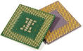

|

CPU Benchmarks
Over 800,000 CPUs Benchmarked |
|
CPU ListBelow is an alphabetical list of all CPU types that appear in the charts. Clicking on a specific processor name will take you to the chart it appears in and will highlight it for you. |
Single CPU Systems Last Updated: 31st of May 2017


CPU Name |
Price1 |
CPU Mark |
CPU Value2 |
Single Thread Mark |
Single Thread Value3 |
TDP (W) |
Power Perf.4 |
Test Date5 |
Socket |
Category |
|---|---|---|---|---|---|---|---|---|---|---|
| 686 Gen | NA | 288 | NA | NA | NA | NA | NA | Feb 2009 | NA | Unknown |
| AMD A10 Micro-6700T APU | NA | 1787 | NA | 738 | NA | 5 | 357 | May 2015 | FT3b | Laptop |
| AMD A10 PRO-7350B APU | NA | 3278 | NA | 1052 | NA | 19 | 172 | Jun 2014 | FP3 | Laptop |
| AMD A10 PRO-7800B APU | NA | 5424 | NA | 1595 | NA | 65 | 83 | Oct 2014 | FM2+ | Desktop |
| AMD A10 PRO-7850B APU | NA | 5614 | NA | 1506 | NA | 95 | 59 | Nov 2014 | FM2+ | Desktop |
| AMD A10-4600M APU | NA | 3111 | NA | 1004 | NA | 35 | 88 | Apr 2012 | FS1r2 | Laptop |
| AMD A10-4655M APU | NA | 2584 | NA | 855 | NA | 25 | 103 | Jul 2012 | FP2 | Laptop |
| AMD A10-4657M APU | NA | 2906 | NA | 887 | NA | 35 | 83 | May 2013 | FP2 | Laptop |
| AMD A10-5700 APU | $149.00 | 4202 | 28.20 | 1360 | 9.13 | 65 | 64 | Jun 2012 | FM2 | Desktop |
| AMD A10-5745M APU | NA | 2767 | NA | 923 | NA | 25 | 110 | Jul 2013 | FP2 | Laptop |
| AMD A10-5750M APU | NA | 3343 | NA | 1113 | NA | 35 | 95 | May 2013 | FS1r2 | Laptop |
| AMD A10-5757M APU | NA | 3099 | NA | 1075 | NA | 35 | 88 | Jul 2013 | FP2 | Laptop |
| AMD A10-5800B APU | NA | 4572 | NA | 1526 | NA | 100 | 45 | Jul 2013 | FM2 | Desktop |
| AMD A10-5800K APU | $129.88* | 4633 | 35.67 | 1459 | 11.23 | 100 | 46 | Oct 2012 | FM2 | Desktop |
| AMD A10-6700 APU | $149.99 | 4597 | 30.65 | 1521 | 10.14 | 65 | 70 | Jun 2013 | FM2 | Desktop |
| AMD A10-6700T APU | $260.78* | 3702 | 14.20 | 1192 | 4.57 | 45 | 82 | Jun 2014 | FM2 | Desktop |
| AMD A10-6790K APU | $144.99 | 4665 | 32.18 | 1473 | 10.16 | 100 | 46 | Dec 2013 | FM2 | Desktop |
| AMD A10-6800B APU | NA | 4990 | NA | 1630 | NA | 100 | 49 | Feb 2014 | FM2 | Desktop |
| AMD A10-6800K APU | $109.20 | 4891 | 44.79 | 1541 | 14.11 | 100 | 48 | Jun 2013 | FM2 | Desktop |
| AMD A10-7300 APU | NA | 2939 | NA | 979 | NA | 19 | 154 | Jul 2014 | FP3 | Laptop |
| AMD A10-7400P | NA | 3664 | NA | 1124 | NA | 35 | 104 | Dec 2014 | FP3 | Laptop |
| AMD A10-7700K APU | $84.95 | 5158 | 60.72 | 1493 | 17.58 | 95 | 54 | Jan 2014 | FM2+ | Desktop |
| AMD A10-7800 APU | $104.99* | 5062 | 48.22 | 1537 | 14.64 | 65 | 77 | Jun 2014 | FM2+ | Desktop |
| AMD A10-7850K APU | $122.00 | 5500 | 45.08 | 1569 | 12.86 | 95 | 57 | Jan 2014 | FM2+ | Desktop |
| AMD A10-7860K | $99.99 | 5140 | 51.41 | 1580 | 15.80 | 65 | 79 | Mar 2016 | FM2+ | Desktop |
| AMD A10-7870K | $120.44* | 5496 | 45.64 | 1543 | 12.82 | 95 | 57 | Jun 2015 | FM2+ | Desktop |
| AMD A10-7890K | $149.99 | 5753 | 38.36 | 1715 | 11.43 | 95 | 60 | Apr 2016 | FM2+ | Desktop |
| AMD A10-8700P | NA | 3464 | NA | 1211 | NA | 35 | 98 | Jul 2015 | FP4 | Laptop |
| AMD A10-8750 | NA | 5177 | NA | 1637 | NA | 65 | 79 | Sep 2015 | FM2+ | Desktop |
| AMD A10-8850 | NA | 5613 | NA | 1736 | NA | NA | NA | May 2016 | NA | Desktop |
| AMD A10-9600P | NA | 3866 | NA | 1376 | NA | 15 | 257 | Jun 2016 | FP4 | Laptop |
| AMD A10-9630P | NA | 4562 | NA | 1563 | NA | 35 | 130 | Aug 2016 | FP4 | Laptop |
| AMD A10-9700 | NA | 5457 | NA | 1713 | NA | 65 | 83 | Dec 2016 | AM4 | Desktop |
| AMD A12-9700P | NA | 3871 | NA | 1357 | NA | 15 | 258 | Aug 2016 | FP4 | Laptop |
| AMD A12-9800 | NA | 5737 | NA | 1847 | NA | 65 | 88 | Oct 2016 | AM4 | Desktop |
| AMD A4 Micro-6400T APU | NA | 1544 | NA | 585 | NA | 4.5 | 343 | Nov 2014 | FT3b | Laptop |
| AMD A4 PRO-3340B | NA | 2466 | NA | 876 | NA | 25 | 98 | Nov 2015 | BGA769 (FT3) | Laptop |
| AMD A4 PRO-7300B APU | NA | 2342 | NA | 1445 | NA | 65 | 36 | Dec 2014 | NA | Desktop |
| AMD A4 PRO-7350B | NA | 2794 | NA | 1386 | NA | 65 | 42 | Dec 2014 | FM2+ | Desktop |
| AMD A4-1200 APU | NA | 632 | NA | 370 | NA | 3.9 | 162 | Oct 2013 | FT3 | Laptop |
| AMD A4-1250 APU | NA | 610 | NA | 357 | NA | 8 | 76 | Jul 2013 | FT3 | Laptop |
| AMD A4-3300 APU | $22.99 | 1508 | 65.61 | 841 | 36.60 | 65 | 23 | Nov 2011 | FM1 | Desktop |
| AMD A4-3300M APU | $29.99* | 1189 | 39.65 | 626 | 20.90 | 65 | 18 | Jul 2011 | FM1 | Laptop |
| AMD A4-3305M APU | $30.00* | 1218 | 40.63 | 676 | 22.56 | 35 | 34 | Feb 2012 | FS1 | Laptop |
| AMD A4-3310MX APU | NA | 1313 | NA | 708 | NA | 45 | 29 | Oct 2011 | FS1 | Laptop |
| AMD A4-3320M APU | $31.00* | 1247 | 40.24 | 654 | 21.13 | 35 | 35 | Mar 2012 | FS1 | Laptop |
| AMD A4-3330MX APU | NA | 1217 | NA | 677 | NA | 45 | 27 | Mar 2013 | FS1 uPGA | Laptop |
| AMD A4-3400 APU | $87.95 | 1595 | 18.14 | 903 | 10.27 | 65 | 24 | Sep 2011 | FM1 | Desktop |
| AMD A4-3420 APU | NA | 1684 | NA | 930 | NA | 65 | 25 | Jan 2012 | FM1 | Desktop |
| AMD A4-4000 APU | $43.00 | 1816 | 42.25 | 1127 | 26.22 | 65 | 27 | May 2013 | FM2 | Desktop |
| AMD A4-4020 APU | $70.80* | 1835 | 25.92 | 1156 | 16.34 | 65 | 28 | Jul 2014 | FM2 | Desktop |
| AMD A4-4300M APU | $39.86 | 1677 | 42.10 | 1036 | 26.01 | 35 | 47 | May 2012 | FS1 | Laptop |
| AMD A4-4355M APU | NA | 1161 | NA | 688 | NA | 17 | 68 | Dec 2012 | FP2 | Laptop |
| AMD A4-5000 APU | NA | 1900 | NA | 585 | NA | 15 | 126 | Aug 2013 | FT3 | Laptop |
| AMD A4-5050 APU | NA | 2251 | NA | 624 | NA | 13.5 | 166 | May 2017 | FT3 | Laptop |
| AMD A4-5100 APU | NA | 2067 | NA | 620 | NA | 15 | 137 | Jul 2015 | FT3 | Laptop |
| AMD A4-5150M APU | NA | 1860 | NA | 1117 | NA | 35 | 53 | Jul 2013 | FS1r2 | Laptop |
| AMD A4-5300 APU | $43.39 | 1998 | 46.06 | 1252 | 28.87 | 65 | 30 | Oct 2012 | FM2 | Desktop |
| AMD A4-5300B APU | $38.00* | 2039 | 53.68 | 1285 | 33.84 | 65 | 31 | Dec 2012 | FM2 | Desktop |
| AMD A4-6210 APU | NA | 2136 | NA | 693 | NA | 15 | 142 | Jul 2014 | FT3b | Laptop |
| AMD A4-6250J APU | NA | 2552 | NA | 792 | NA | 25 | 102 | Dec 2014 | NA | Unknown |
| AMD A4-6300 APU | $35.88 | 2218 | 61.83 | 1363 | 37.99 | 65 | 34 | Nov 2013 | FM2 | Desktop |
| AMD A4-6300B APU | $100.00* | 2070 | 20.71 | 1394 | 13.94 | 65 | 31 | Dec 2013 | NA | Desktop |
| AMD A4-6320 APU | $49.74 | 2322 | 46.69 | 1427 | 28.70 | 65 | 35 | Apr 2014 | FM2 | Desktop |
| AMD A4-7210 APU | NA | 2510 | NA | 836 | NA | 25 | 100 | Jul 2015 | BGA | Laptop |
| AMD A4-7300 APU | $42.06 | 2251 | 53.53 | 1372 | 32.63 | 65 | 34 | Sep 2014 | FM2 | Desktop |
| AMD A6 Micro-6500T APU | NA | 1834 | NA | 699 | NA | NA | NA | Jan 2016 | NA | Laptop |
| AMD A6 PRO-7050B APU | NA | 1549 | NA | 829 | NA | 17 | 91 | Sep 2014 | FP3 | Laptop |
| AMD A6 PRO-7400B | NA | 2697 | NA | 1594 | NA | 65 | 41 | Dec 2014 | FM2+ | Desktop |
| AMD A6-1450 APU | NA | 1526 | NA | 503 | NA | 8 | 190 | May 2013 | FT3 | Laptop |
| AMD A6-3400M APU | $34.96* | 1902 | 54.42 | 539 | 15.43 | 35 | 54 | Jun 2011 | FS1 | Laptop |
| AMD A6-3410MX APU | $29.99* | 2077 | 69.28 | 591 | 19.73 | 45 | 46 | Jul 2011 | FS1 | Laptop |
| AMD A6-3420M APU | NA | 2022 | NA | 593 | NA | 35 | 57 | Jan 2012 | FS1 | Laptop |
| AMD A6-3430MX APU | NA | 2224 | NA | 652 | NA | 45 | 49 | Feb 2012 | FS1 | Laptop |
| AMD A6-3500 APU | $39.99* | 2004 | 50.13 | 747 | 18.69 | 65 | 30 | Sep 2011 | FM1 | Desktop |
| AMD A6-3600 APU | $149.99 | 2712 | 18.09 | 757 | 5.05 | 65 | 41 | Nov 2011 | FM1 | Desktop |
| AMD A6-3620 APU | $59.99* | 2824 | 47.09 | 789 | 13.16 | 65 | 43 | Feb 2012 | FM1 | Desktop |
| AMD A6-3650 APU | $149.99* | 3173 | 21.16 | 902 | 6.02 | 100 | 31 | Jul 2011 | FM1 | Desktop |
| AMD A6-3670 APU | $198.33 | 3209 | 16.18 | 938 | 4.73 | 100 | 32 | Jan 2012 | FM1 | Desktop |
| AMD A6-4400M APU | $39.86* | 1621 | 40.69 | 992 | 24.91 | 35 | 46 | Apr 2012 | FS1r2 | Laptop |
| AMD A6-4455M APU | NA | 1277 | NA | 761 | NA | 17 | 75 | Jul 2012 | FP2 | Laptop |
| AMD A6-5200 APU | NA | 2397 | NA | 777 | NA | 25 | 95 | Jul 2013 | FT3 | Laptop |
| AMD A6-5345M APU | NA | 1481 | NA | 868 | NA | 17 | 87 | Apr 2014 | FP2 | Laptop |
| AMD A6-5350M APU | $59.95* | 1902 | 31.73 | 1155 | 19.28 | 35 | 54 | Jul 2013 | FS1r2 | Laptop |
| AMD A6-5357M APU | NA | 1867 | NA | 1108 | NA | 35 | 53 | Oct 2013 | FP2 | Laptop |
| AMD A6-5400B APU | $105.04* | 2216 | 21.10 | 1352 | 12.88 | 65 | 34 | Nov 2013 | FM2 | Desktop |
| AMD A6-5400K APU | $41.45 | 2140 | 51.64 | 1310 | 31.61 | 65 | 32 | Oct 2012 | FM2 | Desktop |
| AMD A6-6310 APU | NA | 2410 | NA | 840 | NA | 15 | 160 | Jul 2014 | FT3 | Laptop |
| AMD A6-6400B APU | NA | 2414 | NA | 1467 | NA | 65 | 37 | Feb 2014 | FM2 | Desktop |
| AMD A6-6400K APU | $43.17 | 2292 | 53.10 | 1406 | 32.58 | 65 | 35 | Jul 2013 | FM2 | Desktop |
| AMD A6-6420B APU | NA | 2612 | NA | 1579 | NA | 65 | 40 | Nov 2014 | FM2 | Desktop |
| AMD A6-6420K APU | $60.35 | 2256 | 37.39 | 1447 | 23.99 | 65 | 34 | Oct 2014 | FM2 | Desktop |
| AMD A6-7000 | NA | 1681 | NA | 915 | NA | 17 | 98 | Feb 2015 | FP3 | Laptop |
| AMD A6-7310 APU | NA | 2655 | NA | 909 | NA | 25 | 106 | Jun 2015 | NA | Laptop |
| AMD A6-7400K APU | $53.61 | 2793 | 52.11 | 1572 | 29.33 | 65 | 42 | Oct 2014 | FM2+ | Desktop |
| AMD A6-7470K | $53.01 | 2804 | 52.91 | 1621 | 30.60 | 65 | 43 | May 2016 | FM2+ | Desktop |
| AMD A6-8500P | NA | 2183 | NA | 1310 | NA | 15 | 145 | May 2016 | BGA (FP4) | Laptop |
| AMD A6-8550 | NA | 3104 | NA | 1703 | NA | 65 | 47 | Nov 2015 | FM2+ | Desktop |
| AMD A6-9210 | NA | 1924 | NA | 1190 | NA | 15 | 128 | Jul 2016 | FP4 | Laptop |
| AMD A6-9500 | NA | 3212 | NA | 1739 | NA | 65 | 49 | Dec 2016 | AM4 | Desktop |
| AMD A8 PRO-7150B APU | NA | 2732 | NA | 850 | NA | 19 | 143 | Jul 2014 | FP3 | Laptop |
| AMD A8 PRO-7600B APU | NA | 4823 | NA | 1437 | NA | 65 | 74 | Sep 2014 | FM2+ | Desktop |
| AMD A8-3500M APU | $49.00* | 1974 | 40.29 | 554 | 11.31 | 35 | 56 | Jul 2011 | FS1 | Laptop |
| AMD A8-3510MX APU | NA | 2389 | NA | 691 | NA | 45 | 53 | Aug 2011 | FS1 | Laptop |
| AMD A8-3520M APU | NA | 2201 | NA | 640 | NA | 35 | 62 | Jan 2012 | FS1 | Laptop |
| AMD A8-3530MX APU | NA | 2380 | NA | 695 | NA | 45 | 52 | Jul 2011 | FS1 | Laptop |
| AMD A8-3550MX APU | NA | 2629 | NA | 732 | NA | 45 | 58 | Mar 2012 | FS1 | Laptop |
| AMD A8-3800 APU | $177.34* | 3082 | 17.38 | 861 | 4.86 | 65 | 47 | Sep 2011 | FM1 | Desktop |
| AMD A8-3820 APU | $124.99* | 3151 | 25.21 | 873 | 6.99 | 65 | 48 | Jan 2012 | FM1 | Desktop |
| AMD A8-3850 APU | $199.99* | 3489 | 17.45 | 995 | 4.98 | 100 | 34 | Jun 2011 | FM1 | Desktop |
| AMD A8-3870K APU | $201.19 | 3595 | 17.87 | 1031 | 5.13 | 100 | 35 | Dec 2011 | FM1 | Desktop |
| AMD A8-4500M APU | NA | 2656 | NA | 854 | NA | 35 | 75 | May 2012 | FS1r2 | Laptop |
| AMD A8-4555M APU | NA | 2119 | NA | 715 | NA | 19 | 111 | Oct 2012 | FP2 | Laptop |
| AMD A8-5500 APU | $129.00* | 3983 | 30.88 | 1269 | 9.84 | 65 | 61 | Jun 2012 | FM2 | Desktop |
| AMD A8-5500B APU | NA | 3832 | NA | 1264 | NA | 65 | 58 | Mar 2013 | FM2 | Desktop |
| AMD A8-5545M APU | NA | 2556 | NA | 829 | NA | 19 | 134 | Aug 2013 | FP2 | Laptop |
| AMD A8-5550M APU | NA | 2998 | NA | 990 | NA | 35 | 85 | Jul 2013 | FS1r2 | Laptop |
| AMD A8-5557M APU | NA | 2962 | NA | 1012 | NA | 35 | 84 | Jul 2013 | FP2 | Laptop |
| AMD A8-5600K APU | $115.00 | 4323 | 37.60 | 1376 | 11.97 | 100 | 43 | Oct 2012 | FM2 | Desktop |
| AMD A8-6410 APU | NA | 2534 | NA | 885 | NA | 15 | 168 | Jun 2014 | BGA769 (FT3b) | Laptop |
| AMD A8-6500 APU | $153.99 | 4386 | 28.49 | 1445 | 9.39 | 65 | 67 | Aug 2013 | FM2 | Desktop |
| AMD A8-6500B APU | NA | 4582 | NA | 1481 | NA | 65 | 70 | Apr 2014 | FM2 | Desktop |
| AMD A8-6500T APU | NA | 3221 | NA | 1051 | NA | 45 | 71 | Mar 2014 | FM2 | Desktop |
| AMD A8-6600K APU | $189.99 | 4571 | 24.06 | 1459 | 7.68 | 100 | 45 | Jun 2013 | FM2 | Desktop |
| AMD A8-7050 | NA | 1986 | NA | 1030 | NA | NA | NA | Jan 2016 | NA | Laptop |
| AMD A8-7100 APU | NA | 2827 | NA | 973 | NA | 19 | 148 | Aug 2014 | FP3 | Laptop |
| AMD A8-7200P | NA | 3366 | NA | 979 | NA | 35 | 96 | Jul 2015 | FP3 | Laptop |
| AMD A8-7410 APU | NA | 2702 | NA | 924 | NA | 25 | 108 | Jun 2015 | NA | Laptop |
| AMD A8-7600 APU | $58.64 | 5132 | 87.53 | 1539 | 26.25 | 65 | 78 | Jul 2014 | FM2+ | Desktop |
| AMD A8-7650K | $72.54 | 4960 | 68.38 | 1442 | 19.88 | 65 | 76 | Feb 2015 | FM2+ | Desktop |
| AMD A8-7670K | $99.99 | 5072 | 50.73 | 1515 | 15.16 | 95 | 53 | Sep 2015 | FM2+ | Desktop |
| AMD A8-8600P | NA | 3251 | NA | 1148 | NA | 15 | 216 | Aug 2015 | FP4 | Laptop |
| AMD A8-8650 | NA | 5487 | NA | 1609 | NA | 65 | 84 | Nov 2015 | FM2+ | Desktop |
| AMD A8-9600 | NA | 5270 | NA | 1623 | NA | 65 | 81 | Apr 2017 | AM4 | Desktop |
| AMD A9-9400 | NA | 2276 | NA | 1291 | NA | NA | NA | Dec 2016 | FP4 | Laptop |
| AMD A9-9410 | NA | 2600 | NA | 1568 | NA | 25 | 104 | Jul 2016 | FP4 | Laptop |
| AMD Athlon 1500+ | NA | 294 | NA | 422 | NA | NA | NA | Mar 2009 | NA | Unknown |
| AMD Athlon 1640B | $50.00* | 668 | 13.36 | 784 | 15.69 | 45 | 14 | May 2009 | AM2 | Desktop |
| AMD Athlon 1700+ | NA | 349 | NA | NA | NA | NA | NA | Jan 2012 | Socket A (462) | Unknown |
| AMD Athlon 2000+ | NA | 390 | NA | NA | NA | NA | NA | Aug 2009 | NA | Unknown |
| AMD Athlon 2100+ | NA | 412 | NA | NA | NA | NA | NA | Dec 2010 | NA | Unknown |
| AMD Athlon 2200+ | $79.99* | 363 | 4.55 | NA | NA | NA | NA | Sep 2009 | NA | Unknown |
| AMD Athlon 2400+ | NA | 462 | NA | NA | NA | NA | NA | Sep 2009 | NA | Unknown |
| AMD Athlon 2500+ | $84.99* | 374 | 4.41 | NA | NA | NA | NA | Jun 2009 | NA | Unknown |
| AMD Athlon 2600+ | $104.95* | 444 | 4.23 | NA | NA | NA | NA | Jun 2010 | NA | Unknown |
| AMD Athlon 2650e | $19.00* | 406 | 21.38 | 458 | 24.13 | NA | NA | Jan 2009 | NA | Unknown |
| AMD Athlon 2800+ | $49.99* | 447 | 8.96 | 674 | 13.50 | 89 | 5 | Mar 2009 | 754 | Unknown |
| AMD Athlon 2850e | NA | 498 | NA | 488 | NA | 22 | 22 | Nov 2009 | AM2 | Desktop |
| AMD Athlon 3100+ | NA | 485 | NA | NA | NA | NA | NA | Mar 2009 | NA | Unknown |
| AMD Athlon 3200+ | $128.45* | 458 | 3.57 | NA | NA | 62 | 7 | Aug 2010 | AM2 | Unknown |
| AMD Athlon 4 | $63.83 | 279 | 4.38 | NA | NA | NA | NA | Mar 2009 | NA | Unknown |
| AMD Athlon 5000 Dual-Core | $99.95* | 1285 | 12.86 | 743 | 7.44 | 65 | 19 | Oct 2009 | AM2,AM2+ | Desktop |
| AMD Athlon 5150 APU | $68.99 | 2091 | 30.31 | 633 | 9.18 | 25 | 83 | Apr 2014 | AM1,FS1b | Desktop |
| AMD Athlon 5200 Dual-Core | $90.33* | 1238 | 13.71 | 732 | 8.11 | NA | NA | Dec 2010 | NA | Unknown |
| AMD Athlon 5350 APU | $166.57 | 2578 | 15.48 | 808 | 4.85 | 25 | 103 | Mar 2014 | AM1,FS1B | Desktop |
| AMD Athlon 5370 APU | $63.70* | 2864 | 44.96 | 870 | 13.66 | 25 | 114 | Apr 2016 | AM1,FS1B | Desktop |
| AMD Athlon 64 2000+ | NA | 116 | NA | 130 | NA | 8 | 14 | Nov 2013 | NA | Unknown |
| AMD Athlon 64 2200+ | NA | 575 | NA | NA | NA | NA | NA | Sep 2011 | NA | Unknown |
| AMD Athlon 64 2600+ | NA | 374 | NA | 448 | NA | 15 | 24 | Nov 2013 | NA | Unknown |
| AMD Athlon 64 2800+ | $99.99* | 438 | 4.38 | 511 | 5.12 | 89 | 4 | Jan 2009 | 754 | Unknown |
| AMD Athlon 64 3000+ | $64.99* | 461 | 7.10 | 548 | 8.43 | 89 | 5 | Dec 2008 | Socket 754 | Desktop |
| AMD Athlon 64 3200+ | $149.95* | 491 | 3.28 | 577 | 3.85 | 62 | 7 | Dec 2008 | AM2 | Unknown |
| AMD Athlon 64 3300+ | NA | 576 | NA | 734 | NA | NA | NA | Mar 2009 | NA | Unknown |
| AMD Athlon 64 3400+ | NA | 544 | NA | 652 | NA | 89 | 6 | Jan 2009 | 754 | Unknown |
| AMD Athlon 64 3500+ | $59.00 | 537 | 9.11 | 616 | 10.44 | 45 | 11 | Dec 2008 | AM2 | Unknown |
| AMD Athlon 64 3600+ | NA | 601 | NA | NA | NA | NA | NA | Nov 2009 | Socket 754 | Desktop |
| AMD Athlon 64 3700+ | $69.00* | 599 | 8.69 | 656 | 9.52 | 89 | 6 | Dec 2008 | 939 | Unknown |
| AMD Athlon 64 3800+ | $159.95* | 589 | 3.68 | 675 | 4.22 | 45 | 13 | Jan 2009 | AM2 | Unknown |
| AMD Athlon 64 4000+ | $159.95 | 606 | 3.79 | 675 | 4.22 | 62 | 9 | Dec 2008 | AM2 | Unknown |
| AMD Athlon 64 FX-25 | NA | 794 | NA | NA | NA | 95 | 8 | Nov 2009 | AM2+ | Unknown |
| AMD Athlon 64 FX-34 | NA | 380 | NA | NA | NA | NA | NA | Oct 2009 | NA | Unknown |
| AMD Athlon 64 FX-51 | NA | 437 | NA | NA | NA | 89 | 4 | May 2009 | 940 | Desktop |
| AMD Athlon 64 FX-53 | $29.99* | 646 | 21.57 | NA | NA | 89 | 7 | Feb 2009 | 940 | Desktop |
| AMD Athlon 64 FX-55 | $179.95 | 721 | 4.01 | 767 | 4.26 | 104 | 6 | Feb 2009 | 939 | Desktop |
| AMD Athlon 64 FX-57 | NA | 730 | NA | 831 | NA | 104 | 7 | Mar 2009 | 939 | Desktop |
| AMD Athlon 64 FX-59 | NA | 715 | NA | 884 | NA | NA | NA | May 2013 | 939 | Desktop |
| AMD Athlon 64 FX-60 Dual Core | NA | 1287 | NA | 795 | NA | 110 | 11 | Feb 2009 | 939 | Desktop |
| AMD Athlon 64 FX-62 Dual Core | NA | 1571 | NA | 863 | NA | 125 | 12 | Feb 2009 | AM2 | Desktop |
| AMD Athlon 64 FX-72 | NA | 1794 | NA | NA | NA | 125 | 14 | May 2009 | F (1207) | Desktop |
| AMD Athlon 64 FX-74 | $499.50* | 1495 | 2.99 | 949 | 1.90 | 125 | 11 | Mar 2009 | F (1207) | Desktop |
| AMD Athlon 64 X2 3800+ | NA | 958 | NA | 646 | NA | 89 | 10 | May 2010 | NA | Desktop |
| AMD Athlon 64 X2 4200+ | $308.95* | 1285 | 4.16 | NA | NA | 89 | 14 | Apr 2009 | NA | Desktop |
| AMD Athlon 64 X2 4600+ | $349.95* | 1365 | 3.90 | NA | NA | 110 | 12 | Jul 2009 | NA | Desktop |
| AMD Athlon 64 X2 Dual Core 3400+ | NA | 1003 | NA | 544 | NA | 89 | 11 | Oct 2010 | 754 | Desktop |
| AMD Athlon 64 X2 Dual Core 3600+ | $60.00* | 970 | 16.17 | 593 | 9.88 | 65 | 14 | Dec 2008 | AM2 | Desktop |
| AMD Athlon 64 X2 Dual Core 3800+ | NA | 1003 | NA | 609 | NA | 89 | 11 | Nov 2008 | AM2 | Desktop |
| AMD Athlon 64 X2 Dual Core 4000+ | NA | 1042 | NA | 630 | NA | 65 | 16 | Dec 2008 | AM2 | Desktop |
| AMD Athlon 64 X2 Dual Core 4200+ | $159.95* | 1099 | 6.87 | 666 | 4.17 | 89 | 12 | Nov 2008 | AM2 | Desktop |
| AMD Athlon 64 X2 Dual Core 4400+ | $60.00* | 1146 | 19.11 | 691 | 11.53 | 65 | 17 | Dec 2008 | AM2 | Desktop |
| AMD Athlon 64 X2 Dual Core 4600+ | $359.95* | 1221 | 3.39 | 725 | 2.02 | 65 | 18 | Dec 2008 | AM2 | Desktop |
| AMD Athlon 64 X2 Dual Core 4800+ | $159.95 | 1265 | 7.91 | 748 | 4.68 | 65 | 19 | Nov 2008 | AM2 | Desktop |
| AMD Athlon 64 X2 Dual Core 5000+ | $331.49* | 1311 | 3.96 | 780 | 2.36 | 65 | 20 | Dec 2008 | AM2 | Desktop |
| AMD Athlon 64 X2 Dual Core 5200+ | $53.09* | 1383 | 26.06 | 809 | 15.25 | 65 | 21 | Nov 2008 | AM2 | Desktop |
| AMD Athlon 64 X2 Dual Core 5400+ | $52.99* | 1449 | 27.36 | 849 | 16.02 | 65 | 22 | Nov 2008 | AM2 | Desktop |
| AMD Athlon 64 X2 Dual Core 5600+ | $149.95* | 1476 | 9.84 | 848 | 5.66 | 65 | 22 | Nov 2008 | AM2 | Desktop |
| AMD Athlon 64 X2 Dual Core 5800+ | $90.00* | 1536 | 17.07 | 883 | 9.81 | 89 | 17 | Jan 2009 | NA | Desktop |
| AMD Athlon 64 X2 Dual Core 6000+ | $159.99 | 1604 | 10.03 | 897 | 5.61 | 89 | 18 | Nov 2008 | AM2 | Desktop |
| AMD Athlon 64 X2 Dual Core 6400+ | $79.95 | 1794 | 22.44 | 967 | 12.11 | 125 | 14 | Nov 2008 | AM2 | Desktop |
| AMD Athlon 64 X2 Dual Core BE-230 | NA | 1095 | NA | NA | NA | 45 | 24 | Jan 2010 | NA | Unknown |
| AMD Athlon 64 X2 Dual Core BE-2300 | NA | 1082 | NA | 585 | NA | 45 | 24 | Nov 2011 | AM2 | Desktop |
| AMD Athlon 64 X2 Dual Core BE-2350 | NA | 1044 | NA | 631 | NA | 45 | 23 | May 2009 | AM2 | Desktop |
| AMD Athlon 64 X2 Dual Core TK-53 | $34.95* | 839 | 24.03 | 480 | 13.75 | 31 | 27 | Mar 2009 | NA | Unknown |
| AMD Athlon 64 X2 Dual Core TK-55 | $57.74* | 839 | 14.53 | 553 | 9.59 | 31 | 27 | Nov 2009 | NA | Unknown |
| AMD Athlon 64 X2 Dual Core TK-57 | NA | 971 | NA | NA | NA | 31 | 31 | Aug 2010 | NA | Unknown |
| AMD Athlon 64 X2 Dual-Core TK-42 | NA | 876 | NA | 473 | NA | 20 | 43 | Jul 2009 | NA | Unknown |
| AMD Athlon 64 X2 Dual-Core TK-53 | NA | 804 | NA | 513 | NA | 31 | 25 | Feb 2009 | NA | Unknown |
| AMD Athlon 64 X2 Dual-Core TK-55 | $72.74* | 881 | 12.12 | 540 | 7.43 | 35 | 25 | Dec 2008 | NA | Unknown |
| AMD Athlon 64 X2 Dual-Core TK-57 | NA | 918 | NA | 565 | NA | 31 | 29 | Feb 2009 | NA | Unknown |
| AMD Athlon 64 X2 QL-60 | NA | 923 | NA | 534 | NA | 35 | 26 | Mar 2009 | S1 | Laptop |
| AMD Athlon 64 X2 QL-62 | NA | 1026 | NA | 571 | NA | 35 | 29 | Jan 2009 | S1 | Laptop |
| AMD Athlon 64 X2 QL-64 | NA | 974 | NA | 579 | NA | 35 | 27 | Mar 2009 | S1 | Laptop |
| AMD Athlon 64 X2 QL-65 | NA | 1036 | NA | 584 | NA | 35 | 29 | Nov 2009 | S1 | Laptop |
| AMD Athlon 64 X2 QL-66 | NA | 948 | NA | 538 | NA | 35 | 27 | Oct 2009 | S1 | Laptop |
| AMD Athlon 64 X2 QL-67 | NA | 1006 | NA | 469 | NA | 35 | 28 | Dec 2009 | S1 | Laptop |
| AMD Athlon 64 X2 TK-55 | NA | 955 | NA | NA | NA | 31 | 30 | Aug 2010 | NA | Unknown |
| AMD Athlon 64 X2 TK-57 | NA | 988 | NA | NA | NA | 31 | 31 | Feb 2010 | NA | Unknown |
| AMD Athlon 7450 Dual-Core | NA | 1428 | NA | 798 | NA | 95 | 15 | Apr 2009 | AM2+ | Desktop |
| AMD Athlon 7550 Dual-Core | $60.00* | 1453 | 24.23 | 845 | 14.09 | 95 | 15 | May 2009 | AM2+ | Desktop |
| AMD Athlon 7750 Dual-Core | $89.99 | 1576 | 17.52 | 901 | 10.02 | 95 | 16 | Jan 2009 | AM2+ | Desktop |
| AMD Athlon 7850 Dual-Core | $209.65* | 1717 | 8.19 | 955 | 4.56 | 95 | 18 | May 2009 | AM2+ | Desktop |
| AMD Athlon 7850 Dual-Core 2.8G | NA | 288 | NA | NA | NA | 95 | 3 | Apr 2011 | AM2+ | Desktop |
| AMD Athlon Dual Core 4050e | NA | 1086 | NA | 640 | NA | 45 | 24 | Feb 2009 | AM2 | Desktop |
| AMD Athlon Dual Core 4450B | $17.00* | 1170 | 68.85 | 691 | 40.70 | 45 | 26 | Mar 2009 | AM2+ | Desktop |
| AMD Athlon Dual Core 4450e | NA | 1101 | NA | 667 | NA | 45 | 24 | Feb 2009 | AM2 | Desktop |
| AMD Athlon Dual Core 4850B | NA | 1471 | NA | 752 | NA | 45 | 32 | Oct 2010 | AM2+ | Desktop |
| AMD Athlon Dual Core 4850e | $39.00* | 1314 | 33.70 | 748 | 19.20 | 45 | 29 | Feb 2009 | AM2 | Desktop |
| AMD Athlon Dual Core 5000B | $95.00* | 1304 | 13.73 | 778 | 8.19 | 65 | 20 | May 2009 | AM2 | Desktop |
| AMD Athlon Dual Core 5050e | $60.00* | 1349 | 22.49 | 781 | 13.03 | 45 | 29 | Feb 2009 | AM2 | Desktop |
| AMD Athlon Dual Core 5200B | NA | 1334 | NA | 817 | NA | 65 | 20 | Apr 2009 | AM2 | Desktop |
| AMD Athlon Dual Core 5400B | NA | 1425 | NA | 836 | NA | 65 | 21 | Jun 2009 | AM2 | Desktop |
| AMD Athlon Dual Core 5600B | NA | 1304 | NA | 895 | NA | 65 | 20 | Mar 2012 | AM2+ | Desktop |
| AMD Athlon II 160u | $29.99* | 552 | 18.44 | 552 | 18.41 | 20 | 27 | Jun 2010 | NA | Desktop |
| AMD Athlon II 170u | $29.95* | 624 | 20.86 | 633 | 21.16 | 20 | 31 | Oct 2010 | AM2+,AM3 | Desktop |
| AMD Athlon II Dual-Core M300 | NA | 1118 | NA | 639 | NA | 35 | 31 | Oct 2009 | NA | Unknown |
| AMD Athlon II Dual-Core M320 | $30.00* | 1147 | 38.25 | 670 | 22.34 | 35 | 32 | Nov 2009 | NA | Unknown |
| AMD Athlon II Dual-Core M340 | NA | 1040 | NA | 682 | NA | 35 | 29 | Jun 2010 | NA | Unknown |
| AMD Athlon II N330 Dual-Core | NA | 1154 | NA | 712 | NA | 35 | 32 | Jul 2010 | NA | Unknown |
| AMD Athlon II N350 Dual-Core | NA | 1225 | NA | 722 | NA | 35 | 35 | Dec 2010 | NA | Unknown |
| AMD Athlon II N370 Dual-Core | NA | 1559 | NA | 800 | NA | 35 | 44 | May 2012 | S1 | Unknown |
| AMD Athlon II Neo K125 | NA | 474 | NA | 510 | NA | 12 | 39 | Jun 2010 | S1 | Laptop |
| AMD Athlon II Neo K145 | NA | 543 | NA | 578 | NA | 12 | 45 | Jan 2011 | S1 | Laptop |
| AMD Athlon II Neo K325 Dual-Core | $25.99* | 787 | 30.29 | 434 | 16.72 | 12 | 65 | Jun 2010 | NA | Laptop |
| AMD Athlon II Neo K345 Dual-Core | NA | 856 | NA | 472 | NA | 12 | 71 | Jan 2011 | NA | Laptop |
| AMD Athlon II Neo N36L Dual-Core | NA | 817 | NA | 436 | NA | 12 | 68 | Dec 2010 | NA | Laptop |
| AMD Athlon II P320 Dual-Core | $34.95* | 1215 | 34.76 | 674 | 19.29 | 25 | 48 | Jun 2010 | NA | Unknown |
| AMD Athlon II P340 Dual-Core | $44.95* | 1251 | 27.85 | 704 | 15.67 | 25 | 50 | Oct 2010 | NA | Unknown |
| AMD Athlon II P360 Dual-Core | $18.00 | 1319 | 73.30 | 754 | 41.91 | 25 | 52 | Feb 2011 | NA | Unknown |
| AMD Athlon II X2 210e | NA | 1486 | NA | 904 | NA | 45 | 33 | Dec 2010 | AM3 | Desktop |
| AMD Athlon II X2 215 | $45.00* | 1581 | 35.15 | 906 | 20.15 | 65 | 24 | Sep 2009 | AM3 | Desktop |
| AMD Athlon II X2 220 | $32.19 | 1631 | 50.69 | 933 | 28.99 | 65 | 25 | Jun 2010 | AM3 | Desktop |
| AMD Athlon II X2 225 | NA | 1526 | NA | NA | NA | 65 | 23 | Jun 2012 | AM2+/AM3 | Unknown |
| AMD Athlon II X2 235e | $83.74* | 1657 | 19.79 | 915 | 10.94 | 45 | 36 | Oct 2009 | AM3 | Desktop |
| AMD Athlon II X2 240 | $34.95 | 1641 | 46.98 | 938 | 26.85 | 65 | 25 | Aug 2009 | AM3 | Desktop |
| AMD Athlon II X2 240e | $34.95 | 1699 | 48.61 | 955 | 27.34 | 45 | 37 | Dec 2009 | AM3 | Desktop |
| AMD Athlon II X2 245 | $34.95* | 1687 | 48.27 | 973 | 27.86 | 65 | 25 | Jul 2009 | AM2+/AM3 | Desktop |
| AMD Athlon II X2 245e | $80.00* | 1718 | 21.48 | 961 | 12.02 | 45 | 38 | Mar 2011 | AM3 | Desktop |
| AMD Athlon II X2 250 | $39.95 | 1750 | 43.81 | 1007 | 25.22 | 65 | 26 | Jun 2009 | AM3 | Desktop |
| AMD Athlon II X2 250e | $76.73* | 1949 | 25.41 | 1080 | 14.08 | 45 | 43 | Jun 2011 | AM3 | Desktop |
| AMD Athlon II X2 250u | $34.95 | 1006 | 28.80 | 555 | 15.89 | 25 | 40 | Feb 2010 | AM3 | Desktop |
| AMD Athlon II X2 255 | $59.98* | 1845 | 30.76 | 1045 | 17.43 | 65 | 28 | Jan 2010 | AM3 | Desktop |
| AMD Athlon II X2 260 | $48.00* | 1885 | 39.29 | 1077 | 22.44 | 65 | 29 | Jul 2010 | AM3 | Desktop |
| AMD Athlon II X2 260u | $83.44* | 1121 | 13.44 | 619 | 7.43 | 25 | 44 | Dec 2010 | AM3 | Desktop |
| AMD Athlon II X2 265 | $82.88* | 1870 | 22.57 | 1108 | 13.38 | 65 | 28 | Nov 2010 | AM3 | Desktop |
| AMD Athlon II X2 270 | $99.99* | 1989 | 19.90 | 1154 | 11.55 | 65 | 30 | Aug 2011 | AM3 | Desktop |
| AMD Athlon II X2 270u | $67.67* | 1350 | 19.96 | 701 | 10.36 | 25 | 54 | Nov 2010 | AM3 | Desktop |
| AMD Athlon II X2 280 | $99.99* | 2183 | 21.84 | 1230 | 12.31 | 65 | 33 | Mar 2013 | AM3 | Unknown |
| AMD Athlon II X2 4300e | NA | 1464 | NA | 884 | NA | 13 | 112 | Jan 2012 | NA | Unknown |
| AMD Athlon II X2 4400e | NA | 1618 | NA | 920 | NA | 37 | 43 | Sep 2009 | NA | Unknown |
| AMD Athlon II X2 4450e | NA | 1504 | NA | 934 | NA | 45 | 33 | Sep 2010 | AM2 | Desktop |
| AMD Athlon II X2 B22 | $21.00* | 1699 | 80.93 | 962 | 45.82 | 65 | 26 | Jan 2010 | AM3 | Desktop |
| AMD Athlon II X2 B24 | $39.95 | 1789 | 44.80 | 1016 | 25.45 | 65 | 27 | Mar 2010 | AM3 | Desktop |
| AMD Athlon II X2 B26 | $31.00* | 1815 | 58.56 | 1093 | 35.26 | 65 | 27 | Sep 2011 | NA | Unknown |
| AMD Athlon II X2 B28 | $43.00* | 2118 | 49.26 | 1183 | 27.53 | 65 | 32 | Jul 2012 | AM3 | Desktop |
| AMD Athlon II X3 400e | $107.43* | 2018 | 18.79 | 751 | 7.00 | 45 | 44 | Dec 2009 | AM3 | Desktop |
| AMD Athlon II X3 405e | $79.99* | 2041 | 25.52 | 780 | 9.75 | 45 | 45 | Mar 2010 | AM3 | Desktop |
| AMD Athlon II X3 415e | $75.00* | 2246 | 29.95 | 854 | 11.39 | 45 | 49 | Oct 2010 | AM3 | Desktop |
| AMD Athlon II X3 420e | $116.15* | 2286 | 19.68 | 807 | 6.95 | 45 | 50 | Jun 2011 | AM3 | Desktop |
| AMD Athlon II X3 425 | $41.96* | 2325 | 55.41 | 926 | 22.09 | 95 | 24 | Aug 2009 | AM3 | Desktop |
| AMD Athlon II X3 425e | NA | 2239 | NA | NA | NA | 45 | 49 | Sep 2012 | AM3 | Desktop |
| AMD Athlon II X3 435 | $159.95* | 2473 | 15.46 | 1004 | 6.28 | 95 | 26 | Nov 2009 | AM3 | Desktop |
| AMD Athlon II X3 440 | $46.95 | 2568 | 54.70 | 1015 | 21.62 | 95 | 27 | Feb 2010 | AM3 | Desktop |
| AMD Athlon II X3 445 | $91.00* | 2586 | 28.42 | 1050 | 11.54 | 95 | 27 | Jul 2010 | AM3 | Desktop |
| AMD Athlon II X3 450 | $44.95 | 2628 | 58.48 | 1058 | 23.54 | 95 | 27 | Nov 2010 | AM3 | Desktop |
| AMD Athlon II X3 455 | $87.69* | 2775 | 31.66 | 1131 | 12.90 | 95 | 29 | Dec 2010 | AM3 | Desktop |
| AMD Athlon II X3 460 | $49.99 | 2876 | 57.54 | 1169 | 23.38 | 95 | 30 | Aug 2011 | AM3 | Desktop |
| AMD Athlon II X4 553 | NA | 3814 | NA | 1010 | NA | NA | NA | Jan 2011 | NA | Unknown |
| AMD Athlon II X4 555 | NA | 3830 | NA | 1064 | NA | NA | NA | Dec 2010 | NA | Unknown |
| AMD Athlon II X4 559 | NA | 4156 | NA | 1156 | NA | NA | NA | Sep 2013 | NA | Unknown |
| AMD Athlon II X4 600e | $130.23* | 2342 | 17.99 | 684 | 5.25 | 45 | 52 | Dec 2009 | AM3 | Desktop |
| AMD Athlon II X4 605e | $101.80* | 2739 | 26.91 | 814 | 8.00 | 45 | 60 | Dec 2009 | AM3 | Desktop |
| AMD Athlon II X4 610e | $69.99* | 2811 | 40.17 | 833 | 11.91 | 45 | 62 | Aug 2010 | AM3 | Desktop |
| AMD Athlon II X4 615e | $59.00* | 2877 | 48.77 | 858 | 14.55 | 45 | 63 | Dec 2010 | AM3 | Desktop |
| AMD Athlon II X4 620 | $146.28* | 2950 | 20.17 | 907 | 6.20 | 95 | 31 | Sep 2009 | AM3 | Desktop |
| AMD Athlon II X4 620e | NA | 2906 | NA | NA | NA | 45 | 64 | Jan 2011 | AM3 | Desktop |
| AMD Athlon II X4 630 | $62.95 | 3146 | 49.99 | 955 | 15.18 | 95 | 33 | Aug 2009 | AM3 | Desktop |
| AMD Athlon II X4 631 Quad-Core | $19.99* | 3152 | 157.68 | 903 | 45.22 | 100 | 31 | Sep 2011 | FM1 | Desktop |
| AMD Athlon II X4 635 | $69.95 | 3264 | 46.67 | 991 | 14.18 | 95 | 34 | Feb 2010 | AM3 | Desktop |
| AMD Athlon II X4 638 Quad-Core | NA | 3198 | NA | 923 | NA | 65 | 49 | Apr 2015 | FM1 | Desktop |
| AMD Athlon II X4 640 | $79.95 | 3326 | 41.61 | 1026 | 12.84 | 95 | 35 | Jun 2010 | AM3 | Desktop |
| AMD Athlon II X4 6400e | NA | 2594 | NA | NA | NA | NA | NA | Dec 2009 | NA | Unknown |
| AMD Athlon II X4 641 Quad-Core | $91.50* | 3399 | 37.15 | 982 | 10.74 | 100 | 33 | Mar 2012 | FM1 | Desktop |
| AMD Athlon II X4 645 | $79.95 | 3495 | 43.72 | 1076 | 13.47 | 95 | 36 | Oct 2010 | AM3 | Desktop |
| AMD Athlon II X4 650 | $166.60* | 3469 | 20.83 | 1058 | 6.35 | 95 | 36 | Aug 2011 | NA | Unknown |
| AMD Athlon II X4 651 Quad-Core | $178.04* | 3569 | 20.05 | 1049 | 5.89 | 100 | 35 | Feb 2012 | FM1 | Unknown |
| AMD Athlon II X4 655 | NA | 2880 | NA | 1054 | NA | 95 | 30 | Jan 2014 | AM2+ (940-pin) | Unknown |
| AMD Athlon L110 | NA | 306 | NA | 343 | NA | 13 | 23 | Jul 2009 | NA | Unknown |
| AMD Athlon LE-1600 | $21.00* | 561 | 26.72 | 635 | 30.25 | 45 | 12 | Mar 2009 | AM2 | Desktop |
| AMD Athlon LE-1620 | $18.00* | 571 | 31.75 | 672 | 37.38 | 45 | 12 | Mar 2009 | AM2 | Desktop |
| AMD Athlon LE-1640 | NA | 623 | NA | 708 | NA | 45 | 13 | Feb 2009 | AM2 | Desktop |
| AMD Athlon LE-1660 | NA | 682 | NA | 746 | NA | 45 | 15 | Apr 2009 | AM2 | Desktop |
| AMD Athlon MP | $54.95* | 230 | 4.20 | NA | NA | NA | NA | Mar 2009 | NA | Unknown |
| AMD Athlon MP 1700+ | NA | 339 | NA | NA | NA | NA | NA | Jun 2010 | NA | Unknown |
| AMD Athlon MP 2400+ | NA | 436 | NA | NA | NA | NA | NA | Sep 2009 | NA | Unknown |
| AMD Athlon MP 2800+ | NA | 497 | NA | NA | NA | NA | NA | May 2009 | NA | Unknown |
| AMD Athlon Neo MV-40 | NA | 406 | NA | 432 | NA | 15 | 27 | Apr 2009 | NA | Unknown |
| AMD Athlon Neo X2 Dual Core 6850e | NA | 1002 | NA | 554 | NA | 22 | 45 | Nov 2009 | NA | Unknown |
| AMD Athlon Neo X2 Dual Core L325 | NA | 770 | NA | 449 | NA | 18 | 42 | Jan 2010 | NA | Unknown |
| AMD Athlon Neo X2 Dual Core L335 | NA | 814 | NA | 450 | NA | 18 | 45 | Aug 2009 | NA | Unknown |
| AMD Athlon QI-46 | NA | 473 | NA | NA | NA | NA | NA | Apr 2009 | NA | Unknown |
| AMD Athlon TF-20 | NA | 418 | NA | 430 | NA | 15 | 27 | Jun 2009 | NA | Unknown |
| AMD Athlon TF-36 | NA | 329 | NA | 298 | NA | 25 | 13 | May 2010 | NA | Unknown |
| AMD Athlon X2 215 | NA | 1575 | NA | 914 | NA | 65 | 24 | Nov 2010 | NA | Unknown |
| AMD Athlon X2 235e | NA | 1806 | NA | NA | NA | 45 | 40 | Jan 2010 | NA | Unknown |
| AMD Athlon X2 240 | NA | 1575 | NA | 946 | NA | 65 | 24 | Aug 2009 | NA | Unknown |
| AMD Athlon X2 240e | NA | 1670 | NA | 938 | NA | 45 | 37 | Jul 2011 | NA | Unknown |
| AMD Athlon X2 250 | NA | 1674 | NA | 994 | NA | 65 | 25 | Jun 2009 | NA | Unknown |
| AMD Athlon X2 255 | NA | 1627 | NA | 959 | NA | 65 | 25 | Jan 2012 | AM2+/AM3 | Unknown |
| AMD Athlon X2 280 | $174.81* | 2303 | 13.17 | 1102 | 6.31 | 65 | 35 | Mar 2014 | AM3 | Unknown |
| AMD Athlon X2 340 Dual Core | $29.99* | 1889 | 63.02 | 1261 | 42.06 | 65 | 29 | Jul 2013 | NA | Unknown |
| AMD Athlon X2 370K Dual Core | NA | 2229 | NA | 1460 | NA | 65 | 34 | Nov 2013 | NA | Unknown |
| AMD Athlon X2 440 | NA | 1424 | NA | NA | NA | NA | NA | Aug 2009 | NA | Unknown |
| AMD Athlon X2 Dual Core 3250e | NA | 771 | NA | 442 | NA | 22 | 35 | Oct 2009 | NA | Unknown |
| AMD Athlon X2 Dual Core 6850e | NA | 998 | NA | 556 | NA | 22 | 45 | Jul 2010 | NA | Unknown |
| AMD Athlon X2 Dual Core BE-2300 | NA | 963 | NA | 577 | NA | 45 | 21 | Feb 2009 | AM2 | Desktop |
| AMD Athlon X2 Dual Core BE-2350 | NA | 1098 | NA | 639 | NA | 45 | 24 | Mar 2009 | AM2 | Desktop |
| AMD Athlon X2 Dual Core BE-2400 | NA | 1236 | NA | 712 | NA | 18 | 68 | Mar 2009 | FT1 | Desktop |
| AMD Athlon X2 Dual Core BE-2450 | NA | 1251 | NA | NA | NA | 45 | 27 | Jun 2009 | NA | Unknown |
| AMD Athlon X2 Dual Core L310 | NA | 644 | NA | 348 | NA | 13 | 49 | Oct 2009 | NA | Unknown |
| AMD Athlon X2 Dual Core LS-5800 | NA | 1009 | NA | NA | NA | NA | NA | Feb 2012 | NA | Unknown |
| AMD Athlon X3 425 | NA | 2191 | NA | 701 | NA | 95 | 23 | Feb 2010 | NA | Unknown |
| AMD Athlon X3 435 | $95.49* | 2574 | 26.96 | 989 | 10.36 | 95 | 27 | Dec 2009 | NA | Unknown |
| AMD Athlon X3 440 | $87.99* | 2078 | 23.62 | 937 | 10.65 | 95 | 21 | Mar 2010 | NA | Unknown |
| AMD Athlon X3 445 | NA | 2314 | NA | NA | NA | 95 | 24 | Oct 2011 | NA | Unknown |
| AMD Athlon X3 450 | $78.99* | 3064 | 38.80 | NA | NA | 95 | 32 | Nov 2010 | NA | Unknown |
| AMD Athlon X3 455 | NA | 2401 | NA | 762 | NA | 95 | 25 | Oct 2012 | AM2+/AM3 | Unknown |
| AMD Athlon X4 605e | NA | 2505 | NA | NA | NA | 45 | 55 | Mar 2011 | NA | Unknown |
| AMD Athlon X4 620 | $64.95 | 2855 | 43.97 | 888 | 13.69 | 95 | 30 | Oct 2009 | NA | Unknown |
| AMD Athlon X4 635 | $121.99* | 2891 | 23.71 | NA | NA | 95 | 30 | Jul 2010 | NA | Unknown |
| AMD Athlon X4 640 | NA | 3172 | NA | 998 | NA | 95 | 33 | Sep 2010 | NA | Unknown |
| AMD Athlon X4 645 | NA | 3595 | NA | NA | NA | 95 | 37 | May 2011 | NA | Unknown |
| AMD Athlon X4 740 Quad Core | $277.00* | 3995 | 14.42 | 1291 | 4.66 | 65 | 61 | Nov 2012 | FM2 | Desktop |
| AMD Athlon X4 750 Quad Core | NA | 4551 | NA | 1462 | NA | 65 | 70 | Mar 2015 | FM2 | Desktop |
| AMD Athlon X4 750K Quad Core | $76.99* | 4224 | 54.87 | 1363 | 17.71 | 100 | 42 | Nov 2012 | FM2 | Unknown |
| AMD Athlon X4 760K Quad Core | $113.24* | 4577 | 40.43 | 1438 | 12.71 | 100 | 45 | Aug 2013 | FM2 | Desktop |
| AMD Athlon X4 840 | $90.66* | 5006 | 55.22 | 1531 | 16.89 | 65 | 77 | Jan 2015 | FM2+ | Desktop |
| AMD Athlon X4 845 | $53.37* | 5435 | 101.84 | 1752 | 32.84 | 65 | 83 | Mar 2016 | FM2+ | Desktop |
| AMD Athlon X4 860K | $108.67 | 5472 | 50.36 | 1594 | 14.67 | 95 | 57 | Sep 2014 | FM2+ | Desktop |
| AMD Athlon X4 870K | $69.99 | 5282 | 75.48 | 1555 | 22.22 | 95 | 55 | Mar 2016 | FM2+ | Desktop |
| AMD Athlon X4 880K | $87.94 | 5583 | 63.49 | 1634 | 18.59 | 95 | 58 | Apr 2016 | FM2+ | Desktop |
| AMD Athlon XP 1500 | NA | 282 | NA | NA | NA | NA | NA | Jan 2010 | NA | Unknown |
| AMD Athlon XP 1500+ | NA | 257 | NA | 385 | NA | NA | NA | Mar 2009 | NA | Unknown |
| AMD Athlon XP 1600+ | NA | 266 | NA | 407 | NA | NA | NA | Feb 2009 | NA | Unknown |
| AMD Athlon XP 1700 | NA | 344 | NA | NA | NA | NA | NA | Apr 2010 | NA | Unknown |
| AMD Athlon XP 1700+ | NA | 268 | NA | 418 | NA | NA | NA | Feb 2009 | NA | Unknown |
| AMD Athlon XP 1800+ | $58.95* | 300 | 5.09 | 461 | 7.83 | 66 | 4 | Mar 2009 | Socket A | Desktop |
| AMD Athlon XP 1900+ | NA | 305 | NA | 466 | NA | NA | NA | Mar 2009 | NA | Unknown |
| AMD Athlon XP 2000+ | $24.99* | 299 | 12.00 | 478 | 19.16 | 70 | 4 | Feb 2009 | Socket A | Desktop |
| AMD Athlon XP 2100+ | NA | 323 | NA | 502 | NA | NA | NA | Feb 2009 | NA | Unknown |
| AMD Athlon XP 2200+ | $84.95* | 327 | 3.86 | 513 | 6.05 | NA | NA | Feb 2009 | NA | Unknown |
| AMD Athlon XP 2300+ | NA | 464 | NA | NA | NA | NA | NA | Aug 2009 | NA | Unknown |
| AMD Athlon XP 2400+ | $89.99* | 362 | 4.03 | 578 | 6.43 | NA | NA | Feb 2009 | NA | Unknown |
| AMD Athlon XP 2500+ | NA | 355 | NA | 543 | NA | NA | NA | Dec 2008 | NA | Unknown |
| AMD Athlon XP 2600+ | $23.03* | 372 | 16.18 | 584 | 25.37 | NA | NA | Dec 2008 | NA | Unknown |
| AMD Athlon XP 2700+ | $84.79* | 393 | 4.64 | 611 | 7.22 | NA | NA | Dec 2008 | NA | Unknown |
| AMD Athlon XP 2800+ | NA | 398 | NA | 625 | NA | 89 | 4 | Jan 2009 | 754 | Unknown |
| AMD Athlon XP 2900+ | NA | 459 | NA | NA | NA | NA | NA | Apr 2009 | NA | Unknown |
| AMD Athlon XP 3000+ | $78.00* | 402 | 5.15 | 607 | 7.79 | 62 | 6 | Mar 2009 | Socket A | Desktop |
| AMD Athlon XP 3100+ | NA | 433 | NA | 662 | NA | NA | NA | Apr 2009 | NA | Unknown |
| AMD Athlon XP 3200+ | NA | 431 | NA | 662 | NA | 62 | 6 | Dec 2008 | AM2 | Unknown |
| AMD Athlon XP 3400+ | NA | 570 | NA | NA | NA | NA | NA | Sep 2009 | NA | Unknown |
| AMD Athlon XP Pro3+ | NA | 367 | NA | NA | NA | NA | NA | Feb 2010 | NA | Unknown |
| AMD Athlon XP-M | $139.99* | 541 | 3.86 | NA | NA | NA | NA | Mar 2009 | NA | Unknown |
| AMD Athlon XP1600+ | NA | 281 | NA | 418 | NA | NA | NA | Nov 2009 | NA | Unknown |
| AMD Athlon XP1700+ | NA | 234 | NA | 234 | NA | NA | NA | May 2009 | NA | Unknown |
| AMD Athlon XP1900+ | NA | 353 | NA | NA | NA | NA | NA | Apr 2009 | NA | Unknown |
| AMD Athlon XP2100+ | NA | 287 | NA | NA | NA | NA | NA | Jun 2009 | NA | Unknown |
| AMD Athlon XP2200+ | NA | 401 | NA | NA | NA | NA | NA | Feb 2010 | NA | Unknown |
| AMD Athlon XP2400+ | NA | 391 | NA | NA | NA | NA | NA | Sep 2009 | NA | Unknown |
| AMD Athlon64 X2 Dual Core 3800+ | NA | 997 | NA | 618 | NA | 89 | 11 | Mar 2009 | NA | Desktop |
| AMD Athlon64 X2 Dual Core 4200+ | NA | 1006 | NA | 636 | NA | 89 | 11 | Mar 2009 | NA | Desktop |
| AMD Athlon64 X2 Dual Core 4600+ | NA | 1108 | NA | 603 | NA | 110 | 10 | May 2009 | NA | Desktop |
| AMD C-30 | NA | 310 | NA | 317 | NA | 9 | 34 | May 2011 | FT1 | Laptop |
| AMD C-50 | NA | 462 | NA | 264 | NA | 9 | 51 | Jan 2011 | FT1 | Laptop |
| AMD C-60 | NA | 448 | NA | 316 | NA | 9 | 49 | Oct 2011 | NA | Unknown |
| AMD C-60 APU | NA | 543 | NA | 309 | NA | 9 | 60 | Aug 2011 | NA | Unknown |
| AMD C-70 APU | NA | 577 | NA | 315 | NA | 9 | 64 | Dec 2012 | NA | Unknown |
| AMD E-240 | NA | 319 | NA | 349 | NA | 18 | 17 | Feb 2011 | FT1 | Laptop |
| AMD E-300 APU | NA | 614 | NA | 342 | NA | 18 | 34 | Oct 2011 | FT1 | Laptop |
| AMD E-350 | NA | 748 | NA | 425 | NA | 18 | 41 | Jan 2011 | FT1 | Desktop, Laptop |
| AMD E-350 APU | NA | 774 | NA | 417 | NA | 18 | 43 | Oct 2012 | FT1 BGA | Desktop, Laptop |
| AMD E-350D APU | NA | 717 | NA | 427 | NA | 18 | 39 | Mar 2013 | NA | Unknown |
| AMD E-450 APU | NA | 769 | NA | 430 | NA | 18 | 42 | Aug 2011 | FT1 | Laptop |
| AMD E1 Micro-6200T APU | NA | 960 | NA | 552 | NA | 3.95 | 243 | Oct 2014 | FT3b | Laptop |
| AMD E1-1200 APU | NA | 666 | NA | 367 | NA | 18 | 37 | Aug 2012 | FT1 | Laptop |
| AMD E1-1500 APU | NA | 693 | NA | 391 | NA | 18 | 38 | Mar 2013 | FT1 | Laptop |
| AMD E1-2100 APU | NA | 627 | NA | 362 | NA | 9 | 69 | Jul 2013 | FT3 | Laptop |
| AMD E1-2200 APU | NA | 767 | NA | 417 | NA | 9 | 85 | Oct 2014 | FT3 | Laptop |
| AMD E1-2500 APU | NA | 884 | NA | 516 | NA | 15 | 58 | Sep 2013 | FT3 | Laptop |
| AMD E1-6010 APU | NA | 843 | NA | 482 | NA | 10 | 84 | Jul 2014 | FT3b | Laptop |
| AMD E1-6015 APU | NA | 880 | NA | 524 | NA | NA | NA | Jul 2015 | BGA769 (FT3b) | Laptop |
| AMD E1-7010 APU | NA | 972 | NA | 530 | NA | 10 | 97 | Jun 2016 | BGA769 (FT3b) | Laptop |
| AMD E2-1800 APU | NA | 822 | NA | 448 | NA | 18 | 45 | Jun 2012 | FT1 | Desktop |
| AMD E2-2000 APU | NA | 829 | NA | 458 | NA | 18 | 46 | Mar 2013 | BGA413,FT1 | Laptop |
| AMD E2-3000 APU | NA | 1080 | NA | 634 | NA | 15 | 72 | Feb 2014 | FT3 | Laptop |
| AMD E2-3000M APU | $20.00* | 1095 | 54.78 | 600 | 30.02 | 35 | 31 | Sep 2011 | FS1 | Laptop |
| AMD E2-3200 APU | NA | 1454 | NA | 814 | NA | 65 | 22 | Dec 2011 | FM1 | Desktop |
| AMD E2-3800 APU | NA | 1614 | NA | 501 | NA | 15 | 107 | Feb 2014 | FT3 | Laptop |
| AMD E2-6110 APU | NA | 1890 | NA | 575 | NA | 15 | 126 | Oct 2014 | AM1,FT3b | Laptop |
| AMD E2-7110 APU | NA | 2261 | NA | 699 | NA | 15 | 150 | Oct 2015 | FP4 BGA | Laptop |
| AMD E2-9000 | NA | 1856 | NA | 996 | NA | 10 | 185 | May 2017 | NA | Laptop |
| AMD E2-9010 | NA | 1921 | NA | 1052 | NA | 15 | 128 | Jan 2017 | FP4 | Laptop |
| AMD Embedded R-Series RX-421BD | NA | 4857 | NA | 1590 | NA | 35 | 138 | Nov 2015 | NA | Laptop |
| AMD FirePro A320 APU | NA | 4713 | NA | 1467 | NA | 100 | 47 | Aug 2016 | FM2 | Desktop |
| AMD FX-4100 Quad-Core | $149.95 | 4049 | 27.01 | 1220 | 8.14 | 95 | 42 | Oct 2011 | AM3+ | Desktop |
| AMD FX-4130 Quad-Core | $76.99 | 4159 | 54.03 | 1250 | 16.25 | 125 | 33 | Dec 2012 | AM3+ | Desktop |
| AMD FX-4150 Quad-Core | NA | 4576 | NA | 1359 | NA | 125 | 36 | Dec 2013 | AM3+ | Desktop |
| AMD FX-4170 Quad-Core | $143.61* | 4838 | 33.69 | 1400 | 9.75 | 125 | 38 | Mar 2012 | AM3+ | Desktop |
| AMD FX-4200 Quad-Core | $228.21* | 4264 | 18.69 | 1207 | 5.29 | 125 | 34 | Dec 2013 | AM3+ | Desktop |
| AMD FX-4300 Quad-Core | $65.99 | 4645 | 70.40 | 1406 | 21.31 | 95 | 48 | Dec 2012 | AM3+ | Desktop |
| AMD FX-4320 | NA | 5020 | NA | 1491 | NA | 95 | 52 | Jan 2016 | AM3+ | Desktop |
| AMD FX-4330 | NA | 5196 | NA | 1504 | NA | 95 | 54 | Dec 2015 | AM3+ | Desktop |
| AMD FX-4350 Quad-Core | $82.99 | 5298 | 63.84 | 1526 | 18.39 | 125 | 42 | Jun 2013 | AM3+ | Desktop |
| AMD FX-6100 Six-Core | $189.99 | 5407 | 28.46 | 1183 | 6.23 | 95 | 56 | Oct 2011 | AM3+ | Desktop |
| AMD FX-6120 Six-Core | NA | 5748 | NA | 1285 | NA | 95 | 60 | Jun 2012 | AM3+ | Desktop |
| AMD FX-6130 Six-Core | NA | 6215 | NA | 1313 | NA | 125 | 49 | Mar 2013 | NA | Desktop |
| AMD FX-6200 Six-Core | $125.54 | 6111 | 48.68 | 1303 | 10.39 | 125 | 48 | Mar 2012 | AM3+ | Desktop |
| AMD FX-6300 Six-Core | $89.91 | 6355 | 70.69 | 1407 | 15.65 | 95 | 66 | Oct 2012 | AM3+ | Desktop |
| AMD FX-6330 Six-Core | NA | 6437 | NA | 1405 | NA | 95 | 67 | Nov 2016 | NA | Unknown |
| AMD FX-6350 Six-Core | $99.99 | 6966 | 69.67 | 1480 | 14.80 | 125 | 55 | May 2013 | AM3+ | Desktop |
| AMD FX-670K Quad-Core | NA | 4520 | NA | 1523 | NA | 65 | 69 | Apr 2014 | FM2 | Desktop |
| AMD FX-7500 APU | NA | 3207 | NA | 1086 | NA | 19 | 168 | Oct 2014 | FP3 | Laptop |
| AMD FX-7600P | NA | 4049 | NA | 1253 | NA | 35 | 115 | Jan 2015 | FP3 | Laptop |
| AMD FX-7600P APU | NA | 4627 | NA | 1511 | NA | 35 | 132 | Oct 2014 | FP3 | Laptop |
| AMD FX-770K Quad-Core | NA | 4907 | NA | 1491 | NA | 65 | 75 | Dec 2014 | FM2+ | Desktop |
| AMD FX-8100 Eight-Core | $142.00* | 6080 | 42.82 | 1122 | 7.91 | 95 | 64 | Jan 2012 | AM3+ | Desktop |
| AMD FX-8120 Eight-Core | $179.99 | 6585 | 36.59 | 1213 | 6.74 | 125 | 52 | Oct 2011 | AM3+ | Desktop |
| AMD FX-8140 Eight-Core | NA | 5854 | NA | 971 | NA | 95 | 61 | Mar 2012 | AM3+ | Desktop |
| AMD FX-8150 Eight-Core | $214.99* | 7627 | 35.48 | 1334 | 6.21 | 125 | 61 | Sep 2011 | AM3+ | Desktop |
| AMD FX-8300 Eight-Core | $114.13 | 7669 | 67.20 | 1393 | 12.21 | 95 | 80 | Jan 2013 | AM3+ | Desktop |
| AMD FX-8310 Eight-Core | NA | 7757 | NA | 1409 | NA | 95 | 81 | Oct 2014 | AM3+ | Desktop |
| AMD FX-8320 Eight-Core | $133.00 | 8021 | 60.31 | 1397 | 10.51 | 125 | 64 | Oct 2012 | AM3+ | Desktop |
| AMD FX-8320E Eight-Core | $100.75 | 7498 | 74.42 | 1358 | 13.48 | 95 | 78 | Oct 2014 | AM3+ | Desktop |
| AMD FX-8350 Eight-Core | $124.97 | 8942 | 71.56 | 1506 | 12.05 | 125 | 71 | Oct 2012 | AM3+ | Desktop |
| AMD FX-8370 Eight-Core | $129.99 | 9002 | 69.26 | 1529 | 11.76 | 125 | 72 | Sep 2014 | AM3+ | Desktop |
| AMD FX-8370E Eight-Core | $167.82 | 7787 | 46.40 | 1417 | 8.45 | 95 | 81 | Sep 2014 | AM3+ | Desktop |
| AMD FX-870K Quad Core | NA | 5226 | NA | 1506 | NA | NA | NA | Oct 2016 | NA | Unknown |
| AMD FX-8800P | NA | 4191 | NA | 1446 | NA | 35 | 119 | Aug 2015 | FP4 | Laptop |
| AMD FX-9370 Eight-Core | $168.76 | 9533 | 56.49 | 1618 | 9.59 | 220 | 43 | Jul 2013 | AM3+ | Desktop |
| AMD FX-9590 Eight-Core | $139.99 | 10337 | 73.85 | 1737 | 12.41 | 220 | 46 | Aug 2013 | AM3+ | Desktop |
| AMD FX-9800P | NA | 4102 | NA | 1433 | NA | 15 | 273 | Jun 2016 | NA | Laptop |
| AMD FX-9830P | NA | 5045 | NA | 1680 | NA | 35 | 144 | Dec 2016 | FP4 | Laptop |
| AMD FX-B4150 Quad-Core | NA | 4611 | NA | 1361 | NA | 95 | 48 | Feb 2013 | AM3+ | Desktop |
| AMD G-T40E | NA | 485 | NA | 277 | NA | 6.4 | 75 | Oct 2011 | FT1 | Laptop |
| AMD G-T40N | NA | 516 | NA | NA | NA | 9 | 57 | Aug 2011 | FT1 | Laptop |
| AMD G-T44R | NA | 227 | NA | 274 | NA | 9 | 25 | Aug 2011 | FT1 | Laptop |
| AMD G-T48E | NA | 716 | NA | 398 | NA | 18 | 39 | Aug 2013 | FT1 | Laptop |
| AMD G-T52R | NA | 303 | NA | NA | NA | 18 | 16 | Nov 2011 | FT1 | Laptop |
| AMD G-T56E | NA | 751 | NA | 440 | NA | 18 | 41 | Jul 2013 | FT1 | Laptop |
| AMD G-T56N | NA | 793 | NA | 445 | NA | 18 | 44 | Mar 2011 | FT1 | Laptop |
| AMD Geode NX | NA | 264 | NA | NA | NA | NA | NA | Apr 2009 | NA | Unknown |
| AMD Geode NX 1750 | NA | 291 | NA | NA | NA | 25 | 11 | Sep 2009 | NA | Unknown |
| AMD GX-210JA SOC | NA | 401 | NA | 262 | NA | 6 | 66 | Jun 2015 | FT3 (769-BGA) | Laptop |
| AMD GX-212JC SOC | NA | 744 | NA | 389 | NA | 6 | 124 | Jul 2014 | FT3b | Laptop |
| AMD GX-217GA SOC | NA | 1106 | NA | 626 | NA | 15 | 73 | Jan 2014 | FT3 (769-BGA) | Laptop |
| AMD GX-218GL SOC | NA | 1115 | NA | 704 | NA | 15 | 74 | Mar 2017 | BGA769 (FT3b) | Laptop |
| AMD GX-222GC SOC | NA | 1180 | NA | 724 | NA | 15 | 78 | Jul 2016 | BGA769 (FT3b) | Laptop |
| AMD GX-412HC | NA | 1462 | NA | 470 | NA | 7 | 208 | Jan 2015 | FT3b | Laptop |
| AMD GX-415GA SOC | NA | 1940 | NA | 588 | NA | 15 | 129 | Nov 2013 | FT3 (769-BGA) | Laptop |
| AMD GX-420CA SOC | NA | 2299 | NA | 711 | NA | 25 | 91 | Dec 2013 | FT3 (769-BGA) | Laptop |
| AMD GX-424CC SOC | NA | 2375 | NA | 858 | NA | 25 | 95 | Jul 2014 | FT3b | Laptop |
| AMD K7 | NA | 403 | NA | NA | NA | NA | NA | May 2009 | NA | Unknown |
| AMD Opteron 1210 | NA | 923 | NA | NA | NA | 103 | 8 | Apr 2009 | AM2 | Server |
| AMD Opteron 1210 HE | NA | 971 | NA | NA | NA | 65 | 14 | Jan 2011 | AM2 | Server |
| AMD Opteron 1212 | $290.00* | 1015 | 3.50 | 542 | 1.87 | 103 | 9 | Mar 2009 | AM2 | Server |
| AMD Opteron 1212 HE | NA | 1308 | NA | NA | NA | 65 | 20 | Mar 2012 | AM2 | Server |
| AMD Opteron 1214 | $290.00* | 1191 | 4.11 | 683 | 2.36 | 103 | 11 | Nov 2009 | AM2 | Server |
| AMD Opteron 1214 HE | NA | 1299 | NA | 674 | NA | 65 | 19 | Nov 2015 | AM2 | Server |
| AMD Opteron 1216 | $54.85* | 1352 | 24.66 | 749 | 13.66 | 103 | 13 | Feb 2009 | AM2 | Server |
| AMD Opteron 1216 HE | NA | 1172 | NA | 704 | NA | 65 | 18 | Jul 2012 | AM2 | Server |
| AMD Opteron 1218 | NA | 1468 | NA | 800 | NA | 103 | 14 | May 2010 | AM2 | Server |
| AMD Opteron 1218 HE | NA | 1444 | NA | NA | NA | 65 | 22 | Aug 2010 | AM2 | Server |
| AMD Opteron 1220 | NA | 1653 | NA | 881 | NA | 103 | 16 | Sep 2009 | AM2 | Server |
| AMD Opteron 1222 | NA | 1757 | NA | 938 | NA | 103 | 17 | Jul 2010 | AM2 | Server |
| AMD Opteron 1352 | $135.99* | 2368 | 17.42 | 757 | 5.57 | 75 | 31 | Mar 2009 | AM2 | Server |
| AMD Opteron 1354 | $309.97* | 2609 | 8.42 | 757 | 2.44 | 75 | 34 | Mar 2009 | AM2 | Server |
| AMD Opteron 1356 | $89.99* | 2765 | 30.73 | 840 | 9.34 | 75 | 36 | May 2009 | AM2 | Server |
| AMD Opteron 1381 | NA | 3065 | NA | 914 | NA | 75 | 40 | Apr 2012 | AM3 | Server |
| AMD Opteron 140 | $595.50* | 396 | 0.67 | NA | NA | 84.7 | 4 | Oct 2011 | 940 | Server |
| AMD Opteron 142 | NA | 428 | NA | NA | NA | 84.7 | 5 | Jul 2009 | 940 | Server |
| AMD Opteron 144 | $65.00* | 511 | 7.87 | NA | NA | 67 | 7 | Nov 2008 | 939 | Server |
| AMD Opteron 146 | $59.99* | 532 | 8.87 | 615 | 10.26 | 67 | 7 | Mar 2009 | 939 | Server |
| AMD Opteron 148 | NA | 603 | NA | 681 | NA | 85.3 | 7 | May 2009 | 939 | Server |
| AMD Opteron 150 | NA | 604 | NA | 724 | NA | 85.3 | 7 | Mar 2009 | 939 | Server |
| AMD Opteron 152 | NA | 658 | NA | 749 | NA | 104 | 6 | Jul 2009 | 939 | Server |
| AMD Opteron 154 | NA | 703 | NA | 821 | NA | 104 | 6 | Dec 2011 | 939 | Server |
| AMD Opteron 165 | $53.99* | 899 | 16.65 | 553 | 10.26 | 110 | 8 | Jan 2009 | 939 | Server |
| AMD Opteron 170 | NA | 1097 | NA | 620 | NA | 110 | 9 | Feb 2009 | 939 | Server |
| AMD Opteron 175 | NA | 1167 | NA | 683 | NA | 110 | 10 | Nov 2008 | 939 | Server |
| AMD Opteron 180 | $129.95* | 1232 | 9.49 | 733 | 5.65 | 110 | 11 | Feb 2009 | 939 | Server |
| AMD Opteron 185 | NA | 1359 | NA | 795 | NA | 110 | 12 | Jan 2009 | 939 | Server |
| AMD Opteron 2212 | $12.00 | 1270 | 105.89 | NA | NA | 95 | 13 | Mar 2009 | F (1207) | Server |
| AMD Opteron 2214 | $569.00* | 1358 | 2.39 | NA | NA | 95 | 14 | Apr 2009 | F (1207) | Server |
| AMD Opteron 2214 HE | NA | 1415 | NA | NA | NA | 68 | 20 | Sep 2009 | F (1207) | Server |
| AMD Opteron 2216 | $178.00* | 1518 | 8.53 | NA | NA | 95 | 15 | Apr 2009 | F (1207) | Server |
| AMD Opteron 2218 | $63.35 | 1594 | 25.17 | 755 | 11.92 | 95 | 16 | Mar 2009 | F (1207) | Server |
| AMD Opteron 2220 | $47.19 | 1701 | 36.06 | 851 | 18.04 | 95 | 17 | Apr 2009 | F (1207) | Server |
| AMD Opteron 2220 SE | $19.00 | 1398 | 73.58 | 798 | 42.00 | 119 | 11 | Sep 2009 | F (1207) | Server |
| AMD Opteron 2222 | $1,664.98* | 1843 | 1.11 | 950 | 0.57 | 95 | 19 | May 2013 | F (1207) | Server |
| AMD Opteron 2224 SE | NA | 1919 | NA | NA | NA | 119 | 16 | Apr 2010 | F (1207) | Server |
| AMD Opteron 2350 | $269.99* | 2820 | 10.45 | NA | NA | 75 | 37 | May 2009 | F (1207) | Server |
| AMD Opteron 2356 | $69.83* | 2814 | 40.30 | 777 | 11.14 | 75 | 37 | Aug 2009 | F (1207) | Server |
| AMD Opteron 2374 HE | $189.99* | 2951 | 15.53 | NA | NA | 55 | 53 | Apr 2010 | F (1207) | Server |
| AMD Opteron 2376 | $166.80* | 2283 | 13.69 | NA | NA | 75 | 30 | Mar 2009 | F (1207) | Server |
| AMD Opteron 2378 | $179.00* | 3179 | 17.76 | 847 | 4.73 | 75 | 42 | Mar 2009 | F (1207) | Server |
| AMD Opteron 2380 | $25.00* | 2640 | 105.64 | NA | NA | 75 | 35 | Mar 2009 | F (1207) | Server |
| AMD Opteron 2384 | $840.00* | 3538 | 4.21 | 972 | 1.16 | 75 | 47 | Jul 2009 | F (1207) | Server |
| AMD Opteron 2386 SE | NA | 3538 | NA | NA | NA | 105 | 33 | Mar 2009 | F (1207) | Server |
| AMD Opteron 2393 SE | NA | 2246 | NA | 1119 | NA | 105 | 21 | Apr 2013 | F (1207) | Server |
| AMD Opteron 2427 | $95.14* | 3069 | 32.26 | 593 | 6.24 | 75 | 40 | Jul 2011 | F (1207) | Server |
| AMD Opteron 2431 | $37.00 | 4516 | 122.07 | 877 | 23.71 | 75 | 60 | Aug 2009 | F (1207) | Server |
| AMD Opteron 2435 | $120.40* | 4708 | 39.11 | 912 | 7.58 | 75 | 62 | Mar 2013 | F (1207) | Server |
| AMD Opteron 246 | $108.95* | 632 | 5.80 | NA | NA | 89 | 7 | May 2009 | 940 | Server |
| AMD Opteron 248 | $12.00 | 476 | 39.73 | NA | NA | 89 | 5 | Mar 2009 | 940 | Server |
| AMD Opteron 250 | $12.00* | 649 | 54.10 | NA | NA | 85.3 | 7 | Feb 2009 | 940 | Server |
| AMD Opteron 252 | $63.36 | 760 | 12.00 | NA | NA | 68 | 11 | May 2009 | 940 | Server |
| AMD Opteron 254 | NA | 693 | NA | 889 | NA | 68 | 10 | Dec 2012 | 940 | Server |
| AMD Opteron 256 | NA | 963 | NA | NA | NA | 92.6 | 10 | Apr 2009 | 940 | Server |
| AMD Opteron 265 | $159.95* | 963 | 6.02 | NA | NA | 95 | 10 | May 2009 | 940 | Server |
| AMD Opteron 270 | $607.47* | 1083 | 1.78 | NA | NA | 95 | 11 | Aug 2012 | 940 | Server |
| AMD Opteron 275 | $108.95 | 1291 | 11.85 | 685 | 6.29 | 95 | 13 | Dec 2008 | 940 | Server |
| AMD Opteron 280 | $796.67* | 1272 | 1.60 | 755 | 0.95 | 95 | 13 | Mar 2009 | 940 | Server |
| AMD Opteron 285 | NA | 1470 | NA | 782 | NA | 95 | 15 | Apr 2009 | 940 | Server |
| AMD Opteron 290 | $135.00* | 1464 | 10.85 | 876 | 6.49 | 95 | 15 | Jun 2009 | 940 | Server |
| AMD Opteron 3260 HE | NA | 3259 | NA | 850 | NA | 45 | 72 | Nov 2012 | AM3+ | Server |
| AMD Opteron 3280 | $273.18* | 5271 | 19.30 | 874 | 3.20 | 65 | 81 | Aug 2012 | AM3+ | Server |
| AMD Opteron 3320 EE | NA | 2532 | NA | 762 | NA | 25 | 101 | Jun 2016 | AM3+ | Server |
| AMD Opteron 3350 HE | NA | 4009 | NA | 1263 | NA | 45 | 89 | Jun 2013 | NA | Server |
| AMD Opteron 3365 | NA | 5803 | NA | 1044 | NA | 65 | 89 | Nov 2014 | AM3+ | Server |
| AMD Opteron 3380 | $809.00* | 6384 | 7.89 | 1054 | 1.30 | 65 | 98 | Apr 2013 | NA | Server |
| AMD Opteron 4122 | $124.99 | 2942 | 23.55 | NA | NA | 95 | 30 | Mar 2011 | C32 | Server |
| AMD Opteron 4162 EE | NA | 3166 | NA | 587 | NA | 35 | 90 | Jan 2015 | F (1207) | Server |
| AMD Opteron 4184 | $519.95 | 4418 | 8.50 | 969 | 1.86 | 95 | 46 | Aug 2011 | C32 | Server |
| AMD Opteron 4280 | $456.44* | 6430 | 14.09 | 1078 | 2.36 | 95 | 67 | Feb 2014 | Socket C32 | Server |
| AMD Opteron 4284 | $357.30* | 6660 | 18.64 | 1116 | 3.12 | 95 | 70 | Feb 2013 | Socket C32 | Server |
| AMD Opteron 4332 HE | NA | 5401 | NA | 1305 | NA | 65 | 83 | Sep 2015 | Socket C32 | Server |
| AMD Opteron 4365 EE | NA | 5025 | NA | 910 | NA | 40 | 125 | Apr 2017 | Socket C32 | Server |
| AMD Opteron 6128 | $73.06 | 4742 | 64.91 | 695 | 9.52 | 115 | 41 | Apr 2010 | G34 | Server |
| AMD Opteron 6134 | $595.95 | 2938 | 4.93 | NA | NA | 115 | 25 | Dec 2010 | G34 | Server |
| AMD Opteron 6136 | $359.00 | 4631 | 12.90 | 533 | 1.49 | 115 | 40 | Jun 2013 | Socket G34 | Server |
| AMD Opteron 6164 HE | NA | 5351 | NA | 613 | NA | 85 | 62 | Jun 2013 | Socket G34 | Server |
| AMD Opteron 6174 | $73.70 | 6412 | 87.01 | 795 | 10.79 | 115 | 55 | May 2013 | Socket G34 | Server |
| AMD Opteron 6212 | $209.50 | 5776 | 27.57 | 932 | 4.45 | 115 | 50 | May 2013 | Socket G34 | Server |
| AMD Opteron 6234 | $399.99* | 5979 | 14.95 | 756 | 1.89 | 115 | 51 | Jan 2012 | G34 | Server |
| AMD Opteron 6238 | $1,088.11* | 7316 | 6.72 | 890 | 0.82 | 115 | 63 | Dec 2014 | Socket G34 | Server |
| AMD Opteron 6272 | $325.00 | 6748 | 20.77 | 695 | 2.14 | 115 | 58 | Dec 2011 | G34 | Server |
| AMD Opteron 6274 | $908.95 | 4865 | 5.35 | 842 | 0.93 | 115 | 42 | Feb 2012 | G34 | Server |
| AMD Opteron 6276 | $122.86 | 9011 | 73.35 | 1031 | 8.39 | 115 | 78 | Mar 2013 | Socket G34 | Server |
| AMD Opteron 6282 SE | $1,089.99* | 9116 | 8.36 | 900 | 0.83 | 140 | 65 | Feb 2013 | NA | Server |
| AMD Opteron 6287 SE | NA | 9595 | NA | 1046 | NA | NA | NA | Jan 2015 | G34 | Server |
| AMD Opteron 6328 | $560.00 | 7813 | 13.95 | 1311 | 2.34 | 115 | 67 | Jul 2013 | NA | Server |
| AMD Opteron 6366 HE | NA | 7503 | NA | 754 | NA | 85 | 88 | Apr 2014 | NA | Server |
| AMD Opteron 6376 | $741.38 | 9414 | 12.70 | 1098 | 1.48 | 115 | 81 | Aug 2013 | Socket G34 | Server |
| AMD Opteron 6378 | $395.50* | 2152 | 5.44 | 995 | 2.52 | 115 | 18 | Feb 2015 | G34 | Server |
| AMD Opteron 6380 | $1,149.99* | 10082 | 8.77 | 1124 | 0.98 | 115 | 87 | Mar 2015 | G34 | Server |
| AMD Opteron 8354 | $12.00 | 2255 | 187.96 | NA | NA | 75 | 30 | Aug 2009 | F (1207) | Server |
| AMD Opteron 8439 SE | NA | 3813 | NA | 907 | NA | 105 | 36 | Feb 2013 | F (1207) | Server |
| AMD Phenom 2 X4 12000 | NA | 3005 | NA | NA | NA | NA | NA | Feb 2010 | NA | Unknown |
| AMD Phenom 7950 Quad-Core | NA | 2991 | NA | NA | NA | NA | NA | Dec 2008 | NA | Unknown |
| AMD Phenom 8250 Triple-Core | NA | 1599 | NA | 630 | NA | 65 | 24 | Sep 2009 | NA | Desktop |
| AMD Phenom 8250e Triple-Core | $46.99* | 1602 | 34.10 | 619 | 13.18 | 65 | 24 | Aug 2009 | 940 | Desktop |
| AMD Phenom 8400 Triple-Core | NA | 1652 | NA | 714 | NA | 95 | 17 | Mar 2009 | AM2+ | Desktop |
| AMD Phenom 8450 Triple-Core | $29.95* | 1886 | 62.99 | 717 | 23.96 | 95 | 19 | Dec 2008 | AM2+ | Desktop |
| AMD Phenom 8450e Triple-Core | NA | 2035 | NA | 696 | NA | 65 | 31 | Oct 2009 | AM2+ | Desktop |
| AMD Phenom 8600 Triple-Core | $52.99* | 1697 | 32.04 | 769 | 14.52 | 95 | 17 | Feb 2009 | AM2+ | Desktop |
| AMD Phenom 8600B Triple-Core | $52.99* | 1939 | 36.61 | 757 | 14.30 | 95 | 20 | Apr 2009 | AM2+ | Desktop |
| AMD Phenom 8650 Triple-Core | $49.99* | 1998 | 39.98 | 782 | 15.64 | 95 | 21 | Dec 2008 | AM2+ | Desktop |
| AMD Phenom 8750 Triple-Core | NA | 2071 | NA | 809 | NA | 95 | 21 | Feb 2009 | AM2+ | Desktop |
| AMD Phenom 8750B Triple-Core | NA | 2077 | NA | 799 | NA | 95 | 21 | May 2009 | AM2+ | Desktop |
| AMD Phenom 8850 Triple-Core | NA | 2109 | NA | 891 | NA | 95 | 22 | Aug 2010 | AM2+ | Desktop |
| AMD Phenom 8850B Triple-Core | NA | 2080 | NA | 890 | NA | 95 | 21 | Sep 2010 | NA | Desktop |
| AMD Phenom 9100e Quad-Core | $39.95* | 1847 | 46.24 | 620 | 15.53 | 65 | 28 | Feb 2009 | AM2+ | Desktop |
| AMD Phenom 9150e Quad-Core | $39.95* | 2126 | 53.23 | 616 | 15.44 | 65 | 32 | Feb 2009 | AM2+ | Desktop |
| AMD Phenom 9350e Quad-Core | $194.99* | 2320 | 11.90 | 671 | 3.45 | 65 | 35 | Feb 2009 | AM2+ | Desktop |
| AMD Phenom 9450e Quad-Core | $105.00* | 2621 | 24.96 | 758 | 7.22 | 65 | 40 | Mar 2010 | AM2+ | Desktop |
| AMD Phenom 9500 Quad-Core | $89.96* | 2217 | 24.65 | 755 | 8.40 | 95 | 23 | Nov 2008 | AM2+ | Desktop |
| AMD Phenom 9550 Quad-Core | $39.95* | 2550 | 63.84 | 757 | 18.96 | 95 | 26 | Dec 2008 | AM2+ | Desktop |
| AMD Phenom 9600 Quad-Core | $140.00* | 2304 | 16.46 | 787 | 5.63 | 95 | 24 | Dec 2008 | AM2+ | Desktop |
| AMD Phenom 9600B Quad-Core | $147.19* | 2577 | 17.51 | 786 | 5.34 | 95 | 27 | Mar 2009 | AM2+ | Desktop |
| AMD Phenom 9650 Quad-Core | $54.95* | 2639 | 48.04 | 787 | 14.33 | 95 | 27 | Dec 2008 | AM2+ | Desktop |
| AMD Phenom 9750 Quad-Core | $59.95* | 2826 | 47.15 | 830 | 13.86 | 125 | 22 | Dec 2008 | AM2+ | Desktop |
| AMD Phenom 9750B Quad-Core | NA | 2709 | NA | 834 | NA | 95 | 28 | Sep 2009 | AM2+ | Desktop |
| AMD Phenom 9850 Quad-Core | $50.00* | 2895 | 57.92 | 845 | 16.92 | 125 | 23 | Nov 2008 | AM2+ | Desktop |
| AMD Phenom 9850B Quad-Core | NA | 3160 | NA | 908 | NA | 95 | 33 | May 2010 | NA | Unknown |
| AMD Phenom 9950 Quad-Core | $179.98* | 3031 | 16.84 | 890 | 4.95 | 125 | 24 | Nov 2008 | AM2+ | Desktop |
| AMD Phenom FX-5000 Quad-Core | NA | 2518 | NA | 712 | NA | 65 | 38 | Oct 2009 | AM2+ | Unknown |
| AMD Phenom FX-5200 Quad-Core | NA | 2948 | NA | 805 | NA | 65 | 45 | Dec 2010 | AM3 | Unknown |
| AMD Phenom FX-7750 Quad-Core | NA | 3616 | NA | NA | NA | 95 | 38 | Feb 2012 | AM2+ | Unknown |
| AMD Phenom II 42 TWKR Black Edition | NA | 3489 | NA | NA | NA | NA | NA | Feb 2010 | NA | Unknown |
| AMD Phenom II N620 Dual-Core | $39.86* | 1675 | 42.03 | 909 | 22.83 | 35 | 47 | Jun 2010 | S1 | Laptop |
| AMD Phenom II N640 Dual-Core | $64.95* | 1733 | 26.69 | 912 | 14.05 | 35 | 49 | Oct 2010 | S1 | Laptop |
| AMD Phenom II N660 Dual-Core | $99.00* | 1853 | 18.72 | 969 | 9.79 | 35 | 52 | Jan 2011 | S1 | Laptop |
| AMD Phenom II N830 3+1 | NA | 2652 | NA | 763 | NA | 35 | 75 | Aug 2014 | S1 | Laptop |
| AMD Phenom II N830 Triple-Core | NA | 1885 | NA | 676 | NA | 35 | 53 | May 2010 | S1 | Laptop |
| AMD Phenom II N850 Triple-Core | $25.00* | 1948 | 77.92 | 729 | 29.19 | 35 | 55 | Sep 2010 | S1 | Laptop |
| AMD Phenom II N870 Triple-Core | NA | 1945 | NA | 706 | NA | 35 | 55 | Mar 2011 | S1 | Laptop |
| AMD Phenom II N930 Quad-Core | $99.86* | 2273 | 22.77 | 641 | 6.43 | 35 | 64 | Apr 2010 | S1 | Laptop |
| AMD Phenom II N950 Quad-Core | $112.60* | 2498 | 22.19 | 716 | 6.36 | 35 | 71 | Oct 2010 | S1 | Laptop |
| AMD Phenom II N970 Quad-Core | $149.99* | 2522 | 16.82 | 721 | 4.81 | 35 | 72 | Mar 2011 | S1 | Laptop |
| AMD Phenom II P650 Dual-Core | $35.00* | 1603 | 45.81 | 872 | 24.93 | 35 | 45 | Feb 2011 | S1 | Laptop |
| AMD Phenom II P820 Triple-Core | NA | 1598 | NA | 591 | NA | 25 | 63 | Jul 2010 | S1 | Laptop |
| AMD Phenom II P840 Triple-Core | NA | 1731 | NA | 625 | NA | 35 | 49 | Oct 2010 | S1 | Laptop |
| AMD Phenom II P860 Triple-Core | NA | 1768 | NA | 639 | NA | 35 | 50 | Jan 2011 | S1 | Laptop |
| AMD Phenom II P920 Quad-Core | $75.00* | 1880 | 25.07 | 510 | 6.80 | 25 | 75 | Jul 2010 | S1 | Laptop |
| AMD Phenom II P940 Quad-Core | NA | 1808 | NA | 501 | NA | 35 | 51 | Oct 2010 | S1 | Laptop |
| AMD Phenom II P960 Quad-Core | $28.00* | 2100 | 75.02 | 609 | 21.77 | 35 | 60 | Feb 2011 | S1 | Laptop |
| AMD Phenom II X2 511 | NA | 2104 | NA | 1153 | NA | 65 | 32 | Feb 2011 | AM2+/AM3 | Unknown |
| AMD Phenom II X2 521 | NA | 2090 | NA | 1124 | NA | 65 | 32 | Jun 2011 | AM2+/AM3 | Unknown |
| AMD Phenom II X2 545 | $49.95* | 1890 | 37.85 | 1019 | 20.41 | 80 | 23 | Aug 2009 | AM2+/AM3 | Desktop |
| AMD Phenom II X2 550 | $133.39* | 2032 | 15.24 | 1068 | 8.01 | 80 | 25 | Jun 2009 | AM2+/AM3 | Desktop |
| AMD Phenom II X2 555 | $299.95* | 2045 | 6.82 | 1071 | 3.57 | 80 | 25 | Feb 2010 | AM2+/AM3 | Desktop |
| AMD Phenom II X2 560 | $119.95* | 2046 | 17.06 | 1098 | 9.16 | 80 | 25 | Oct 2010 | AM2+/AM3 | Unknown |
| AMD Phenom II X2 565 | $124.95* | 2189 | 17.52 | 1106 | 8.86 | 80 | 27 | Jan 2011 | AM2+/AM3 | Desktop |
| AMD Phenom II X2 570 | NA | 1960 | NA | 1212 | NA | 80 | 24 | Dec 2015 | AM3 | Desktop |
| AMD Phenom II X2 B53 | NA | 1646 | NA | 951 | NA | 80 | 20 | Nov 2009 | AM3 | Desktop |
| AMD Phenom II X2 B55 | $48.00* | 1903 | 39.65 | 1031 | 21.49 | 80 | 23 | Dec 2009 | AM3 | Desktop |
| AMD Phenom II X2 B57 | NA | 1884 | NA | 1050 | NA | 80 | 23 | May 2010 | NA | Unknown |
| AMD Phenom II X2 B59 | $59.95* | 2150 | 35.87 | 1142 | 19.05 | 80 | 26 | Jan 2012 | AM2+/AM3 | Unknown |
| AMD Phenom II X3 700e | NA | 2249 | NA | 772 | NA | 65 | 34 | Nov 2010 | AM3 | Desktop |
| AMD Phenom II X3 705e | $152.34* | 2244 | 14.74 | 838 | 5.50 | 65 | 34 | Jul 2009 | AM3 | Desktop |
| AMD Phenom II X3 710 | $84.53* | 2451 | 29.00 | 908 | 10.75 | 95 | 25 | Feb 2009 | AM3 | Desktop |
| AMD Phenom II X3 715 | $84.99* | 2649 | 31.17 | NA | NA | 95 | 27 | Nov 2010 | AM2+ | Desktop |
| AMD Phenom II X3 720 | $74.99* | 2691 | 35.90 | 971 | 12.95 | 95 | 28 | Feb 2009 | AM3 | Desktop |
| AMD Phenom II X3 740 | $88.99* | 3002 | 33.75 | 1084 | 12.19 | 95 | 31 | Jul 2010 | NA | Unknown |
| AMD Phenom II X3 B73 | $75.00* | 2749 | 36.66 | 980 | 13.07 | 95 | 28 | Jul 2010 | AM3 | Desktop |
| AMD Phenom II X3 B75 | NA | 3155 | NA | 1077 | NA | 95 | 33 | Aug 2009 | AM3 | Desktop |
| AMD Phenom II X3 B77 | NA | 3288 | NA | 1145 | NA | 95 | 34 | Apr 2012 | AM2+/AM3 | Unknown |
| AMD Phenom II X4 805 | $173.99* | 2999 | 17.24 | 869 | 5.00 | 95 | 31 | Apr 2009 | AM3 | Desktop |
| AMD Phenom II X4 810 | $115.99* | 3140 | 27.07 | 909 | 7.84 | 95 | 33 | Feb 2009 | AM3 | Desktop |
| AMD Phenom II X4 820 | $89.99* | 3433 | 38.15 | 979 | 10.88 | 95 | 36 | Nov 2009 | AM3 | Desktop |
| AMD Phenom II X4 830 | $79.95* | 3465 | 43.35 | 953 | 11.93 | 95 | 36 | Jul 2010 | AM2+/AM3 | Unknown |
| AMD Phenom II X4 840 | $89.95* | 3518 | 39.12 | 1102 | 12.25 | 95 | 37 | Feb 2011 | AM2+/AM3 | Desktop |
| AMD Phenom II X4 840T | $79.95 | 3617 | 45.25 | 1037 | 12.98 | 95 | 38 | Nov 2010 | AM2+/AM3 | Unknown |
| AMD Phenom II X4 850 | $111.49* | 3544 | 31.79 | 1119 | 10.04 | 95 | 37 | Jul 2011 | AM2+/AM3 | Unknown |
| AMD Phenom II X4 8700e | NA | 2377 | NA | NA | NA | NA | NA | Jul 2011 | NA | Unknown |
| AMD Phenom II X4 900e | NA | 2853 | NA | 842 | NA | 65 | 43 | Nov 2010 | AM3 | Desktop |
| AMD Phenom II X4 905e | $212.38* | 3080 | 14.50 | 881 | 4.15 | 65 | 47 | Jun 2009 | AM3 | Desktop |
| AMD Phenom II X4 910 | $100.00* | 3276 | 32.77 | 908 | 9.09 | 95 | 34 | Mar 2009 | AM3 | Desktop |
| AMD Phenom II X4 910e | $156.99* | 3344 | 21.31 | 923 | 5.88 | 65 | 51 | May 2010 | AM3 | Desktop |
| AMD Phenom II X4 920 | $89.99 | 3420 | 38.01 | 965 | 10.72 | 125 | 27 | Jan 2009 | AM2+ | Desktop |
| AMD Phenom II X4 925 | $159.99* | 3439 | 21.50 | 972 | 6.08 | 95 | 36 | Mar 2009 | AM3 | Desktop |
| AMD Phenom II X4 940 | $119.99 | 3614 | 30.12 | 1025 | 8.55 | 125 | 28 | Jan 2009 | AM2+ | Desktop |
| AMD Phenom II X4 945 | $287.89* | 3692 | 12.83 | 1039 | 3.61 | 125 | 29 | Apr 2009 | AM3 | Desktop |
| AMD Phenom II X4 955 | $130.16* | 3967 | 30.49 | 1114 | 8.56 | 125 | 31 | Mar 2009 | AM3 | Desktop |
| AMD Phenom II X4 960T | $134.99 | 3810 | 28.23 | 1135 | 8.41 | 95 | 40 | Jun 2011 | AM3 | Desktop |
| AMD Phenom II X4 965 | $145.00* | 4219 | 29.10 | 1185 | 8.17 | 125 | 33 | Aug 2009 | AM3 | Desktop |
| AMD Phenom II X4 970 | $186.37* | 4384 | 23.53 | 1235 | 6.63 | 125 | 35 | Sep 2010 | AM3 | Unknown |
| AMD Phenom II X4 973 | NA | 3759 | NA | 1067 | NA | NA | NA | Aug 2010 | NA | Unknown |
| AMD Phenom II X4 975 | $129.99* | 4532 | 34.87 | 1263 | 9.72 | 125 | 36 | Jan 2011 | AM3 | Unknown |
| AMD Phenom II X4 977 | NA | 3750 | NA | 1147 | NA | 95 | 39 | Dec 2012 | NA | Unknown |
| AMD Phenom II X4 980 | $136.64* | 4528 | 33.14 | 1297 | 9.50 | 125 | 36 | Jul 2011 | AM3 | Unknown |
| AMD Phenom II X4 B05e | NA | 2781 | NA | NA | NA | NA | NA | Sep 2012 | NA | Unknown |
| AMD Phenom II X4 B15e | NA | 2736 | NA | 872 | NA | NA | NA | Nov 2010 | AM2+/AM3 | Desktop |
| AMD Phenom II X4 B25 | NA | 3477 | NA | 957 | NA | NA | NA | Nov 2009 | AM2+/AM3 | Desktop |
| AMD Phenom II X4 B35 | NA | 3443 | NA | 993 | NA | NA | NA | Nov 2009 | AM2+/AM3 | Desktop |
| AMD Phenom II X4 B40 | NA | 3422 | NA | 1036 | NA | NA | NA | Feb 2010 | NA | Desktop |
| AMD Phenom II X4 B45 | NA | 3488 | NA | 1045 | NA | NA | NA | Sep 2009 | NA | Unknown |
| AMD Phenom II X4 B50 | NA | 3722 | NA | 1097 | NA | NA | NA | Jun 2009 | AM2+/AM3 | Desktop |
| AMD Phenom II X4 B55 | NA | 3884 | NA | 1116 | NA | NA | NA | Feb 2010 | AM2+/AM3 | Desktop |
| AMD Phenom II X4 B60 | NA | 4062 | NA | 1156 | NA | NA | NA | Oct 2010 | NA | Unknown |
| AMD Phenom II X4 B65 | NA | 4177 | NA | 1186 | NA | NA | NA | Jan 2011 | AM2+/AM3 | Desktop |
| AMD Phenom II X4 B70 | NA | 4261 | NA | 1190 | NA | 65 | 65 | Jun 2016 | AM2+ (938-pin) | Desktop |
| AMD Phenom II X4 B93 | NA | 3377 | NA | 977 | NA | 95 | 35 | Dec 2010 | AM3 | Desktop |
| AMD Phenom II X4 B95 | $79.95* | 3760 | 47.03 | 1050 | 13.14 | 95 | 39 | Jan 2010 | AM3 | Desktop |
| AMD Phenom II X4 B97 | $99.95* | 3940 | 39.42 | 1122 | 11.23 | 95 | 41 | Sep 2010 | NA | Unknown |
| AMD Phenom II X4 B99 | NA | 4206 | NA | 1170 | NA | 95 | 44 | Oct 2011 | NA | Unknown |
| AMD Phenom II X6 1035T | $189.00* | 4713 | 24.94 | 1016 | 5.38 | 95 | 49 | May 2010 | AM3 | Desktop |
| AMD Phenom II X6 1045T | $175.00* | 4854 | 27.74 | 1072 | 6.13 | 95 | 51 | Sep 2010 | AM3 | Desktop |
| AMD Phenom II X6 1055T | $185.00* | 5009 | 27.08 | 1111 | 6.01 | 125 | 40 | Apr 2010 | AM3 | Desktop |
| AMD Phenom II X6 1065T | NA | 5127 | NA | 1113 | NA | 95 | 53 | Mar 2011 | AM3 | Desktop |
| AMD Phenom II X6 1075T | $259.99* | 5384 | 20.71 | 1195 | 4.60 | 125 | 43 | Sep 2010 | AM3 | Desktop |
| AMD Phenom II X6 1090T | $396.08* | 5627 | 14.21 | 1220 | 3.08 | 125 | 45 | Apr 2010 | AM3 | Desktop |
| AMD Phenom II X6 1100T | $233.99* | 5782 | 24.71 | 1255 | 5.36 | 125 | 46 | Dec 2010 | AM3 | Desktop |
| AMD Phenom II X620 Dual-Core | NA | 2189 | NA | 1173 | NA | 45 | 48 | Feb 2013 | S1 | Laptop |
| AMD Phenom II X640 Dual-Core | NA | 2021 | NA | 1001 | NA | 45 | 44 | Apr 2012 | S1 | Unknown |
| AMD Phenom II X920 Quad-Core | NA | 2638 | NA | 765 | NA | 45 | 58 | Sep 2010 | S1 | Laptop |
| AMD Phenom II X940 Quad-Core | NA | 2695 | NA | 640 | NA | 45 | 59 | Aug 2014 | S1 | Laptop |
| AMD Phenom Ultra X4 24500 | NA | 3945 | NA | NA | NA | NA | NA | May 2011 | NA | Unknown |
| AMD Phenom X2 Dual-Core GE-4060 | NA | 1697 | NA | NA | NA | NA | NA | Sep 2010 | NA | Unknown |
| AMD Phenom X2 Dual-Core GE-5560 | NA | 2206 | NA | NA | NA | NA | NA | Feb 2011 | NA | Unknown |
| AMD Phenom X2 Dual-Core GE-7060 | NA | 1752 | NA | 1167 | NA | NA | NA | Mar 2013 | NA | Unknown |
| AMD Phenom X2 Dual-Core GP-5000 | NA | 1180 | NA | NA | NA | NA | NA | Jan 2010 | NA | Unknown |
| AMD Phenom X2 Dual-Core GP-7730 | NA | 1435 | NA | 958 | NA | NA | NA | Mar 2009 | NA | Unknown |
| AMD Phenom X3 8550 | $169.95* | 1930 | 11.36 | 734 | 4.32 | 95 | 20 | May 2009 | AM2/AM2+ | Desktop |
| AMD Phenom X4 Quad-Core GP-9500 | NA | 1757 | NA | 619 | NA | 95 | 18 | Mar 2009 | AM2+ | Desktop |
| AMD Phenom X4 Quad-Core GP-9530 | NA | 1994 | NA | 381 | NA | NA | NA | Oct 2016 | AM2+ (940-pin) | Desktop |
| AMD Phenom X4 Quad-Core GP-9600 | NA | 2235 | NA | 665 | NA | 95 | 23 | Jul 2009 | AM2+ | Desktop |
| AMD Phenom X4 Quad-Core GP-9730 | NA | 3033 | NA | 877 | NA | NA | NA | Oct 2016 | AM2+ (940-pin) | Desktop |
| AMD Phenom X4 Quad-Core GP-9830 | NA | 2715 | NA | NA | NA | NA | NA | May 2009 | NA | Desktop |
| AMD Phenom X4 Quad-Core GP-9930 | NA | 2690 | NA | NA | NA | NA | NA | May 2012 | NA | Desktop |
| AMD Phenom X4 Quad-Core GS-5560 | NA | 1211 | NA | NA | NA | NA | NA | Jun 2009 | NA | Unknown |
| AMD PRO A10-8700B | NA | 3703 | NA | 1293 | NA | 15 | 246 | Nov 2015 | BGA (FP4) | Laptop |
| AMD PRO A10-8730B | NA | 4075 | NA | 1414 | NA | NA | NA | Dec 2016 | NA | Laptop |
| AMD PRO A10-8750B | NA | 5653 | NA | 1658 | NA | 65 | 86 | Nov 2015 | FM2+ | Desktop |
| AMD PRO A10-8770 | NA | 5742 | NA | 1796 | NA | 65 | 88 | Jan 2017 | AM4 | Desktop |
| AMD PRO A10-8770E | NA | 4901 | NA | 1650 | NA | 35 | 140 | Jan 2017 | AM4 | Desktop |
| AMD PRO A10-8850B | NA | 5848 | NA | 1732 | NA | 95 | 61 | Jan 2016 | FM2+ | Desktop |
| AMD PRO A10-9700 | $169.00* | 5742 | 33.98 | 1758 | 10.41 | 65 | 88 | Nov 2016 | AM4 | Desktop |
| AMD PRO A10-9700E | $139.00* | 5121 | 36.84 | 1655 | 11.91 | 35 | 146 | Jul 2016 | AM4 | Desktop |
| AMD PRO A12-8800B | NA | 4242 | NA | 1449 | NA | 15 | 282 | Sep 2015 | FP4 | Laptop |
| AMD PRO A12-8870 | NA | 6259 | NA | 1921 | NA | 65 | 96 | Jan 2017 | AM4 | Desktop |
| AMD PRO A12-8870E | NA | 4813 | NA | 1685 | NA | 35 | 137 | Nov 2016 | AM4 | Desktop |
| AMD PRO A12-9800 | $169.00* | 6197 | 36.67 | 1908 | 11.30 | 65 | 95 | Jan 2017 | AM4 | Desktop |
| AMD PRO A12-9800B | NA | 4284 | NA | 1568 | NA | 15 | 285 | Jul 2016 | FP4 | Laptop |
| AMD PRO A12-9800E | $169.00* | 4835 | 28.61 | 1631 | 9.65 | 35 | 138 | Jan 2017 | AM4 | Desktop |
| AMD PRO A4-3350B APU | NA | 2691 | NA | 947 | NA | 15 | 179 | Jun 2016 | FT3b | Laptop |
| AMD PRO A4-8350B | NA | 2881 | NA | 1678 | NA | 65 | 44 | Feb 2016 | FM2+ | Desktop |
| AMD PRO A6-8500B | NA | 2516 | NA | 1370 | NA | 15 | 167 | Jan 2016 | FP4 | Laptop |
| AMD PRO A6-8530B | NA | 2452 | NA | 1431 | NA | 15 | 163 | Jan 2017 | FP4 | Laptop |
| AMD PRO A6-8550B | NA | 3042 | NA | 1676 | NA | 65 | 46 | Jun 2016 | FM2+ | Desktop |
| AMD PRO A6-8570 | NA | 3264 | NA | 1820 | NA | 65 | 50 | Jan 2017 | AM4 | Desktop |
| AMD PRO A6-8570E | NA | 2906 | NA | 1589 | NA | 35 | 83 | Jan 2017 | NA | Desktop |
| AMD PRO A6-9500 | $74.00* | 3262 | 44.09 | 1807 | 24.43 | 65 | 50 | Jan 2017 | AM4 | Desktop |
| AMD PRO A6-9500B | NA | 2382 | NA | 1382 | NA | 15 | 158 | Mar 2017 | FP4 | Laptop |
| AMD PRO A6-9500E | $74.00* | 2752 | 37.20 | 1600 | 21.62 | 35 | 78 | Jan 2017 | AM4 | Desktop |
| AMD PRO A8-8600B | NA | 3880 | NA | 1324 | NA | 15 | 258 | Nov 2015 | BGA (FP4) | Laptop |
| AMD PRO A8-8650B | NA | 5476 | NA | 1597 | NA | 65 | 84 | Nov 2015 | FM2+ | Desktop |
| AMD PRO A8-9600 | $119.00* | 5336 | 44.84 | 1618 | 13.60 | 65 | 82 | Sep 2016 | AM4 | Desktop |
| AMD PRO A8-9600B | NA | 3970 | NA | 1474 | NA | 15 | 264 | Jan 2017 | FP4 | Laptop |
| AMD QC-4000 | NA | 1620 | NA | 505 | NA | 15 | 108 | Jun 2015 | FT3 | Laptop |
| AMD R-260H APU | NA | 1576 | NA | 851 | NA | 17 | 92 | Jan 2017 | BGA827 (FP2) | Laptop |
| AMD R-460L APU | NA | 1954 | NA | 732 | NA | 25 | 78 | Feb 2015 | BGA827 (FP2) | Laptop |
| AMD R-464L APU | NA | 2976 | NA | 1015 | NA | 35 | 85 | Aug 2012 | FS1r2 | Unknown |
| AMD RX-427BB | NA | 4438 | NA | 1422 | NA | 35 | 126 | Mar 2015 | FP3 | Laptop |
| AMD Ryzen 5 1400 | $159.00 | 8571 | 53.91 | 1720 | 10.82 | 65 | 131 | Apr 2017 | AM4 | Desktop |
| AMD Ryzen 5 1500X | $189.00 | 10934 | 57.86 | 1897 | 10.04 | 65 | 168 | Apr 2017 | AM4 | Desktop |
| AMD Ryzen 5 1600 | $218.99 | 13562 | 61.93 | 1861 | 8.50 | 65 | 208 | Mar 2017 | AM4 | Desktop |
| AMD Ryzen 5 1600X | $249.00 | 13059 | 52.45 | 1923 | 7.72 | 95 | 137 | Apr 2017 | AM4 | Desktop |
| AMD Ryzen 7 1700 | $309.00 | 13785 | 44.61 | 1751 | 5.67 | 65 | 212 | Mar 2017 | AM4 | Desktop |
| AMD Ryzen 7 1700X | $345.99 | 14668 | 42.40 | 1869 | 5.40 | 95 | 154 | Mar 2017 | AM4 | Desktop |
| AMD Ryzen 7 1800X | $448.90 | 15392 | 34.29 | 1955 | 4.36 | 95 | 162 | Feb 2017 | AM4 | Desktop |
| AMD Sempron 130 | $24.99* | 656 | 26.29 | 713 | 28.56 | 45 | 14 | Apr 2012 | AM2+/AM3 | Unknown |
| AMD Sempron 140 | $39.59 | 737 | 18.62 | 838 | 21.19 | 45 | 16 | Aug 2009 | AM3 | Desktop |
| AMD Sempron 145 | $94.92 | 801 | 8.45 | 883 | 9.31 | 45 | 17 | Oct 2010 | AM3 | Desktop |
| AMD Sempron 150 | $72.64* | 654 | 9.00 | 780 | 10.75 | 45 | 14 | Apr 2011 | AM3 | Desktop |
| AMD Sempron 200U | $87.00* | 267 | 3.08 | NA | NA | 8 | 33 | May 2011 | NA | Unknown |
| AMD Sempron 2100+ | NA | 392 | NA | NA | NA | 8 | 49 | Oct 2009 | NA | Unknown |
| AMD Sempron 210U | NA | 382 | NA | 444 | NA | 15 | 25 | Jul 2009 | NA | Unknown |
| AMD Sempron 2200+ | $29.99* | 281 | 9.38 | 427 | 14.25 | NA | NA | Jan 2009 | Socket A | Desktop |
| AMD Sempron 2300+ | $45.00* | 318 | 7.07 | 483 | 10.73 | NA | NA | Mar 2009 | Socket A | Desktop |
| AMD Sempron 2400+ | $27.00* | 313 | 11.62 | 492 | 18.26 | NA | NA | Dec 2008 | Socket A | Desktop |
| AMD Sempron 2500+ | $79.95* | 345 | 4.32 | 472 | 5.90 | NA | NA | Mar 2009 | Socket A | Desktop |
| AMD Sempron 2600+ | $59.95 | 373 | 6.23 | 469 | 7.83 | NA | NA | Dec 2008 | Socket A | Desktop |
| AMD Sempron 2650 APU | $35.57 | 903 | 25.39 | 531 | 14.95 | 25 | 36 | Apr 2014 | AM1,FSB1 | Desktop |
| AMD Sempron 2800+ | $104.07* | 384 | 3.69 | 486 | 4.68 | 62 | 6 | Dec 2008 | AM2 | Desktop |
| AMD Sempron 3000+ | $20.00 | 407 | 20.39 | 512 | 25.63 | 62 | 6 | Dec 2008 | AM2 | Desktop |
| AMD Sempron 3100+ | $60.00* | 452 | 7.53 | 539 | 8.99 | 62 | 7 | Mar 2009 | 754 | Desktop |
| AMD Sempron 3200+ | $13.00 | 401 | 30.91 | 482 | 37.14 | 62 | 6 | Jan 2009 | AM2 | Desktop |
| AMD Sempron 3300+ | $30.00 | 484 | 16.14 | 605 | 20.19 | 62 | 7 | Dec 2008 | 754 | Desktop |
| AMD Sempron 3400+ | $29.91 | 449 | 15.03 | 522 | 17.47 | 62 | 7 | Dec 2008 | AM2 | Desktop |
| AMD Sempron 3500+ | $166.80* | 402 | 2.41 | 501 | 3.01 | 62 | 6 | Mar 2009 | AM2 | Desktop |
| AMD Sempron 3600+ | $12.00 | 489 | 40.78 | 566 | 47.24 | 62 | 7 | Mar 2009 | AM2 | Desktop |
| AMD Sempron 3800+ | $21.00 | 554 | 26.39 | 649 | 30.93 | 62 | 8 | Dec 2008 | AM2 | Desktop |
| AMD Sempron 3850 APU | $39.77 | 1687 | 42.42 | 511 | 12.87 | 25 | 67 | Apr 2014 | AM1,FS1b | Desktop |
| AMD Sempron Dual Core 2100 | $39.00* | 869 | 22.29 | 554 | 14.22 | 65 | 13 | Mar 2009 | NA | Unknown |
| AMD Sempron Dual Core 2200 | NA | 995 | NA | 578 | NA | 65 | 15 | May 2009 | NA | Unknown |
| AMD Sempron Dual Core 2300 | $41.99* | 982 | 23.39 | 621 | 14.81 | 65 | 15 | Sep 2009 | NA | Unknown |
| AMD Sempron Dual Core 4700 | NA | 948 | NA | NA | NA | NA | NA | Mar 2009 | NA | Unknown |
| AMD Sempron Dual Core 4900 | NA | 1081 | NA | NA | NA | NA | NA | Aug 2010 | NA | Unknown |
| AMD Sempron LE-1100 | NA | 428 | NA | 518 | NA | 45 | 9 | Mar 2009 | AM2 | Desktop |
| AMD Sempron LE-1150 | NA | 434 | NA | 552 | NA | 45 | 9 | Mar 2009 | AM2 | Desktop |
| AMD Sempron LE-1200 | NA | 524 | NA | 606 | NA | 45 | 11 | Mar 2009 | AM2 | Desktop |
| AMD Sempron LE-1250 | $28.99* | 540 | 18.64 | 600 | 20.70 | 45 | 12 | Feb 2009 | AM2 | Desktop |
| AMD Sempron LE-1300 | $12.00 | 620 | 51.75 | 645 | 53.79 | 45 | 13 | May 2009 | AM2 | Desktop |
| AMD Sempron LE-1600 | NA | 535 | NA | NA | NA | NA | NA | Jul 2009 | NA | Unknown |
| AMD Sempron LE-1620 | NA | 635 | NA | NA | NA | NA | NA | Mar 2009 | NA | Unknown |
| AMD Sempron LE-1640 | NA | 759 | NA | NA | NA | 45 | 16 | Oct 2012 | AM2 | Unknown |
| AMD Sempron LE-250 | NA | 490 | NA | NA | NA | NA | NA | Dec 2011 | NA | Unknown |
| AMD Sempron M100 | $12.00 | 554 | 46.22 | 607 | 50.64 | NA | NA | Nov 2009 | NA | Unknown |
| AMD Sempron M120 | NA | 574 | NA | 622 | NA | 25 | 22 | Feb 2010 | S1 | Laptop |
| AMD Sempron SI-40 | $12.00 | 449 | 37.48 | 548 | 45.71 | 25 | 17 | Mar 2009 | S1 | Laptop |
| AMD Sempron SI-42 | $12.00 | 451 | 37.66 | 530 | 44.24 | 25 | 18 | Mar 2009 | S1 | Laptop |
| AMD Sempron X2 180 | $69.40* | 1222 | 17.62 | 679 | 9.80 | 45 | 27 | Dec 2011 | NA | Unknown |
| AMD Sempron X2 190 | $83.44* | 1529 | 18.33 | 874 | 10.48 | 45 | 33 | Jun 2012 | AM2+/AM3 | Unknown |
| AMD Sempron X2 198 Dual-Core | NA | 1413 | NA | 851 | NA | 65 | 21 | May 2015 | FM1 | Desktop |
| AMD Turion 64 Mobile MK-36 | NA | 466 | NA | 542 | NA | 31 | 15 | Jan 2009 | S1 | Laptop |
| AMD Turion 64 Mobile MK-38 | NA | 505 | NA | 608 | NA | 31 | 16 | Mar 2009 | S1 | Laptop |
| AMD Turion 64 Mobile ML-28 | NA | 390 | NA | 482 | NA | 25 | 15 | Mar 2009 | 754 | Laptop |
| AMD Turion 64 Mobile ML-30 | NA | 403 | NA | 484 | NA | 35 | 11 | Mar 2009 | 754 | Laptop |
| AMD Turion 64 Mobile ML-32 | NA | 410 | NA | 510 | NA | 35 | 11 | Dec 2008 | 754 | Laptop |
| AMD Turion 64 Mobile ML-34 | NA | 425 | NA | 505 | NA | 35 | 12 | Feb 2009 | 754 | Laptop |
| AMD Turion 64 Mobile ML-37 | $196.50* | 447 | 2.28 | 549 | 2.80 | 35 | 12 | Mar 2009 | 754 | Laptop |
| AMD Turion 64 Mobile ML-40 | NA | 520 | NA | 648 | NA | 35 | 14 | Feb 2009 | 754 | Laptop |
| AMD Turion 64 Mobile ML-42 | NA | 615 | NA | 699 | NA | 35 | 17 | May 2009 | 754 | Laptop |
| AMD Turion 64 Mobile ML-44 | NA | 591 | NA | 721 | NA | 35 | 16 | Mar 2009 | 754 | Laptop |
| AMD Turion 64 Mobile MT-28 | NA | 419 | NA | NA | NA | 25 | 16 | Jul 2009 | 754 | Laptop |
| AMD Turion 64 Mobile MT-30 | NA | 378 | NA | 451 | NA | 25 | 15 | Mar 2009 | 754 | Laptop |
| AMD Turion 64 Mobile MT-32 | NA | 426 | NA | 533 | NA | 24 | 17 | Mar 2009 | 754 | Laptop |
| AMD Turion 64 Mobile MT-34 | NA | 429 | NA | 504 | NA | 24 | 17 | Mar 2009 | 754 | Laptop |
| AMD Turion 64 Mobile MT-37 | NA | 484 | NA | 583 | NA | 25 | 19 | Mar 2009 | 754 | Laptop |
| AMD Turion 64 Mobile MT-40 | NA | 536 | NA | NA | NA | 25 | 21 | Sep 2009 | 754 | Laptop |
| AMD Turion 64 X2 Mobile TL-50 | $17.95* | 754 | 42.01 | 465 | 25.94 | 31 | 24 | Feb 2009 | S1 | Laptop |
| AMD Turion 64 X2 Mobile TL-52 | NA | 760 | NA | 470 | NA | 31 | 24 | Feb 2009 | S1 | Laptop |
| AMD Turion 64 X2 Mobile TL-56 | $20.00* | 879 | 43.96 | 532 | 26.63 | 31 | 28 | Feb 2009 | S1 | Laptop |
| AMD Turion 64 X2 Mobile TL-58 | NA | 950 | NA | 556 | NA | 31 | 30 | Feb 2009 | S1 | Laptop |
| AMD Turion 64 X2 Mobile TL-60 | $18.05 | 987 | 54.70 | 588 | 32.63 | 31 | 31 | Feb 2009 | S1 | Laptop |
| AMD Turion 64 X2 Mobile TL-62 | $311.00* | 1093 | 3.52 | 620 | 2.00 | 35 | 31 | Mar 2009 | S1 | Laptop |
| AMD Turion 64 X2 Mobile TL-64 | $39.39* | 1123 | 28.52 | 653 | 16.59 | 35 | 32 | Mar 2009 | S1 | Laptop |
| AMD Turion 64 X2 Mobile TL-66 | $378.00* | 1122 | 2.97 | 647 | 1.71 | 35 | 32 | Apr 2009 | S1 | Laptop |
| AMD Turion 64 X2 Mobile TL-68 | $90.00* | 1149 | 12.77 | 686 | 7.63 | 35 | 32 | Mar 2009 | S1 | Laptop |
| AMD Turion Dual-Core RM-70 | $15.00* | 895 | 59.70 | 545 | 36.39 | 31 | 28 | Dec 2008 | S1 | Laptop |
| AMD Turion Dual-Core RM-72 | $38.00* | 839 | 22.09 | 486 | 12.81 | 35 | 23 | Feb 2009 | S1 | Laptop |
| AMD Turion Dual-Core RM-74 | NA | 1016 | NA | 542 | NA | 35 | 29 | Jan 2014 | S1 | Laptop |
| AMD Turion Dual-Core RM-75 | $27.95* | 925 | 33.13 | 464 | 16.62 | 35 | 26 | Aug 2009 | S1 | Laptop |
| AMD Turion II Dual-Core Mobile M500 | NA | 1307 | NA | 743 | NA | 35 | 37 | Oct 2009 | S1 | Laptop |
| AMD Turion II Dual-Core Mobile M520 | $69.10* | 1303 | 18.86 | 736 | 10.66 | 35 | 37 | Oct 2009 | S1 | Laptop |
| AMD Turion II Dual-Core Mobile M540 | NA | 1295 | NA | 808 | NA | 35 | 37 | Aug 2011 | S1 | Laptop |
| AMD Turion II N530 Dual-Core | $30.00* | 1583 | 52.78 | 859 | 28.64 | 35 | 45 | Jun 2010 | S1 | Laptop |
| AMD Turion II N550 Dual-Core | NA | 1521 | NA | 781 | NA | 35 | 43 | Mar 2011 | S1 | Laptop |
| AMD Turion II Neo K625 Dual-Core | NA | 973 | NA | 507 | NA | 15 | 64 | Jun 2010 | S1 | Laptop |
| AMD Turion II Neo K685 Dual-Core | NA | 1186 | NA | 639 | NA | 15 | 79 | Jan 2011 | BGA812 | Laptop |
| AMD Turion II Neo N40L Dual-Core | NA | 912 | NA | 498 | NA | 15 | 60 | Dec 2011 | BGA812 | Laptop |
| AMD Turion II Neo N54L Dual-Core | NA | 1387 | NA | 721 | NA | 25 | 55 | Oct 2011 | BGA812 | Laptop |
| AMD Turion II P520 Dual-Core | NA | 1363 | NA | 758 | NA | 25 | 54 | Jun 2010 | S1 | Laptop |
| AMD Turion II P540 Dual-Core | $49.96* | 1448 | 29.00 | 776 | 15.55 | 35 | 41 | Sep 2010 | S1 | Laptop |
| AMD Turion II P560 Dual-Core | NA | 1503 | NA | 818 | NA | 25 | 60 | Jan 2011 | S1 | Laptop |
| AMD Turion II Ultra Dual-Core Mobile M600 | $23.00* | 1392 | 60.54 | 786 | 34.18 | 35 | 39 | Oct 2009 | S1 | Laptop |
| AMD Turion II Ultra Dual-Core Mobile M620 | NA | 1419 | NA | 800 | NA | 35 | 40 | Feb 2010 | S1 | Laptop |
| AMD Turion II Ultra Dual-Core Mobile M640 | NA | 1669 | NA | 916 | NA | 35 | 47 | Nov 2009 | S1 | Laptop |
| AMD Turion II Ultra Dual-Core Mobile M660 | NA | 1533 | NA | 898 | NA | 35 | 43 | Mar 2010 | S1 | Laptop |
| AMD Turion Neo X2 Dual Core L625 | NA | 816 | NA | 458 | NA | 18 | 45 | Jun 2009 | ASB1 | Laptop |
| AMD Turion X2 Dual Core L510 | NA | 871 | NA | NA | NA | 20 | 43 | Jul 2010 | ASB1 | Laptop |
| AMD Turion X2 Dual Core Mobile RM-70 | $132.56* | 939 | 7.08 | 497 | 3.75 | 31 | 30 | Nov 2009 | S1 | Laptop |
| AMD Turion X2 Dual Core Mobile RM-76 | NA | 1041 | NA | 628 | NA | 35 | 29 | Sep 2009 | S1 | Laptop |
| AMD Turion X2 Dual-Core Mobile RM-70 | NA | 995 | NA | 549 | NA | 31 | 32 | Mar 2009 | S1 | Laptop |
| AMD Turion X2 Dual-Core Mobile RM-72 | $224.26* | 1087 | 4.85 | 598 | 2.67 | 35 | 31 | Nov 2008 | S1 | Laptop |
| AMD Turion X2 Dual-Core Mobile RM-74 | $24.95* | 1061 | 42.56 | 571 | 22.90 | 35 | 30 | Apr 2009 | S1 | Laptop |
| AMD Turion X2 Dual-Core Mobile RM-75 | NA | 1148 | NA | 603 | NA | 35 | 32 | May 2009 | S1 | Laptop |
| AMD Turion X2 Dual-Core Mobile RM-77 | NA | 1230 | NA | 662 | NA | 35 | 35 | Jul 2009 | S1 | Laptop |
| AMD Turion X2 Ultra Dual-Core Mobile ZM-80 | $13.00* | 1001 | 77.04 | 555 | 42.74 | 32 | 31 | Mar 2009 | S1 | Laptop |
| AMD Turion X2 Ultra Dual-Core Mobile ZM-82 | NA | 1080 | NA | 583 | NA | 35 | 30 | Feb 2009 | S1 | Laptop |
| AMD Turion X2 Ultra Dual-Core Mobile ZM-84 | $12.84 | 1212 | 94.46 | 632 | 49.27 | 35 | 34 | Feb 2009 | S1 | Laptop |
| AMD Turion X2 Ultra Dual-Core Mobile ZM-85 | NA | 1232 | NA | 665 | NA | 35 | 35 | Aug 2009 | S1 | Laptop |
| AMD Turion X2 Ultra Dual-Core Mobile ZM-86 | $29.95 | 1279 | 42.72 | 616 | 20.59 | 35 | 36 | Apr 2009 | S1 | Laptop |
| AMD Turion X2 Ultra Dual-Core Mobile ZM-87 | $39.95* | 1344 | 33.66 | 695 | 17.42 | 35 | 38 | Apr 2009 | S1 | Laptop |
| AMD TurionX2 Dual Core Mobile RM-70 | NA | 979 | NA | 567 | NA | 31 | 31 | Feb 2009 | S1 | Laptop |
| AMD TurionX2 Dual Core Mobile RM-72 | NA | 1112 | NA | 610 | NA | 35 | 31 | Apr 2009 | S1 | Laptop |
| AMD TurionX2 Ultra DualCore Mobile ZM-85 | NA | 1454 | NA | 624 | NA | 35 | 41 | Feb 2014 | S1 | Laptop |
| AMD V105 | NA | 274 | NA | 294 | NA | 9 | 30 | Oct 2010 | BGA812 | Laptop |
| AMD V120 | NA | 631 | NA | 669 | NA | 25 | 25 | Jun 2010 | S1 | Laptop |
| AMD V140 | $13.00* | 640 | 49.29 | 692 | 53.27 | 25 | 25 | Oct 2010 | S1 | Laptop |
| AMD V160 | NA | 680 | NA | 724 | NA | 25 | 27 | Jan 2011 | S1 | Laptop |
| AMD Z-01 | NA | 523 | NA | 244 | NA | NA | NA | Dec 2011 | NA | Unknown |
| AMD Z-60 APU | NA | 485 | NA | 271 | NA | 4.5 | 107 | Mar 2013 | FT1 | Laptop |
| AMD-K6 3D | NA | 90 | NA | NA | NA | NA | NA | Oct 2011 | NA | Unknown |
| AMD-K6-III | NA | 108 | NA | NA | NA | NA | NA | Jul 2010 | NA | Unknown |
| AMD-K7 | NA | 403 | NA | NA | NA | NA | NA | Mar 2009 | NA | Unknown |
| Athlon 64 Dual Core 3800+ | NA | 1234 | NA | 570 | NA | 35 | 35 | May 2014 | NA | Unknown |
| Athlon 64 Dual Core 4200+ | NA | 1156 | NA | NA | NA | 89 | 12 | Nov 2009 | NA | Unknown |
| Athlon 64 Dual Core 4800+ | NA | 1370 | NA | NA | NA | 110 | 12 | Oct 2010 | AM2 | Desktop |
| Athlon 64 Dual Core 5000+ | NA | 1497 | NA | 779 | NA | 89 | 16 | Mar 2009 | NA | Desktop |
| Athlon 64 Dual Core 5400+ | NA | 1614 | NA | NA | NA | 89 | 18 | Mar 2011 | NA | Unknown |
| Athlon 64 Dual Core 5600+ | NA | 1548 | NA | 886 | NA | 89 | 17 | Feb 2010 | NA | Unknown |
| Athlon Dual Core 4050e | NA | 968 | NA | 633 | NA | 45 | 21 | Oct 2009 | AM2 | Desktop |
| Athlon Dual Core 4450e | NA | 1081 | NA | NA | NA | 45 | 24 | Dec 2009 | AM2 | Desktop |
| Athlon Dual Core 4850e | NA | 1327 | NA | 765 | NA | 45 | 29 | Apr 2009 | AM2 | Desktop |
| Celeron Dual-Core Q8300 @ 2.50GHz | NA | 2837 | NA | NA | NA | 95 | 29 | Sep 2009 | NA | Desktop |
| Celeron Dual-Core T3000 @ 1.80GHz | NA | 1085 | NA | 728 | NA | 35 | 31 | Sep 2009 | PGA478 | Laptop |
| Celeron Dual-Core T3100 @ 1.90GHz | NA | 1178 | NA | 769 | NA | 35 | 33 | Oct 2009 | BGA479 | Laptop |
| Celeron Dual-Core T3300 @ 2.00GHz | NA | 1216 | NA | 798 | NA | 35 | 34 | Jul 2010 | μFCPGA-478 | Laptop |
| Celeron Dual-Core T3500 @ 2.10GHz | NA | 1287 | NA | 843 | NA | 35 | 36 | Nov 2010 | PGA478 | Laptop |
| Dual-Core AMD Opteron 1220 SE | NA | 1206 | NA | 748 | NA | 103 | 11 | Aug 2016 | AM2 | Server |
| HP Hexa-Core 2.0GHz | $504.27* | 2178 | 4.32 | 776 | 1.54 | NA | NA | Nov 2014 | NA | Unknown |
| Intel 1300 @ 1.66GHz | NA | 857 | NA | NA | NA | NA | NA | Dec 2009 | NA | Unknown |
| Intel 1400 @ 1.83GHz | NA | 980 | NA | NA | NA | NA | NA | Sep 2011 | NA | Unknown |
| Intel 1500 @ 2.00GHz | NA | 1024 | NA | NA | NA | NA | NA | Apr 2009 | NA | Unknown |
| Intel Atom 230 @ 1.60GHz | NA | 308 | NA | 240 | NA | 4 | 77 | Mar 2009 | BGA437 | Desktop |
| Intel Atom 330 @ 1.60GHz | NA | 591 | NA | 251 | NA | 8 | 73 | Feb 2009 | BGA437 | Desktop |
| Intel Atom C2338 @ 1.74GHz | NA | 898 | NA | 359 | NA | 7 | 128 | Oct 2014 | FCBGA1283 | Laptop |
| Intel Atom C2358 @ 1.74GHz | NA | 961 | NA | 448 | NA | 7 | 137 | Jun 2016 | FCBGA1283 | Laptop |
| Intel Atom C2550 @ 2.40GHz | NA | 2329 | NA | 595 | NA | 14 | 166 | Aug 2014 | FCBGA1283 | Server |
| Intel Atom C2558 @ 2.40GHz | $136.00* | 2169 | 15.95 | 550 | 4.05 | 15 | 144 | Jul 2015 | BGA 1283 | Laptop |
| Intel Atom C2750 @ 2.40GHz | $232.00* | 3800 | 16.38 | 578 | 2.49 | 20 | 190 | Mar 2014 | FCBGA1283 | Server |
| Intel Atom C2750 @ 2.41GHz | NA | 3344 | NA | 447 | NA | 20 | 167 | Jun 2015 | BGA 1283 | Server |
| Intel Atom C2758 @ 2.40GHz | $212.40 | 3162 | 14.89 | 512 | 2.41 | 20 | 158 | Jul 2015 | BGA 1283 | Laptop |
| Intel Atom D2500 @ 1.86GHz | NA | 406 | NA | 290 | NA | 10 | 40 | Apr 2012 | BGA559 | Desktop |
| Intel Atom D2550 @ 1.86GHz | NA | 672 | NA | 301 | NA | 10 | 67 | Jul 2012 | BGA559 | Desktop |
| Intel Atom D2560 @ 2.00GHz | NA | 711 | NA | 325 | NA | 10 | 71 | Dec 2013 | NA | Desktop |
| Intel Atom D2700 @ 2.13GHz | NA | 840 | NA | 348 | NA | 10 | 84 | Dec 2011 | BGA559 | Desktop |
| Intel Atom D2701 @ 2.13GHz | NA | 720 | NA | 342 | NA | 10 | 72 | May 2013 | BGA559 | Laptop |
| Intel Atom D410 @ 1.66GHz | $635.99* | 310 | 0.49 | 254 | 0.40 | 10 | 31 | Feb 2010 | BGA559 | Desktop |
| Intel Atom D425 @ 1.80GHz | $992.98* | 343 | 0.35 | 275 | 0.28 | 10 | 34 | Jan 2011 | BGA559 | Desktop |
| Intel Atom D510 @ 1.66GHz | $97.16 | 654 | 6.73 | 264 | 2.72 | 13 | 50 | Jan 2010 | BGA559 | Desktop |
| Intel Atom D525 @ 1.80GHz | NA | 701 | NA | 283 | NA | 13 | 53 | Jun 2010 | BGA559 | Desktop |
| Intel Atom E3815 @ 1.46GHz | $134.00 | 362 | 2.71 | 315 | 2.36 | 5 | 72 | May 2014 | FCBGA1170 | Desktop |
| Intel Atom E3825 @ 1.33GHz | $73.13 | 564 | 7.72 | 278 | 3.81 | 6 | 94 | Jun 2014 | FCBGA1170 | Desktop |
| Intel Atom E3826 @ 1.46GHz | NA | 402 | NA | 299 | NA | 7 | 57 | Jun 2016 | FCBGA1170 | Laptop |
| Intel Atom E3827 @ 1.74GHz | NA | 849 | NA | 397 | NA | 8 | 106 | Mar 2016 | FCBGA1170 | Laptop |
| Intel Atom E3840 @ 1.91GHz | NA | 1162 | NA | 396 | NA | NA | NA | Jan 2014 | NA | Unknown |
| Intel Atom E3845 @ 1.91GHz | NA | 1466 | NA | 397 | NA | 10 | 146 | May 2014 | FCBGA1170 | Desktop |
| Intel Atom E3950 @ 1.60GHz | NA | 2034 | NA | 708 | NA | 12 | 169 | Nov 2016 | BGA1296 | Laptop |
| Intel Atom E660 @ 1.30GHz | $54.00* | 271 | 5.03 | NA | NA | 3.3 | 82 | Aug 2012 | FCBGA676 | Laptop |
| Intel Atom E680 @ 1.60GHz | NA | 346 | NA | NA | NA | 4.5 | 76 | Apr 2012 | BGA676 | Desktop |
| Intel Atom K510 @ 1.66GHz | NA | 658 | NA | NA | NA | NA | NA | Apr 2010 | NA | Unknown |
| Intel Atom N2100 @ 1.60GHz | NA | 309 | NA | 286 | NA | NA | NA | Sep 2012 | BGA559 | Laptop |
| Intel Atom N2600 @ 1.60GHz | NA | 528 | NA | 247 | NA | 3.5 | 150 | Feb 2012 | BGA559 | Laptop |
| Intel Atom N270 @ 1.60GHz | NA | 270 | NA | 234 | NA | 2.5 | 108 | Feb 2009 | BGA437 | Laptop |
| Intel Atom N280 @ 1.66GHz | NA | 289 | NA | 252 | NA | 2.5 | 115 | Feb 2009 | BGA437 | Laptop |
| Intel Atom N2800 @ 1.86GHz | NA | 619 | NA | 284 | NA | 6.5 | 95 | Dec 2011 | BGA559 | Laptop |
| Intel Atom N435 @ 1.33GHz | NA | 236 | NA | 203 | NA | NA | NA | Oct 2011 | NA | Unknown |
| Intel Atom N450 @ 1.66GHz | NA | 297 | NA | 241 | NA | 5.5 | 54 | Jan 2010 | BGA559 | Laptop |
| Intel Atom N455 @ 1.66GHz | NA | 287 | NA | 238 | NA | 6.5 | 44 | Aug 2010 | BGA559 | Laptop |
| Intel Atom N470 @ 1.83GHz | NA | 307 | NA | 253 | NA | 6.5 | 47 | Apr 2010 | BGA559 | Laptop |
| Intel Atom N475 @ 1.83GHz | NA | 314 | NA | 280 | NA | 6.5 | 48 | Sep 2010 | BGA559 | Laptop |
| Intel Atom N550 @ 1.50GHz | $86.00* | 517 | 6.02 | 230 | 2.68 | 8.5 | 60 | Sep 2010 | BGA559 | Laptop |
| Intel Atom N570 @ 1.66GHz | $86.00* | 579 | 6.74 | 258 | 3.00 | 8.5 | 68 | Apr 2011 | BGA559 | Laptop |
| Intel Atom S1260 @ 2.00GHz | $64.00* | 916 | 14.32 | 344 | 5.39 | 8.5 | 107 | May 2013 | FCBGA1283 | Server |
| Intel Atom x5-E3930 @ 1.30GHz | NA | 1021 | NA | 636 | NA | 6.5 | 157 | Feb 2017 | BGA1296 | Laptop |
| Intel Atom x5-E8000 @ 1.04GHz | NA | 1605 | NA | 458 | NA | 5 | 321 | Apr 2016 | FCBGA1170 | Laptop |
| Intel Atom x5-Z8300 @ 1.44GHz | $132.99* | 1202 | 9.04 | 387 | 2.91 | 4 | 300 | Aug 2015 | UTFCBGA592 | Laptop |
| Intel Atom x5-Z8330 @ 1.44GHz | NA | 1006 | NA | 423 | NA | 4 | 251 | Aug 2016 | NA | Laptop |
| Intel Atom x5-Z8350 @ 1.44GHz | NA | 1261 | NA | 341 | NA | 4 | 315 | May 2016 | NA | Laptop |
| Intel Atom x5-Z8500 @ 1.44GHz | $62.57* | 1696 | 27.11 | 503 | 8.05 | 4 | 424 | Aug 2015 | UTFCBGA1380 | Laptop |
| Intel Atom x5-Z8550 @ 1.44GHz | NA | 1855 | NA | 551 | NA | 4 | 463 | Jul 2016 | UTFCBGA1380 | Laptop |
| Intel Atom x7-Z8700 @ 1.60GHz | $76.13 | 1925 | 25.29 | 552 | 7.26 | 4 | 481 | Apr 2015 | BGA1380 | Laptop |
| Intel Atom x7-Z8750 @ 1.60GHz | NA | 1902 | NA | 583 | NA | 4 | 475 | Mar 2017 | UTFCBGA1380 | Laptop |
| Intel Atom Z2760 @ 1.80GHz | NA | 571 | NA | 260 | NA | NA | NA | Sep 2012 | FC-MB4760 | Laptop |
| Intel Atom Z3735D @ 1.33GHz | NA | 912 | NA | 348 | NA | 4.4 | 207 | Jun 2014 | NA | Laptop |
| Intel Atom Z3735E @ 1.33GHz | $117.00* | 927 | 7.93 | 342 | 2.93 | 4.4 | 210 | Jun 2014 | UTFCBGA1380 | Laptop |
| Intel Atom Z3735F @ 1.33GHz | $181.30* | 909 | 5.02 | 349 | 1.93 | 4.4 | 206 | Aug 2014 | UTFCBGA592 | Laptop |
| Intel Atom Z3735G @ 1.33GHz | NA | 909 | NA | 352 | NA | 4.4 | 206 | Oct 2014 | NA | Laptop |
| Intel Atom Z3736F @ 1.33GHz | NA | 918 | NA | 381 | NA | 4.4 | 208 | Oct 2014 | UTFCBGA592 | Laptop |
| Intel Atom Z3740 @ 1.33GHz | NA | 1062 | NA | 368 | NA | 4 | 265 | Jul 2013 | UTFCBGA1380 | Laptop |
| Intel Atom Z3740D @ 1.33GHz | NA | 1020 | NA | 331 | NA | 4.4 | 231 | Jul 2013 | UTFCBGA1380 | Laptop |
| Intel Atom Z3745 @ 1.33GHz | NA | 1071 | NA | 368 | NA | 4 | 267 | Feb 2014 | NA | Laptop |
| Intel Atom Z3745D @ 1.33GHz | NA | 1082 | NA | 353 | NA | 4.4 | 245 | Oct 2014 | NA | Laptop |
| Intel Atom Z3770 @ 1.46GHz | $149.44* | 1239 | 8.29 | 467 | 3.13 | 4 | 309 | Dec 2013 | UTFCBGA1380 | Laptop |
| Intel Atom Z3770D @ 1.49GHz | NA | 805 | NA | 299 | NA | 4.4 | 182 | May 2014 | BGA1380 | Laptop |
| Intel Atom Z3775 @ 1.46GHz | $35.00* | 1255 | 35.87 | 484 | 13.85 | 4 | 313 | Jul 2014 | UTFCBGA1380 | Laptop |
| Intel Atom Z3775D @ 1.49GHz | NA | 1278 | NA | 434 | NA | 4.4 | 290 | Jan 2015 | UTFCBGA1380 | Laptop |
| Intel Atom Z3795 @ 1.60GHz | NA | 1768 | NA | 515 | NA | 4 | 442 | Jun 2014 | UTFCBGA1380 | Laptop |
| Intel Atom Z510 @ 1.10GHz | $45.00* | 194 | 4.33 | NA | NA | 2 | 97 | Jan 2010 | BGA441 | Laptop |
| Intel Atom Z515 @ 1.20GHz | NA | 218 | NA | NA | NA | 1.4 | 155 | Oct 2010 | BGA441 | Laptop |
| Intel Atom Z520 @ 1.33GHz | NA | 215 | NA | 192 | NA | 2 | 107 | May 2009 | BGA441 | Laptop |
| Intel Atom Z530 @ 1.60GHz | NA | 281 | NA | 248 | NA | 2 | 140 | Mar 2009 | BGA441 | Laptop |
| Intel Atom Z540 @ 1.86GHz | NA | 348 | NA | NA | NA | 2.4 | 145 | Sep 2009 | BGA441 | Laptop |
| Intel Atom Z550 @ 2.00GHz | NA | 381 | NA | NA | NA | 2.4 | 158 | Nov 2009 | BGA441 | Laptop |
| Intel Atom Z670 @ 1.50GHz | NA | 249 | NA | 226 | NA | 3 | 83 | Jun 2011 | BGA518 | Laptop |
| Intel Celeron 1.70GHz | NA | 130 | NA | 383 | NA | NA | NA | Feb 2009 | NA | Unknown |
| Intel Celeron 1.80GHz | NA | 136 | NA | 413 | NA | 66.1 | 2 | Mar 2009 | PPGA478 | Desktop |
| Intel Celeron 1000M @ 1.80GHz | NA | 1664 | NA | 930 | NA | 35 | 47 | Mar 2013 | FCPGA988 | Laptop |
| Intel Celeron 1000MHz | NA | 241 | NA | NA | NA | NA | NA | May 2009 | NA | Unknown |
| Intel Celeron 1005M @ 1.90GHz | NA | 1847 | NA | 1006 | NA | 35 | 52 | Jul 2013 | FCPGA988 | Laptop |
| Intel Celeron 1007U @ 1.50GHz | $184.99* | 1400 | 7.57 | 764 | 4.14 | 17 | 82 | Feb 2013 | FCBGA1023 | Laptop |
| Intel Celeron 1017U @ 1.60GHz | NA | 1563 | NA | 852 | NA | 17 | 91 | Jul 2013 | FCBGA1023 | Laptop |
| Intel Celeron 1019Y @ 1.00GHz | NA | 960 | NA | 525 | NA | 10 | 96 | May 2014 | FCBGA1023 | Desktop |
| Intel Celeron 1020E @ 2.20GHz | NA | 2232 | NA | 1209 | NA | 35 | 63 | Jul 2014 | FCBGA1023, FCP | Laptop |
| Intel Celeron 1037U @ 1.80GHz | NA | 1738 | NA | 951 | NA | 17 | 102 | Jul 2013 | FCBGA1023 | Laptop |
| Intel Celeron 1047UE @ 1.40GHz | NA | 1188 | NA | 519 | NA | 17 | 69 | Feb 2014 | FCBGA1023 | Desktop |
| Intel Celeron 1066MHz | NA | 259 | NA | NA | NA | NA | NA | Apr 2009 | NA | Unknown |
| Intel Celeron 1100MHz | NA | 174 | NA | 280 | NA | NA | NA | Apr 2009 | NA | Unknown |
| Intel Celeron 1133MHz | NA | 282 | NA | NA | NA | NA | NA | Jul 2009 | NA | Unknown |
| Intel Celeron 1200MHz | NA | 244 | NA | 326 | NA | NA | NA | Feb 2009 | NA | Unknown |
| Intel Celeron 1300MHz | NA | 288 | NA | NA | NA | NA | NA | Dec 2008 | NA | Unknown |
| Intel Celeron 1333MHz | NA | 290 | NA | NA | NA | NA | NA | Aug 2010 | NA | Unknown |
| Intel Celeron 1400MHz | NA | 302 | NA | NA | NA | NA | NA | Mar 2009 | NA | Unknown |
| Intel Celeron 2.00GHz | NA | 184 | NA | 463 | NA | NA | NA | Feb 2009 | NA | Unknown |
| Intel Celeron 2.10GHz | NA | 244 | NA | NA | NA | NA | NA | Sep 2009 | NA | Unknown |
| Intel Celeron 2.13GHz | NA | 210 | NA | 464 | NA | NA | NA | Jan 2009 | NA | Unknown |
| Intel Celeron 2.20GHz | NA | 213 | NA | 537 | NA | NA | NA | Mar 2009 | NA | Unknown |
| Intel Celeron 2.26GHz | NA | 223 | NA | 513 | NA | NA | NA | Mar 2009 | NA | Unknown |
| Intel Celeron 2.30GHz | NA | 227 | NA | 559 | NA | NA | NA | Feb 2009 | NA | Unknown |
| Intel Celeron 2.40GHz | NA | 218 | NA | 538 | NA | NA | NA | Dec 2008 | NA | Unknown |
| Intel Celeron 2.50GHz | NA | 253 | NA | 621 | NA | NA | NA | Jan 2009 | NA | Unknown |
| Intel Celeron 2.53GHz | NA | 245 | NA | 556 | NA | NA | NA | Dec 2008 | NA | Unknown |
| Intel Celeron 2.60GHz | NA | 241 | NA | 610 | NA | NA | NA | Feb 2009 | NA | Unknown |
| Intel Celeron 2.66GHz | NA | 251 | NA | 572 | NA | NA | NA | Feb 2009 | NA | Unknown |
| Intel Celeron 2.70GHz | NA | 245 | NA | 593 | NA | NA | NA | Mar 2009 | NA | Unknown |
| Intel Celeron 2.80GHz | NA | 255 | NA | 598 | NA | 68.4 | 3 | Dec 2008 | PPGA478 | Desktop |
| Intel Celeron 2.93GHz | NA | 285 | NA | 631 | NA | NA | NA | Mar 2009 | NA | Unknown |
| Intel Celeron 2000E @ 2.20GHz | NA | 2365 | NA | 1317 | NA | 37 | 63 | Jan 2017 | FCBGA1364 | Laptop |
| Intel Celeron 215 @ 1.33GHz | NA | 322 | NA | 487 | NA | 27 | 11 | Nov 2009 | BGA479 | Laptop |
| Intel Celeron 220 @ 1.20GHz | NA | 320 | NA | 392 | NA | 19 | 16 | Mar 2009 | BGA479 | Desktop |
| Intel Celeron 2950M @ 2.00GHz | NA | 2043 | NA | 1137 | NA | 37 | 55 | Apr 2014 | FCPGA946 | Laptop |
| Intel Celeron 2955U @ 1.40GHz | NA | 1449 | NA | 789 | NA | 15 | 96 | Oct 2013 | FCBGA1168 | Laptop |
| Intel Celeron 2957U @ 1.40GHz | NA | 1464 | NA | 799 | NA | 15 | 97 | Apr 2014 | FCBGA1168 | Laptop |
| Intel Celeron 2961Y @ 1.10GHz | NA | 1110 | NA | 649 | NA | 11.5 | 96 | Feb 2015 | NA | Laptop |
| Intel Celeron 2970M @ 2.20GHz | NA | 2305 | NA | 1278 | NA | 37 | 62 | May 2014 | FCPGA946 | Laptop |
| Intel Celeron 2980U @ 1.60GHz | NA | 1563 | NA | 927 | NA | 15 | 104 | Sep 2014 | FCBGA1168 | Laptop |
| Intel Celeron 2981U @ 1.60GHz | NA | 1542 | NA | 905 | NA | 15 | 102 | Nov 2016 | BGA1168 | Laptop |
| Intel Celeron 3.06GHz | NA | 286 | NA | 644 | NA | NA | NA | Feb 2009 | NA | Unknown |
| Intel Celeron 3.20GHz | NA | 289 | NA | 655 | NA | NA | NA | Mar 2009 | NA | Unknown |
| Intel Celeron 3.33GHz | NA | 333 | NA | 661 | NA | NA | NA | Mar 2009 | NA | Unknown |
| Intel Celeron 3205U @ 1.50GHz | $250.73* | 1665 | 6.64 | 850 | 3.39 | 15 | 111 | Apr 2015 | FCBGA1168 | Laptop |
| Intel Celeron 3215U @ 1.70GHz | NA | 1766 | NA | 903 | NA | 15 | 117 | Mar 2016 | FCBGA1168 | Laptop |
| Intel Celeron 3755U @ 1.70GHz | NA | 1702 | NA | 953 | NA | 15 | 113 | Jan 2015 | FCBGA1168 | Laptop |
| Intel Celeron 3765U @ 1.90GHz | NA | 2018 | NA | 1090 | NA | 15 | 134 | Jun 2016 | FCBGA1168 | Laptop |
| Intel Celeron 3855U @ 1.60GHz | NA | 1694 | NA | 907 | NA | 15 | 112 | Mar 2016 | FCBGA1356 | Laptop |
| Intel Celeron 3955U @ 2.00GHz | NA | 1806 | NA | 917 | NA | 15 | 120 | Feb 2016 | FCBGA1356 | Laptop |
| Intel Celeron 420 @ 1.60GHz | $23.00 | 451 | 19.65 | 543 | 23.64 | 35 | 12 | Feb 2009 | LGA775 | Desktop |
| Intel Celeron 430 @ 1.80GHz | $49.82 | 491 | 9.86 | 600 | 12.06 | 35 | 14 | Feb 2009 | LGA775 | Desktop |
| Intel Celeron 440 @ 2.00GHz | $40.00 | 537 | 13.44 | 658 | 16.45 | 35 | 15 | Mar 2009 | LGA775 | Desktop |
| Intel Celeron 450 @ 2.20GHz | NA | 623 | NA | 723 | NA | 35 | 17 | Mar 2009 | LGA775 | Desktop |
| Intel Celeron 530 @ 1.73GHz | $23.00* | 476 | 20.71 | 584 | 25.42 | 27 | 17 | Mar 2009 | PGA478 | Laptop |
| Intel Celeron 540 @ 1.86GHz | NA | 509 | NA | 615 | NA | 30 | 16 | Mar 2009 | PGA478 | Laptop |
| Intel Celeron 550 @ 2.00GHz | $13.00* | 501 | 38.55 | 613 | 47.16 | 31 | 16 | Mar 2009 | BGA479 | Laptop |
| Intel Celeron 560 @ 2.13GHz | $79.95* | 532 | 6.66 | 661 | 8.28 | 31 | 17 | Jan 2009 | PGA478 | Laptop |
| Intel Celeron 570 @ 2.26GHz | NA | 526 | NA | 668 | NA | 31 | 16 | Jun 2009 | PGA478 | Laptop |
| Intel Celeron 600MHz | NA | 147 | NA | NA | NA | NA | NA | Jul 2009 | NA | Unknown |
| Intel Celeron 723 @ 1.20GHz | NA | 408 | NA | 468 | NA | 10 | 40 | Nov 2009 | BGA956 | Laptop |
| Intel Celeron 743 @ 1.30GHz | NA | 423 | NA | 477 | NA | 10 | 42 | Oct 2009 | BGA956 | Laptop |
| Intel Celeron 807 @ 1.50GHz | NA | 751 | NA | 695 | NA | 17 | 44 | Dec 2014 | BGA-1023 | Laptop |
| Intel Celeron 807UE @ 1.00GHz | NA | 369 | NA | 406 | NA | 10 | 36 | Jan 2013 | BGA-1023 | Laptop |
| Intel Celeron 827E @ 1.40GHz | NA | 613 | NA | 704 | NA | 17 | 36 | May 2012 | FCBGA1023 | Laptop |
| Intel Celeron 847 @ 1.10GHz | $315.00* | 937 | 2.98 | 537 | 1.71 | 17 | 55 | Nov 2011 | BGA1023 | Laptop |
| Intel Celeron 847E @ 1.10GHz | NA | 1026 | NA | 544 | NA | 17 | 60 | Aug 2012 | FCBGA1023 | Laptop |
| Intel Celeron 857 @ 1.20GHz | NA | 1170 | NA | 633 | NA | 17 | 68 | Nov 2011 | BGA1023 | Laptop |
| Intel Celeron 867 @ 1.30GHz | NA | 1199 | NA | 658 | NA | 17 | 70 | Apr 2012 | BGA1023 | Laptop |
| Intel Celeron 877 @ 1.40GHz | NA | 1301 | NA | 716 | NA | 17 | 76 | Jun 2012 | BGA1023 | Laptop |
| Intel Celeron 887 @ 1.50GHz | NA | 1297 | NA | 720 | NA | 17 | 76 | Oct 2012 | BGA1023 | Laptop |
| Intel Celeron 900 @ 2.20GHz | $29.99 | 677 | 22.60 | 781 | 26.07 | 34.8 | 19 | Aug 2009 | PGA370 | Desktop |
| Intel Celeron 925 @ 2.30GHz | NA | 691 | NA | 750 | NA | 35 | 19 | Dec 2010 | NA | Laptop |
| Intel Celeron @ 1.30GHz | NA | 965 | NA | 679 | NA | NA | NA | Aug 2013 | NA | Unknown |
| Intel Celeron B710 @ 1.60GHz | NA | 186 | NA | 112 | NA | 35 | 5 | Aug 2015 | rPGA988B | Laptop |
| Intel Celeron B720 @ 1.70GHz | NA | 814 | NA | NA | NA | 35 | 23 | Jul 2012 | NA | Laptop |
| Intel Celeron B800 @ 1.50GHz | NA | 1288 | NA | 735 | NA | 35 | 36 | Sep 2011 | PGA988B | Laptop |
| Intel Celeron B810 @ 1.60GHz | NA | 1373 | NA | 768 | NA | 35 | 39 | Oct 2011 | PGA988B | Laptop |
| Intel Celeron B815 @ 1.60GHz | NA | 1365 | NA | 790 | NA | 35 | 39 | Jan 2012 | PGA988B | Laptop |
| Intel Celeron B820 @ 1.70GHz | NA | 1436 | NA | 819 | NA | 35 | 41 | Jul 2012 | PGA988B | Laptop |
| Intel Celeron B830 @ 1.80GHz | NA | 1528 | NA | 866 | NA | 35 | 43 | Jan 2012 | rPGA988B | Laptop |
| Intel Celeron B840 @ 1.90GHz | NA | 1739 | NA | 940 | NA | 35 | 49 | Dec 2011 | PGA988B | Laptop |
| Intel Celeron D 347 @ 3.06GHz | NA | 277 | NA | 614 | NA | 86 | 3 | Nov 2008 | PLGA775 | Desktop |
| Intel Celeron D 352 @ 3.20GHz | NA | 305 | NA | 692 | NA | 86 | 3 | Feb 2009 | PLGA775 | Desktop |
| Intel Celeron D 356 @ 3.33GHz | NA | 315 | NA | 703 | NA | 86 | 3 | Mar 2009 | PLGA775 | Desktop |
| Intel Celeron D 360 @ 3.46GHz | NA | 333 | NA | 740 | NA | 65 | 5 | Dec 2008 | PLGA775 | Desktop |
| Intel Celeron D 365 @ 3.60GHz | $89.95* | 404 | 4.50 | NA | NA | 65 | 6 | Dec 2009 | LGA775 | Desktop |
| Intel Celeron D 420 @ 1.60GHz | NA | 481 | NA | 597 | NA | 35 | 13 | Apr 2011 | LGA775 | Desktop |
| Intel Celeron D 430 @ 1.80GHz | NA | 585 | NA | NA | NA | 35 | 16 | Mar 2009 | LGA775 | Desktop |
| Intel Celeron E1200 @ 1.60GHz | $39.99 | 861 | 21.55 | 578 | 14.46 | 65 | 13 | Dec 2008 | LGA775 | Desktop |
| Intel Celeron E1400 @ 2.00GHz | $57.01 | 1042 | 18.29 | 693 | 12.16 | 65 | 16 | Feb 2009 | LGA775 | Desktop |
| Intel Celeron E1500 @ 2.20GHz | $63.25 | 1143 | 18.08 | 799 | 12.63 | 65 | 17 | May 2009 | LGA775 | Desktop |
| Intel Celeron E1600 @ 2.40GHz | NA | 1260 | NA | 900 | NA | 65 | 19 | Oct 2009 | LGA775 | Desktop |
| Intel Celeron E3200 @ 2.40GHz | $51.99* | 1379 | 26.54 | 972 | 18.70 | 65 | 21 | Aug 2009 | LGA775 | Desktop |
| Intel Celeron E3300 @ 2.50GHz | $70.00 | 1387 | 19.82 | 992 | 14.18 | 65 | 21 | Sep 2009 | LGA775 | Desktop |
| Intel Celeron E3400 @ 2.60GHz | $76.47* | 1428 | 18.68 | 1037 | 13.56 | 65 | 21 | Mar 2010 | LGA775 | Desktop |
| Intel Celeron E3500 @ 2.70GHz | $62.01 | 1422 | 22.93 | 1048 | 16.91 | 65 | 21 | Mar 2011 | LGA775 | Desktop |
| Intel Celeron G1101 @ 2.27GHz | $85.00* | 1727 | 20.33 | NA | NA | 73 | 23 | Apr 2011 | FCLGA1156 | Desktop |
| Intel Celeron G1610 @ 2.60GHz | $387.80 | 2498 | 6.44 | 1396 | 3.60 | 55 | 45 | Dec 2012 | FCLGA1155 | Desktop |
| Intel Celeron G1610T @ 2.30GHz | $89.00* | 2322 | 26.10 | 1200 | 13.49 | 35 | 66 | Nov 2013 | LGA1155 | Desktop |
| Intel Celeron G1620 @ 2.70GHz | $208.44 | 2590 | 12.43 | 1445 | 6.94 | 55 | 47 | Feb 2013 | FCLGA1155 | Desktop |
| Intel Celeron G1620T @ 2.40GHz | $42.00* | 2287 | 54.46 | 1282 | 30.54 | 35 | 65 | Mar 2014 | LGA1155 | Desktop |
| Intel Celeron G1630 @ 2.80GHz | $79.99 | 2520 | 31.51 | 1477 | 18.48 | 55 | 45 | Oct 2013 | FCLGA1155 | Desktop |
| Intel Celeron G1820 @ 2.70GHz | $109.99 | 2775 | 25.23 | 1581 | 14.38 | 53 | 52 | Jan 2014 | FCLGA1150 | Desktop |
| Intel Celeron G1820T @ 2.40GHz | $42.00* | 2495 | 59.42 | 1375 | 32.75 | 35 | 71 | Feb 2014 | LGA1150 | Desktop |
| Intel Celeron G1820TE @ 2.20GHz | NA | 2230 | NA | 1295 | NA | 35 | 63 | Oct 2014 | LGA1150 | Desktop |
| Intel Celeron G1830 @ 2.80GHz | $84.95* | 2614 | 30.77 | 1575 | 18.54 | 53 | 49 | Feb 2014 | LGA1150 | Desktop |
| Intel Celeron G1840 @ 2.80GHz | $52.00 | 2996 | 57.63 | 1651 | 31.75 | 53 | 56 | Jun 2014 | FCLGA1150 | Desktop |
| Intel Celeron G1840T @ 2.50GHz | NA | 2613 | NA | 1454 | NA | 35 | 74 | Apr 2015 | LGA1150 | Desktop |
| Intel Celeron G1850 @ 2.90GHz | $100.73 | 2897 | 28.77 | 1659 | 16.48 | 54 | 53 | May 2014 | FCLGA1150 | Desktop |
| Intel Celeron G3900 @ 2.80GHz | $43.50 | 3389 | 77.93 | 1777 | 40.85 | 51 | 66 | Feb 2016 | FCLGA1151 | Desktop |
| Intel Celeron G3900E @ 2.40GHz | NA | 2707 | NA | 1405 | NA | 35 | 77 | Apr 2017 | FCBGA1440 | Laptop |
| Intel Celeron G3900T @ 2.60GHz | NA | 2944 | NA | 1509 | NA | 35 | 84 | Apr 2016 | NA | Desktop |
| Intel Celeron G3920 @ 2.90GHz | $56.51 | 3477 | 61.53 | 1788 | 31.64 | 51 | 68 | Jun 2016 | FCLGA1151 | Desktop |
| Intel Celeron G3930 @ 2.90GHz | NA | 2977 | NA | 1636 | NA | 51 | 58 | Feb 2017 | FCLGA1151 | Desktop |
| Intel Celeron G3950 @ 3.00GHz | NA | 3334 | NA | 1745 | NA | 51 | 65 | Mar 2017 | FCLGA1151 | Desktop |
| Intel Celeron G440 @ 1.60GHz | $44.99 | 698 | 15.52 | 750 | 16.67 | 35 | 19 | Feb 2012 | LGA1155 | Desktop |
| Intel Celeron G460 @ 1.80GHz | $65.00 | 1023 | 15.75 | 823 | 12.67 | 35 | 29 | Feb 2012 | LGA1155 | Desktop |
| Intel Celeron G465 @ 1.90GHz | $80.00 | 1043 | 13.04 | 812 | 10.16 | 35 | 29 | Jan 2012 | LGA1155 | Desktop |
| Intel Celeron G470 @ 2.00GHz | NA | 1306 | NA | 1018 | NA | 35 | 37 | Mar 2014 | LGA1155 | Desktop |
| Intel Celeron G530 @ 2.40GHz | $49.99* | 2146 | 42.93 | 1231 | 24.64 | 65 | 33 | Sep 2011 | LGA1155 | Desktop |
| Intel Celeron G530T @ 2.00GHz | NA | 1604 | NA | 1026 | NA | 35 | 45 | Jan 2011 | LGA1155 | Desktop |
| Intel Celeron G540 @ 2.50GHz | $157.95* | 2203 | 13.95 | 1284 | 8.13 | 65 | 33 | Oct 2011 | LGA1155 | Desktop |
| Intel Celeron G540T @ 2.10GHz | NA | 2114 | NA | 1112 | NA | 35 | 60 | Jul 2012 | LGA1155 | Desktop |
| Intel Celeron G550 @ 2.60GHz | $80.00 | 2298 | 28.73 | 1331 | 16.64 | 65 | 35 | Jul 2012 | LGA1155 | Desktop |
| Intel Celeron G550T @ 2.20GHz | NA | 2073 | NA | 1136 | NA | 35 | 59 | Aug 2014 | LGA1155 | Desktop |
| Intel Celeron G555 @ 2.70GHz | $89.30 | 2422 | 27.13 | 1382 | 15.49 | 65 | 37 | Jan 2012 | LGA1155 | Desktop |
| Intel Celeron J1750 @ 2.41GHz | NA | 1037 | NA | 553 | NA | 10 | 103 | Apr 2014 | FCBGA1170 | Desktop |
| Intel Celeron J1800 @ 2.41GHz | NA | 1027 | NA | 552 | NA | 10 | 102 | Feb 2014 | FCBGA1170 | Desktop |
| Intel Celeron J1850 @ 1.99GHz | NA | 1614 | NA | 445 | NA | 10 | 161 | Oct 2013 | FCBGA1170 | Desktop |
| Intel Celeron J1900 @ 1.99GHz | NA | 1864 | NA | 534 | NA | 10 | 186 | Jan 2014 | FCBGA1170 | Desktop |
| Intel Celeron J3060 @ 1.60GHz | NA | 927 | NA | 502 | NA | 6 | 154 | Aug 2016 | BGA1170 | Desktop |
| Intel Celeron J3160 @ 1.60GHz | NA | 1836 | NA | 528 | NA | 6 | 306 | May 2016 | BGA1170 | Desktop |
| Intel Celeron J3355 @ 2.00GHz | NA | 1315 | NA | 881 | NA | 10 | 131 | Feb 2017 | FCBGA1296 | Desktop, Laptop |
| Intel Celeron J3455 @ 1.50GHz | $235.72 | 2163 | 9.18 | 789 | 3.35 | 10 | 216 | Oct 2016 | FCBGA1296 | Desktop |
| Intel Celeron M 1.00GHz | $11.69* | 207 | 17.73 | 251 | 21.50 | NA | NA | Feb 2009 | NA | Laptop |
| Intel Celeron M 1.30GHz | NA | 316 | NA | 422 | NA | NA | NA | Mar 2009 | NA | Laptop |
| Intel Celeron M 1.50GHz | NA | 346 | NA | 457 | NA | NA | NA | Mar 2009 | NA | Laptop |
| Intel Celeron M 1.60GHz | NA | 365 | NA | 486 | NA | NA | NA | Mar 2009 | NA | Laptop |
| Intel Celeron M 1.70GHz | NA | 393 | NA | 531 | NA | NA | NA | Mar 2009 | NA | Laptop |
| Intel Celeron M 1200MHz | NA | 275 | NA | NA | NA | NA | NA | Aug 2009 | NA | Unknown |
Clock Speed: 1200 Turbo Speed: Not Supported No of Cores: 1 (1 logical cores per physical) Rank: 2380 Samples: 1 | ||||||||||
| Intel Celeron M 1300MHz | NA | 303 | NA | 421 | NA | NA | NA | Apr 2009 | NA | Laptop |
| Intel Celeron M 1500MHz | NA | 332 | NA | 445 | NA | NA | NA | Mar 2009 | NA | Laptop |
| Intel Celeron M 360 1.40GHz | NA | 327 | NA | 422 | NA | 21 | 15 | Dec 2008 | H-PBGA479, PPGA4 | Laptop |
| Intel Celeron M 410 @ 1.46GHz | NA | 317 | NA | 421 | NA | 27 | 11 | Mar 2009 | PPGA478 | Laptop |
| Intel Celeron M 420 @ 1.60GHz | NA | 339 | NA | 465 | NA | 27 | 12 | Feb 2009 | PPGA478 | Laptop |
| Intel Celeron M 430 @ 1.73GHz | NA | 369 | NA | 506 | NA | 27 | 13 | Feb 2009 | PPGA478 | Laptop |
| Intel Celeron M 440 @ 1.86GHz | NA | 414 | NA | 563 | NA | 27 | 15 | Dec 2008 | PBGA479, PPGA478 | Laptop |
| Intel Celeron M 443 @ 1.20GHz | NA | 253 | NA | 328 | NA | 5.5 | 46 | Mar 2009 | PBGA479 | Laptop |
| Intel Celeron M 450 @ 2.00GHz | NA | 455 | NA | 631 | NA | 27 | 16 | Nov 2009 | PPGA478 | Laptop |
| Intel Celeron M 520 @ 1.60GHz | NA | 433 | NA | 539 | NA | 30 | 14 | Nov 2008 | PPGA478 | Laptop |
| Intel Celeron M 530 @ 1.73GHz | NA | 461 | NA | 570 | NA | 30 | 15 | Mar 2009 | PBGA479, PPGA478 | Laptop |
| Intel Celeron M 540 @ 1.86GHz | NA | 542 | NA | NA | NA | 30 | 18 | Dec 2009 | μFCPGA-478 | Laptop |
| Intel Celeron M 600MHz | NA | 151 | NA | NA | NA | 7 | 21 | Apr 2009 | H-PBGA479 | Laptop |
| Intel Celeron M 723 @ 1.20GHz | NA | 457 | NA | 482 | NA | 10 | 45 | Oct 2009 | BGA956 | Laptop |
| Intel Celeron M 900MHz | NA | 207 | NA | 266 | NA | NA | NA | Feb 2009 | NA | Laptop |
| Intel Celeron M ULV 800MHz | NA | 184 | NA | NA | NA | 7 | 26 | Jan 2011 | NA | Laptop |
| Intel Celeron N2805 @ 1.46GHz | NA | 453 | NA | 288 | NA | 4.3 | 105 | Nov 2013 | FCBGA1170 | Laptop |
| Intel Celeron N2806 @ 1.60GHz | NA | 773 | NA | 386 | NA | 4.5 | 171 | Feb 2014 | FCBGA1170 | Laptop |
| Intel Celeron N2807 @ 1.58GHz | NA | 852 | NA | 438 | NA | 4.3 | 198 | Jun 2014 | FCBGA1170 | Laptop |
| Intel Celeron N2808 @ 1.58GHz | NA | 938 | NA | 492 | NA | 4.5 | 208 | Mar 2015 | FCBGA1170 | Laptop |
| Intel Celeron N2810 @ 2.00GHz | $259.54* | 769 | 2.96 | 408 | 1.57 | 7.5 | 102 | Dec 2013 | FCBGA1170 | Laptop |
| Intel Celeron N2815 @ 1.86GHz | NA | 855 | NA | 447 | NA | 7.5 | 114 | Feb 2014 | FCBGA1170 | Laptop |
| Intel Celeron N2820 @ 2.13GHz | $199.00 | 966 | 4.86 | 516 | 2.59 | 7.5 | 128 | Jan 2014 | FCBGA1170 | Laptop |
| Intel Celeron N2830 @ 2.16GHz | NA | 957 | NA | 510 | NA | 7.5 | 127 | Apr 2014 | FCBGA1170 | Laptop |
| Intel Celeron N2840 @ 2.16GHz | NA | 1010 | NA | 551 | NA | 7 | 144 | Oct 2014 | FCBGA1170 | Laptop |
| Intel Celeron N2910 @ 1.60GHz | NA | 1231 | NA | 341 | NA | 7.5 | 164 | Nov 2013 | FCBGA1170 | Laptop |
| Intel Celeron N2920 @ 1.86GHz | NA | 1522 | NA | 428 | NA | 7.5 | 202 | Jan 2014 | FCBGA1170 | Laptop |
| Intel Celeron N2930 @ 1.83GHz | NA | 1632 | NA | 463 | NA | 7.5 | 217 | Jun 2014 | FCBGA1170 | Laptop |
| Intel Celeron N2940 @ 1.83GHz | NA | 1742 | NA | 498 | NA | 7.5 | 232 | Sep 2014 | FCBGA1170 | Laptop |
| Intel Celeron N3000 @ 1.04GHz | NA | 917 | NA | 479 | NA | 4 | 229 | Aug 2015 | FCBGA1170 | Laptop |
| Intel Celeron N3010 @ 1.04GHz | NA | 962 | NA | 515 | NA | 4 | 240 | Nov 2016 | FCBGA1170 | Laptop |
| Intel Celeron N3050 @ 1.60GHz | $279.99 | 887 | 3.17 | 467 | 1.67 | 6 | 147 | Jul 2015 | FCBGA1170 | Laptop |
| Intel Celeron N3060 @ 1.60GHz | NA | 981 | NA | 529 | NA | 6 | 163 | Apr 2016 | NA | Laptop |
| Intel Celeron N3150 @ 1.60GHz | NA | 1676 | NA | 469 | NA | 6 | 279 | Jul 2015 | FCBGA1170 | Laptop |
| Intel Celeron N3160 @ 1.60GHz | NA | 1694 | NA | 490 | NA | 6 | 282 | Jun 2016 | FCBGA1170 | Laptop |
| Intel Celeron N3350 @ 1.10GHz | NA | 1150 | NA | 777 | NA | 6 | 191 | Nov 2016 | FCBGA1296 | Laptop |
| Intel Celeron N3450 @ 1.10GHz | NA | 1822 | NA | 746 | NA | 6 | 303 | Dec 2016 | FCBGA1296 | Laptop |
| Intel Celeron P4500 @ 1.87GHz | NA | 1152 | NA | 714 | NA | 35 | 32 | Aug 2010 | PGA988A | Laptop |
| Intel Celeron P4505 @ 1.87GHz | NA | 994 | NA | 762 | NA | 35 | 28 | Mar 2010 | BGA1288 | Laptop |
| Intel Celeron P4600 @ 2.00GHz | NA | 1345 | NA | 814 | NA | 35 | 38 | Feb 2011 | PGA988A | Laptop |
| Intel Celeron SU2300 @ 1.20GHz | NA | 782 | NA | 485 | NA | 10 | 78 | Oct 2009 | BGA956 | Laptop |
| Intel Celeron T1600 @ 1.66GHz | $19.99* | 931 | 46.59 | 596 | 29.83 | 35 | 26 | Jan 2009 | NA | Laptop |
| Intel Celeron T1700 @ 1.83GHz | $59.95 | 1058 | 17.65 | NA | NA | 35 | 30 | Aug 2009 | PPGA478 | Laptop |
| Intel Celeron U1900 @ 1.99GHz | NA | 1704 | NA | 459 | NA | NA | NA | Sep 2015 | NA | Unknown |
| Intel Celeron U3400 @ 1.07GHz | NA | 727 | NA | 421 | NA | 18 | 40 | Sep 2010 | BGA1288 | Laptop |
| Intel Celeron U3405 @ 1.07GHz | NA | 684 | NA | NA | NA | 18 | 38 | Jan 2011 | BGA1288 | Laptop |
| Intel Celeron U3600 @ 1.20GHz | NA | 777 | NA | 474 | NA | 18 | 43 | Feb 2011 | BGA1288 | Laptop |
| Intel Core 330 @ 1.60GHz | NA | 643 | NA | NA | NA | NA | NA | Dec 2010 | NA | Unknown |
| Intel Core 860 @ 2.80GHz | $309.00* | 4550 | 14.73 | 1101 | 3.57 | NA | NA | Jan 2010 | NA | Unknown |
| Intel Core Duo L2300 @ 1.50GHz | NA | 719 | NA | 489 | NA | 15 | 47 | Feb 2010 | BGA479 | Desktop |
| Intel Core Duo L2400 @ 1.66GHz | NA | 705 | NA | 497 | NA | 15 | 47 | May 2009 | BGA479 | Laptop |
| Intel Core Duo L2500 @ 1.83GHz | NA | 728 | NA | 494 | NA | 15 | 48 | Mar 2009 | BGA479 | Laptop |
| Intel Core Duo T2050 @ 1.60GHz | NA | 704 | NA | 492 | NA | 31 | 22 | Dec 2008 | PGA478 | Desktop |
| Intel Core Duo T2250 @ 1.73GHz | NA | 761 | NA | 546 | NA | 31 | 24 | Mar 2009 | PGA478 | Laptop |
| Intel Core Duo T2300 @ 1.66GHz | NA | 733 | NA | 523 | NA | 31 | 23 | Mar 2009 | BGA479 | Laptop |
| Intel Core Duo T2350 @ 1.86GHz | NA | 762 | NA | 555 | NA | 31 | 24 | Mar 2009 | PGA478 | Laptop |
| Intel Core Duo T2400 @ 1.83GHz | $16.00* | 794 | 49.68 | 563 | 35.20 | 31 | 25 | Mar 2009 | BGA479 | Laptop |
| Intel Core Duo T2450 @ 2.00GHz | NA | 841 | NA | 614 | NA | 31 | 27 | Mar 2009 | PGA478 | Laptop |
| Intel Core Duo T2500 @ 2.00GHz | $119.99* | 876 | 7.30 | 616 | 5.14 | 31 | 28 | Mar 2009 | BGA479 | Laptop |
| Intel Core Duo T2600 @ 2.16GHz | NA | 941 | NA | 659 | NA | 31 | 30 | Mar 2009 | BGA479 | Laptop |
| Intel Core Duo T2700 @ 2.33GHz | NA | 1024 | NA | 727 | NA | 31 | 33 | Feb 2009 | BGA479 | Laptop |
| Intel Core Duo U2400 @ 1.06GHz | NA | 544 | NA | 339 | NA | 9 | 60 | Mar 2009 | BGA479 | Laptop |
| Intel Core Duo U2500 @ 1.20GHz | NA | 515 | NA | 376 | NA | 9 | 57 | Feb 2009 | BGA479 | Laptop |
| Intel Core i3-2100 @ 3.10GHz | $72.90 | 3662 | 50.24 | 1583 | 21.72 | 65 | 56 | Jan 2011 | LGA1155 | Desktop |
| Intel Core i3-2100T @ 2.50GHz | $180.30* | 2898 | 16.08 | 1259 | 6.99 | 35 | 82 | Feb 2011 | LGA1155 | Desktop |
| Intel Core i3-2102 @ 3.10GHz | NA | 3817 | NA | 1657 | NA | 65 | 58 | Mar 2016 | FCLGA1155 | Desktop |
| Intel Core i3-2105 @ 3.10GHz | $145.00 | 3732 | 25.74 | 1590 | 10.97 | 65 | 57 | Jul 2011 | LGA1155 | Desktop |
| Intel Core i3-2120 @ 3.30GHz | $95.00 | 3899 | 41.04 | 1689 | 17.78 | 65 | 59 | Feb 2011 | LGA1155 | Desktop |
| Intel Core i3-2120T @ 2.60GHz | $124.00 | 3144 | 25.36 | 1319 | 10.64 | 35 | 89 | Sep 2011 | LGA1155 | Desktop |
| Intel Core i3-2125 @ 3.30GHz | $170.00 | 4007 | 23.57 | 1711 | 10.07 | 65 | 61 | Sep 2011 | LGA1155 | Desktop |
| Intel Core i3-2130 @ 3.40GHz | $123.44 | 4050 | 32.81 | 1757 | 14.24 | 65 | 62 | Sep 2011 | LGA1155 | Desktop |
| Intel Core i3-2140 @ 3.50GHz | NA | 4325 | NA | 1544 | NA | NA | NA | Feb 2013 | NA | Unknown |
| Intel Core i3-2310E @ 2.10GHz | $225.00* | 2839 | 12.62 | 1127 | 5.01 | 35 | 81 | Aug 2012 | FCBGA1023 | Laptop |
| Intel Core i3-2310M @ 2.10GHz | $76.46* | 2422 | 31.68 | 1006 | 13.17 | 35 | 69 | Mar 2011 | BGA1023 | Laptop |
| Intel Core i3-2312M @ 2.10GHz | NA | 2376 | NA | 1023 | NA | 35 | 67 | Jul 2012 | PGA988B | Laptop |
| Intel Core i3-2328M @ 2.20GHz | NA | 2515 | NA | 1060 | NA | 35 | 71 | Aug 2012 | PGA988 | Laptop |
| Intel Core i3-2330E @ 2.20GHz | NA | 3073 | NA | 1154 | NA | 35 | 87 | Apr 2014 | rPGA988 | Desktop |
| Intel Core i3-2330M @ 2.20GHz | $18.99 | 2527 | 133.08 | 1060 | 55.87 | 35 | 72 | Aug 2011 | BGA1023 | Laptop |
| Intel Core i3-2332M @ 2.20GHz | NA | 2382 | NA | 1039 | NA | 35 | 68 | Mar 2014 | rPGA988B | Laptop |
| Intel Core i3-2340UE @ 1.30GHz | NA | 1719 | NA | 688 | NA | 17 | 101 | Jun 2014 | BGA-1023 | Laptop |
| Intel Core i3-2348M @ 2.30GHz | NA | 2605 | NA | 1105 | NA | 35 | 74 | Jan 2013 | rPGA988B | Laptop |
| Intel Core i3-2350M @ 2.30GHz | $41.97 | 2612 | 62.25 | 1094 | 26.07 | 35 | 74 | Oct 2011 | PGA988B | Laptop |
| Intel Core i3-2357M @ 1.30GHz | NA | 1580 | NA | 629 | NA | 17 | 92 | Jul 2011 | NA | Laptop |
| Intel Core i3-2365M @ 1.40GHz | NA | 1670 | NA | 676 | NA | 17 | 98 | Jan 2012 | BGA1023 | Laptop |
| Intel Core i3-2367M @ 1.40GHz | NA | 1697 | NA | 680 | NA | 17 | 99 | Oct 2011 | BGA1023 | Laptop |
| Intel Core i3-2370M @ 2.40GHz | $59.95 | 2754 | 45.94 | 1156 | 19.29 | 35 | 78 | Jun 2012 | PGA988B | Laptop |
| Intel Core i3-2375M @ 1.50GHz | NA | 1780 | NA | 720 | NA | 17 | 104 | Jan 2013 | BGA1023 | Laptop |
| Intel Core i3-2377M @ 1.50GHz | NA | 1827 | NA | 729 | NA | 17 | 107 | Jul 2012 | BGA1023 | Laptop |
| Intel Core i3-3110M @ 2.40GHz | $139.95* | 3063 | 21.89 | 1230 | 8.79 | 35 | 87 | Jul 2012 | BGA1023 | Laptop |
| Intel Core i3-3120M @ 2.50GHz | $160.00* | 3215 | 20.10 | 1289 | 8.06 | 35 | 91 | Jan 2012 | PGA988 | Laptop |
| Intel Core i3-3130M @ 2.60GHz | NA | 3362 | NA | 1362 | NA | 35 | 96 | Jan 2013 | BGA1023 | Laptop |
| Intel Core i3-3210 @ 3.20GHz | $119.99 | 4020 | 33.51 | 1712 | 14.27 | 55 | 73 | Jan 2013 | LGA1155 | Desktop |
| Intel Core i3-3217U @ 1.80GHz | $347.12* | 2298 | 6.62 | 902 | 2.60 | 17 | 135 | Jul 2012 | BGA1023 | Laptop |
| Intel Core i3-3217UE @ 1.60GHz | NA | 2162 | NA | 702 | NA | 17 | 127 | Jan 2014 | BGA1023 | Laptop |
| Intel Core i3-3220 @ 3.30GHz | $99.00 | 4222 | 42.65 | 1760 | 17.78 | 55 | 76 | Aug 2012 | LGA1155 | Desktop |
| Intel Core i3-3220T @ 2.80GHz | $201.11 | 3698 | 18.39 | 1501 | 7.46 | 35 | 105 | Sep 2012 | LGA1155 | Desktop |
| Intel Core i3-3225 @ 3.30GHz | $263.50 | 4335 | 16.45 | 1773 | 6.73 | 55 | 78 | Sep 2012 | LGA1155 | Desktop |
| Intel Core i3-3227U @ 1.90GHz | NA | 2453 | NA | 965 | NA | 17 | 144 | Jan 2013 | BGA1023 | Laptop |
| Intel Core i3-3229Y @ 1.40GHz | NA | 1676 | NA | 696 | NA | 13 | 128 | Jan 2013 | BGA1023 | Desktop |
| Intel Core i3-3240 @ 3.40GHz | $205.14 | 4305 | 20.99 | 1810 | 8.83 | 55 | 78 | Mar 2012 | LGA1155 | Desktop |
| Intel Core i3-3240T @ 2.90GHz | NA | 3668 | NA | 1524 | NA | 35 | 104 | Jan 2012 | LGA1155 | Desktop |
| Intel Core i3-3245 @ 3.40GHz | $127.99 | 4395 | 34.34 | 1822 | 14.24 | 55 | 79 | Jan 2013 | LGA1155 | Desktop |
| Intel Core i3-3250 @ 3.50GHz | $443.10 | 4434 | 10.01 | 1856 | 4.19 | 55 | 80 | Jan 2013 | LGA1155 | Desktop |
| Intel Core i3-3250T @ 3.00GHz | NA | 3021 | NA | 1625 | NA | 35 | 86 | Mar 2016 | FCLGA1155 | Desktop |
| Intel Core i3-330E @ 2.13GHz | NA | 1935 | NA | 915 | NA | 35 | 55 | Jul 2012 | BGA1288 | Laptop |
| Intel Core i3-330M @ 2.13GHz | $48.56 | 1791 | 36.90 | 752 | 15.49 | 35 | 51 | Jan 2010 | BGA1288 | Laptop |
| Intel Core i3-330UM @ 1.20GHz | NA | 1071 | NA | 451 | NA | 18 | 59 | Jun 2010 | BGA1288 | Laptop |
| Intel Core i3-350M @ 2.27GHz | $130.00* | 1901 | 14.63 | 819 | 6.31 | 35 | 54 | Jan 2010 | BGA1288 | Laptop |
| Intel Core i3-370M @ 2.40GHz | $245.40 | 2024 | 8.25 | 915 | 3.73 | 35 | 57 | Jul 2010 | PGA988A | Laptop |
| Intel Core i3-380M @ 2.53GHz | $49.00 | 2102 | 42.91 | 966 | 19.72 | 35 | 60 | Nov 2010 | PGA988A | Laptop |
| Intel Core i3-380UM @ 1.33GHz | NA | 1164 | NA | 520 | NA | 18 | 64 | Oct 2010 | BGA1288 | Laptop |
| Intel Core i3-390M @ 2.67GHz | $38.95* | 2173 | 55.81 | 997 | 25.61 | 35 | 62 | Feb 2011 | BGA1288 | Laptop |
| Intel Core i3-4000M @ 2.40GHz | $115.06 | 3237 | 28.14 | 1336 | 11.62 | 37 | 87 | Sep 2013 | FCPGA946 | Laptop |
| Intel Core i3-4005U @ 1.70GHz | NA | 2454 | NA | 952 | NA | 15 | 163 | Mar 2014 | FCBGA1168 | Laptop |
| Intel Core i3-4010U @ 1.70GHz | $127.60 | 2449 | 19.19 | 939 | 7.36 | 15 | 163 | Jan 2013 | BGA1168 | Laptop |
| Intel Core i3-4010Y @ 1.30GHz | NA | 1852 | NA | 678 | NA | 11.5 | 161 | Dec 2013 | BGA1168 | Desktop |
| Intel Core i3-4012Y @ 1.50GHz | NA | 2178 | NA | 841 | NA | 11.5 | 189 | Jun 2014 | FCBGA1168 | Laptop |
| Intel Core i3-4020Y @ 1.50GHz | NA | 2195 | NA | 831 | NA | 11.5 | 190 | Jan 2014 | BGA1168 | Desktop |
| Intel Core i3-4025U @ 1.90GHz | NA | 2794 | NA | 1094 | NA | 15 | 186 | Aug 2014 | FCBGA1168 | Laptop |
| Intel Core i3-4030U @ 1.90GHz | NA | 2697 | NA | 1043 | NA | 15 | 179 | Jun 2014 | FCBGA1168 | Laptop |
| Intel Core i3-4030Y @ 1.60GHz | NA | 2471 | NA | 938 | NA | 11.5 | 214 | Nov 2014 | FCBGA1168 | Laptop |
| Intel Core i3-4100M @ 2.50GHz | $218.57* | 3443 | 15.75 | 1359 | 6.22 | 37 | 93 | Oct 2014 | FCPGA946 | Laptop |
| Intel Core i3-4110M @ 2.60GHz | NA | 3873 | NA | 1551 | NA | 37 | 104 | Dec 2014 | FCPGA946 | Laptop |
| Intel Core i3-4110U @ 1.90GHz | NA | 2902 | NA | 1136 | NA | NA | NA | Aug 2015 | NA | Laptop |
| Intel Core i3-4120U @ 2.00GHz | NA | 3050 | NA | 1195 | NA | 15 | 203 | May 2016 | FCBGA1168 | Laptop |
| Intel Core i3-4130 @ 3.40GHz | $129.90 | 4781 | 36.81 | 1962 | 15.11 | 54 | 88 | Jan 2013 | LGA1150 | Desktop |
| Intel Core i3-4130T @ 2.90GHz | $270.00* | 4097 | 15.18 | 1671 | 6.19 | 35 | 117 | Jan 2013 | LGA1150 | Desktop |
| Intel Core i3-4150 @ 3.50GHz | $191.41 | 4905 | 25.63 | 2020 | 10.56 | 54 | 90 | May 2014 | FCLGA1150 | Desktop |
| Intel Core i3-4150T @ 3.00GHz | $229.95 | 4204 | 18.29 | 1758 | 7.65 | 35 | 120 | Jul 2014 | FCLGA1150 | Desktop |
| Intel Core i3-4158U @ 2.00GHz | NA | 2914 | NA | 1131 | NA | 28 | 104 | Dec 2014 | FCBGA1168 | Laptop |
| Intel Core i3-4160 @ 3.60GHz | $132.00 | 5041 | 38.19 | 2078 | 15.74 | 54 | 93 | Aug 2014 | FCLGA1150 | Desktop |
| Intel Core i3-4160T @ 3.10GHz | NA | 4370 | NA | 1794 | NA | 35 | 124 | Oct 2014 | LGA1150 | Desktop |
| Intel Core i3-4170 @ 3.70GHz | $132.30 | 5163 | 39.03 | 2129 | 16.10 | 54 | 95 | May 2015 | LGA1150 | Desktop |
| Intel Core i3-4170T @ 3.20GHz | $165.00* | 4547 | 27.56 | 1814 | 10.99 | 35 | 129 | Oct 2015 | LGA1150 | Desktop |
| Intel Core i3-4330 @ 3.50GHz | $171.00 | 5073 | 29.67 | 2029 | 11.87 | 54 | 93 | Jan 2013 | LGA1150 | Desktop |
| Intel Core i3-4330T @ 3.00GHz | NA | 4509 | NA | 1764 | NA | 35 | 128 | Feb 2014 | LGA1150 | Desktop |
| Intel Core i3-4330TE @ 2.40GHz | NA | 3133 | NA | 1359 | NA | 35 | 89 | Jan 2014 | LGA1150 | Desktop |
| Intel Core i3-4340 @ 3.60GHz | $210.00* | 5232 | 24.92 | 2085 | 9.93 | 54 | 96 | Jan 2013 | LGA1150 | Desktop |
| Intel Core i3-4350 @ 3.60GHz | $170.40* | 4888 | 28.69 | 2088 | 12.26 | 54 | 90 | Jun 2014 | LGA1150 | Desktop |
| Intel Core i3-4350T @ 3.10GHz | NA | 4302 | NA | 1809 | NA | 35 | 122 | Jul 2015 | LGA1150 | Laptop |
| Intel Core i3-4360 @ 3.70GHz | $230.75 | 5461 | 23.67 | 2150 | 9.32 | 54 | 101 | May 2014 | FCLGA1150 | Desktop |
| Intel Core i3-4360T @ 3.20GHz | NA | 4636 | NA | 1893 | NA | 35 | 132 | Aug 2014 | LGA1150 | Desktop |
| Intel Core i3-4370 @ 3.80GHz | $241.78* | 5581 | 23.09 | 2219 | 9.18 | 54 | 103 | Sep 2014 | LGA1150 | Desktop |
| Intel Core i3-4570T @ 2.90GHz | NA | 4934 | NA | 1931 | NA | 35 | 140 | Feb 2014 | FCLGA1150 | Desktop |
| Intel Core i3-5005U @ 2.00GHz | NA | 2920 | NA | 1105 | NA | 15 | 194 | Feb 2015 | FCBGA1168 | Laptop |
| Intel Core i3-5010U @ 2.10GHz | $317.44 | 3064 | 9.65 | 1172 | 3.69 | 15 | 204 | Jan 2015 | FCBGA1168 | Laptop |
| Intel Core i3-5015U @ 2.10GHz | NA | 3065 | NA | 1148 | NA | 15 | 204 | Jul 2015 | FCBGA1168 | Laptop |
| Intel Core i3-5020U @ 2.20GHz | $459.00* | 3207 | 6.99 | 1230 | 2.68 | 15 | 213 | Sep 2015 | FCBGA1168 | Laptop |
| Intel Core i3-5157U @ 2.50GHz | NA | 3642 | NA | 1387 | NA | 28 | 130 | Sep 2015 | FCBGA1168 | Laptop |
| Intel Core i3-530 @ 2.93GHz | $64.99 | 2585 | 39.79 | 1111 | 17.11 | 73 | 35 | Jan 2010 | LGA1156 | Desktop |
| Intel Core i3-540 @ 3.07GHz | $44.99 | 2694 | 59.89 | 1219 | 27.10 | 73 | 36 | Jan 2010 | LGA1156 | Desktop |
| Intel Core i3-550 @ 3.20GHz | $100.50 | 2833 | 28.19 | 1298 | 12.92 | 73 | 38 | Jun 2010 | LGA1156 | Desktop |
| Intel Core i3-560 @ 3.33GHz | $189.95* | 2962 | 15.60 | 1366 | 7.19 | 73 | 40 | Sep 2010 | LGA1156 | Desktop |
| Intel Core i3-6006U @ 2.00GHz | NA | 3177 | NA | 1137 | NA | 15 | 211 | Dec 2016 | FCBGA1356 | Laptop |
| Intel Core i3-6098P @ 3.60GHz | $126.99 | 5982 | 47.11 | 2295 | 18.08 | 54 | 110 | Feb 2016 | LGA 1151 | Desktop |
| Intel Core i3-6100 @ 3.70GHz | $110.08 | 5479 | 49.78 | 2106 | 19.13 | 51 | 107 | Oct 2015 | LGA 1151 | Desktop |
| Intel Core i3-6100E @ 2.70GHz | NA | 3769 | NA | 1513 | NA | 35 | 107 | May 2016 | LGA 1151 | Laptop |
| Intel Core i3-6100H @ 2.70GHz | NA | 4118 | NA | 1551 | NA | 35 | 117 | Nov 2015 | LGA 1151 | Laptop |
| Intel Core i3-6100T @ 3.20GHz | $109.00 | 4831 | 44.32 | 1822 | 16.72 | 35 | 138 | Nov 2015 | LGA 1151 | Desktop |
| Intel Core i3-6100TE @ 2.70GHz | NA | 4347 | NA | 1559 | NA | 35 | 124 | Dec 2015 | LGA 1151 | Desktop |
| Intel Core i3-6100U @ 2.30GHz | $515.00* | 3882 | 7.54 | 1333 | 2.59 | 15 | 258 | Oct 2015 | FCBGA1356 | Laptop |
| Intel Core i3-6157U @ 2.40GHz | NA | 3807 | NA | 1368 | NA | 28 | 135 | Oct 2016 | BGA1356 | Laptop |
| Intel Core i3-6300 @ 3.80GHz | $141.82 | 5818 | 41.02 | 2163 | 15.25 | 51 | 114 | Oct 2015 | LGA 1151 | Desktop |
| Intel Core i3-6300T @ 3.30GHz | $161.79 | 5217 | 32.25 | 1890 | 11.68 | 35 | 149 | Oct 2015 | LGA 1151 | Desktop |
| Intel Core i3-6320 @ 3.90GHz | $164.31 | 6032 | 36.71 | 2242 | 13.65 | 51 | 118 | Oct 2015 | LGA 1151 | Desktop |
| Intel Core i3-7100 @ 3.90GHz | $115.09 | 5926 | 51.50 | 2226 | 19.34 | 51 | 116 | Jan 2017 | FCLGA1151 | Desktop |
| Intel Core i3-7100T @ 3.40GHz | NA | 5283 | NA | 1925 | NA | 35 | 150 | Feb 2017 | FCLGA1151 | Desktop |
| Intel Core i3-7100U @ 2.40GHz | NA | 3824 | NA | 1367 | NA | 15 | 254 | Oct 2016 | FCBGA1356 | Laptop |
| Intel Core i3-7300 @ 4.00GHz | $166.65 | 6484 | 38.91 | 2335 | 14.02 | 51 | 127 | Jan 2017 | FCLGA1151 | Desktop |
| Intel Core i3-7300T @ 3.50GHz | NA | 5520 | NA | 1992 | NA | 35 | 157 | NA | FCLGA1151 | Desktop |
| Intel Core i3-7320 @ 4.10GHz | $177.32 | 6631 | 37.40 | 2392 | 13.49 | 51 | 130 | Jan 2017 | FCLGA1151 | Desktop |
| Intel Core i3-7350K @ 4.20GHz | $149.99 | 6782 | 45.22 | 2521 | 16.81 | 60 | 113 | Jan 2017 | FCLGA1151 | Desktop |
| Intel Core i5 750S @ 2.40GHz | $252.01 | 2197 | 8.72 | 987 | 3.92 | 82 | 26 | Jul 2012 | LGA1156 | Desktop |
| Intel Core i5 E 520 @ 2.40GHz | NA | 2486 | NA | 1010 | NA | 35 | 71 | Jan 2010 | BGA1288 | Desktop |
| Intel Core i5-2300 @ 2.80GHz | $167.80 | 5313 | 31.67 | 1574 | 9.38 | 95 | 55 | Jan 2011 | LGA1155 | Desktop |
| Intel Core i5-2310 @ 2.90GHz | $150.25 | 5501 | 36.62 | 1621 | 10.79 | 95 | 57 | Jun 2011 | LGA1155 | Desktop |
| Intel Core i5-2320 @ 3.00GHz | $159.95 | 5727 | 35.81 | 1693 | 10.59 | 95 | 60 | Sep 2011 | LGA1155 | Desktop |
| Intel Core i5-2380P @ 3.10GHz | $180.00 | 5655 | 31.42 | 1647 | 9.15 | 95 | 59 | Mar 2012 | LGA1155 | Desktop |
| Intel Core i5-2390T @ 2.70GHz | $109.90 | 4276 | 38.91 | 1741 | 15.85 | 35 | 122 | Aug 2011 | LGA1155 | Desktop |
| Intel Core i5-2400 @ 3.10GHz | $59.90 | 5894 | 98.40 | 1742 | 29.08 | 95 | 62 | Dec 2010 | LGA1155 | Desktop |
| Intel Core i5-2400S @ 2.50GHz | $210.00* | 4911 | 23.39 | 1602 | 7.63 | 65 | 75 | Jan 2011 | LGA1155 | Desktop |
| Intel Core i5-24050S @ 2.50GHz | NA | 4928 | NA | 1332 | NA | 65 | 75 | Apr 2013 | LGA1155, FCLGA11 | Desktop |
| Intel Core i5-2405S @ 2.50GHz | $471.59* | 5047 | 10.70 | 1610 | 3.42 | 65 | 77 | Jun 2011 | LGA1155 | Desktop |
| Intel Core i5-2410M @ 2.30GHz | $104.95* | 3159 | 30.11 | 1326 | 12.64 | 35 | 90 | Dec 2010 | FCBGA1023, PPG | Laptop |
| Intel Core i5-2415M @ 2.30GHz | NA | 3298 | NA | 1379 | NA | 35 | 94 | Feb 2011 | BGA1023 | Desktop |
| Intel Core i5-2430M @ 2.40GHz | $149.48* | 3275 | 21.91 | 1364 | 9.13 | 35 | 93 | Sep 2011 | PGA988B | Laptop |
| Intel Core i5-2435M @ 2.40GHz | NA | 3287 | NA | 1358 | NA | 35 | 93 | Nov 2011 | BGA1023 | Laptop |
| Intel Core i5-2450M @ 2.50GHz | $130.00* | 3405 | 26.20 | 1404 | 10.80 | 35 | 97 | Dec 2011 | BGA1023 | Laptop |
| Intel Core i5-2450P @ 3.20GHz | $214.99* | 6119 | 28.47 | 1770 | 8.23 | 95 | 64 | Feb 2012 | LGA1155 | Desktop |
| Intel Core i5-2467M @ 1.60GHz | NA | 2323 | NA | 946 | NA | 17 | 136 | Jul 2011 | BGA1023 | Laptop |
| Intel Core i5-2500 @ 3.30GHz | $164.01 | 6275 | 38.26 | 1874 | 11.43 | 95 | 66 | Dec 2010 | LGA1155 | Desktop |
| Intel Core i5-2500K @ 3.30GHz | $289.00 | 6460 | 22.36 | 1898 | 6.57 | 95 | 68 | Dec 2010 | LGA1155 | Desktop |
| Intel Core i5-2500S @ 2.70GHz | $74.99 | 5269 | 70.26 | 1816 | 24.22 | 65 | 81 | Feb 2011 | LGA1155 | Desktop |
| Intel Core i5-2500T @ 2.30GHz | NA | 4680 | NA | 1597 | NA | 45 | 104 | Jun 2011 | LGA1155 | Desktop |
| Intel Core i5-2510E @ 2.50GHz | NA | 3614 | NA | 1533 | NA | 35 | 103 | Jun 2011 | PGA988B | Laptop |
| Intel Core i5-2515E @ 2.50GHz | NA | 3313 | NA | 1320 | NA | 35 | 94 | Dec 2011 | BGA1023 | Desktop |
| Intel Core i5-2520M @ 2.50GHz | $636.00 | 3566 | 5.61 | 1494 | 2.35 | 35 | 101 | Mar 2011 | PGA988B | Laptop |
| Intel Core i5-2537M @ 1.40GHz | NA | 2114 | NA | 886 | NA | 17 | 124 | Mar 2011 | BGA1023 | Laptop |
| Intel Core i5-2540M @ 2.60GHz | $168.12* | 3758 | 22.36 | 1559 | 9.28 | 35 | 107 | Dec 2010 | BGA1023 | Laptop |
| Intel Core i5-2550K @ 3.40GHz | $189.00* | 6696 | 35.43 | 1955 | 10.35 | 95 | 70 | Feb 2012 | LGA1155 | Desktop |
| Intel Core i5-2557M @ 1.70GHz | NA | 2664 | NA | 1111 | NA | 17 | 156 | Jun 2011 | BGA1023 | Laptop |
| Intel Core i5-2560M @ 2.70GHz | NA | 3752 | NA | 1398 | NA | NA | NA | Jun 2014 | NA | Unknown |
| Intel Core i5-3210M @ 2.50GHz | $205.00* | 3802 | 18.55 | 1519 | 7.41 | 35 | 108 | Mar 2012 | PGA988B | Laptop |
| Intel Core i5-3230M @ 2.60GHz | $256.95* | 3923 | 15.27 | 1578 | 6.14 | 35 | 112 | Jan 2013 | PGA988 | Laptop |
| Intel Core i5-3317U @ 1.70GHz | $225.00* | 3088 | 13.73 | 1220 | 5.42 | 17 | 181 | Jun 2012 | BGA1023 | Laptop |
| Intel Core i5-3320M @ 2.60GHz | $122.74 | 4065 | 33.12 | 1634 | 13.32 | 35 | 116 | Apr 2012 | BGA1023 | Laptop |
| Intel Core i5-3330 @ 3.00GHz | $209.99 | 5894 | 28.07 | 1697 | 8.09 | 77 | 76 | Oct 2012 | LGA1155 | Desktop |
| Intel Core i5-3330S @ 2.70GHz | $230.88* | 5627 | 24.37 | 1652 | 7.16 | 65 | 86 | Jan 2012 | LGA1155 | Desktop |
| Intel Core i5-3335S @ 2.70GHz | NA | 5768 | NA | 1668 | NA | 65 | 88 | Sep 2012 | LGA1155 | Desktop |
| Intel Core i5-3337U @ 1.80GHz | $225.00* | 3213 | 14.28 | 1274 | 5.66 | 17 | 189 | Jan 2013 | BGA1023 | Laptop |
| Intel Core i5-3339Y @ 1.50GHz | NA | 2228 | NA | 924 | NA | 13 | 171 | Jan 2013 | BGA1023 | Desktop |
| Intel Core i5-3340 @ 3.10GHz | $190.00 | 6040 | 31.79 | 1749 | 9.21 | 77 | 78 | Oct 2013 | LGA1155 | Desktop |
| Intel Core i5-3340M @ 2.70GHz | $34.65* | 4214 | 121.64 | 1694 | 48.91 | 35 | 120 | Jan 2013 | BGA1023 | Laptop |
| Intel Core i5-3340S @ 2.80GHz | $320.00 | 5730 | 17.91 | 1716 | 5.36 | 65 | 88 | Nov 2013 | LGA1155 | Desktop |
| Intel Core i5-3350P @ 3.10GHz | $292.01 | 6113 | 20.94 | 1746 | 5.98 | 69 | 88 | Oct 2012 | LGA1155 | Desktop |
| Intel Core i5-3360M @ 2.80GHz | $206.12* | 4390 | 21.30 | 1761 | 8.55 | 35 | 125 | Jun 2012 | BGA1023 | Laptop |
| Intel Core i5-3380M @ 2.90GHz | NA | 4413 | NA | 1792 | NA | 35 | 126 | Jan 2013 | FCPGA988, FCBGA1 | Laptop |
| Intel Core i5-3427U @ 1.80GHz | $420.05* | 3536 | 8.42 | 1414 | 3.37 | 17 | 208 | Jun 2012 | BGA1023 | Laptop |
| Intel Core i5-3437U @ 1.90GHz | NA | 3619 | NA | 1455 | NA | 17 | 212 | Jan 2013 | BGA1023 | Laptop |
| Intel Core i5-3439Y @ 1.50GHz | NA | 2957 | NA | 1199 | NA | 13 | 227 | Jan 2013 | BGA1023 | Desktop |
| Intel Core i5-3450 @ 3.10GHz | $187.75 | 6475 | 34.49 | 1852 | 9.87 | 77 | 84 | Apr 2012 | LGA1155 | Desktop |
| Intel Core i5-3450S @ 2.80GHz | $150.00 | 6129 | 40.86 | 1803 | 12.02 | 65 | 94 | May 2012 | LGA1155 | Desktop |
| Intel Core i5-3470 @ 3.20GHz | $194.80 | 6614 | 33.96 | 1912 | 9.82 | 77 | 85 | Jul 2012 | LGA1155 | Desktop |
| Intel Core i5-3470S @ 2.90GHz | $190.10 | 6247 | 32.87 | 1860 | 9.79 | 65 | 96 | Jul 2012 | LGA1155 | Desktop |
| Intel Core i5-3470T @ 2.90GHz | $209.95* | 4504 | 21.46 | 1858 | 8.85 | 35 | 128 | Jun 2012 | LGA1155 | Desktop |
| Intel Core i5-3475S @ 2.90GHz | $219.45* | 6437 | 29.34 | 1888 | 8.61 | 65 | 99 | Jan 2012 | LGA1155 | Desktop |
| Intel Core i5-3550 @ 3.30GHz | $259.99 | 6859 | 26.39 | 1965 | 7.56 | 77 | 89 | Mar 2012 | LGA1155 | Desktop |
| Intel Core i5-3550S @ 3.00GHz | NA | 6826 | NA | 1983 | NA | 65 | 105 | Jun 2012 | LGA1155 | Desktop |
| Intel Core i5-3570 @ 3.40GHz | $241.82 | 7024 | 29.05 | 2014 | 8.33 | 77 | 91 | Jul 2012 | LGA1155 | Desktop |
| Intel Core i5-3570K @ 3.40GHz | $275.00 | 7147 | 25.99 | 2028 | 7.38 | 77 | 92 | Apr 2012 | LGA1155 | Desktop |
| Intel Core i5-3570S @ 3.10GHz | $285.00* | 6636 | 23.28 | 1979 | 6.94 | 65 | 102 | Jul 2012 | LGA1155 | Desktop |
| Intel Core i5-3570T @ 2.30GHz | NA | 5877 | NA | 1724 | NA | 45 | 130 | Sep 2012 | LGA1155 | Desktop |
| Intel Core i5-3610ME @ 2.70GHz | NA | 3722 | NA | 1627 | NA | 35 | 106 | Jan 2012 | BGA1023 | Laptop |
| Intel Core i5-4200H @ 2.80GHz | NA | 4410 | NA | 1835 | NA | 47 | 93 | Jan 2014 | BGA1364 | Desktop |
| Intel Core i5-4200M @ 2.50GHz | $179.99* | 4033 | 22.41 | 1646 | 9.15 | 37 | 109 | Jan 2013 | PGA946 | Laptop |
| Intel Core i5-4200U @ 1.60GHz | NA | 3270 | NA | 1379 | NA | 15 | 218 | Jan 2013 | BGA1168 | Laptop |
| Intel Core i5-4200Y @ 1.40GHz | NA | 2396 | NA | 995 | NA | 11.5 | 208 | Jan 2013 | BGA1168 | Desktop |
| Intel Core i5-4202Y @ 1.60GHz | NA | 2260 | NA | 977 | NA | 11.5 | 196 | Feb 2014 | FCBGA1168 | Desktop |
| Intel Core i5-4210H @ 2.90GHz | NA | 4512 | NA | 1877 | NA | 47 | 96 | Sep 2014 | FCBGA1364 | Laptop |
| Intel Core i5-4210M @ 2.60GHz | $259.95* | 4201 | 16.16 | 1735 | 6.67 | 37 | 113 | May 2014 | FCPGA946 | Laptop |
| Intel Core i5-4210U @ 1.70GHz | NA | 3385 | NA | 1436 | NA | 15 | 225 | Jun 2014 | FCBGA1168 | Laptop |
| Intel Core i5-4210Y @ 1.50GHz | NA | 2359 | NA | 1004 | NA | 11 | 214 | Jan 2013 | BGA1168 | Desktop |
| Intel Core i5-4220Y @ 1.60GHz | NA | 2262 | NA | 1053 | NA | 11.5 | 196 | Jun 2015 | FCBGA1364 | Laptop |
| Intel Core i5-4250U @ 1.30GHz | $429.99* | 3433 | 7.98 | 1457 | 3.39 | 15 | 228 | Jan 2013 | BGA1168 | Laptop |
| Intel Core i5-4258U @ 2.40GHz | NA | 4079 | NA | 1638 | NA | 28 | 145 | Jul 2013 | FCBGA1168 | Laptop |
| Intel Core i5-4260U @ 1.40GHz | NA | 3543 | NA | 1509 | NA | 15 | 236 | May 2014 | FCBGA1168 | Laptop |
| Intel Core i5-4278U @ 2.60GHz | NA | 4323 | NA | 1720 | NA | 28 | 154 | Aug 2014 | FCBGA1168 | Laptop |
| Intel Core i5-4288U @ 2.60GHz | NA | 4432 | NA | 1800 | NA | 28 | 158 | Jul 2013 | FCBGA1168 | Laptop |
| Intel Core i5-4300M @ 2.60GHz | NA | 4389 | NA | 1793 | NA | 37 | 118 | Jan 2013 | PGA946 | Laptop |
| Intel Core i5-4300U @ 1.90GHz | NA | 3741 | NA | 1584 | NA | 15 | 249 | Jul 2013 | FCBGA1168 | Laptop |
| Intel Core i5-4300Y @ 1.60GHz | NA | 2528 | NA | 1120 | NA | 11.5 | 219 | Jan 2013 | BGA1168 | Desktop |
| Intel Core i5-4302Y @ 1.60GHz | NA | 3013 | NA | 1251 | NA | 11.5 | 262 | Jan 2014 | FCBGA1168 | Desktop |
| Intel Core i5-4308U @ 2.80GHz | NA | 4358 | NA | 1725 | NA | 28 | 155 | Nov 2014 | FCBGA1364 | Laptop |
| Intel Core i5-430M @ 2.27GHz | $79.42* | 2107 | 26.53 | 898 | 11.31 | 35 | 60 | Jan 2010 | BGA1288 | Laptop |
| Intel Core i5-430UM @ 1.20GHz | NA | 1336 | NA | 596 | NA | 18 | 74 | Jun 2010 | BGA1288 | Laptop |
| Intel Core i5-4310M @ 2.70GHz | NA | 4540 | NA | 1855 | NA | 37 | 122 | May 2014 | NA | Laptop |
| Intel Core i5-4310U @ 2.00GHz | NA | 3679 | NA | 1574 | NA | 15 | 245 | Apr 2014 | FCBGA1168 | Laptop |
| Intel Core i5-4330M @ 2.80GHz | $274.99* | 4509 | 16.40 | 1842 | 6.70 | 37 | 121 | Oct 2013 | NA | Laptop |
| Intel Core i5-4340M @ 2.90GHz | NA | 4698 | NA | 1901 | NA | 37 | 126 | Jun 2014 | NA | Laptop |
| Intel Core i5-4350U @ 1.40GHz | NA | 3610 | NA | 1522 | NA | 15 | 240 | Jan 2013 | BGA1168 | Laptop |
| Intel Core i5-4400E @ 2.70GHz | NA | 1271 | NA | 475 | NA | 37 | 34 | Mar 2014 | BGA1364 | Desktop |
| Intel Core i5-4402E @ 1.60GHz | NA | 3947 | NA | 1552 | NA | 25 | 157 | Jan 2016 | FCBGA1364 | Laptop |
| Intel Core i5-4430 @ 3.00GHz | $268.88 | 6276 | 23.34 | 1824 | 6.79 | 84 | 74 | Jun 2013 | LGA1150 | Desktop |
| Intel Core i5-4430S @ 2.70GHz | NA | 5886 | NA | 1780 | NA | 65 | 90 | Dec 2013 | LGA1150 | Desktop |
| Intel Core i5-4440 @ 3.10GHz | $334.97* | 6449 | 19.25 | 1877 | 5.60 | 84 | 76 | Jan 2013 | FCLGA1150 | Desktop |
| Intel Core i5-4440S @ 2.80GHz | $239.00* | 6114 | 25.58 | 1850 | 7.74 | 65 | 94 | Dec 2013 | LGA1150 | Desktop |
| Intel Core i5-4460 @ 3.20GHz | $192.80 | 6659 | 34.54 | 1946 | 10.10 | 84 | 79 | May 2014 | LGA1150 | Desktop |
| Intel Core i5-4460S @ 2.90GHz | NA | 6552 | NA | 1945 | NA | 65 | 100 | May 2014 | LGA1150 | Desktop |
| Intel Core i5-4460T @ 1.90GHz | NA | 4928 | NA | 1512 | NA | 35 | 140 | Sep 2014 | LGA1150 | Desktop |
| Intel Core i5-450M @ 2.40GHz | $31.95* | 2117 | 66.29 | 957 | 29.96 | 35 | 60 | Jun 2010 | PGA988A | Laptop |
| Intel Core i5-4570 @ 3.20GHz | $221.00 | 7052 | 31.91 | 2053 | 9.29 | 84 | 83 | Jun 2013 | LGA1150 | Desktop |
| Intel Core i5-4570R @ 2.70GHz | NA | 6638 | NA | 1863 | NA | 65 | 102 | Apr 2013 | FCBGA1364 | Desktop |
| Intel Core i5-4570S @ 2.90GHz | $318.30* | 6682 | 20.99 | 1993 | 6.26 | 65 | 102 | Jun 2013 | LGA1150 | Desktop |
| Intel Core i5-4570T @ 2.90GHz | $221.50* | 4798 | 21.66 | 1998 | 9.02 | 35 | 137 | Jan 2013 | LGA1150 | Desktop |
| Intel Core i5-4570TE @ 2.70GHz | $239.24* | 3861 | 16.14 | 1370 | 5.73 | 35 | 110 | Sep 2014 | LGA1150 | Desktop |
| Intel Core i5-4590 @ 3.30GHz | $247.72 | 7227 | 29.18 | 2113 | 8.53 | 84 | 86 | May 2014 | LGA1150 | Desktop |
| Intel Core i5-4590S @ 3.00GHz | $211.99 | 6949 | 32.78 | 2093 | 9.88 | 65 | 106 | May 2014 | LGA1150 | Desktop |
| Intel Core i5-4590T @ 2.00GHz | NA | 5506 | NA | 1689 | NA | 35 | 157 | Jun 2014 | LGA1150 | Desktop |
| Intel Core i5-460M @ 2.53GHz | $79.95* | 2335 | 29.22 | 1070 | 13.39 | 35 | 66 | Sep 2010 | BGA1288 | Laptop |
| Intel Core i5-4670 @ 3.40GHz | $319.86 | 7376 | 23.06 | 2151 | 6.73 | 84 | 87 | Jun 2013 | LGA1150 | Desktop |
| Intel Core i5-4670K @ 3.40GHz | $259.99 | 7615 | 29.29 | 2194 | 8.44 | 84 | 90 | Jun 2013 | LGA1150 | Desktop |
| Intel Core i5-4670K CPT @ 3.40GHz | NA | 7411 | NA | 2099 | NA | 84 | 88 | Dec 2014 | LGA1150 | Desktop |
| Intel Core i5-4670S @ 3.10GHz | NA | 6436 | NA | 1912 | NA | 65 | 99 | Jan 2013 | LGA1150 | Desktop |
| Intel Core i5-4670T @ 2.30GHz | $220.00 | 6272 | 28.51 | 1882 | 8.56 | 45 | 139 | Jun 2013 | FCLGA1150 | Desktop |
| Intel Core i5-4690 @ 3.50GHz | $319.89 | 7600 | 23.76 | 2212 | 6.92 | 84 | 90 | May 2014 | LGA1150 | Desktop |
| Intel Core i5-4690K @ 3.50GHz | $299.90 | 7761 | 25.88 | 2236 | 7.46 | 88 | 88 | Jun 2014 | LGA1150 | Desktop |
| Intel Core i5-4690S @ 3.20GHz | $623.00* | 7360 | 11.82 | 2207 | 3.54 | 65 | 113 | May 2014 | LGA1150 | Desktop |
| Intel Core i5-4690T @ 2.50GHz | NA | 6457 | NA | 1991 | NA | 45 | 143 | Dec 2014 | LGA1150 | Desktop |
| Intel Core i5-470UM @ 1.33GHz | NA | 1274 | NA | 591 | NA | 18 | 70 | Sep 2010 | BGA1288 | Laptop |
| Intel Core i5-480M @ 2.67GHz | $80.60* | 2425 | 30.10 | 1121 | 13.92 | 35 | 69 | Dec 2010 | BGA1288 | Laptop |
| Intel Core i5-520 @ 2.40GHz | NA | 2244 | NA | NA | NA | 35 | 64 | Dec 2010 | NA | Laptop |
| Intel Core i5-5200U @ 2.20GHz | NA | 3503 | NA | 1414 | NA | 15 | 233 | Dec 2014 | FCBGA1168 | Laptop |
| Intel Core i5-520M @ 2.40GHz | $99.99 | 2382 | 23.82 | 1058 | 10.59 | 35 | 68 | Jan 2010 | BGA1288 | Laptop |
| Intel Core i5-520UM @ 1.07GHz | NA | 1349 | NA | 629 | NA | 18 | 74 | Jun 2010 | BGA1288 | Laptop |
| Intel Core i5-5250U @ 1.60GHz | $441.89* | 3607 | 8.16 | 1446 | 3.27 | 15 | 240 | Jan 2015 | FCBGA1168 | Laptop |
| Intel Core i5-5257U @ 2.70GHz | NA | 4379 | NA | 1705 | NA | 23 | 190 | Mar 2015 | FCBGA1168 | Laptop |
| Intel Core i5-5287U @ 2.90GHz | NA | 4710 | NA | 1856 | NA | 28 | 168 | Aug 2015 | FCBGA1168 | Laptop |
| Intel Core i5-5300U @ 2.30GHz | $515.00* | 3750 | 7.28 | 1522 | 2.96 | 15 | 250 | Jan 2015 | FCBGA1168 | Laptop |
| Intel Core i5-5350U @ 1.80GHz | NA | 2775 | NA | 1066 | NA | 15 | 185 | Jun 2015 | FCBGA1168 | Laptop |
| Intel Core i5-540M @ 2.53GHz | $83.38* | 2447 | 29.36 | 1092 | 13.10 | 35 | 69 | Jan 2010 | BGA1288 | Laptop |
| Intel Core i5-540UM @ 1.20GHz | NA | 1389 | NA | 756 | NA | 18 | 77 | Feb 2011 | BGA1288 | Laptop |
| Intel Core i5-5575R @ 2.80GHz | NA | 7278 | NA | 1873 | NA | 65 | 111 | Dec 2015 | LGA1150 | Desktop |
| Intel Core i5-560M @ 2.67GHz | $73.23 | 2600 | 35.51 | 1199 | 16.37 | 35 | 74 | Sep 2010 | BGA1288 | Laptop |
| Intel Core i5-560UM @ 1.33GHz | NA | 1727 | NA | 880 | NA | 18 | 95 | Jan 2011 | BGA1288 | Laptop |
| Intel Core i5-5675C @ 3.10GHz | $343.89 | 8117 | 23.61 | 2158 | 6.28 | 65 | 124 | Jul 2015 | FCLGA1150 | Desktop |
| Intel Core i5-5675R @ 3.10GHz | NA | 7907 | NA | 2058 | NA | 65 | 121 | Jun 2016 | FCBGA1364 | Desktop |
| Intel Core i5-580M @ 2.67GHz | $109.95* | 2643 | 24.05 | 1229 | 11.19 | 35 | 75 | Sep 2010 | BGA1288 | Laptop |
| Intel Core i5-6198DU @ 2.30GHz | NA | 4198 | NA | 1537 | NA | 15 | 279 | Aug 2016 | BGA1356 | Laptop |
| Intel Core i5-6200U @ 2.30GHz | NA | 3981 | NA | 1500 | NA | 15 | 265 | Jul 2015 | FCBGA1356 | Laptop |
| Intel Core i5-6260U @ 1.80GHz | $518.99* | 4373 | 8.43 | 1596 | 3.08 | 15 | 291 | Dec 2015 | FCBGA1356 | Laptop |
| Intel Core i5-6267U @ 2.90GHz | NA | 5004 | NA | 1778 | NA | 28 | 178 | Apr 2016 | FCBGA1356 | Laptop |
| Intel Core i5-6300HQ @ 2.30GHz | NA | 6016 | NA | 1673 | NA | 45 | 133 | Oct 2015 | LGA 1151 | Laptop |
| Intel Core i5-6300U @ 2.40GHz | NA | 4373 | NA | 1640 | NA | 15 | 291 | Sep 2015 | FCBGA1356 | Laptop |
| Intel Core i5-6360U @ 2.00GHz | NA | 5038 | NA | 1791 | NA | 15 | 335 | Jan 2017 | FCBGA1356 | Laptop |
| Intel Core i5-6400 @ 2.70GHz | $184.99 | 6718 | 36.32 | 1831 | 9.90 | 65 | 103 | Aug 2015 | LGA 1151 | Desktop |
| Intel Core i5-6400T @ 2.20GHz | $167.00 | 5553 | 33.25 | 1518 | 9.09 | 35 | 158 | Dec 2015 | LGA 1151 | Desktop |
| Intel Core i5-6402P @ 2.80GHz | $189.99* | 7735 | 40.71 | 2077 | 10.93 | 65 | 119 | Apr 2016 | LGA 1151 | Desktop |
| Intel Core i5-6440EQ @ 2.70GHz | NA | 5778 | NA | 1853 | NA | 45 | 128 | Oct 2016 | FCBGA1440 | Laptop |
| Intel Core i5-6440HQ @ 2.60GHz | NA | 6675 | NA | 1891 | NA | 45 | 148 | Jan 2016 | LGA 1151 | Laptop |
| Intel Core i5-650 @ 3.20GHz | $34.90 | 3115 | 89.27 | 1318 | 37.77 | 73 | 42 | Jan 2010 | LGA1156 | Desktop |
| Intel Core i5-6500 @ 3.20GHz | $210.35 | 7216 | 34.31 | 1952 | 9.28 | 65 | 111 | Sep 2015 | LGA 1151 | Desktop |
| Intel Core i5-6500T @ 2.50GHz | NA | 6186 | NA | 1707 | NA | 35 | 176 | Oct 2015 | LGA 1151 | Desktop |
| Intel Core i5-6500TE @ 2.30GHz | NA | 6527 | NA | 1790 | NA | 35 | 186 | Dec 2015 | LGA 1151 | Desktop |
| Intel Core i5-655K @ 3.20GHz | NA | 3299 | NA | 1418 | NA | 73 | 45 | Jun 2010 | LGA1156 | Desktop |
| Intel Core i5-660 @ 3.33GHz | $69.90 | 3267 | 46.75 | 1387 | 19.84 | 73 | 44 | Dec 2009 | LGA1156 | Desktop |
| Intel Core i5-6600 @ 3.30GHz | $229.99 | 7832 | 34.06 | 2125 | 9.24 | 65 | 120 | Sep 2015 | LGA 1151 | Desktop |
| Intel Core i5-6600K @ 3.50GHz | $239.99 | 8003 | 33.35 | 2147 | 8.95 | 91 | 87 | Aug 2015 | FCLGA1151 | Desktop |
| Intel Core i5-6600T @ 2.70GHz | $472.40* | 7265 | 15.38 | 1925 | 4.08 | 35 | 207 | Oct 2015 | LGA 1151 | Desktop |
| Intel Core i5-661 @ 3.33GHz | $252.01 | 3184 | 12.64 | 1324 | 5.25 | 87 | 36 | Jan 2010 | LGA1156 | Desktop |
| Intel Core i5-670 @ 3.47GHz | $252.01 | 3310 | 13.14 | 1399 | 5.55 | 73 | 45 | Jan 2010 | LGA1156 | Desktop |
| Intel Core i5-680 @ 3.60GHz | $272.01 | 3501 | 12.87 | 1529 | 5.62 | 73 | 47 | May 2010 | LGA1156 | Desktop |
| Intel Core i5-7200U @ 2.50GHz | NA | 4707 | NA | 1744 | NA | 15 | 313 | Oct 2016 | FCBGA1356 | Laptop |
| Intel Core i5-7260U @ 2.20GHz | NA | 5748 | NA | 1968 | NA | 15 | 383 | Apr 2017 | BGA1356 | Laptop |
| Intel Core i5-7300HQ @ 2.50GHz | NA | 6760 | NA | 1866 | NA | 45 | 150 | Jan 2017 | NA | Laptop |
| Intel Core i5-7300U @ 2.60GHz | NA | 5093 | NA | 1971 | NA | 15 | 339 | Feb 2017 | FCBGA1356 | Laptop |
| Intel Core i5-7400 @ 3.00GHz | $201.71 | 7441 | 36.89 | 1952 | 9.68 | 65 | 114 | Jan 2017 | FCLGA1151 | Desktop |
| Intel Core i5-7400T @ 2.40GHz | $159.00 | 6472 | 40.71 | 1687 | 10.61 | 35 | 184 | Nov 2016 | LGA1151 | Desktop |
| Intel Core i5-7440HQ @ 2.80GHz | NA | 7749 | NA | 2089 | NA | 45 | 172 | Feb 2017 | BGA1440 | Laptop |
| Intel Core i5-750 @ 2.67GHz | $149.85 | 3713 | 24.78 | 1137 | 7.59 | 95 | 39 | Sep 2009 | LGA1156 | Desktop |
| Intel Core i5-7500 @ 3.40GHz | $199.99 | 7973 | 39.87 | 2074 | 10.37 | 65 | 122 | Dec 2016 | LGA1151 | Desktop |
| Intel Core i5-7500T @ 2.70GHz | $209.95 | 6977 | 33.23 | 1825 | 8.70 | 35 | 199 | Jan 2017 | FCLGA1151 | Desktop |
| Intel Core i5-760 @ 2.80GHz | $229.95 | 3903 | 16.97 | 1196 | 5.20 | 95 | 41 | Jul 2010 | LGA1156 | Desktop |
| Intel Core i5-7600 @ 3.50GHz | $232.99 | 8910 | 38.24 | 2295 | 9.85 | 65 | 137 | Jan 2017 | FCLGA1151 | Desktop |
| Intel Core i5-7600K @ 3.80GHz | $234.39 | 9290 | 39.64 | 2404 | 10.26 | 91 | 102 | Jan 2017 | FCLGA1151 | Desktop |
| Intel Core i5-7600T @ 2.80GHz | $228.99 | 8455 | 36.92 | 2157 | 9.42 | 35 | 241 | Jan 2017 | FCLGA1151 | Desktop |
| Intel Core i5-7Y54 @ 1.20GHz | NA | 3425 | NA | 1293 | NA | 4.5 | 761 | Oct 2016 | FCBGA1515 | Laptop |
| Intel Core i5-7Y57 @ 1.20GHz | NA | 4529 | NA | 1715 | NA | 4.5 | 1006 | Feb 2017 | FCBGA1515 | Laptop |
| Intel Core i7-2600 @ 3.40GHz | $260.91 | 8223 | 31.52 | 1921 | 7.36 | 95 | 86 | Dec 2010 | LGA1155 | Desktop |
| Intel Core i7-2600K @ 3.40GHz | $289.00 | 8480 | 29.35 | 1943 | 6.72 | 95 | 89 | Nov 2010 | LGA1155 | Desktop |
| Intel Core i7-2600S @ 2.80GHz | $210.00 | 7078 | 33.71 | 1799 | 8.57 | 65 | 108 | Feb 2011 | LGA1155 | Desktop |
| Intel Core i7-2610UE @ 1.50GHz | NA | 2481 | NA | 1079 | NA | 17 | 145 | Jul 2012 | BGA1023 | Laptop |
| Intel Core i7-2617M @ 1.50GHz | NA | 2794 | NA | 1150 | NA | 17 | 164 | May 2011 | BGA1023 | Laptop |
| Intel Core i7-2620M @ 2.70GHz | $160.76* | 3824 | 23.79 | 1564 | 9.73 | 35 | 109 | Jan 2011 | BGA1023 | Laptop |
| Intel Core i7-2630QM @ 2.00GHz | $184.91* | 5548 | 30.01 | 1315 | 7.11 | 45 | 123 | Jan 2011 | PGA988B | Laptop |
| Intel Core i7-2630UM @ 1.60GHz | NA | 3204 | NA | 1296 | NA | NA | NA | Aug 2013 | NA | Laptop |
| Intel Core i7-2635QM @ 2.00GHz | NA | 5494 | NA | 1290 | NA | 45 | 122 | Feb 2011 | BGA1224 | Laptop |
| Intel Core i7-2637M @ 1.70GHz | NA | 2917 | NA | 1212 | NA | 17 | 171 | Dec 2011 | BGA1023 | Laptop |
| Intel Core i7-2640M @ 2.80GHz | $185.97 | 3933 | 21.15 | 1599 | 8.60 | 35 | 112 | Oct 2011 | BGA1023 | Laptop |
| Intel Core i7-2655LE @ 2.20GHz | NA | 3057 | NA | 1332 | NA | 25 | 122 | Apr 2011 | BGA1023 | Desktop |
| Intel Core i7-2670QM @ 2.20GHz | $174.95* | 5927 | 33.88 | 1399 | 8.00 | 45 | 131 | Sep 2011 | PGA988B | Laptop |
| Intel Core i7-2675QM @ 2.20GHz | NA | 5537 | NA | 1302 | NA | 45 | 123 | Sep 2011 | BGA1224 | Laptop |
| Intel Core i7-2677M @ 1.80GHz | NA | 2841 | NA | 1190 | NA | 17 | 167 | Jul 2011 | BGA1023 | Laptop |
| Intel Core i7-2700K @ 3.50GHz | $299.00 | 8767 | 29.32 | 2009 | 6.72 | 95 | 92 | Oct 2011 | LGA1155 | Desktop |
| Intel Core i7-2710QE @ 2.10GHz | NA | 5680 | NA | 1372 | NA | 45 | 126 | Sep 2011 | PGA988B | Laptop |
| Intel Core i7-2715QE @ 2.10GHz | NA | 5262 | NA | 1219 | NA | 45 | 116 | Sep 2011 | BGA1023 | Laptop |
| Intel Core i7-2720QM @ 2.20GHz | $169.97 | 6112 | 35.96 | 1457 | 8.57 | 45 | 135 | Jan 2011 | BGA1224 | Laptop |
| Intel Core i7-2760QM @ 2.40GHz | $467.40* | 6617 | 14.16 | 1593 | 3.41 | 45 | 147 | Sep 2011 | BGA1224 | Laptop |
| Intel Core i7-2820QM @ 2.30GHz | $439.95* | 6637 | 15.09 | 1548 | 3.52 | 45 | 147 | Feb 2011 | BGA1224 | Laptop |
| Intel Core i7-2840QM @ 2.40GHz | NA | 6766 | NA | 1658 | NA | NA | NA | Sep 2012 | rPGA988B | Laptop |
| Intel Core i7-2860QM @ 2.50GHz | $599.99* | 7043 | 11.74 | 1657 | 2.76 | 45 | 156 | Sep 2011 | BGA1224 | Laptop |
| Intel Core i7-2920XM @ 2.50GHz | $608.95* | 7089 | 11.64 | 1662 | 2.73 | 55 | 128 | Feb 2011 | FCPGA988 | Laptop |
| Intel Core i7-2960XM @ 2.70GHz | $587.19* | 7230 | 12.31 | 1670 | 2.84 | 55 | 131 | Oct 2011 | PGA988B | Laptop |
| Intel Core i7-3517U @ 1.90GHz | NA | 3595 | NA | 1417 | NA | 17 | 211 | Jun 2012 | BGA1023 | Laptop |
| Intel Core i7-3517UE @ 1.70GHz | NA | 3259 | NA | 1298 | NA | 17 | 191 | Jun 2012 | BGA1023 | Laptop |
| Intel Core i7-3520M @ 2.90GHz | NA | 4516 | NA | 1783 | NA | 35 | 129 | Jun 2012 | BGA1023 | Laptop |
| Intel Core i7-3537U @ 2.00GHz | NA | 3841 | NA | 1518 | NA | 17 | 225 | Jan 2013 | BGA1023 | Laptop |
| Intel Core i7-3540M @ 3.00GHz | $348.54* | 4670 | 13.40 | 1845 | 5.29 | 35 | 133 | Jan 2013 | rPGA988B | Laptop |
| Intel Core i7-3555LE @ 2.50GHz | NA | 4130 | NA | 1643 | NA | 25 | 165 | Jun 2012 | BGA1023 | Laptop |
| Intel Core i7-3610QE @ 2.30GHz | NA | 6472 | NA | 1387 | NA | 45 | 143 | Apr 2012 | rPGA988B | Laptop |
| Intel Core i7-3610QM @ 2.30GHz | $399.99* | 7464 | 18.66 | 1635 | 4.09 | 45 | 165 | Apr 2012 | PGA988B | Laptop |
| Intel Core i7-3612QE @ 2.10GHz | NA | 6340 | NA | 1434 | NA | 35 | 181 | Oct 2012 | BGA1224 | Laptop |
| Intel Core i7-3612QM @ 2.10GHz | NA | 6824 | NA | 1522 | NA | 35 | 194 | May 2012 | PGA988B, FCBGA12 | Laptop |
| Intel Core i7-3615QE @ 2.30GHz | NA | 7133 | NA | 1726 | NA | 45 | 158 | Apr 2012 | BGA1224 | Laptop |
| Intel Core i7-3615QM @ 2.30GHz | NA | 7380 | NA | 1643 | NA | 45 | 164 | May 2012 | BGA1224 | Laptop |
| Intel Core i7-3630QM @ 2.40GHz | $283.69* | 7594 | 26.77 | 1684 | 5.94 | 45 | 168 | Jan 2012 | rPGA988B | Laptop |
| Intel Core i7-3632QM @ 2.20GHz | $359.00* | 6928 | 19.30 | 1563 | 4.36 | 35 | 197 | Sep 2012 | rPGA988B | Laptop |
| Intel Core i7-3635QM @ 2.40GHz | NA | 6639 | NA | 1520 | NA | 45 | 147 | Jan 2012 | NA | Laptop |
| Intel Core i7-3667U @ 2.00GHz | NA | 3949 | NA | 1557 | NA | 17 | 232 | Jun 2012 | BGA1023 | Laptop |
| Intel Core i7-3687U @ 2.10GHz | NA | 4245 | NA | 1671 | NA | 17 | 249 | Jan 2013 | BGA1023 | Laptop |
| Intel Core i7-3689Y @ 1.50GHz | NA | 3219 | NA | 1219 | NA | 13 | 247 | Jan 2013 | FCBGA1023 | Laptop |
| Intel Core i7-3720QM @ 2.60GHz | $370.16 | 8150 | 22.02 | 1821 | 4.92 | 45 | 181 | Apr 2012 | BGA1224 | Laptop |
| Intel Core i7-3740QM @ 2.70GHz | $568.57* | 8334 | 14.66 | 1870 | 3.29 | 45 | 185 | Sep 2012 | rPGA988B | Laptop |
| Intel Core i7-3770 @ 3.40GHz | $324.94 | 9313 | 28.66 | 2068 | 6.37 | 77 | 120 | Mar 2012 | LGA1155 | Desktop |
| Intel Core i7-3770K @ 3.50GHz | $449.00 | 9548 | 21.27 | 2084 | 4.64 | 77 | 124 | Apr 2012 | LGA1155 | Desktop |
| Intel Core i7-3770S @ 3.10GHz | $329.99 | 8864 | 26.86 | 2018 | 6.12 | 65 | 136 | May 2012 | LGA1155 | Desktop |
| Intel Core i7-3770T @ 2.50GHz | $329.99* | 8196 | 24.84 | 1937 | 5.87 | 45 | 182 | May 2012 | LGA1155 | Desktop |
| Intel Core i7-3820 @ 3.60GHz | $363.35 | 8994 | 24.75 | 1941 | 5.34 | 130 | 69 | Jan 2012 | LGA2011 | Desktop |
| Intel Core i7-3820QM @ 2.70GHz | $497.99 | 8499 | 17.07 | 1857 | 3.73 | 45 | 188 | May 2012 | BGA1224 | Laptop |
| Intel Core i7-3840QM @ 2.80GHz | $405.00 | 8834 | 21.81 | 1921 | 4.74 | 45 | 196 | Aug 2012 | rPGA988B | Laptop |
| Intel Core i7-3920XM @ 2.90GHz | $1,096.00* | 9224 | 8.42 | 2011 | 1.84 | 55 | 167 | May 2012 | FCPGA988 | Laptop |
| Intel Core i7-3930K @ 3.20GHz | $577.94 | 12028 | 20.81 | 1935 | 3.35 | 130 | 92 | Nov 2011 | LGA2011 | Desktop |
| Intel Core i7-3940XM @ 3.00GHz | $539.00* | 9335 | 17.32 | 2013 | 3.74 | 55 | 169 | Oct 2012 | rPGA988B | Laptop |
| Intel Core i7-3960X @ 3.30GHz | $860.75 | 12688 | 14.74 | 1988 | 2.31 | 130 | 97 | Nov 2011 | LGA2011 | Desktop |
| Intel Core i7-3970X @ 3.50GHz | $593.39* | 12643 | 21.31 | 1995 | 3.36 | 150 | 84 | Jan 2012 | LGA2011 | Desktop |
| Intel Core i7-4500U @ 1.80GHz | NA | 3787 | NA | 1567 | NA | 15 | 252 | Jan 2013 | BGA1168 | Laptop |
| Intel Core i7-4510U @ 2.00GHz | NA | 3931 | NA | 1645 | NA | 15 | 262 | May 2014 | FCBGA1168 | Laptop |
| Intel Core i7-4550U @ 1.50GHz | NA | 3852 | NA | 1582 | NA | 15 | 256 | Feb 2014 | BGA1168 | Laptop |
| Intel Core i7-4558U @ 2.80GHz | NA | 4336 | NA | 1688 | NA | 28 | 154 | Jan 2013 | BGA1168 | Laptop |
| Intel Core i7-4560U @ 1.60GHz | NA | 4329 | NA | 1806 | NA | NA | NA | Mar 2016 | NA | Laptop |
| Intel Core i7-4578U @ 3.00GHz | NA | 4624 | NA | 1946 | NA | 28 | 165 | Sep 2014 | FCBGA1168 | Laptop |
| Intel Core i7-4600M @ 2.90GHz | NA | 4817 | NA | 1932 | NA | 37 | 130 | Oct 2013 | PGA946 | Laptop |
| Intel Core i7-4600U @ 2.10GHz | NA | 4106 | NA | 1695 | NA | 15 | 273 | Jul 2013 | FCBGA1168 | Laptop |
| Intel Core i7-4610M @ 3.00GHz | NA | 4993 | NA | 1989 | NA | 37 | 134 | Jun 2014 | FPGA946,FPGA947 | Laptop |
| Intel Core i7-4610Y @ 1.70GHz | NA | 3738 | NA | 1578 | NA | 11.5 | 325 | Jan 2013 | BGA1168 | Desktop |
| Intel Core i7-4650U @ 1.70GHz | NA | 4013 | NA | 1741 | NA | 15 | 267 | Jan 2013 | BGA1168 | Laptop |
| Intel Core i7-4700EQ @ 2.40GHz | NA | 7229 | NA | 1832 | NA | 47 | 153 | Jun 2013 | FCBGA1364 | Desktop |
| Intel Core i7-4700HQ @ 2.40GHz | $383.00* | 7759 | 20.26 | 1798 | 4.69 | 47 | 165 | Jan 2013 | FCBGA1364 | Laptop |
| Intel Core i7-4700MQ @ 2.40GHz | $287.96 | 7713 | 26.79 | 1809 | 6.28 | 47 | 164 | Jun 2013 | rPGA946B | Laptop |
| Intel Core i7-4702HQ @ 2.20GHz | NA | 7531 | NA | 1730 | NA | 37 | 203 | Apr 2013 | FCBGA1364 | Laptop |
| Intel Core i7-4702MQ @ 2.20GHz | NA | 7133 | NA | 1699 | NA | 37 | 192 | Jan 2013 | FCPGA946 | Laptop |
| Intel Core i7-4710HQ @ 2.50GHz | NA | 7815 | NA | 1836 | NA | 47 | 166 | May 2014 | FCBGA1364 | Laptop |
| Intel Core i7-4710MQ @ 2.50GHz | $271.57* | 7993 | 29.43 | 1895 | 6.98 | 47 | 170 | Apr 2014 | FCPGA946 | Laptop |
| Intel Core i7-4712HQ @ 2.30GHz | NA | 7497 | NA | 1751 | NA | 37 | 202 | Jun 2014 | FCBGA1364 | Laptop |
| Intel Core i7-4712MQ @ 2.30GHz | NA | 7179 | NA | 1739 | NA | 37 | 194 | May 2014 | FCPGA946 | Laptop |
| Intel Core i7-4720HQ @ 2.60GHz | NA | 8029 | NA | 1914 | NA | 47 | 170 | Dec 2014 | BGA1364 | Laptop |
| Intel Core i7-4722HQ @ 2.40GHz | NA | 8052 | NA | 1952 | NA | 37 | 217 | Jul 2015 | FCBGA1364 | Laptop |
| Intel Core i7-4750HQ @ 2.00GHz | NA | 8280 | NA | 1749 | NA | 47 | 176 | Jun 2013 | FCBGA1364 | Laptop |
| Intel Core i7-4760HQ @ 2.10GHz | NA | 8340 | NA | 1744 | NA | 47 | 177 | Oct 2014 | FCBGA1364 | Laptop |
| Intel Core i7-4765T @ 2.00GHz | $508.95* | 7303 | 14.35 | 1692 | 3.33 | 35 | 208 | Apr 2013 | FCLGA1150 | Desktop |
| Intel Core i7-4770 @ 3.40GHz | $355.75 | 9797 | 27.54 | 2227 | 6.26 | 84 | 116 | Jun 2013 | LGA1150 | Desktop |
| Intel Core i7-4770HQ @ 2.20GHz | NA | 8935 | NA | 1902 | NA | 47 | 190 | Oct 2014 | FCBGA1364 | Laptop |
| Intel Core i7-4770K @ 3.50GHz | $399.00 | 10112 | 25.34 | 2254 | 5.65 | 84 | 120 | Jun 2013 | LGA1150 | Desktop |
| Intel Core i7-4770R @ 3.20GHz | NA | 9826 | NA | 2149 | NA | 65 | 151 | Jan 2014 | FCBGA1364 | Desktop |
| Intel Core i7-4770S @ 3.10GHz | $328.83 | 9328 | 28.37 | 2170 | 6.60 | 65 | 143 | Jun 2013 | LGA1150 | Desktop |
| Intel Core i7-4770T @ 2.50GHz | $609.95* | 8675 | 14.22 | 2077 | 3.41 | 45 | 192 | Jan 2013 | LGA1150 | Desktop |
| Intel Core i7-4770TE @ 2.30GHz | NA | 7065 | NA | 1613 | NA | 45 | 157 | Jul 2015 | LGA1150 | Desktop |
| Intel Core i7-4771 @ 3.50GHz | $450.00* | 9869 | 21.93 | 2213 | 4.92 | 84 | 117 | Jan 2013 | LGA1150 | Desktop |
| Intel Core i7-4785T @ 2.20GHz | NA | 7579 | NA | 1781 | NA | 35 | 216 | Jun 2014 | FCLGA1150 | Desktop |
| Intel Core i7-4790 @ 3.60GHz | $323.00 | 9999 | 30.96 | 2284 | 7.07 | 84 | 119 | May 2014 | FCLGA1150 | Desktop |
| Intel Core i7-4790K @ 4.00GHz | $389.99 | 11198 | 28.71 | 2529 | 6.49 | 88 | 127 | Jun 2014 | LGA1150 | Desktop |
| Intel Core i7-4790S @ 3.20GHz | $462.15 | 9588 | 20.75 | 2247 | 4.86 | 65 | 147 | Jun 2014 | LGA1150 | Desktop |
| Intel Core i7-4790T @ 2.70GHz | $359.00* | 9042 | 25.19 | 2190 | 6.10 | 45 | 200 | May 2014 | LGA1150 | Desktop |
| Intel Core i7-4800MQ @ 2.70GHz | $509.95* | 8500 | 16.67 | 1987 | 3.90 | 47 | 180 | Jan 2013 | rPGA946B | Laptop |
| Intel Core i7-4810MQ @ 2.80GHz | $424.95 | 8655 | 20.37 | 2055 | 4.84 | 47 | 184 | Mar 2014 | FCPGA946 | Laptop |
| Intel Core i7-4820K @ 3.70GHz | $405.99 | 9743 | 24.00 | 2009 | 4.95 | 130 | 74 | Jul 2013 | FCLGA2011 | Desktop |
| Intel Core i7-4850HQ @ 2.30GHz | $434.00* | 9062 | 20.88 | 1966 | 4.53 | 47 | 192 | Jul 2013 | FCBGA1364 | Laptop |
| Intel Core i7-4860EQ @ 1.80GHz | NA | 7933 | NA | 1904 | NA | 47 | 168 | Nov 2015 | FCBGA1364 | Laptop |
| Intel Core i7-4860HQ @ 2.40GHz | NA | 9297 | NA | 1980 | NA | 47 | 197 | Aug 2014 | FCBGA1364 | Laptop |
| Intel Core i7-4870HQ @ 2.50GHz | NA | 9345 | NA | 2042 | NA | 47 | 198 | Aug 2014 | FCBGA1364 | Laptop |
| Intel Core i7-4900MQ @ 2.80GHz | $609.29* | 9090 | 14.92 | 2085 | 3.42 | 47 | 193 | Jan 2013 | FCPGA946 | Laptop |
| Intel Core i7-4910MQ @ 2.90GHz | $499.95 | 9424 | 18.85 | 2151 | 4.30 | 47 | 200 | May 2014 | FCPGA946 | Laptop |
| Intel Core i7-4930K @ 3.40GHz | $663.35 | 13065 | 19.70 | 1998 | 3.01 | 130 | 100 | Jan 2013 | LGA2011 | Desktop |
| Intel Core i7-4930MX @ 3.00GHz | $1,096.00* | 9521 | 8.69 | 2160 | 1.97 | 57 | 167 | Jan 2013 | FCPGA946 | Laptop |
| Intel Core i7-4940MX @ 3.10GHz | $1,008.95* | 9901 | 9.81 | 2260 | 2.24 | 57 | 173 | Mar 2014 | FPGA946,FPGA947 | Laptop |
| Intel Core i7-4960HQ @ 2.60GHz | $623.00* | 9770 | 15.68 | 2168 | 3.48 | 47 | 207 | Sep 2013 | FCBGA1364 | Laptop |
| Intel Core i7-4960X @ 3.60GHz | $2,700.00 | 13858 | 5.13 | 2074 | 0.77 | 130 | 106 | Jan 2013 | LGA2011 | Desktop |
| Intel Core i7-4980HQ @ 2.80GHz | NA | 10032 | NA | 2226 | NA | 47 | 213 | Aug 2014 | FCBGA1364 | Laptop |
| Intel Core i7-5500U @ 2.40GHz | NA | 4005 | NA | 1564 | NA | 15 | 267 | Jan 2015 | FCBGA1168 | Laptop |
| Intel Core i7-5550U @ 2.00GHz | NA | 4246 | NA | 1678 | NA | 15 | 283 | Apr 2016 | FCBGA1168 | Laptop |
| Intel Core i7-5557U @ 3.10GHz | $705.00* | 4926 | 6.99 | 1896 | 2.69 | 28 | 175 | Mar 2015 | FCBGA1168 | Laptop |
| Intel Core i7-5600U @ 2.60GHz | NA | 4301 | NA | 1661 | NA | 15 | 286 | Jan 2015 | FCBGA1168 | Laptop |
| Intel Core i7-5650U @ 2.20GHz | NA | 4190 | NA | 1658 | NA | 15 | 279 | Mar 2015 | FCBGA1168 | Laptop |
| Intel Core i7-5675C @ 3.10GHz | NA | 8164 | NA | 2196 | NA | 65 | 125 | Oct 2015 | LGA1150 | Desktop |
| Intel Core i7-5700EQ @ 2.60GHz | NA | 8239 | NA | 1968 | NA | 47 | 175 | Aug 2015 | FCBGA1364 | Laptop |
| Intel Core i7-5700HQ @ 2.70GHz | NA | 8393 | NA | 2007 | NA | 47 | 178 | Jun 2015 | FCBGA1364 | Laptop |
| Intel Core i7-5775C @ 3.30GHz | $401.35 | 11037 | 27.50 | 2250 | 5.61 | 65 | 169 | Jun 2015 | FCLGA1150 | Desktop |
| Intel Core i7-5775R @ 3.30GHz | NA | 10851 | NA | 2251 | NA | 65 | 166 | May 2016 | LGA1150 | Desktop |
| Intel Core i7-5820K @ 3.30GHz | $410.33 | 12995 | 31.67 | 2016 | 4.91 | 140 | 92 | Sep 2014 | LGA2011-v3 | Desktop |
| Intel Core i7-5850HQ @ 2.70GHz | NA | 9459 | NA | 2076 | NA | 47 | 201 | Dec 2015 | LGA1150 | Laptop |
| Intel Core i7-5930K @ 3.50GHz | $613.17 | 13641 | 22.25 | 2092 | 3.41 | 140 | 97 | Aug 2014 | LGA2011-v3 | Desktop |
| Intel Core i7-5950HQ @ 2.90GHz | NA | 10888 | NA | 2253 | NA | 47 | 231 | Jul 2015 | FCBGA1364 | Laptop |
| Intel Core i7-5960X @ 3.00GHz | $1,079.99 | 15970 | 14.79 | 1989 | 1.84 | 140 | 114 | Aug 2014 | LGA2011-v3 | Desktop |
| Intel Core i7-610 @ 2.53GHz | NA | 1969 | NA | NA | NA | 35 | 56 | Apr 2011 | BGA1288 | Unknown |
| Intel Core i7-610E @ 2.53GHz | NA | 2544 | NA | 1377 | NA | 35 | 72 | Nov 2011 | BGA1288 | Laptop |
| Intel Core i7-620LM @ 2.00GHz | NA | 1967 | NA | 929 | NA | 25 | 78 | Apr 2010 | rPGA988A | Laptop |
| Intel Core i7-620M @ 2.67GHz | $110.01 | 2751 | 25.01 | 1211 | 11.01 | 35 | 78 | Jan 2010 | BGA1288 | Laptop |
| Intel Core i7-620UM @ 1.07GHz | NA | 1323 | NA | 589 | NA | 18 | 73 | Mar 2010 | BGA1288 | Laptop |
| Intel Core i7-640LM @ 2.13GHz | NA | 2238 | NA | 1042 | NA | 25 | 89 | Feb 2010 | BGA1288 | Laptop |
| Intel Core i7-640M @ 2.80GHz | $156.09 | 2868 | 18.38 | 1308 | 8.38 | 35 | 81 | Oct 2010 | BGA1288 | Laptop |
| Intel Core i7-640UM @ 1.20GHz | NA | 1688 | NA | 815 | NA | 18 | 93 | Jun 2010 | BGA1288 | Laptop |
| Intel Core i7-6498DU @ 2.50GHz | NA | 4577 | NA | 1661 | NA | 15 | 305 | Nov 2016 | BGA1356 | Laptop |
| Intel Core i7-6500U @ 2.50GHz | NA | 4423 | NA | 1637 | NA | 15 | 294 | Sep 2015 | FCBGA1356 | Laptop |
| Intel Core i7-6560U @ 2.20GHz | NA | 4831 | NA | 1728 | NA | 15 | 322 | Feb 2016 | NA | Laptop |
| Intel Core i7-6567U @ 3.30GHz | NA | 5611 | NA | 1998 | NA | 28 | 200 | Feb 2016 | NA | Laptop |
| Intel Core i7-6600U @ 2.60GHz | NA | 4816 | NA | 1821 | NA | 15 | 321 | Sep 2015 | FCBGA1356 | Laptop |
| Intel Core i7-660UM @ 1.33GHz | NA | 1900 | NA | 856 | NA | 18 | 105 | Nov 2010 | BGA1288 | Laptop |
| Intel Core i7-6650U @ 2.20GHz | NA | 4917 | NA | 1811 | NA | 15 | 327 | Nov 2015 | FCBGA1356 | Laptop |
| Intel Core i7-6700 @ 3.40GHz | $279.99 | 10037 | 35.85 | 2159 | 7.71 | 65 | 154 | Sep 2015 | LGA 1151 | Desktop |
| Intel Core i7-6700HQ @ 2.60GHz | $1,509.00* | 8137 | 5.39 | 1802 | 1.19 | 45 | 180 | Aug 2015 | LGA 1151 | Laptop |
| Intel Core i7-6700K @ 4.00GHz | $339.99 | 11108 | 32.67 | 2349 | 6.91 | 95 | 116 | Jul 2015 | LGA1151 | Desktop |
| Intel Core i7-6700T @ 2.80GHz | $319.00 | 9051 | 28.37 | 1970 | 6.18 | 35 | 258 | Oct 2015 | LGA 1151 | Desktop |
| Intel Core i7-6700TE @ 2.40GHz | NA | 9802 | NA | 2046 | NA | 35 | 280 | Jun 2016 | LGA 1151 | Desktop |
| Intel Core i7-6770HQ @ 2.60GHz | $1,001.88* | 9684 | 9.67 | 1907 | 1.90 | 45 | 215 | Apr 2016 | FCBGA1440 | Laptop |
| Intel Core i7-6800K @ 3.40GHz | $389.99 | 13611 | 34.90 | 2056 | 5.27 | 140 | 97 | May 2016 | LGA2011-v3 | Desktop |
| Intel Core i7-680UM @ 1.47GHz | NA | 1686 | NA | 804 | NA | 18 | 93 | Feb 2011 | BGA1288 | Laptop |
| Intel Core i7-6820EQ @ 2.80GHz | NA | 9117 | NA | 1913 | NA | 45 | 202 | Jun 2016 | FCBGA1440 | Laptop |
| Intel Core i7-6820HK @ 2.70GHz | NA | 9085 | NA | 1880 | NA | 45 | 201 | Oct 2015 | FCBGA1440 | Laptop |
| Intel Core i7-6820HQ @ 2.70GHz | NA | 8795 | NA | 1888 | NA | 45 | 195 | Nov 2015 | FCBGA1440 | Laptop |
| Intel Core i7-6822EQ @ 2.00GHz | NA | 6489 | NA | 1512 | NA | 25 | 259 | Feb 2016 | LGA 1151 | Laptop |
| Intel Core i7-6850K @ 3.60GHz | $584.99 | 14384 | 24.59 | 2161 | 3.69 | 140 | 102 | Jun 2016 | FCLGA2011-3 | Desktop |
| Intel Core i7-6900K @ 3.20GHz | $969.99 | 18026 | 18.58 | 2226 | 2.30 | 140 | 128 | Jun 2016 | FCLGA2011-3 | Desktop |
| Intel Core i7-6920HQ @ 2.90GHz | NA | 9687 | NA | 2046 | NA | 45 | 215 | Feb 2016 | LGA 1151 | Laptop |
| Intel Core i7-6950X @ 3.00GHz | $1,559.09 | 20023 | 12.84 | 2137 | 1.37 | 140 | 143 | Jun 2016 | LGA2011-v3 | Desktop |
| Intel Core i7-720QM @ 1.60GHz | $29.99* | 3032 | 101.13 | 873 | 29.12 | 45 | 67 | Oct 2009 | PGA988A | Laptop |
| Intel Core i7-740QM @ 1.73GHz | $129.43 | 3209 | 24.80 | 913 | 7.06 | 45 | 71 | Jun 2010 | PGA988A | Laptop |
| Intel Core i7-7500U @ 2.70GHz | NA | 5248 | NA | 1943 | NA | 15 | 349 | Oct 2016 | FCBGA1356 | Laptop |
| Intel Core i7-7560U @ 2.40GHz | NA | 5979 | NA | 2121 | NA | 15 | 398 | Mar 2017 | BGA1356 | Laptop |
| Intel Core i7-7567U @ 3.50GHz | NA | 6668 | NA | 2311 | NA | 28 | 238 | Mar 2017 | BGA1356 | Laptop |
| Intel Core i7-7600U @ 2.80GHz | NA | 5541 | NA | 2152 | NA | 15 | 369 | Jan 2017 | FCBGA1356 | Laptop |
| Intel Core i7-7660U @ 2.50GHz | NA | 6176 | NA | 2150 | NA | 15 | 411 | May 2017 | BGA1356 | Laptop |
| Intel Core i7-7700 @ 3.60GHz | $295.00 | 10788 | 36.57 | 2327 | 7.89 | 65 | 165 | Dec 2016 | LGA1151 | Desktop |
| Intel Core i7-7700HQ @ 2.80GHz | NA | 8979 | NA | 2028 | NA | 45 | 199 | Dec 2016 | NA | Laptop |
| Intel Core i7-7700K @ 4.20GHz | $337.98 | 12185 | 36.06 | 2586 | 7.65 | 95 | 128 | Oct 2016 | LGA 1151 | Desktop |
| Intel Core i7-7700T @ 2.90GHz | $309.00 | 9321 | 30.17 | 2090 | 6.76 | 35 | 266 | Feb 2017 | FCLGA1151 | Desktop |
| Intel Core i7-7820HK @ 2.90GHz | NA | 10297 | NA | 2115 | NA | 45 | 228 | Jan 2017 | NA | Laptop |
| Intel Core i7-7820HQ @ 2.90GHz | NA | 9436 | NA | 2123 | NA | 45 | 209 | Feb 2017 | NA | Laptop |
| Intel Core i7-7920HQ @ 3.10GHz | NA | 10537 | NA | 2222 | NA | 45 | 234 | Apr 2017 | FCBGA1440 | Laptop |
| Intel Core i7-7Y75 @ 1.30GHz | NA | 3880 | NA | 1481 | NA | 4.5 | 862 | Oct 2016 | FCBGA1515 | Desktop, Laptop |
| Intel Core i7-820QM @ 1.73GHz | $138.99* | 3243 | 23.34 | 962 | 6.93 | 45 | 72 | Oct 2009 | PGA988A | Laptop |
| Intel Core i7-840QM @ 1.87GHz | $359.95* | 3423 | 9.51 | 1008 | 2.80 | 45 | 76 | Jul 2010 | PGA988A | Laptop |
| Intel Core i7-860 @ 2.80GHz | $228.98 | 5056 | 22.08 | 1226 | 5.36 | 95 | 53 | Sep 2009 | LGA1156 | Desktop |
| Intel Core i7-860S @ 2.53GHz | $422.01 | 4776 | 11.32 | 1334 | 3.16 | 82 | 58 | Apr 2011 | LGA1156 | Desktop |
| Intel Core i7-870 @ 2.93GHz | $196.99 | 5405 | 27.44 | 1299 | 6.60 | 95 | 56 | Sep 2009 | LGA1156 | Desktop |
| Intel Core i7-870S @ 2.67GHz | NA | 4969 | NA | 1344 | NA | 82 | 60 | Dec 2010 | LGA1156 | Desktop |
| Intel Core i7-875K @ 2.93GHz | $486.01 | 5466 | 11.25 | 1287 | 2.65 | 95 | 57 | Jun 2010 | LGA1156 | Desktop |
| Intel Core i7-880 @ 3.07GHz | $583.00* | 5684 | 9.75 | 1347 | 2.31 | 95 | 59 | Jul 2010 | LGA1156 | Desktop |
| Intel Core i7-920 @ 2.67GHz | $298.89 | 4963 | 16.61 | 1163 | 3.89 | 130 | 38 | Nov 2008 | LGA1366 | Desktop |
| Intel Core i7-920XM @ 2.00GHz | $165.55* | 3802 | 22.97 | 1058 | 6.40 | 55 | 69 | Nov 2009 | PGA988B | Laptop |
| Intel Core i7-930 @ 2.80GHz | $79.90 | 5181 | 64.85 | 1214 | 15.21 | 130 | 39 | Feb 2010 | LGA1366 | Desktop |
| Intel Core i7-940 @ 2.93GHz | $299.00 | 5416 | 18.11 | 1282 | 4.29 | 130 | 41 | Dec 2008 | LGA1366 | Desktop |
| Intel Core i7-940XM @ 2.13GHz | NA | 3975 | NA | 1075 | NA | 55 | 72 | Jul 2010 | PGA988 | Laptop |
| Intel Core i7-950 @ 3.07GHz | $267.97 | 5600 | 20.90 | 1323 | 4.94 | 130 | 43 | Jun 2009 | LGA1366 | Desktop |
| Intel Core i7-960 @ 3.20GHz | $316.00 | 5875 | 18.59 | 1388 | 4.39 | 130 | 45 | Oct 2009 | LGA1366 | Desktop |
| Intel Core i7-965 @ 3.20GHz | $1,163.10 | 5889 | 5.06 | 1382 | 1.19 | 130 | 45 | Nov 2008 | LGA1366 | Desktop |
| Intel Core i7-970 @ 3.20GHz | $662.21* | 8450 | 12.76 | 1391 | 2.10 | 130 | 65 | Jul 2010 | LGA1366 | Desktop |
| Intel Core i7-975 @ 3.33GHz | $479.89 | 6177 | 12.87 | 1460 | 3.04 | 130 | 47 | Jun 2009 | LGA1366 | Desktop |
| Intel Core i7-980 @ 3.33GHz | $1,108.95 | 8797 | 7.93 | 1449 | 1.31 | 130 | 67 | Jul 2011 | LGA1366 | Desktop |
| Intel Core i7-980X @ 3.33GHz | $959.00 | 8893 | 9.27 | 1453 | 1.52 | 130 | 68 | Mar 2010 | LGA1366 | Desktop |
| Intel Core i7-985 @ 3.47GHz | NA | 6641 | NA | 1544 | NA | NA | NA | Nov 2014 | LGA1366 | Unknown |
| Intel Core i7-990X @ 3.47GHz | $1,089.95 | 9159 | 8.40 | 1509 | 1.38 | 130 | 70 | Jan 2011 | LGA1366 | Desktop |
| Intel Core i7-995X @ 3.60GHz | NA | 9791 | NA | 1655 | NA | NA | NA | Sep 2010 | NA | Desktop |
| Intel Core M-5Y10 @ 0.80GHz | NA | 2722 | NA | 1047 | NA | 4.5 | 604 | Aug 2014 | NA | Laptop |
| Intel Core M-5Y10a @ 0.80GHz | NA | 2150 | NA | 820 | NA | 4.5 | 477 | Mar 2015 | FCBGA1234 | Laptop |
| Intel Core M-5Y10c @ 0.80GHz | $281.00* | 2799 | 9.96 | 1043 | 3.71 | 4.5 | 622 | Jan 2015 | FCBGA1234 | Laptop |
| Intel Core M-5Y31 @ 0.90GHz | NA | 2763 | NA | 1104 | NA | 4.5 | 614 | Apr 2015 | FCBGA1234 | Laptop |
| Intel Core M-5Y51 @ 1.10GHz | NA | 2537 | NA | 1087 | NA | 4.5 | 563 | Apr 2015 | FCBGA1234 | Laptop |
| Intel Core M-5Y70 @ 1.10GHz | NA | 3029 | NA | 1239 | NA | 4.5 | 673 | Oct 2014 | BGA1234 | Laptop |
| Intel Core M-5Y71 @ 1.20GHz | $281.00* | 3052 | 10.86 | 1281 | 4.56 | 4.5 | 678 | Jan 2015 | FCBGA1234 | Laptop |
| Intel Core m3-6Y30 @ 0.90GHz | NA | 3056 | NA | 1183 | NA | 4.5 | 679 | Oct 2015 | FCBGA1515 | Laptop |
| Intel Core m3-7Y30 @ 1.00GHz | NA | 3620 | NA | 1318 | NA | 4.5 | 804 | Oct 2016 | FCBGA1515 | Laptop |
| Intel Core m5-6Y54 @ 1.10GHz | NA | 3289 | NA | 1316 | NA | 7 | 469 | Dec 2015 | FCBGA1515 | Laptop |
| Intel Core m5-6Y57 @ 1.10GHz | NA | 3236 | NA | 1305 | NA | 7 | 462 | Dec 2015 | FCBGA1515 | Laptop |
| Intel Core m7-6Y75 @ 1.20GHz | NA | 3543 | NA | 1394 | NA | 7 | 506 | Nov 2015 | FCBGA1515 | Laptop |
| Intel Core Solo T1300 @ 1.66GHz | NA | 395 | NA | 513 | NA | 27 | 14 | Feb 2009 | PGA478 | Laptop |
| Intel Core Solo T1350 @ 1.86GHz | NA | 402 | NA | 515 | NA | 31 | 12 | Feb 2009 | NA | Laptop |
| Intel Core Solo T1400 @ 1.83GHz | NA | 472 | NA | 578 | NA | 27 | 17 | Jun 2009 | PGA478 | Laptop |
| Intel Core Solo U1300 @ 1.06GHz | NA | 276 | NA | 347 | NA | 6 | 46 | Aug 2009 | PBGA479 | Laptop |
| Intel Core Solo U1400 @ 1.20GHz | NA | 282 | NA | 380 | NA | 5.5 | 51 | Mar 2009 | PBGA479 | Laptop |
| Intel Core Solo U1500 @ 1.33GHz | NA | 330 | NA | 426 | NA | 5.5 | 60 | Mar 2009 | NA | Laptop |
| Intel Core2 Duo E4300 @ 1.80GHz | $175.00 | 1049 | 6.00 | 665 | 3.80 | 65 | 16 | Oct 2009 | LGA775 | Desktop |
| Intel Core2 Duo E4400 @ 2.00GHz | $108.00* | 1159 | 10.74 | 732 | 6.78 | 65 | 17 | Dec 2008 | LGA775 | Desktop |
| Intel Core2 Duo E4500 @ 2.20GHz | $34.99* | 1276 | 36.47 | 817 | 23.35 | 65 | 19 | Dec 2008 | LGA775 | Desktop |
| Intel Core2 Duo E4600 @ 2.40GHz | $41.29* | 1387 | 33.59 | 885 | 21.45 | 65 | 21 | Dec 2008 | LGA775 | Desktop |
| Intel Core2 Duo E4700 @ 2.60GHz | $100.00* | 1476 | 14.77 | 967 | 9.67 | 65 | 22 | Dec 2008 | LGA775 | Desktop |
| Intel Core2 Duo E6300 @ 1.86GHz | $45.98 | 1112 | 24.20 | 693 | 15.09 | 65 | 17 | Nov 2008 | LGA775, PLGA775 | Desktop |
| Intel Core2 Duo E6320 @ 1.86GHz | NA | 1193 | NA | 698 | NA | 65 | 18 | Dec 2008 | PLGA775 | Desktop |
| Intel Core2 Duo E6400 @ 2.13GHz | $65.76* | 1296 | 19.71 | 800 | 12.17 | 65 | 19 | Mar 2009 | LGA775 | Desktop |
| Intel Core2 Duo E6420 @ 2.13GHz | NA | 1370 | NA | 807 | NA | 65 | 21 | Nov 2008 | PLGA775 | Desktop |
| Intel Core2 Duo E6540 @ 2.33GHz | NA | 1464 | NA | 880 | NA | 65 | 22 | May 2009 | LGA775 | Desktop |
| Intel Core2 Duo E6550 @ 2.33GHz | $40.00* | 1501 | 37.53 | 880 | 22.01 | 65 | 23 | Nov 2008 | LGA775 | Desktop |
| Intel Core2 Duo E6600 @ 2.40GHz | $65.94* | 1554 | 23.58 | 904 | 13.72 | 65 | 23 | Nov 2008 | PLGA775 | Desktop |
| Intel Core2 Duo E6700 @ 2.66GHz | $142.01 | 1704 | 12.00 | 994 | 7.00 | 65 | 26 | Jan 2010 | LGA775 | Desktop |
| Intel Core2 Duo E6750 @ 2.66GHz | $61.99 | 1721 | 27.77 | 1003 | 16.18 | 65 | 26 | Nov 2008 | LGA775 | Desktop |
| Intel Core2 Duo E6850 @ 3.00GHz | $65.50* | 1950 | 29.77 | 1134 | 17.32 | 65 | 30 | Nov 2008 | LGA775 | Desktop |
| Intel Core2 Duo E7200 @ 2.53GHz | $189.95* | 1635 | 8.61 | 1049 | 5.53 | 65 | 25 | Dec 2008 | LGA775 | Desktop |
| Intel Core2 Duo E7300 @ 2.66GHz | NA | 1728 | NA | 1109 | NA | 65 | 26 | Nov 2008 | LGA775 | Desktop |
| Intel Core2 Duo E7400 @ 2.80GHz | $77.85 | 1778 | 22.84 | 1146 | 14.73 | 65 | 27 | Dec 2008 | LGA775 | Desktop |
| Intel Core2 Duo E7500 @ 2.93GHz | $54.95 | 1878 | 34.19 | 1204 | 21.92 | 65 | 28 | Mar 2009 | LGA775 | Desktop |
| Intel Core2 Duo E7600 @ 3.06GHz | $149.95* | 2005 | 13.38 | 1252 | 8.35 | 65 | 30 | Jun 2009 | LGA775 | Desktop |
| Intel Core2 Duo E8135 @ 2.40GHz | NA | 1681 | NA | 992 | NA | NA | NA | Apr 2009 | NA | Unknown |
| Intel Core2 Duo E8135 @ 2.66GHz | NA | 1765 | NA | 1075 | NA | NA | NA | Mar 2009 | Socket P | Laptop |
| Intel Core2 Duo E8200 @ 2.66GHz | NA | 1884 | NA | 1113 | NA | 65 | 28 | Nov 2008 | LGA775 | Desktop |
| Intel Core2 Duo E8235 @ 2.80GHz | NA | 1940 | NA | 1065 | NA | NA | NA | Mar 2009 | Socket P | Laptop |
| Intel Core2 Duo E8290 @ 2.83GHz | NA | 2353 | NA | 1247 | NA | 65 | 36 | Nov 2012 | LGA775 | Unknown |
| Intel Core2 Duo E8300 @ 2.83GHz | $39.99* | 1998 | 49.98 | 1177 | 29.44 | 65 | 30 | Dec 2008 | LGA775 | Desktop |
| Intel Core2 Duo E8335 @ 2.66GHz | NA | 1810 | NA | 1083 | NA | NA | NA | Mar 2009 | Socket P | Laptop |
| Intel Core2 Duo E8335 @ 2.93GHz | NA | 2163 | NA | 1168 | NA | NA | NA | Jun 2009 | Socket P | Laptop |
| Intel Core2 Duo E8400 @ 3.00GHz | $19.50 | 2162 | 110.88 | 1251 | 64.20 | 65 | 33 | Nov 2008 | LGA775 | Desktop |
| Intel Core2 Duo E8435 @ 3.06GHz | NA | 2127 | NA | 1207 | NA | NA | NA | Mar 2009 | Socket P | Laptop |
| Intel Core2 Duo E8500 @ 3.16GHz | $245.00 | 2295 | 9.37 | 1318 | 5.38 | 65 | 35 | Nov 2008 | LGA775 | Desktop |
| Intel Core2 Duo E8600 @ 3.33GHz | $34.00 | 2417 | 71.10 | 1372 | 40.38 | 65 | 37 | Nov 2008 | LGA775 | Desktop |
| Intel Core2 Duo E8700 @ 3.50GHz | NA | 2212 | NA | NA | NA | NA | NA | Dec 2010 | NA | Unknown |
| Intel Core2 Duo L7100 @ 1.20GHz | NA | 727 | NA | 450 | NA | NA | NA | Dec 2008 | BGA956 | Laptop |
| Intel Core2 Duo L7200 @ 1.33GHz | NA | 684 | NA | NA | NA | 17 | 40 | Jul 2010 | PBGA479 | Laptop |
| Intel Core2 Duo L7300 @ 1.40GHz | NA | 841 | NA | 521 | NA | 17 | 49 | Jun 2009 | BGA479 | Laptop |
| Intel Core2 Duo L7400 @ 1.50GHz | NA | 846 | NA | 536 | NA | 17 | 49 | May 2011 | BGA479 | Laptop |
| Intel Core2 Duo L7500 @ 1.60GHz | NA | 965 | NA | 575 | NA | 17 | 56 | Feb 2009 | BGA479 | Laptop |
| Intel Core2 Duo L7700 @ 1.80GHz | NA | 965 | NA | 573 | NA | 17 | 56 | Apr 2009 | NA | Laptop |
| Intel Core2 Duo L7800 @ 2.00GHz | NA | 1116 | NA | 601 | NA | NA | NA | Dec 2012 | NA | Unknown |
| Intel Core2 Duo L9300 @ 1.60GHz | NA | 1088 | NA | 659 | NA | 17 | 64 | Apr 2009 | BGA956 | Laptop |
| Intel Core2 Duo L9600 @ 2.13GHz | NA | 1348 | NA | 798 | NA | 17 | 79 | Oct 2009 | BGA956 | Laptop |
| Intel Core2 Duo P7350 @ 2.00GHz | $19.99* | 1302 | 65.17 | 788 | 39.42 | 25 | 52 | Dec 2008 | BGA479 | Laptop |
| Intel Core2 Duo P7370 @ 2.00GHz | NA | 1301 | NA | 818 | NA | 25 | 52 | Dec 2008 | PGA478 | Laptop |
| Intel Core2 Duo P7450 @ 2.13GHz | $39.99* | 1429 | 35.75 | 832 | 20.82 | 25 | 57 | Feb 2009 | PGA478 | Laptop |
| Intel Core2 Duo P7500 @ 1.60GHz | NA | 945 | NA | NA | NA | NA | NA | Mar 2009 | NA | Unknown |
| Intel Core2 Duo P7550 @ 2.26GHz | $229.99* | 1523 | 6.62 | 891 | 3.88 | 25 | 60 | Jun 2009 | PGA478 | Laptop |
| Intel Core2 Duo P7570 @ 2.26GHz | NA | 1447 | NA | 921 | NA | 25 | 57 | Oct 2009 | PGA478 | Laptop |
| Intel Core2 Duo P7700 @ 1.80GHz | NA | 1021 | NA | NA | NA | NA | NA | Feb 2009 | NA | Unknown |
| Intel Core2 Duo P8400 @ 2.26GHz | $297.01* | 1460 | 4.92 | 903 | 3.04 | 25 | 58 | Dec 2008 | BGA479 | Laptop |
| Intel Core2 Duo P8600 @ 2.40GHz | $55.56* | 1542 | 27.76 | 941 | 16.94 | 25 | 61 | Dec 2008 | BGA479 | Laptop |
| Intel Core2 Duo P8700 @ 2.53GHz | $37.99* | 1638 | 43.13 | 999 | 26.30 | 25 | 65 | Mar 2009 | BGA479 | Laptop |
| Intel Core2 Duo P8800 @ 2.66GHz | $56.99* | 1749 | 30.70 | 1047 | 18.38 | 25 | 69 | Jul 2009 | BGA479 | Laptop |
| Intel Core2 Duo P9300 @ 2.26GHz | NA | 1586 | NA | 914 | NA | NA | NA | Mar 2009 | NA | Laptop |
| Intel Core2 Duo P9500 @ 2.53GHz | $998.99* | 1789 | 1.79 | 1032 | 1.03 | 25 | 71 | Dec 2008 | BGA479 | Laptop |
| Intel Core2 Duo P9600 @ 2.53GHz | $99.00* | 1768 | 17.86 | 1010 | 10.20 | 25 | 70 | Aug 2009 | PGA478 | Laptop |
| Intel Core2 Duo P9600 @ 2.66GHz | NA | 1873 | NA | 1042 | NA | 25 | 74 | Mar 2009 | PGA478 | Laptop |
| Intel Core2 Duo P9700 @ 2.80GHz | NA | 2027 | NA | 1116 | NA | 28 | 72 | Jun 2009 | PGA478 | Laptop |
| Intel Core2 Duo Q6867 @ 3.00GHz | NA | 589 | NA | NA | NA | NA | NA | Jul 2011 | NA | Unknown |
| Intel Core2 Duo SL9400 @ 1.86GHz | $253.00* | 1272 | 5.03 | 756 | 2.99 | 17 | 74 | Feb 2009 | BGA956 | Laptop |
| Intel Core2 Duo SP9400 @ 2.40GHz | $284.00* | 1679 | 5.91 | 969 | 3.41 | 25 | 67 | Mar 2009 | BGA956 | Laptop |
| Intel Core2 Duo SU9400 @ 1.40GHz | NA | 936 | NA | 583 | NA | 10 | 93 | Feb 2009 | BGA956 | Laptop |
| Intel Core2 Duo T5200 @ 1.60GHz | NA | 835 | NA | 537 | NA | 34 | 24 | Feb 2009 | Socket M | Laptop |
| Intel Core2 Duo T5250 @ 1.50GHz | NA | 828 | NA | 517 | NA | 35 | 23 | Dec 2008 | PGA478 | Laptop |
| Intel Core2 Duo T5270 @ 1.40GHz | NA | 821 | NA | 523 | NA | 35 | 23 | Nov 2008 | PGA478 | Laptop |
| Intel Core2 Duo T5300 @ 1.73GHz | NA | 941 | NA | 602 | NA | 34 | 27 | Mar 2009 | PGA478 | Laptop |
| Intel Core2 Duo T5450 @ 1.66GHz | NA | 907 | NA | 571 | NA | 35 | 25 | Jan 2009 | PGA478 | Laptop |
| Intel Core2 Duo T5470 @ 1.60GHz | NA | 906 | NA | 577 | NA | 35 | 25 | Feb 2009 | PGA478 | Laptop |
| Intel Core2 Duo T5500 @ 1.66GHz | NA | 921 | NA | 587 | NA | 34 | 27 | Feb 2009 | PGA478 | Laptop |
| Intel Core2 Duo T5550 @ 1.83GHz | NA | 1043 | NA | 646 | NA | 35 | 29 | Nov 2008 | PGA478 | Laptop |
| Intel Core2 Duo T5600 @ 1.83GHz | NA | 1025 | NA | 650 | NA | 34 | 30 | Dec 2008 | PGA478 | Laptop |
| Intel Core2 Duo T5670 @ 1.80GHz | NA | 1009 | NA | 654 | NA | 35 | 28 | Mar 2009 | Socket P | Laptop |
| Intel Core2 Duo T5750 @ 2.00GHz | $9.99* | 1090 | 109.11 | 684 | 68.53 | 35 | 31 | Dec 2008 | Socket P | Laptop |
| Intel Core2 Duo T5800 @ 2.00GHz | NA | 1111 | NA | 676 | NA | 35 | 31 | Dec 2008 | PGA478 | Laptop |
| Intel Core2 Duo T5850 @ 2.16GHz | $4.99* | 1182 | 237.04 | 747 | 149.82 | NA | NA | Mar 2009 | Socket P | Laptop |
| Intel Core2 Duo T5870 @ 2.00GHz | NA | 1144 | NA | 723 | NA | 35 | 32 | Dec 2008 | PPGA478, Socket | Laptop |
| Intel Core2 Duo T5900 @ 2.20GHz | NA | 1212 | NA | 757 | NA | NA | NA | Mar 2009 | Socket P | Laptop |
| Intel Core2 Duo T6400 @ 2.00GHz | $14.99* | 1228 | 81.95 | 775 | 51.74 | 35 | 35 | Feb 2009 | PGA478 | Laptop |
| Intel Core2 Duo T6500 @ 2.10GHz | $14.99* | 1288 | 85.95 | 809 | 54.00 | 35 | 36 | Jun 2009 | PGA478 | Laptop |
| Intel Core2 Duo T6570 @ 2.10GHz | $38.50 | 1267 | 32.92 | 827 | 21.50 | 35 | 36 | Mar 2009 | PGA478 | Laptop |
| Intel Core2 Duo T6600 @ 2.20GHz | $9.99* | 1372 | 137.41 | 843 | 84.48 | 35 | 39 | Feb 2009 | PGA478 | Laptop |
| Intel Core2 Duo T6670 @ 2.20GHz | NA | 1364 | NA | 871 | NA | 35 | 38 | Jul 2009 | PGA478 | Laptop |
| Intel Core2 Duo T7100 @ 1.80GHz | $21.99* | 1010 | 45.95 | 644 | 29.32 | 35 | 28 | Feb 2009 | BGA479 | Laptop |
| Intel Core2 Duo T7200 @ 2.00GHz | $49.09 | 1164 | 23.72 | 696 | 14.20 | 34 | 34 | Nov 2008 | PBGA479, PPGA478 | Laptop |
| Intel Core2 Duo T7250 @ 2.00GHz | $201.48* | 1112 | 5.52 | 710 | 3.53 | 35 | 31 | Feb 2009 | BGA479 | Laptop |
| Intel Core2 Duo T7300 @ 2.00GHz | $30.99* | 1196 | 38.60 | 714 | 23.04 | 35 | 34 | Dec 2008 | BGA479 | Laptop |
| Intel Core2 Duo T7400 @ 2.16GHz | NA | 1245 | NA | 750 | NA | 34 | 36 | Jul 2010 | BGA479 | Laptop |
| Intel Core2 Duo T7500 @ 2.20GHz | $42.99* | 1274 | 29.65 | 766 | 17.83 | 35 | 36 | Nov 2008 | BGA479 | Laptop |
| Intel Core2 Duo T7600 @ 2.33GHz | NA | 1346 | NA | 814 | NA | 34 | 39 | Dec 2008 | PBGA479, PPGA478 | Laptop |
| Intel Core2 Duo T7700 @ 2.40GHz | $46.99* | 1420 | 30.24 | 833 | 17.73 | 35 | 40 | Nov 2008 | BGA479 | Laptop |
| Intel Core2 Duo T7800 @ 2.60GHz | $607.99* | 1615 | 2.66 | 960 | 1.58 | 35 | 46 | Mar 2009 | BGA479 | Laptop |
| Intel Core2 Duo T8100 @ 2.10GHz | $999.99* | 1292 | 1.29 | 828 | 0.83 | 35 | 36 | Dec 2008 | BGA479 | Laptop |
| Intel Core2 Duo T8300 @ 2.40GHz | $213.99* | 1481 | 6.92 | 937 | 4.38 | 35 | 42 | Dec 2008 | BGA479 | Laptop |
| Intel Core2 Duo T9300 @ 2.50GHz | $57.99* | 1666 | 28.74 | 974 | 16.80 | 35 | 47 | Dec 2008 | BGA479 | Laptop |
| Intel Core2 Duo T9400 @ 2.53GHz | $51.00* | 1739 | 34.10 | 992 | 19.47 | 35 | 49 | Jan 2009 | BGA479 | Laptop |
| Intel Core2 Duo T9500 @ 2.60GHz | NA | 1823 | NA | 1050 | NA | 35 | 52 | Jan 2009 | BGA479 | Laptop |
| Intel Core2 Duo T9550 @ 2.66GHz | $298.95* | 1807 | 6.05 | 1021 | 3.42 | 35 | 51 | Feb 2009 | BGA479 | Laptop |
| Intel Core2 Duo T9600 @ 2.80GHz | $64.99* | 1929 | 29.69 | 1079 | 16.62 | 35 | 55 | Feb 2009 | BGA479 | Laptop |
| Intel Core2 Duo T9800 @ 2.93GHz | $423.89* | 2037 | 4.81 | 1128 | 2.66 | 35 | 58 | Feb 2009 | BGA479 | Laptop |
| Intel Core2 Duo T9900 @ 3.06GHz | $398.95* | 2152 | 5.39 | 1184 | 2.97 | 35 | 61 | Jul 2009 | BGA479 | Laptop |
| Intel Core2 Duo U7300 @ 1.30GHz | NA | 877 | NA | 523 | NA | 10 | 87 | Oct 2009 | BGA956 | Laptop |
| Intel Core2 Duo U7500 @ 1.06GHz | NA | 579 | NA | 374 | NA | 10 | 57 | Mar 2009 | BGA479 | Laptop |
| Intel Core2 Duo U7600 @ 1.20GHz | NA | 667 | NA | 427 | NA | 10 | 66 | Feb 2009 | BGA479 | Laptop |
| Intel Core2 Duo U7700 @ 1.33GHz | NA | 711 | NA | 442 | NA | 10 | 71 | Dec 2008 | NA | Laptop |
| Intel Core2 Duo U9300 @ 1.20GHz | NA | 859 | NA | 492 | NA | 10 | 85 | May 2009 | BGA956 | Laptop |
| Intel Core2 Duo U9600 @ 1.60GHz | NA | 1135 | NA | 662 | NA | 10 | 113 | Aug 2009 | BGA956 | Laptop |
| Intel Core2 Duo X7360 @ 2.53GHz | NA | 1687 | NA | NA | NA | NA | NA | Feb 2010 | NA | Unknown |
| Intel Core2 Extreme Q6800 @ 2.93GHz | $1,125.00* | 3646 | 3.24 | 1140 | 1.01 | 75 | 48 | Dec 2008 | LGA775 | Desktop |
| Intel Core2 Extreme Q6850 @ 3.00GHz | $1,495.95* | 3699 | 2.47 | 1158 | 0.77 | 130 | 28 | Nov 2008 | LGA775 | Desktop |
| Intel Core2 Extreme Q9300 @ 2.53GHz | NA | 3538 | NA | 1047 | NA | 45 | 78 | Dec 2008 | PGA478 | Desktop |
| Intel Core2 Extreme X6800 @ 2.93GHz | $263.64* | 1885 | 7.15 | 1109 | 4.21 | 75 | 25 | Dec 2008 | PLGA775 | Desktop |
| Intel Core2 Extreme X7800 @ 2.60GHz | NA | 1802 | NA | 992 | NA | 44 | 40 | May 2009 | PGA478 | Laptop |
| Intel Core2 Extreme X7850 @ 2.80GHz | NA | 1331 | NA | NA | NA | NA | NA | Mar 2009 | NA | Unknown |
| Intel Core2 Extreme X7900 @ 2.80GHz | NA | 1679 | NA | 960 | NA | 44 | 38 | Mar 2009 | PGA478 | Laptop |
| Intel Core2 Extreme X9000 @ 2.80GHz | NA | 1917 | NA | 1089 | NA | 44 | 43 | Feb 2009 | PGA478 | Laptop |
| Intel Core2 Extreme X9100 @ 3.06GHz | $851.00* | 2060 | 2.42 | 1178 | 1.38 | 44 | 46 | Dec 2008 | PGA478 | Laptop |
| Intel Core2 Extreme X9650 @ 3.00GHz | $1,008.95* | 4229 | 4.19 | 1258 | 1.25 | 130 | 32 | Nov 2008 | LGA775 | Desktop |
| Intel Core2 Extreme X9750 @ 3.16GHz | NA | 4651 | NA | 1340 | NA | NA | NA | Mar 2009 | NA | Unknown |
| Intel Core2 Extreme X9770 @ 3.20GHz | $1,608.95* | 4642 | 2.89 | 1372 | 0.85 | 136 | 34 | Nov 2008 | LGA775 | Desktop |
| Intel Core2 Extreme X9775 @ 3.20GHz | $995.00* | 4646 | 4.67 | 1390 | 1.40 | 150 | 30 | Feb 2009 | LGA771 | Desktop |
| Intel Core2 Quad Q6600 @ 2.40GHz | $22.90 | 2973 | 129.83 | 924 | 40.36 | 105 | 28 | Nov 2008 | LGA775 | Desktop |
| Intel Core2 Quad Q6700 @ 2.66GHz | $235.00 | 3307 | 14.07 | 1030 | 4.39 | 105 | 31 | Nov 2008 | LGA775 | Desktop |
| Intel Core2 Quad Q8200 @ 2.33GHz | $164.99* | 2826 | 17.13 | 992 | 6.01 | 95 | 29 | Nov 2008 | LGA775 | Desktop |
| Intel Core2 Quad Q8300 @ 2.50GHz | $106.99 | 3005 | 28.09 | 1059 | 9.90 | 95 | 31 | Feb 2009 | LGA775 | Desktop |
| Intel Core2 Quad Q8400 @ 2.66GHz | $50.00* | 3201 | 64.03 | 1125 | 22.51 | 95 | 33 | May 2009 | LGA775 | Desktop |
| Intel Core2 Quad Q9000 @ 2.00GHz | $389.00* | 2532 | 6.51 | 842 | 2.17 | 45 | 56 | Feb 2009 | PGA478 | Laptop |
| Intel Core2 Quad Q9100 @ 2.26GHz | $385.89* | 3233 | 8.38 | 959 | 2.49 | 45 | 71 | Apr 2009 | PGA478 | Laptop |
| Intel Core2 Quad Q9300 @ 2.50GHz | $185.00 | 3176 | 17.17 | 1063 | 5.75 | 95 | 33 | Nov 2008 | LGA775 | Desktop |
| Intel Core2 Quad Q9400 @ 2.66GHz | $44.00* | 3382 | 76.87 | 1130 | 25.69 | 95 | 35 | Nov 2008 | LGA775 | Desktop |
| Intel Core2 Quad Q9450 @ 2.66GHz | $335.25* | 3783 | 11.29 | 1133 | 3.38 | 95 | 39 | Nov 2008 | LGA775 | Desktop |
| Intel Core2 Quad Q9500 @ 2.83GHz | $149.99* | 3637 | 24.25 | 1202 | 8.02 | 95 | 38 | May 2010 | LGA775 | Desktop |
| Intel Core2 Quad Q9505 @ 2.83GHz | $247.23* | 3615 | 14.62 | 1180 | 4.77 | 95 | 38 | Nov 2009 | LGA775 | Desktop |
| Intel Core2 Quad Q9550 @ 2.83GHz | $40.89 | 4008 | 98.04 | 1200 | 29.35 | 95 | 42 | Nov 2008 | LGA775 | Desktop |
| Intel Core2 Quad Q9650 @ 3.00GHz | $388.48 | 4230 | 10.89 | 1268 | 3.26 | 95 | 44 | Dec 2008 | LGA775 | Desktop |
| Intel Core2 Quad Q9705 @ 3.16GHz | NA | 3947 | NA | NA | NA | 95 | 41 | May 2010 | LGA775 | Unknown |
| Intel Core2 Solo U2100 @ 1.06GHz | NA | 303 | NA | NA | NA | 5.5 | 55 | May 2009 | NA | Laptop |
| Intel Core2 Solo U2200 @ 1.20GHz | NA | 311 | NA | NA | NA | 5.5 | 56 | Feb 2010 | NA | Laptop |
| Intel Core2 Solo U3300 @ 1.20GHz | NA | 415 | NA | NA | NA | 5.5 | 75 | Nov 2010 | NA | Laptop |
| Intel Core2 Solo U3500 @ 1.40GHz | NA | 467 | NA | 516 | NA | 5.5 | 84 | Jul 2009 | BGA956 | Laptop |
| Intel E3000 @ 3.40GHz | NA | 2767 | NA | NA | NA | NA | NA | Dec 2010 | NA | Unknown |
| Intel Pentium 1403 @ 2.60GHz | NA | 2747 | NA | 1391 | NA | 80 | 34 | May 2013 | LGA1356 | Server |
| Intel Pentium 2020M @ 2.40GHz | $134.00* | 2297 | 17.15 | 1251 | 9.34 | 35 | 65 | Feb 2013 | FCPGA988 | Laptop |
| Intel Pentium 2030M @ 2.50GHz | $134.00* | 2412 | 18.00 | 1302 | 9.72 | 35 | 68 | Oct 2013 | FCPGA988 | Laptop |
| Intel Pentium 2117U @ 1.80GHz | $134.00* | 1647 | 12.29 | 893 | 6.67 | 17 | 96 | Mar 2013 | FCBGA1023 | Laptop |
| Intel Pentium 2127U @ 1.90GHz | $134.00* | 1830 | 13.66 | 985 | 7.36 | 17 | 107 | Aug 2013 | FCBGA1023 | Laptop |
| Intel Pentium 2129Y @ 1.10GHz | $134.00* | 1087 | 8.12 | 555 | 4.14 | 10 | 108 | Jan 2014 | FCBGA1023 | Laptop |
| Intel Pentium 3550M @ 2.30GHz | NA | 2300 | NA | 1278 | NA | 37 | 62 | Feb 2014 | FCPGA946 | Laptop |
| Intel Pentium 3556U @ 1.70GHz | NA | 1706 | NA | 948 | NA | 15 | 113 | Dec 2013 | BGA1168 | Laptop |
| Intel Pentium 3558U @ 1.70GHz | NA | 1707 | NA | 949 | NA | 15 | 113 | Jul 2014 | FCBGA1168 | Laptop |
| Intel Pentium 3560M @ 2.40GHz | NA | 2245 | NA | 1324 | NA | 37 | 60 | Jan 2015 | FCPGA946 | Laptop |
| Intel Pentium 3560Y @ 1.20GHz | NA | 1266 | NA | 664 | NA | 11.5 | 110 | Nov 2013 | BGA1168 | Laptop |
| Intel Pentium 3805U @ 1.90GHz | NA | 1987 | NA | 1065 | NA | 15 | 132 | Feb 2015 | FCBGA1168 | Laptop |
| Intel Pentium 3825U @ 1.90GHz | NA | 2594 | NA | 1065 | NA | 15 | 172 | Aug 2015 | FCBGA1168 | Laptop |
| Intel Pentium 4 1.40GHz | NA | 164 | NA | NA | NA | 54.7 | 2 | Apr 2009 | PGA423 | Desktop |
| Intel Pentium 4 1.50GHz | NA | 131 | NA | 350 | NA | 57.8 | 2 | Mar 2009 | PGA423 | Desktop |
| Intel Pentium 4 1.60GHz | NA | 129 | NA | 345 | NA | 38 | 3 | Feb 2009 | PGA478 | Desktop |
| Intel Pentium 4 1.70GHz | NA | 133 | NA | 389 | NA | 64 | 2 | Mar 2009 | PGA423 | Desktop |
| Intel Pentium 4 1.80GHz | NA | 160 | NA | 425 | NA | 68.1 | 2 | Dec 2008 | PGA478 | Desktop |
| Intel Pentium 4 1.90GHz | NA | 159 | NA | 448 | NA | 69.2 | 2 | Feb 2009 | PGA423 | Desktop |
| Intel Pentium 4 1300MHz | NA | 119 | NA | 312 | NA | 51.6 | 2 | Mar 2009 | PGA423 | Desktop |
| Intel Pentium 4 1400MHz | NA | 127 | NA | 276 | NA | 54.7 | 2 | Mar 2009 | PGA423 | Desktop |
| Intel Pentium 4 1500MHz | NA | 125 | NA | 343 | NA | 57.8 | 2 | Mar 2009 | PGA423 | Desktop |
| Intel Pentium 4 1600MHz | $647.45* | 193 | 0.30 | NA | NA | 38 | 5 | May 2009 | PGA478 | Desktop |
| Intel Pentium 4 1700MHz | NA | 154 | NA | 409 | NA | 64 | 2 | Mar 2009 | PGA423 | Desktop |
| Intel Pentium 4 1800MHz | NA | 162 | NA | 447 | NA | 68.1 | 2 | Feb 2009 | PGA478 | Desktop |
| Intel Pentium 4 2.00GHz | NA | 188 | NA | 459 | NA | 54.3 | 3 | Jan 2009 | PGA478 | Desktop |
| Intel Pentium 4 2.20GHz | NA | 210 | NA | 498 | NA | 57.1 | 3 | Jan 2009 | PGA478 | Desktop |
| Intel Pentium 4 2.26GHz | NA | 222 | NA | 530 | NA | 58 | 3 | Feb 2009 | PGA478 | Desktop |
| Intel Pentium 4 2.40GHz | NA | 229 | NA | 562 | NA | 59.8 | 3 | Dec 2008 | PGA478 | Desktop |
| Intel Pentium 4 2.50GHz | NA | 245 | NA | 592 | NA | 61 | 4 | Mar 2009 | PGA478 | Desktop |
| Intel Pentium 4 2.53GHz | NA | 248 | NA | 605 | NA | 61.5 | 4 | Feb 2009 | PGA478 | Desktop |
| Intel Pentium 4 2.60GHz | NA | 289 | NA | 627 | NA | 69 | 4 | Dec 2008 | PGA478 | Desktop |
| Intel Pentium 4 2.66GHz | NA | 255 | NA | 604 | NA | 66.1 | 3 | Jan 2009 | PGA478 | Desktop |
| Intel Pentium 4 2.80GHz | NA | 323 | NA | 628 | NA | 69.7 | 4 | Nov 2008 | PGA478 | Desktop |
| Intel Pentium 4 2.93GHz | NA | 303 | NA | 638 | NA | NA | NA | Feb 2009 | NA | Desktop |
| Intel Pentium 4 3.00GHz | NA | 354 | NA | 649 | NA | 81.9 | 4 | Nov 2008 | PGA478 | Desktop |
| Intel Pentium 4 3.06GHz | NA | 347 | NA | 656 | NA | 81.8 | 4 | Feb 2009 | PGA478 | Desktop |
| Intel Pentium 4 3.20GHz | NA | 376 | NA | 694 | NA | 82 | 4 | Nov 2008 | PGA478 | Desktop |
| Intel Pentium 4 3.40GHz | NA | 398 | NA | 743 | NA | 89 | 4 | Dec 2008 | PGA478 | Desktop |
| Intel Pentium 4 3.46GHz | NA | 487 | NA | 669 | NA | NA | NA | Mar 2009 | NA | Desktop |
| Intel Pentium 4 3.60GHz | NA | 491 | NA | 793 | NA | NA | NA | Nov 2008 | NA | Desktop |
| Intel Pentium 4 3.73GHz | NA | 486 | NA | 701 | NA | NA | NA | Mar 2009 | NA | Desktop |
| Intel Pentium 4 3.80GHz | NA | 488 | NA | 820 | NA | 65 | 7 | Dec 2008 | NA | Desktop |
| Intel Pentium 4 4.00GHz | NA | 184 | NA | NA | NA | NA | NA | Nov 2011 | NA | Desktop |
| Intel Pentium 4 Mobile 1.40GHz | NA | 149 | NA | NA | NA | NA | NA | Apr 2009 | NA | Laptop |
| Intel Pentium 4 Mobile 1.50GHz | NA | 197 | NA | NA | NA | NA | NA | Aug 2009 | NA | Laptop |
| Intel Pentium 4 Mobile 1.60GHz | NA | 178 | NA | 391 | NA | NA | NA | Feb 2009 | NA | Laptop |
| Intel Pentium 4 Mobile 1.70GHz | NA | 208 | NA | NA | NA | NA | NA | Apr 2009 | NA | Laptop |
| Intel Pentium 4 Mobile 1.80GHz | NA | 175 | NA | 299 | NA | NA | NA | May 2009 | NA | Laptop |
| Intel Pentium 4 Mobile 1.90GHz | NA | 209 | NA | 434 | NA | NA | NA | Jul 2009 | NA | Laptop |
| Intel Pentium 4 Mobile 2.00GHz | NA | 202 | NA | 477 | NA | NA | NA | Jun 2009 | NA | Laptop |
| Intel Pentium 4405U @ 2.10GHz | NA | 2982 | NA | 1167 | NA | 15 | 198 | Dec 2015 | FCBGA1356 | Laptop |
| Intel Pentium 4405Y @ 1.50GHz | NA | 2046 | NA | 790 | NA | 6 | 341 | May 2016 | FCBGA1515 | Laptop |
| Intel Pentium 4415U @ 2.30GHz | NA | 3331 | NA | 1341 | NA | 15 | 222 | Mar 2017 | BGA1356 | Laptop |
| Intel Pentium 5 2.66GHz | NA | 705 | NA | NA | NA | NA | NA | Mar 2012 | NA | Desktop |
| Intel Pentium 957 @ 1.20GHz | $134.00* | 1095 | 8.18 | 636 | 4.75 | 17 | 64 | Aug 2011 | FCBGA1023 | Laptop |
| Intel Pentium 967 @ 1.30GHz | NA | 1161 | NA | 640 | NA | 17 | 68 | Mar 2012 | FCBGA1023 | Laptop |
| Intel Pentium 977 @ 1.40GHz | NA | 1148 | NA | NA | NA | 17 | 67 | Jul 2012 | FCBGA1023 | Laptop |
| Intel Pentium 987 @ 1.50GHz | NA | 1223 | NA | 700 | NA | 17 | 71 | Jul 2012 | FCBGA1023 | Laptop |
| Intel Pentium 997 @ 1.60GHz | NA | 1457 | NA | 794 | NA | 17 | 85 | Nov 2012 | BGA-1023 | Unknown |
| Intel Pentium A1018 @ 2.10GHz | NA | 1605 | NA | 906 | NA | 35 | 45 | Aug 2014 | FCPGA988 | Laptop |
| Intel Pentium B940 @ 2.00GHz | $29.94* | 1727 | 57.71 | 982 | 32.83 | 35 | 49 | Jun 2011 | PGA988 | Laptop |
| Intel Pentium B950 @ 2.10GHz | NA | 1724 | NA | 990 | NA | 35 | 49 | Jun 2011 | PGA988 | Laptop |
| Intel Pentium B960 @ 2.20GHz | $48.99* | 1863 | 38.03 | 1065 | 21.76 | 35 | 53 | Jan 2012 | PGA988 | Laptop |
| Intel Pentium B970 @ 2.30GHz | $50.99* | 1962 | 38.49 | 1112 | 21.82 | 35 | 56 | Jul 2012 | PGA988 | Laptop |
| Intel Pentium B980 @ 2.40GHz | $69.95* | 2057 | 29.41 | 1173 | 16.77 | 35 | 58 | Dec 2012 | FCPGA988 | Laptop |
| Intel Pentium D 805 @ 2.66GHz | NA | 532 | NA | 619 | NA | 95 | 5 | Dec 2008 | PLGA775 | Desktop |
| Intel Pentium D 830 @ 3.00GHz | NA | 645 | NA | 697 | NA | 95 | 6 | Dec 2008 | PLGA775 | Desktop |
| Intel Pentium D 915 @ 2.80GHz | NA | 585 | NA | 649 | NA | 95 | 6 | Dec 2008 | PLGA775 | Desktop |
| Intel Pentium D 940 @ 3.20GHz | NA | 710 | NA | 757 | NA | 130 | 5 | Dec 2008 | PLGA775 | Desktop |
| Intel Pentium D 950 @ 3.40GHz | NA | 740 | NA | 797 | NA | 130 | 5 | Nov 2008 | PLGA775 | Desktop |
| Intel Pentium D 960 @ 3.60GHz | NA | 823 | NA | 847 | NA | 130 | 6 | Apr 2009 | PLGA775 | Desktop |
| Intel Pentium E2140 @ 1.60GHz | $147.01 | 869 | 5.91 | 584 | 3.98 | 65 | 13 | Nov 2008 | LGA775, PLGA775 | Desktop |
| Intel Pentium E2160 @ 1.80GHz | $40.00 | 998 | 24.95 | 654 | 16.36 | 65 | 15 | Dec 2008 | LGA775 | Desktop |
| Intel Pentium E2180 @ 2.00GHz | $129.95* | 1086 | 8.36 | 725 | 5.59 | 65 | 16 | Nov 2008 | LGA775 | Desktop |
| Intel Pentium E2200 @ 2.20GHz | $142.97 | 1202 | 8.41 | 797 | 5.58 | 65 | 18 | Jan 2009 | LGA775 | Desktop |
| Intel Pentium E2210 @ 2.20GHz | NA | 1174 | NA | 906 | NA | 65 | 18 | Sep 2009 | LGA775 | Desktop |
| Intel Pentium E2220 @ 2.40GHz | $132.01 | 1336 | 10.13 | 892 | 6.76 | 65 | 20 | Jan 2009 | LGA775 | Desktop |
| Intel Pentium E5200 @ 2.50GHz | $99.00 | 1489 | 15.05 | 1014 | 10.25 | 65 | 22 | May 2009 | LGA775 | Desktop |
| Intel Pentium E5300 @ 2.60GHz | $64.15* | 1547 | 24.13 | 1051 | 16.39 | 65 | 23 | Apr 2009 | LGA775 | Desktop |
| Intel Pentium E5400 @ 2.70GHz | $157.95* | 1598 | 10.12 | 1090 | 6.90 | 65 | 24 | Apr 2009 | LGA775 | Desktop |
| Intel Pentium E5500 @ 2.80GHz | $109.02* | 1634 | 15.00 | 1128 | 10.35 | 65 | 25 | Jun 2010 | LGA775 | Desktop |
| Intel Pentium E5700 @ 3.00GHz | $109.72 | 1744 | 15.90 | 1224 | 11.16 | 65 | 26 | Sep 2010 | LGA775 | Desktop |
| Intel Pentium E5800 @ 3.20GHz | $68.00 | 1909 | 28.08 | 1314 | 19.34 | 65 | 29 | Jan 2012 | LGA775 | Desktop |
| Intel Pentium E6300 @ 2.80GHz | $39.99* | 1701 | 42.56 | 1138 | 28.47 | 65 | 26 | Jun 2009 | LGA775 | Desktop |
| Intel Pentium E6500 @ 2.93GHz | $49.99 | 1758 | 35.17 | 1194 | 23.89 | 65 | 27 | Nov 2009 | LGA775 | Desktop |
| Intel Pentium E6600 @ 3.06GHz | $16.00 | 1885 | 117.86 | 1257 | 78.61 | 65 | 29 | Nov 2010 | LGA775 | Desktop |
| Intel Pentium E6700 @ 3.20GHz | $79.99 | 1947 | 24.34 | 1297 | 16.22 | 65 | 29 | Jul 2010 | LGA775 | Desktop |
| Intel Pentium E6800 @ 3.33GHz | $831.38 | 2036 | 2.45 | 1368 | 1.65 | 65 | 31 | Oct 2010 | LGA775 | Desktop |
| Intel Pentium Extreme Edition 955 @ 3.46GHz | $759.00* | 905 | 1.19 | 795 | 1.05 | 130 | 6 | Apr 2009 | PLGA775 | Desktop |
| Intel Pentium Extreme Edition 965 @ 3.73GHz | NA | 969 | NA | 831 | NA | 130 | 7 | Mar 2009 | PLGA775 | Desktop |
| Intel Pentium G2010 @ 2.80GHz | $465.64* | 2617 | 5.62 | 1494 | 3.21 | 55 | 47 | Feb 2013 | FCLGA1155 | Desktop |
| Intel Pentium G2020 @ 2.90GHz | $59.95* | 2774 | 46.27 | 1543 | 25.75 | 55 | 50 | Jan 2013 | FCLGA1155 | Desktop |
| Intel Pentium G2020T @ 2.50GHz | $64.00* | 2459 | 38.42 | 1322 | 20.67 | 35 | 70 | Jan 2013 | FCLGA1155 | Desktop |
| Intel Pentium G2030 @ 3.00GHz | $75.00* | 2890 | 38.54 | 1607 | 21.43 | 55 | 52 | Jul 2013 | FCLGA1155 | Desktop |
| Intel Pentium G2030T @ 2.60GHz | $64.00* | 2442 | 38.16 | 1365 | 21.34 | 35 | 69 | Jan 2014 | LGA1155 | Desktop |
| Intel Pentium G2100T @ 2.60GHz | NA | 2802 | NA | 1442 | NA | 35 | 80 | May 2016 | LGA1155 | Desktop |
| Intel Pentium G2120 @ 3.10GHz | $88.02 | 3075 | 34.94 | 1640 | 18.64 | 55 | 55 | Oct 2012 | FCLGA1155 | Desktop |
| Intel Pentium G2130 @ 3.20GHz | $84.99 | 3212 | 37.80 | 1711 | 20.13 | 55 | 58 | Feb 2013 | FCLGA1155 | Desktop |
| Intel Pentium G2140 @ 3.30GHz | $82.08 | 3395 | 41.37 | 1812 | 22.08 | 55 | 61 | Jan 2014 | LGA1155 | Desktop |
| Intel Pentium G3220 @ 3.00GHz | $64.85 | 3155 | 48.65 | 1744 | 26.90 | 54 | 58 | Sep 2013 | FCLGA1150 | Desktop |
| Intel Pentium G3220T @ 2.60GHz | $39.99* | 2611 | 65.31 | 1442 | 36.07 | 35 | 74 | Mar 2014 | LGA1150 | Desktop |
| Intel Pentium G3240 @ 3.10GHz | $118.87 | 3209 | 27.00 | 1784 | 15.01 | 53 | 60 | May 2014 | FCLGA1150 | Desktop |
| Intel Pentium G3240T @ 2.70GHz | NA | 2936 | NA | 1575 | NA | 35 | 83 | Aug 2014 | LGA1150 | Desktop |
| Intel Pentium G3250 @ 3.20GHz | $96.42 | 3260 | 33.82 | 1863 | 19.33 | 53 | 61 | Sep 2014 | LGA1150 | Desktop |
| Intel Pentium G3250T @ 2.80GHz | NA | 2995 | NA | 1645 | NA | 35 | 85 | Jan 2015 | LGA1150 | Desktop |
| Intel Pentium G3258 @ 3.20GHz | $78.99 | 3924 | 49.68 | 2150 | 27.22 | 53 | 74 | Jun 2014 | FCLGA1150 | Desktop |
| Intel Pentium G3260 @ 3.30GHz | $74.99 | 3398 | 45.32 | 1924 | 25.66 | 53 | 64 | May 2015 | LGA1150 | Desktop |
| Intel Pentium G3260T @ 2.90GHz | $69.95* | 2900 | 41.46 | 1709 | 24.44 | 35 | 82 | Aug 2015 | LGA1150 | Desktop |
| Intel Pentium G3320TE @ 2.30GHz | NA | 2389 | NA | 1350 | NA | 35 | 68 | Jan 2014 | FCLGA1150 | Desktop |
| Intel Pentium G3420 @ 3.20GHz | $252.00* | 3423 | 13.59 | 1868 | 7.41 | 54 | 63 | Sep 2013 | FCLGA1150 | Desktop |
| Intel Pentium G3420T @ 2.70GHz | NA | 3008 | NA | 1606 | NA | 35 | 85 | Sep 2014 | LGA1150 | Desktop |
| Intel Pentium G3430 @ 3.30GHz | $116.15* | 3481 | 29.97 | 1871 | 16.11 | 54 | 64 | Oct 2013 | FCLGA1150 | Desktop |
| Intel Pentium G3440 @ 3.30GHz | $94.97 | 3384 | 35.64 | 1923 | 20.26 | 53 | 63 | Jul 2014 | LGA1150 | Desktop |
| Intel Pentium G3440T @ 2.80GHz | NA | 3101 | NA | 1660 | NA | 35 | 88 | Nov 2014 | LGA1150 | Desktop |
| Intel Pentium G3450 @ 3.40GHz | $175.48* | 3731 | 21.26 | 2008 | 11.44 | 53 | 70 | Jul 2014 | FCLGA1150 | Desktop |
| Intel Pentium G3450T @ 2.90GHz | NA | 2967 | NA | 1166 | NA | 35 | 84 | Oct 2015 | LGA1150 | Desktop |
| Intel Pentium G3460 @ 3.50GHz | $88.50 | 3593 | 40.60 | 2013 | 22.75 | 53 | 67 | Sep 2014 | LGA1150 | Desktop |
| Intel Pentium G3470 @ 3.60GHz | $104.29* | 3702 | 35.50 | 2130 | 20.42 | 53 | 69 | May 2015 | LGA1150 | Desktop |
| Intel Pentium G4400 @ 3.30GHz | $55.39 | 3601 | 65.02 | 1880 | 33.96 | 54 | 66 | Oct 2015 | FCLGA1151 | Desktop |
| Intel Pentium G4400T @ 2.90GHz | NA | 3255 | NA | 1644 | NA | 35 | 93 | Oct 2015 | FCLGA1151 | Desktop |
| Intel Pentium G4500 @ 3.50GHz | $70.13 | 3976 | 56.70 | 1991 | 28.39 | 51 | 77 | Oct 2015 | FCLGA1151 | Desktop |
| Intel Pentium G4500T @ 3.00GHz | NA | 3490 | NA | 1730 | NA | 35 | 99 | Mar 2016 | FCLGA1151 | Desktop |
| Intel Pentium G4520 @ 3.60GHz | $94.40 | 4196 | 44.46 | 2078 | 22.02 | 51 | 82 | Nov 2015 | FCLGA1151 | Desktop |
| Intel Pentium G4560 @ 3.50GHz | $74.99 | 5010 | 66.81 | 1981 | 26.43 | 54 | 92 | Jan 2017 | FCLGA1151 | Desktop |
| Intel Pentium G4560T @ 2.90GHz | NA | 4186 | NA | 1680 | NA | 35 | 119 | Mar 2017 | FCLGA1151 | Desktop |
| Intel Pentium G4600 @ 3.60GHz | $88.73 | 5497 | 61.95 | 2081 | 23.46 | 51 | 107 | Jan 2017 | FCLGA1151 | Desktop |
| Intel Pentium G4600T @ 3.00GHz | NA | 4456 | NA | 1749 | NA | 35 | 127 | Apr 2017 | FCLGA1151 | Desktop |
| Intel Pentium G4620 @ 3.70GHz | $99.99 | 5391 | 53.92 | 2146 | 21.46 | 51 | 105 | Jan 2017 | FCLGA1151 | Desktop |
| Intel Pentium G620 @ 2.60GHz | $59.99 | 2301 | 38.36 | 1325 | 22.09 | 65 | 35 | May 2011 | LGA1155 | Desktop |
| Intel Pentium G620T @ 2.20GHz | $79.99* | 2052 | 25.66 | 1136 | 14.21 | 35 | 58 | Jul 2011 | LGA1155 | Desktop |
| Intel Pentium G630 @ 2.70GHz | $100.00 | 2371 | 23.71 | 1379 | 13.80 | 65 | 36 | Nov 2011 | LGA1155 | Desktop |
| Intel Pentium G630T @ 2.30GHz | $79.99* | 2113 | 26.43 | 1176 | 14.70 | 35 | 60 | Oct 2011 | LGA1155 | Desktop |
| Intel Pentium G640 @ 2.80GHz | $178.59* | 2526 | 14.15 | 1434 | 8.03 | 65 | 38 | Jul 2012 | LGA1155 | Desktop |
| Intel Pentium G640T @ 2.40GHz | NA | 1939 | NA | 1182 | NA | 35 | 55 | Jan 2012 | LGA1155 | Desktop |
| Intel Pentium G645 @ 2.90GHz | $95.00 | 2599 | 27.36 | 1485 | 15.64 | 65 | 39 | Jan 2012 | LGA1155 | Desktop |
| Intel Pentium G645T @ 2.50GHz | NA | 2349 | NA | 1281 | NA | 35 | 67 | Jan 2012 | LGA1155 | Desktop |
| Intel Pentium G6950 @ 2.80GHz | $59.99 | 1862 | 31.05 | 1109 | 18.50 | 73 | 25 | Jan 2010 | LGA1156 | Desktop |
| Intel Pentium G6951 @ 2.80GHz | $94.00 | 2311 | 24.59 | 1174 | 12.50 | 73 | 31 | Jan 2011 | LGA1156 | Desktop |
| Intel Pentium G6960 @ 2.93GHz | NA | 2112 | NA | 1200 | NA | 73 | 28 | Feb 2011 | LGA1156 | Desktop |
| Intel Pentium G840 @ 2.80GHz | $59.99* | 2577 | 42.96 | 1456 | 24.28 | 65 | 39 | Jun 2011 | FCLGA1155 | Desktop |
| Intel Pentium G850 @ 2.90GHz | $26.90 | 2665 | 99.09 | 1497 | 55.67 | 65 | 41 | May 2011 | FCLGA1155 | Desktop |
| Intel Pentium G860 @ 3.00GHz | $32.90 | 2757 | 83.83 | 1550 | 47.14 | 65 | 42 | Nov 2011 | FCLGA1155 | Desktop |
| Intel Pentium G870 @ 3.10GHz | $97.00* | 2881 | 29.71 | 1606 | 16.57 | 65 | 44 | Sep 2012 | FCLGA1155 | Desktop |
| Intel Pentium III 1133 @ 1133MHz | NA | 284 | NA | NA | NA | 29.1 | 9 | Jul 2010 | Socket 370 | Desktop |
| Intel Pentium III 1200 @ 1200MHz | NA | 278 | NA | NA | NA | 29.9 | 9 | Mar 2009 | Socket 370 | Desktop |
| Intel Pentium III 1266S @ 1266MHz | NA | 309 | NA | NA | NA | 30.4 | 10 | May 2009 | Socket 370 | Desktop |
| Intel Pentium III 1400 @ 1400MHz | NA | 297 | NA | 418 | NA | 31.2 | 9 | Aug 2009 | Socket 370 | Desktop |
| Intel Pentium III 1400S @ 1400MHz | NA | 301 | NA | 427 | NA | 32.2 | 9 | Jul 2009 | Socket 370 | Desktop |
| Intel Pentium III 933S @ 933MHz | NA | 238 | NA | NA | NA | 27.3 | 8 | Jul 2009 | Socket 370 | Desktop |
| Intel Pentium III Mobile 1000MHz | NA | 245 | NA | NA | NA | NA | NA | May 2009 | NA | Laptop |
| Intel Pentium III Mobile 1066MHz | NA | 268 | NA | NA | NA | NA | NA | Mar 2009 | NA | Laptop |
| Intel Pentium III Mobile 1133MHz | NA | 251 | NA | 334 | NA | NA | NA | Mar 2009 | NA | Laptop |
| Intel Pentium III Mobile 1200MHz | NA | 262 | NA | 365 | NA | NA | NA | Feb 2009 | NA | Laptop |
| Intel Pentium III Mobile 750MHz | NA | 103 | NA | NA | NA | NA | NA | Aug 2009 | NA | Laptop |
| Intel Pentium III Mobile 800MHz | NA | 182 | NA | 237 | NA | NA | NA | Apr 2009 | NA | Laptop |
| Intel Pentium III Mobile 866MHz | NA | 152 | NA | 202 | NA | NA | NA | Apr 2009 | NA | Laptop |
| Intel Pentium III Mobile 933MHz | $25.51* | 218 | 8.58 | NA | NA | NA | NA | Apr 2009 | NA | Laptop |
| Intel Pentium J2850 @ 2.41GHz | NA | 1817 | NA | 546 | NA | 10 | 181 | May 2014 | FCBGA1170 | Desktop |
| Intel Pentium J2900 @ 2.41GHz | NA | 1974 | NA | 591 | NA | 10 | 197 | Feb 2014 | FCBGA1170 | Desktop |
| Intel Pentium J3710 @ 1.60GHz | NA | 2001 | NA | 600 | NA | 6.5 | 307 | May 2016 | NA | Desktop |
| Intel Pentium J4205 @ 1.50GHz | NA | 2393 | NA | 896 | NA | 10 | 239 | Oct 2016 | FCBGA1296 | Desktop |
| Intel Pentium M 1.10GHz | NA | 282 | NA | 335 | NA | NA | NA | Mar 2009 | NA | Unknown |
| Intel Pentium M 1.20GHz | NA | 298 | NA | 379 | NA | NA | NA | Dec 2008 | NA | Unknown |
| Intel Pentium M 1.30GHz | NA | 301 | NA | 384 | NA | 22 | 13 | Feb 2009 | H-PBGA479, PPG | Laptop |
| Intel Pentium M 1.40GHz | NA | 358 | NA | 444 | NA | 22 | 16 | Dec 2008 | H-PBGA479, PPG | Laptop |
| Intel Pentium M 1.50GHz | NA | 367 | NA | 452 | NA | 24.5 | 14 | Feb 2009 | H-PBGA479, PPG | Laptop |
| Intel Pentium M 1.60GHz | NA | 367 | NA | 464 | NA | 24.5 | 14 | Nov 2008 | H-PBGA479, PPG | Laptop |
| Intel Pentium M 1.70GHz | NA | 411 | NA | 524 | NA | 24.5 | 16 | Dec 2008 | H-PBGA479, PPG | Laptop |
| Intel Pentium M 1.73GHz | NA | 416 | NA | 517 | NA | 27 | 15 | Jan 2009 | H-PBGA479, PPGA4 | Laptop |
| Intel Pentium M 1.80GHz | NA | 406 | NA | 510 | NA | 21 | 19 | Dec 2008 | H-PBGA479, PPGA4 | Laptop |
| Intel Pentium M 1.86GHz | NA | 439 | NA | 547 | NA | 27 | 16 | Feb 2009 | H-PBGA479, PPGA4 | Laptop |
| Intel Pentium M 1000MHz | NA | 233 | NA | 319 | NA | 7 | 33 | Mar 2009 | NA | Laptop |
| Intel Pentium M 1100MHz | NA | 259 | NA | NA | NA | 12 | 21 | Mar 2009 | H-PBGA479 | Laptop |
| Intel Pentium M 1200MHz | NA | 237 | NA | 254 | NA | 12 | 19 | Apr 2009 | NA | Laptop |
| Intel Pentium M 1300MHz | NA | 303 | NA | 416 | NA | 22 | 13 | Feb 2009 | H-PBGA479, PPGA4 | Laptop |
| Intel Pentium M 1400MHz | NA | 321 | NA | 433 | NA | 22 | 14 | Feb 2009 | H-PBGA479, PPGA4 | Laptop |
| Intel Pentium M 1500MHz | NA | 355 | NA | 485 | NA | 24.5 | 14 | Feb 2009 | H-PBGA479, PPGA4 | Laptop |
| Intel Pentium M 1600MHz | NA | 342 | NA | 466 | NA | 24.5 | 13 | Feb 2009 | H-PBGA479, PPGA4 | Laptop |
| Intel Pentium M 1700MHz | NA | 376 | NA | 529 | NA | 24.5 | 15 | Mar 2009 | H-PBGA479, PPGA4 | Laptop |
| Intel Pentium M 2.00GHz | NA | 465 | NA | 582 | NA | 21 | 22 | Feb 2009 | H-PBGA479, PPGA4 | Laptop |
| Intel Pentium M 2.10GHz | NA | 521 | NA | 660 | NA | 21 | 24 | Feb 2009 | H-PBGA479, PPGA4 | Laptop |
| Intel Pentium M 2.13GHz | NA | 508 | NA | 642 | NA | 27 | 18 | Feb 2009 | H-PBGA479, PPGA4 | Laptop |
| Intel Pentium M 2.26GHz | NA | 509 | NA | 635 | NA | 27 | 18 | Mar 2009 | H-PBGA479, PPGA4 | Laptop |
| Intel Pentium M 756 @ 1.66GHz | NA | 484 | NA | NA | NA | NA | NA | Mar 2010 | NA | Unknown |
| Intel Pentium M 900MHz | NA | 220 | NA | NA | NA | 7 | 31 | May 2009 | NA | Laptop |
| Intel Pentium N3510 @ 1.99GHz | NA | 1549 | NA | 435 | NA | 7.5 | 206 | Dec 2013 | FCBGA1170 | Laptop |
| Intel Pentium N3520 @ 2.16GHz | NA | 1807 | NA | 514 | NA | 7.5 | 240 | Jan 2014 | FCBGA1170 | Laptop |
| Intel Pentium N3530 @ 2.16GHz | NA | 1894 | NA | 542 | NA | 7.5 | 252 | Jun 2014 | FCBGA1170 | Laptop |
| Intel Pentium N3540 @ 2.16GHz | $250.87* | 1946 | 7.76 | 577 | 2.30 | 7.5 | 259 | Oct 2014 | FCBGA1170 | Laptop |
| Intel Pentium N3700 @ 1.60GHz | $234.99* | 1864 | 7.93 | 547 | 2.33 | 6 | 310 | Apr 2015 | FCBGA1170 | Laptop |
| Intel Pentium N3710 @ 1.60GHz | NA | 1895 | NA | 573 | NA | 6 | 315 | Mar 2016 | FCBGA1170 | Laptop |
| Intel Pentium N4200 @ 1.10GHz | NA | 2069 | NA | 856 | NA | 6 | 344 | Nov 2016 | FCBGA1296 | Laptop |
| Intel Pentium P6000 @ 1.87GHz | NA | 1246 | NA | 694 | NA | 35 | 35 | Jun 2010 | PGA988 | Laptop |
| Intel Pentium P6100 @ 2.00GHz | $12.00* | 1328 | 110.72 | 785 | 65.49 | 35 | 37 | Sep 2010 | PGA988 | Laptop |
| Intel Pentium P6200 @ 2.13GHz | $59.99* | 1346 | 22.44 | 810 | 13.51 | 35 | 38 | Dec 2010 | PGA988 | Laptop |
| Intel Pentium P6300 @ 2.27GHz | NA | 1384 | NA | 846 | NA | 35 | 39 | May 2011 | PGA988 | Laptop |
| Intel Pentium SU2700 @ 1.30GHz | NA | 407 | NA | 449 | NA | 10 | 40 | Aug 2009 | NA | Laptop |
| Intel Pentium SU4100 @ 1.30GHz | NA | 870 | NA | 520 | NA | 10 | 87 | Sep 2009 | BGA956 | Laptop |
| Intel Pentium T1080 @ 1.73GHz | NA | 842 | NA | NA | NA | NA | NA | Nov 2011 | NA | Unknown |
| Intel Pentium T2060 @ 1.60GHz | NA | 675 | NA | 511 | NA | 31 | 21 | Dec 2008 | PGA478 | Laptop |
| Intel Pentium T2080 @ 1.73GHz | $159.95* | 712 | 4.45 | 535 | 3.35 | 31 | 22 | Dec 2008 | PGA478 | Laptop |
| Intel Pentium T2130 @ 1.86GHz | NA | 710 | NA | 557 | NA | 31 | 22 | Feb 2009 | PGA478 | Laptop |
| Intel Pentium T2310 @ 1.46GHz | NA | 723 | NA | 496 | NA | 35 | 20 | Dec 2008 | PPGA478 | Laptop |
| Intel Pentium T2330 @ 1.60GHz | NA | 835 | NA | 561 | NA | 35 | 23 | Feb 2009 | PPGA478 | Laptop |
| Intel Pentium T2370 @ 1.73GHz | NA | 840 | NA | 574 | NA | 35 | 24 | Dec 2008 | PPGA478 | Laptop |
| Intel Pentium T2390 @ 1.86GHz | NA | 940 | NA | 640 | NA | 35 | 26 | Feb 2009 | PPGA478 | Laptop |
| Intel Pentium T2410 @ 2.00GHz | NA | 980 | NA | 676 | NA | NA | NA | Mar 2009 | NA | Unknown |
| Intel Pentium T3200 @ 2.00GHz | $12.00* | 1032 | 86.01 | 679 | 56.58 | 35 | 29 | Feb 2009 | PPGA478 | Laptop |
| Intel Pentium T3400 @ 2.16GHz | $14.00 | 1112 | 79.47 | 738 | 52.77 | 35 | 31 | Feb 2009 | PPGA478 | Laptop |
| Intel Pentium T4200 @ 2.00GHz | $12.00 | 1148 | 95.70 | 775 | 64.58 | 35 | 32 | Mar 2009 | PGA478 | Laptop |
| Intel Pentium T4300 @ 2.10GHz | NA | 1244 | NA | 814 | NA | 35 | 35 | Aug 2009 | PGA478 | Laptop |
| Intel Pentium T4400 @ 2.20GHz | NA | 1280 | NA | 845 | NA | 35 | 36 | Dec 2011 | PGA478 | Laptop |
| Intel Pentium T4500 @ 2.30GHz | NA | 1339 | NA | 880 | NA | 35 | 38 | Feb 2010 | PGA478 | Laptop |
| Intel Pentium U5400 @ 1.20GHz | NA | 838 | NA | 481 | NA | 18 | 46 | Aug 2010 | BGA1288 | Laptop |
| Intel Pentium U5600 @ 1.33GHz | NA | 977 | NA | 541 | NA | 18 | 54 | Feb 2011 | BGA1288 | Laptop |
| Intel T1200 @ 1.50GHz | NA | 435 | NA | NA | NA | NA | NA | Apr 2009 | NA | Unknown |
| Intel T1400 @ 1.73GHz | NA | 917 | NA | 643 | NA | NA | NA | Mar 2009 | NA | Unknown |
| Intel T1500 @ 1.86GHz | NA | 965 | NA | 688 | NA | NA | NA | May 2009 | NA | Unknown |
| Intel T2050 @ 2.00GHz | NA | 959 | NA | 677 | NA | 31 | 30 | Dec 2012 | PPGA478 | Unknown |
| Intel Xeon 1500MHz | NA | 193 | NA | NA | NA | NA | NA | May 2009 | NA | Server |
| Intel Xeon 2.00GHz | NA | 233 | NA | 398 | NA | NA | NA | Feb 2009 | NA | Server |
| Intel XEON 2.20GHz | NA | 252 | NA | 540 | NA | NA | NA | May 2009 | NA | Server |
| Intel Xeon 2.40GHz | $9.10* | 276 | 30.35 | 595 | 65.42 | NA | NA | Mar 2009 | NA | Server |
| Intel Xeon 2.66GHz | NA | 435 | NA | NA | NA | NA | NA | Mar 2009 | NA | Server |
| Intel Xeon 2.80GHz | NA | 400 | NA | 590 | NA | 103 | 3 | Nov 2008 | PPGA604 | Server |
| Intel Xeon 3.00GHz | NA | 391 | NA | 607 | NA | 103 | 3 | Feb 2009 | PPGA604 | Server |
| Intel Xeon 3.06GHz | NA | 491 | NA | NA | NA | NA | NA | Feb 2009 | NA | Server |
| Intel Xeon 3.20GHz | NA | 461 | NA | 756 | NA | 103 | 4 | Feb 2009 | PPGA604 | Server |
| Intel Xeon 3.40GHz | NA | 478 | NA | 743 | NA | 103 | 4 | Nov 2008 | PPGA604 | Server |
| Intel Xeon 3.60GHz | $851.00* | 500 | 0.59 | 833 | 0.98 | 110 | 4 | Mar 2009 | PPGA604 | Server |
| Intel Xeon 3.73GHz | NA | 1041 | NA | 839 | NA | NA | NA | May 2009 | NA | Server |
| Intel Xeon 3.80GHz | $851.00* | 604 | 0.71 | 914 | 1.07 | 110 | 5 | Apr 2009 | PPGA604 | Server |
| Intel Xeon 3040 @ 1.86GHz | $25.04 | 1281 | 51.16 | 743 | 29.68 | 65 | 19 | Nov 2009 | LGA775 | Server |
| Intel Xeon 3050 @ 2.13GHz | $25.20 | 1311 | 52.04 | 819 | 32.54 | 65 | 20 | Feb 2009 | LGA775 | Server |
| Intel Xeon 3060 @ 2.40GHz | $28.69 | 1518 | 52.94 | 852 | 29.72 | 65 | 23 | Jul 2009 | LGA775 | Server |
| Intel Xeon 3065 @ 2.33GHz | $157.95* | 1504 | 9.53 | 864 | 5.47 | 65 | 23 | May 2009 | LGA775 | Server |
| Intel Xeon 3070 @ 2.66GHz | $408.95* | 1762 | 4.31 | 1021 | 2.50 | 65 | 27 | May 2010 | LGA775 | Server |
| Intel Xeon 3075 @ 2.66GHz | $349.95* | 1840 | 5.26 | 1061 | 3.03 | NA | NA | Feb 2011 | NA | Server |
| Intel Xeon 3085 @ 3.00GHz | NA | 1801 | NA | 1117 | NA | 65 | 27 | Nov 2015 | LGA775 | Server |
| Intel Xeon 5110 @ 1.60GHz | $19.99 | 1079 | 54.02 | 619 | 30.98 | 65 | 16 | Mar 2009 | LGA771 | Server |
| Intel Xeon 5120 @ 1.86GHz | $45.00 | 1249 | 27.76 | 722 | 16.06 | 65 | 19 | Mar 2009 | LGA771 | Server |
| Intel Xeon 5130 @ 2.00GHz | $15.47 | 1379 | 89.14 | 771 | 49.89 | 65 | 21 | Feb 2009 | LGA771 | Server |
| Intel Xeon 5133 @ 2.20GHz | NA | 1598 | NA | 862 | NA | 40 | 39 | Nov 2013 | LGA771 | Server |
| Intel Xeon 5140 @ 2.33GHz | $14.99 | 1639 | 109.37 | 891 | 59.47 | 65 | 25 | Mar 2009 | LGA771 | Server |
| Intel Xeon 5148 @ 2.33GHz | $9.00 | 1590 | 176.77 | 899 | 99.98 | 40 | 39 | Jan 2010 | LGA771 | Server |
| Intel Xeon 5150 @ 2.66GHz | $45.99 | 1741 | 37.87 | 1020 | 22.18 | 65 | 26 | Feb 2009 | LGA771 | Server |
| Intel Xeon 5160 @ 3.00GHz | $15.99 | 1969 | 123.20 | 1129 | 70.62 | 80 | 24 | Feb 2009 | LGA771 | Server |
| Intel Xeon D-1518 @ 2.20GHz | NA | 4700 | NA | 1086 | NA | 35 | 134 | Jun 2016 | FCBGA1667 | Server |
| Intel Xeon D-1520 @ 2.20GHz | NA | 6396 | NA | 1398 | NA | 45 | 142 | Nov 2015 | BGA 1667 | Server |
| Intel Xeon D-1521 @ 2.40GHz | NA | 6980 | NA | 1441 | NA | 45 | 155 | Feb 2016 | FCBGA1667 | Server |
| Intel Xeon D-1528 @ 1.90GHz | NA | 8612 | NA | 1385 | NA | 35 | 246 | May 2016 | FCBGA1667 | Laptop, Server |
| Intel Xeon D-1540 @ 2.00GHz | NA | 10573 | NA | 1344 | NA | 45 | 234 | Apr 2015 | FCBGA1667 | Server |
| Intel Xeon D-1541 @ 2.10GHz | NA | 11333 | NA | 1498 | NA | 45 | 251 | Mar 2016 | FCBGA1667 | Server |
| Intel Xeon D-1567 @ 2.10GHz | NA | 15028 | NA | 1564 | NA | 65 | 231 | Apr 2017 | FCBGA1667 | Server |
| Intel Xeon D-1587 @ 1.70GHz | NA | 13489 | NA | 1196 | NA | 65 | 207 | Jul 2016 | FCBGA1667 | Server |
| Intel Xeon E3-1220 @ 3.10GHz | $339.83 | 6067 | 17.85 | 1720 | 5.06 | 80 | 75 | Aug 2011 | LGA1155 | Server |
| Intel Xeon E3-1220 V2 @ 3.10GHz | $219.99 | 6596 | 29.99 | 1804 | 8.20 | 69 | 95 | Jul 2012 | LGA1155 | Server |
| Intel Xeon E3-1220 v3 @ 3.10GHz | $226.00 | 6926 | 30.65 | 1897 | 8.40 | 80 | 86 | Jan 2011 | LGA1150 | Server |
| Intel Xeon E3-1220 v5 @ 3.00GHz | $206.99 | 7654 | 36.98 | 1974 | 9.54 | 80 | 95 | Jan 2016 | FCLGA1151 | Server |
| Intel Xeon E3-1220L @ 2.20GHz | NA | 3563 | NA | 1736 | NA | 20 | 178 | May 2011 | LGA1155 | Server |
| Intel Xeon E3-1220L V2 @ 2.30GHz | NA | 4285 | NA | 1544 | NA | 17 | 252 | Mar 2014 | LGA1155 | Server |
| Intel Xeon E3-1220L v3 @ 1.10GHz | NA | 2110 | NA | 829 | NA | 13 | 162 | May 2014 | LGA1150 | Server |
| Intel Xeon E3-1225 @ 3.10GHz | $149.99 | 5954 | 39.70 | 1746 | 11.65 | 95 | 62 | Jan 2011 | LGA1155 | Server |
| Intel Xeon E3-1225 V2 @ 3.20GHz | $270.31 | 6807 | 25.18 | 1902 | 7.04 | 77 | 88 | Sep 2012 | LGA1155 | Server |
| Intel Xeon E3-1225 v3 @ 3.20GHz | $383.62* | 7112 | 18.54 | 2021 | 5.27 | 84 | 84 | Jun 2013 | LGA1150 | Server |
| Intel Xeon E3-1225 v5 @ 3.30GHz | $229.99 | 7738 | 33.65 | 1995 | 8.68 | 80 | 96 | Feb 2016 | FCLGA1151 | Server |
| Intel Xeon E3-1226 v3 @ 3.30GHz | $247.09 | 7534 | 30.49 | 2114 | 8.56 | 84 | 89 | Jul 2014 | FCLGA1150 | Server |
| Intel Xeon E3-1230 @ 3.20GHz | $325.00 | 7943 | 24.44 | 1829 | 5.63 | 80 | 99 | Apr 2011 | LGA1155 | Server |
| Intel Xeon E3-1230 V2 @ 3.30GHz | $366.90 | 8848 | 24.12 | 1941 | 5.29 | 69 | 128 | May 2012 | LGA1155 | Server |
| Intel Xeon E3-1230 v3 @ 3.30GHz | $289.00 | 9311 | 32.22 | 2094 | 7.25 | 80 | 116 | Jun 2013 | LGA1150 | Server |
| Intel Xeon E3-1230 v5 @ 3.40GHz | $296.94 | 9678 | 32.59 | 2086 | 7.03 | 80 | 120 | Jan 2016 | FCLGA1151 | Server |
| Intel Xeon E3-1230L v3 @ 1.80GHz | NA | 7207 | NA | 1589 | NA | 25 | 288 | Dec 2013 | LGA1150 | Server |
| Intel Xeon E3-1231 v3 @ 3.40GHz | $274.49 | 9637 | 35.11 | 2172 | 7.91 | 80 | 120 | May 2014 | FCLGA1150 | Server |
| Intel Xeon E3-1235 @ 3.20GHz | $287.00 | 7685 | 26.78 | 1837 | 6.40 | 95 | 80 | Jun 2011 | LGA1155 | Server |
| Intel Xeon E3-1235L v5 @ 2.00GHz | NA | 6352 | NA | 1583 | NA | 25 | 254 | Mar 2017 | FCLGA1151 | Server |
| Intel Xeon E3-1240 @ 3.30GHz | $209.00 | 8001 | 38.28 | 1846 | 8.83 | 80 | 100 | May 2011 | LGA1155 | Server |
| Intel Xeon E3-1240 V2 @ 3.40GHz | $303.87 | 9204 | 30.29 | 2038 | 6.71 | 69 | 133 | Jul 2012 | LGA1155 | Server |
| Intel Xeon E3-1240 v3 @ 3.40GHz | $213.36* | 9704 | 45.48 | 2190 | 10.27 | 80 | 121 | Jun 2013 | LGA1150 | Server |
| Intel Xeon E3-1240 v5 @ 3.50GHz | $301.56 | 10375 | 34.40 | 2224 | 7.38 | 80 | 129 | Nov 2015 | FCLGA1151 | Server |
| Intel Xeon E3-1240L v3 @ 2.00GHz | NA | 7508 | NA | 1746 | NA | 25 | 300 | Feb 2015 | FCLGA1150 | Server |
| Intel Xeon E3-1241 v3 @ 3.50GHz | $278.14 | 10041 | 36.10 | 2257 | 8.12 | 80 | 125 | Sep 2014 | LGA1150 | Server |
| Intel Xeon E3-1245 @ 3.30GHz | $350.00 | 8062 | 23.04 | 1872 | 5.35 | 95 | 84 | May 2011 | LGA1155 | Server |
| Intel Xeon E3-1245 V2 @ 3.40GHz | $461.92 | 9092 | 19.68 | 1997 | 4.32 | 77 | 118 | May 2012 | LGA1155 | Server |
| Intel Xeon E3-1245 v3 @ 3.40GHz | $319.99 | 9571 | 29.91 | 2159 | 6.75 | 84 | 113 | Jun 2013 | LGA1150 | Server |
| Intel Xeon E3-1245 v5 @ 3.50GHz | $319.69 | 10340 | 32.35 | 2164 | 6.77 | 80 | 129 | Dec 2015 | FCLGA1151 | Server |
| Intel Xeon E3-1246 v3 @ 3.50GHz | $306.70 | 9991 | 32.58 | 2260 | 7.37 | 84 | 118 | Jun 2014 | FCLGA1150 | Server |
| Intel Xeon E3-1260L @ 2.40GHz | $249.99 | 6534 | 26.14 | 1642 | 6.57 | 45 | 145 | Jul 2011 | LGA1155 | Server |
| Intel Xeon E3-1260L v5 @ 2.90GHz | NA | 10067 | NA | 2136 | NA | 45 | 223 | Jun 2016 | FCLGA1151 | Server |
| Intel Xeon E3-1265L @ 2.40GHz | $918.35* | 6054 | 6.59 | 1498 | 1.63 | 45 | 134 | Jul 2015 | LGA1155 | Server |
| Intel Xeon E3-1265L V2 @ 2.50GHz | $142.42* | 7745 | 54.39 | 1739 | 12.21 | 45 | 172 | Sep 2012 | LGA1155 | Server |
| Intel Xeon E3-1265L v3 @ 2.50GHz | $498.50 | 8691 | 17.44 | 2073 | 4.16 | 45 | 193 | Jan 2012 | LGA1150 | Server |
| Intel Xeon E3-1268L v3 @ 2.30GHz | NA | 7850 | NA | 1949 | NA | 45 | 174 | Sep 2014 | LGA1150 | Server |
| Intel Xeon E3-1270 @ 3.40GHz | $369.00 | 8239 | 22.33 | 1919 | 5.20 | 80 | 102 | Jun 2011 | LGA1155 | Server |
| Intel Xeon E3-1270 V2 @ 3.50GHz | $287.22 | 9469 | 32.97 | 2071 | 7.21 | 69 | 137 | Jul 2012 | LGA1155 | Server |
| Intel Xeon E3-1270 v3 @ 3.50GHz | $369.99 | 9831 | 26.57 | 2220 | 6.00 | 80 | 122 | Jun 2013 | LGA1150 | Server |
| Intel Xeon E3-1270 v5 @ 3.60GHz | $349.94 | 10186 | 29.11 | 2138 | 6.11 | 80 | 127 | Nov 2015 | FCLGA1151 | Server |
| Intel Xeon E3-1270 v6 @ 3.80GHz | $357.99 | 11433 | 31.94 | 2384 | 6.66 | 72 | 158 | May 2017 | FCLGA1151 | Server |
| Intel Xeon E3-1271 v3 @ 3.60GHz | $345.00 | 10058 | 29.15 | 2264 | 6.56 | 80 | 125 | Aug 2014 | FCLGA1150 | Server |
| Intel Xeon E3-1275 @ 3.40GHz | $512.79* | 8348 | 16.28 | 1933 | 3.77 | 95 | 87 | Apr 2011 | LGA1155 | Server |
| Intel Xeon E3-1275 V2 @ 3.50GHz | $575.73 | 9334 | 16.21 | 2061 | 3.58 | 77 | 121 | Apr 2012 | LGA1155 | Server |
| Intel Xeon E3-1275 v3 @ 3.50GHz | $530.99 | 9863 | 18.58 | 2190 | 4.13 | 95 | 103 | Jun 2013 | LGA1150 | Server |
| Intel Xeon E3-1275 v5 @ 3.60GHz | $384.00 | 10337 | 26.92 | 2162 | 5.63 | 80 | 129 | Dec 2015 | FCLGA1151 | Server |
| Intel Xeon E3-1275 v6 @ 3.80GHz | $374.98 | 11512 | 30.70 | 2440 | 6.51 | 73 | 157 | May 2017 | FCLGA1151 | Server |
| Intel Xeon E3-1275L v3 @ 2.70GHz | NA | 8571 | NA | 2131 | NA | 45 | 190 | Feb 2015 | LGA1150 | Server |
| Intel Xeon E3-1276 v3 @ 3.60GHz | $354.99 | 10247 | 28.87 | 2288 | 6.45 | 84 | 121 | Jun 2014 | FCLGA1150 | Server |
| Intel Xeon E3-1280 @ 3.50GHz | $1,260.74 | 8473 | 6.72 | 1967 | 1.56 | 95 | 89 | Jun 2011 | LGA1155 | Server |
| Intel Xeon E3-1280 V2 @ 3.60GHz | $644.99* | 9746 | 15.11 | 2128 | 3.30 | 69 | 141 | May 2012 | LGA1155 | Server |
| Intel Xeon E3-1280 v3 @ 3.60GHz | $800.49* | 9755 | 12.19 | 2238 | 2.80 | 82 | 118 | Jun 2013 | LGA1150 | Server |
| Intel Xeon E3-1280 v5 @ 3.70GHz | NA | 10644 | NA | 2243 | NA | 80 | 133 | May 2016 | FCLGA1151 | Server |
| Intel Xeon E3-1280 v6 @ 3.90GHz | NA | 11262 | NA | 2440 | NA | 72 | 156 | Mar 2017 | FCLGA1151 | Server |
| Intel Xeon E3-1281 v3 @ 3.70GHz | $914.52 | 10234 | 11.19 | 2322 | 2.54 | 82 | 124 | Apr 2015 | LGA1150 | Server |
| Intel Xeon E3-1285 v3 @ 3.60GHz | NA | 10252 | NA | 2340 | NA | 84 | 122 | Nov 2016 | LGA1150 | Server |
| Intel Xeon E3-1285L v3 @ 3.10GHz | NA | 9984 | NA | 2269 | NA | 65 | 153 | Nov 2014 | LGA1150 | Server |
| Intel Xeon E3-1285L v4 @ 3.40GHz | NA | 11224 | NA | 2269 | NA | 65 | 172 | Apr 2016 | LGA1150 | Server |
| Intel Xeon E3-1286 v3 @ 3.70GHz | $839.00* | 9388 | 11.19 | 2143 | 2.55 | 84 | 111 | Oct 2014 | LGA1150 | Server |
| Intel Xeon E3-1290 @ 3.60GHz | $885.00* | 8704 | 9.84 | 1989 | 2.25 | 95 | 91 | Dec 2011 | LGA1155 | Server |
| Intel Xeon E3-1290 V2 @ 3.70GHz | $885.00* | 9862 | 11.14 | 2160 | 2.44 | 87 | 113 | May 2012 | LGA1155 | Server |
| Intel Xeon E3-1505L v5 @ 2.00GHz | NA | 7082 | NA | 1631 | NA | 25 | 283 | Mar 2017 | FCBGA1440 | Laptop, Server |
| Intel Xeon E3-1505M v5 @ 2.80GHz | NA | 8912 | NA | 1908 | NA | 45 | 198 | Nov 2015 | FCBGA1440 | Server |
| Intel Xeon E3-1505M v6 @ 3.00GHz | NA | 9848 | NA | 2150 | NA | 45 | 218 | Jan 2017 | NA | Server |
| Intel Xeon E3-1515M v5 @ 2.80GHz | NA | 10509 | NA | 2048 | NA | 45 | 233 | Feb 2017 | FCBGA1440 | Server |
| Intel Xeon E3-1535M v5 @ 2.90GHz | NA | 9299 | NA | 1981 | NA | 45 | 206 | Dec 2015 | FCBGA1440 | Laptop, Server |
| Intel Xeon E3-1535M v6 @ 3.10GHz | NA | 11046 | NA | 2318 | NA | 35 | 315 | Apr 2017 | FCBGA1440 | Laptop, Server |
| Intel Xeon E3-1545M v5 @ 2.90GHz | NA | 10613 | NA | 2094 | NA | 45 | 235 | Feb 2016 | FCBGA1440 | Laptop, Server |
| Intel Xeon E3-1575M v5 @ 3.00GHz | NA | 10947 | NA | 2169 | NA | 45 | 243 | Jun 2016 | FCBGA1440 | Server |
| Intel Xeon E3-1585 v5 @ 3.50GHz | NA | 9403 | NA | 1736 | NA | 65 | 144 | May 2017 | FCBGA1440 | Server |
| Intel Xeon E3110 @ 3.00GHz | $33.01 | 2175 | 65.90 | 1268 | 38.44 | 65 | 33 | Nov 2008 | LGA775 | Server |
| Intel Xeon E3113 @ 3.00GHz | NA | 2427 | NA | 1269 | NA | 65 | 37 | Oct 2014 | LGA775 | Server |
| Intel Xeon E3120 @ 3.16GHz | NA | 2241 | NA | 1338 | NA | 65 | 34 | Mar 2010 | LGA775 | Server |
| Intel Xeon E5-1410 @ 2.80GHz | NA | 7312 | NA | 1658 | NA | 80 | 91 | Jan 2012 | LGA1356 | Server |
| Intel Xeon E5-1410 v2 @ 2.80GHz | NA | 6822 | NA | 1699 | NA | 80 | 85 | Aug 2015 | LGA 1356 | Server |
| Intel Xeon E5-1603 @ 2.80GHz | $164.99* | 5480 | 33.22 | 1463 | 8.87 | 130 | 42 | Jun 2012 | LGA2011 | Server |
| Intel Xeon E5-1603 v3 @ 2.80GHz | NA | 6011 | NA | 1512 | NA | 140 | 42 | Jan 2015 | LGA2011-v3 | Server |
| Intel Xeon E5-1603 v4 @ 2.80GHz | NA | 5375 | NA | 1608 | NA | 140 | 38 | Feb 2017 | FCLGA2011-3 | Server |
| Intel Xeon E5-1607 @ 3.00GHz | $113.89 | 5785 | 50.80 | 1574 | 13.83 | 130 | 44 | Aug 2012 | LGA2011 | Server |
| Intel Xeon E5-1607 v2 @ 3.00GHz | $313.00* | 6005 | 19.19 | 1607 | 5.14 | 130 | 46 | Mar 2014 | LGA 2011 | Server |
| Intel Xeon E5-1607 v3 @ 3.10GHz | NA | 6897 | NA | 1738 | NA | 140 | 49 | Feb 2015 | LGA2011-v3 | Server |
| Intel Xeon E5-1607 v4 @ 3.10GHz | NA | 7386 | NA | 1775 | NA | 140 | 52 | Nov 2016 | FCLGA2011-3 | Server |
| Intel Xeon E5-1620 @ 3.60GHz | $312.99* | 9091 | 29.05 | 1932 | 6.17 | 130 | 69 | May 2012 | LGA2011 | Server |
| Intel Xeon E5-1620 v2 @ 3.70GHz | $314.99 | 9499 | 30.16 | 1935 | 6.15 | 130 | 73 | Jul 2013 | FCLGA2011 | Server |
| Intel Xeon E5-1620 v3 @ 3.50GHz | $299.99 | 9746 | 32.49 | 2022 | 6.74 | 140 | 69 | Sep 2014 | LGA2011-v3 | Server |
| Intel Xeon E5-1620 v4 @ 3.50GHz | $308.99 | 10058 | 32.55 | 2116 | 6.85 | 140 | 71 | May 2016 | FCLGA2011-3 | Server |
| Intel Xeon E5-1630 v3 @ 3.70GHz | $415.49 | 10219 | 24.60 | 2162 | 5.20 | 140 | 72 | Oct 2014 | LGA2011-v3 | Server |
| Intel Xeon E5-1630 v4 @ 3.70GHz | NA | 10215 | NA | 2135 | NA | 140 | 72 | Jul 2016 | FCLGA2011-3 | Server |
| Intel Xeon E5-1650 @ 3.20GHz | $175.00 | 11803 | 67.45 | 1923 | 10.99 | 130 | 90 | Apr 2012 | LGA2011 | Server |
| Intel Xeon E5-1650 v2 @ 3.50GHz | $916.99* | 12646 | 13.79 | 1968 | 2.15 | 130 | 97 | Jul 2013 | FCLGA2011 | Server |
| Intel Xeon E5-1650 v3 @ 3.50GHz | $660.58 | 13566 | 20.54 | 2127 | 3.22 | 140 | 96 | Oct 2014 | LGA2011-v3 | Server |
| Intel Xeon E5-1650 v4 @ 3.60GHz | $672.35 | 14276 | 21.23 | 2181 | 3.24 | 140 | 101 | Jul 2016 | FCLGA2011-3 | Server |
| Intel Xeon E5-1660 @ 3.30GHz | $289.90 | 12515 | 43.17 | 1971 | 6.80 | 130 | 96 | Jul 2012 | LGA2011 | Server |
| Intel Xeon E5-1660 v2 @ 3.70GHz | $1,808.95* | 13735 | 7.59 | 2077 | 1.15 | 130 | 105 | Dec 2013 | LGA 2011 | Server |
| Intel Xeon E5-1660 v3 @ 3.00GHz | $1,616.49* | 14277 | 8.83 | 1766 | 1.09 | 140 | 101 | Oct 2014 | LGA2011-v3 | Server |
| Intel Xeon E5-1660 v4 @ 3.20GHz | NA | 16334 | NA | 2102 | NA | 140 | 116 | Oct 2016 | FCLGA2011-3 | Server |
| Intel Xeon E5-1680 v2 @ 3.00GHz | NA | 17201 | NA | 2186 | NA | 130 | 132 | Sep 2014 | LGA 2011 | Server |
| Intel Xeon E5-1680 v3 @ 3.20GHz | NA | 16673 | NA | 2114 | NA | 140 | 119 | Mar 2015 | LGA2011-v3 | Server |
| Intel Xeon E5-1680 v4 @ 3.40GHz | NA | 16684 | NA | 2200 | NA | 140 | 119 | Oct 2016 | FCLGA2011-3 | Server |
| Intel Xeon E5-1681 v3 @ 2.90GHz | NA | 18367 | NA | 2021 | NA | 135 | 136 | Apr 2016 | LGA2011-v3 | Server |
| Intel Xeon E5-2403 @ 1.80GHz | $230.00 | 3489 | 15.17 | 908 | 3.95 | 80 | 43 | Jan 2012 | LGA 1356 | Server |
| Intel Xeon E5-2403 v2 @ 1.80GHz | $222.84* | 1797 | 8.06 | 666 | 2.99 | 80 | 22 | Apr 2015 | FCLGA1356 | Server |
| Intel Xeon E5-2407 @ 2.20GHz | $335.02* | 3795 | 11.33 | 780 | 2.33 | 80 | 47 | Jan 2012 | LGA 1356 | Server |
| Intel Xeon E5-2407 v2 @ 2.40GHz | $476.31* | 4677 | 9.82 | 1139 | 2.39 | 80 | 58 | Sep 2014 | FCLGA1356 | Server |
| Intel Xeon E5-2418L @ 2.00GHz | NA | 5202 | NA | 1089 | NA | 50 | 104 | Mar 2016 | LGA 1356 | Server |
| Intel Xeon E5-2420 @ 1.90GHz | $390.00 | 7139 | 18.31 | 1112 | 2.85 | 95 | 75 | Jun 2012 | LGA1356 | Server |
| Intel Xeon E5-2420 v2 @ 2.20GHz | $479.90 | 8593 | 17.91 | 1361 | 2.84 | 80 | 107 | Apr 2014 | FCLGA1356 | Server |
| Intel Xeon E5-2430 @ 2.20GHz | $539.29 | 6878 | 12.75 | 826 | 1.53 | 95 | 72 | Jan 2012 | LGA 1356 | Server |
| Intel Xeon E5-2430 v2 @ 2.50GHz | $432.00 | 8608 | 19.93 | 1263 | 2.92 | 80 | 107 | Jul 2014 | LGA 1356 | Server |
| Intel Xeon E5-2430L v2 @ 2.40GHz | NA | 6627 | NA | 683 | NA | 60 | 110 | Feb 2015 | LGA 1356 | Server |
| Intel Xeon E5-2440 @ 2.40GHz | $509.53 | 9319 | 18.29 | 1464 | 2.87 | 95 | 98 | Mar 2014 | LGA 1356 | Server |
| Intel Xeon E5-2440 v2 @ 1.90GHz | $400.00 | 9425 | 23.56 | 1245 | 3.11 | 95 | 99 | Oct 2014 | LGA 1356 | Server |
| Intel Xeon E5-2450 @ 2.10GHz | $499.70 | 10186 | 20.39 | 1073 | 2.15 | 95 | 107 | Apr 2015 | LGA 1356 | Server |
| Intel Xeon E5-2470 @ 2.30GHz | $1,479.99* | 11149 | 7.53 | 1443 | 0.98 | 95 | 117 | Aug 2013 | LGA 1356 | Server |
| Intel Xeon E5-2603 @ 1.80GHz | $207.00 | 3518 | 17.00 | 937 | 4.53 | 80 | 43 | Jan 2012 | LGA 2011 | Server |
| Intel Xeon E5-2603 v2 @ 1.80GHz | $240.02 | 3739 | 15.58 | 984 | 4.10 | 80 | 46 | Nov 2014 | LGA 2011 | Server |
| Intel Xeon E5-2603 v3 @ 1.60GHz | $219.98 | 5122 | 23.29 | 936 | 4.26 | 85 | 60 | Jan 2015 | LGA2011-v3 | Server |
| Intel Xeon E5-2603 v4 @ 1.70GHz | $225.69 | 5415 | 24.00 | 961 | 4.26 | 85 | 63 | Jul 2016 | FCLGA2011-3 | Server |
| Intel Xeon E5-2609 @ 2.40GHz | $79.78 | 4576 | 57.37 | 1212 | 15.20 | 80 | 57 | Apr 2012 | LGA2011 | Server |
| Intel Xeon E5-2609 v2 @ 2.50GHz | $396.43 | 5050 | 12.74 | 1253 | 3.16 | 80 | 63 | Apr 2014 | LGA 2011 | Server |
| Intel Xeon E5-2609 v3 @ 1.90GHz | $290.00 | 5949 | 20.52 | 1114 | 3.84 | 80 | 74 | Nov 2014 | LGA2011-v3 | Server |
| Intel Xeon E5-2609 v4 @ 1.70GHz | $319.99 | 7033 | 21.98 | 977 | 3.05 | 85 | 82 | Aug 2016 | FCLGA2011-3 | Server |
| Intel Xeon E5-2618L v3 @ 2.30GHz | NA | 12508 | NA | 1959 | NA | 75 | 166 | Feb 2017 | LGA2011-v3 | Server |
| Intel Xeon E5-2620 @ 2.00GHz | $36.00 | 7971 | 221.44 | 1234 | 34.30 | 95 | 83 | Apr 2012 | LGA2011 | Server |
| Intel Xeon E5-2620 v2 @ 2.10GHz | $417.05 | 8693 | 20.85 | 1275 | 3.06 | 80 | 108 | Jul 2013 | FCLGA2011 | Server |
| Intel Xeon E5-2620 v3 @ 2.40GHz | $400.00 | 9986 | 24.97 | 1685 | 4.21 | 85 | 117 | Nov 2014 | LGA2011-v3 | Server |
| Intel Xeon E5-2620 v4 @ 2.10GHz | $439.00 | 11385 | 25.94 | 1536 | 3.50 | 85 | 133 | May 2016 | FCLGA2011-3 | Server |
| Intel Xeon E5-2623 v3 @ 3.00GHz | $566.84* | 9097 | 16.05 | 1847 | 3.26 | 105 | 86 | Feb 2015 | LGA2011-v3 | Server |
| Intel Xeon E5-2623 v4 @ 2.60GHz | $549.00* | 8061 | 14.68 | 1672 | 3.05 | 85 | 94 | Jun 2016 | FCLGA2011-3 | Server |
| Intel Xeon E5-2628L v2 @ 1.90GHz | NA | 9405 | NA | 1116 | NA | 70 | 134 | Aug 2015 | LGA 2011 | Server |
| Intel Xeon E5-2628L v3 @ 2.00GHz | NA | 12405 | NA | 1473 | NA | 75 | 165 | Jul 2015 | LGA2011-v3 | Server |
| Intel Xeon E5-2628L v4 @ 1.90GHz | $1,364.00* | 13041 | 9.56 | 1316 | 0.97 | 75 | 173 | Feb 2017 | FCLGA2011-3 | Server |
| Intel Xeon E5-2629 v3 @ 2.40GHz | NA | 10984 | NA | 1214 | NA | 85 | 129 | Oct 2016 | LGA2011-v3 | Server |
| Intel Xeon E5-2630 @ 2.30GHz | $240.00 | 8906 | 37.11 | 1394 | 5.81 | 95 | 93 | Apr 2012 | LGA2011 | Server |
| Intel Xeon E5-2630 v2 @ 2.60GHz | $250.00 | 10453 | 41.81 | 1549 | 6.20 | 80 | 130 | Jul 2013 | FCLGA2011 | Server |
| Intel Xeon E5-2630 v3 @ 2.40GHz | $620.00 | 12822 | 20.68 | 1751 | 2.83 | 85 | 150 | Oct 2014 | LGA2011-v3 | Server |
| Intel Xeon E5-2630 v4 @ 2.20GHz | $687.41 | 14101 | 20.51 | 1659 | 2.41 | 85 | 165 | Apr 2016 | FCLGA2011-3 | Server |
| Intel Xeon E5-2630L @ 2.00GHz | NA | 7868 | NA | 1086 | NA | 60 | 131 | May 2014 | LGA 2011 | Server |
| Intel Xeon E5-2630L v3 @ 1.80GHz | NA | 7767 | NA | 1649 | NA | 55 | 141 | Jun 2016 | LGA2011-v3 | Server |
| Intel Xeon E5-2630L v4 @ 1.80GHz | NA | 12847 | NA | 1595 | NA | 55 | 233 | Jan 2017 | FCLGA2011-3 | Server |
| Intel Xeon E5-2637 v2 @ 3.50GHz | $1,089.70* | 9452 | 8.67 | 1817 | 1.67 | 130 | 72 | Mar 2014 | LGA 2011 | Server |
| Intel Xeon E5-2637 v3 @ 3.50GHz | $1,295.95 | 10281 | 7.93 | 2152 | 1.66 | 135 | 76 | Oct 2014 | LGA2011-v3 | Server |
| Intel Xeon E5-2637 v4 @ 3.50GHz | $1,104.33 | 9982 | 9.04 | 1940 | 1.76 | 135 | 73 | May 2016 | FCLGA2011-3 | Server |
| Intel Xeon E5-2640 @ 2.50GHz | $154.00 | 9618 | 62.46 | 1476 | 9.59 | 95 | 101 | Apr 2012 | LGA2011 | Server |
| Intel Xeon E5-2640 v2 @ 2.00GHz | $733.18 | 9914 | 13.52 | 1177 | 1.61 | 95 | 104 | Feb 2014 | LGA 2011 | Server |
| Intel Xeon E5-2640 v3 @ 2.60GHz | $999.16 | 13989 | 14.00 | 1945 | 1.95 | 90 | 155 | Sep 2014 | LGA2011-v3 | Server |
| Intel Xeon E5-2640 v4 @ 2.40GHz | $975.08 | 14833 | 15.21 | 1727 | 1.77 | 90 | 164 | Apr 2016 | FCLGA2011-3 | Server |
| Intel Xeon E5-2643 @ 3.30GHz | $218.05 | 8467 | 38.83 | 1784 | 8.18 | 130 | 65 | Jun 2012 | LGA2011 | Server |
| Intel Xeon E5-2643 v2 @ 3.50GHz | $2,200.00 | 11735 | 5.33 | 1843 | 0.84 | 130 | 90 | Jul 2013 | FCLGA2011 | Server |
| Intel Xeon E5-2643 v3 @ 3.40GHz | $2,509.95 | 13852 | 5.52 | 1997 | 0.80 | 135 | 102 | Jan 2015 | LGA2011-v3 | Server |
| Intel Xeon E5-2643 v4 @ 3.40GHz | $1,679.69 | 13411 | 7.98 | 2073 | 1.23 | 135 | 99 | Jun 2016 | FCLGA2011-3 | Server |
| Intel Xeon E5-2648L v3 @ 1.80GHz | NA | 12332 | NA | 1459 | NA | 75 | 164 | Apr 2016 | LGA2011-v3 | Server |
| Intel Xeon E5-2650 @ 2.00GHz | $103.55 | 10236 | 98.86 | 1307 | 12.62 | 95 | 107 | Mar 2012 | LGA2011 | Server |
| Intel Xeon E5-2650 v2 @ 2.60GHz | $1,293.70 | 13117 | 10.14 | 1664 | 1.29 | 95 | 138 | Jul 2013 | FCLGA2011 | Server |
| Intel Xeon E5-2650 v3 @ 2.30GHz | $940.00 | 14951 | 15.91 | 1690 | 1.80 | 105 | 142 | Sep 2014 | LGA2011-v3 | Server |
| Intel Xeon E5-2650 v4 @ 2.20GHz | $1,199.99 | 15994 | 13.33 | 1553 | 1.29 | 105 | 152 | Jun 2016 | FCLGA2011-3 | Server |
| Intel Xeon E5-2650L @ 1.80GHz | NA | 8676 | NA | 1117 | NA | 70 | 123 | Jan 2012 | LGA 2011 | Server |
| Intel Xeon E5-2650L v3 @ 1.80GHz | NA | 13131 | NA | 1391 | NA | 65 | 202 | Aug 2015 | LGA2011-v3 | Server |
| Intel Xeon E5-2651 v2 @ 1.80GHz | NA | 11176 | NA | 1107 | NA | NA | NA | Apr 2016 | LGA 2011 | Server |
| Intel Xeon E5-2658 @ 2.10GHz | $1,462.00* | 9484 | 6.49 | 1171 | 0.80 | 95 | 99 | Jun 2012 | LGA2011 | Server |
| Intel Xeon E5-2658 v2 @ 2.40GHz | NA | 14128 | NA | 1586 | NA | 95 | 148 | Dec 2013 | LGA 2011 | Server |
| Intel Xeon E5-2658 v3 @ 2.20GHz | NA | 16351 | NA | 1694 | NA | 105 | 155 | Oct 2015 | LGA2011-v3 | Server |
| Intel Xeon E5-2658 v4 @ 2.30GHz | NA | 16290 | NA | 1416 | NA | 105 | 155 | Dec 2016 | FCLGA2011-3 | Server |
| Intel Xeon E5-2660 @ 2.20GHz | $93.31 | 11151 | 119.51 | 1408 | 15.09 | 95 | 117 | Apr 2012 | LGA2011 | Server |
| Intel Xeon E5-2660 v2 @ 2.20GHz | $850.00* | 13264 | 15.61 | 1333 | 1.57 | 95 | 139 | Mar 2014 | LGA 2011 | Server |
| Intel Xeon E5-2660 v3 @ 2.60GHz | $1,300.00 | 16161 | 12.43 | 1819 | 1.40 | 105 | 153 | Sep 2014 | LGA2011-v3 | Server |
| Intel Xeon E5-2660 v4 @ 2.00GHz | $1,499.99 | 18816 | 12.54 | 1826 | 1.22 | 105 | 179 | Nov 2016 | FCLGA2011-3 | Server |
| Intel Xeon E5-2663 v3 @ 2.80GHz | NA | 13802 | NA | 1805 | NA | 120 | 115 | Dec 2015 | LGA2011-v3 | Server |
| Intel Xeon E5-2665 @ 2.40GHz | $141.50 | 11941 | 84.39 | 1520 | 10.75 | 115 | 103 | Jun 2012 | LGA2011 | Server |
| Intel Xeon E5-2667 @ 2.90GHz | $770.68 | 10380 | 13.47 | 1579 | 2.05 | 130 | 79 | Aug 2012 | LGA2011 | Server |
| Intel Xeon E5-2667 v2 @ 3.30GHz | $2,300.00 | 16584 | 7.21 | 2025 | 0.88 | 130 | 127 | Feb 2014 | LGA 2011 | Server |
| Intel Xeon E5-2667 v3 @ 3.20GHz | $2,259.95* | 16125 | 7.14 | 2047 | 0.91 | 135 | 119 | Dec 2014 | LGA2011-v3 | Server |
| Intel Xeon E5-2667 v4 @ 3.20GHz | $2,102.00 | 15916 | 7.57 | 1678 | 0.80 | 135 | 117 | Jul 2016 | FCLGA2011-3 | Server |
| Intel Xeon E5-2670 @ 2.60GHz | $180.00 | 12319 | 68.44 | 1593 | 8.85 | 115 | 107 | Mar 2012 | LGA2011 | Server |
| Intel Xeon E5-2670 v2 @ 2.50GHz | $927.42 | 14975 | 16.15 | 1575 | 1.70 | 115 | 130 | Feb 2014 | FCLGA2011 | Server |
| Intel Xeon E5-2670 v3 @ 2.30GHz | $1,450.00 | 16619 | 11.46 | 1699 | 1.17 | 120 | 138 | Aug 2014 | LGA2011-v3 | Server |
| Intel Xeon E5-2673 v2 @ 3.30GHz | NA | 16320 | NA | 2009 | NA | 110 | 148 | Apr 2016 | LGA 2011 | Server |
| Intel Xeon E5-2673 v3 @ 2.40GHz | $700.00* | 16904 | 24.15 | 1683 | 2.40 | 110 | 153 | Sep 2015 | LGA2011-v3 | Server |
| Intel Xeon E5-2673 v4 @ 2.30GHz | NA | 21073 | NA | 1776 | NA | 135 | 156 | Nov 2016 | FCLGA2011-3 | Server |
| Intel Xeon E5-2675 v3 @ 1.80GHz | NA | 15275 | NA | 1265 | NA | NA | NA | Jan 2016 | LGA2011-v3 | Server |
| Intel Xeon E5-2676 v3 @ 2.40GHz | NA | 17795 | NA | 1730 | NA | 120 | 148 | Nov 2015 | LGA2011-v3 | Server |
| Intel Xeon E5-2678 v3 @ 2.50GHz | NA | 16618 | NA | 1552 | NA | 120 | 138 | Aug 2015 | LGA2011-v3 | Server |
| Intel Xeon E5-2679 v4 @ 2.50GHz | $2,702.00* | 25236 | 9.34 | 1837 | 0.68 | 200 | 126 | Jun 2016 | FCLGA2011-3 | Server |
| Intel Xeon E5-2680 @ 2.70GHz | $240.00 | 12931 | 53.88 | 1667 | 6.95 | 130 | 99 | May 2012 | LGA2011 | Server |
| Intel Xeon E5-2680 v2 @ 2.80GHz | $1,400.00* | 16341 | 11.67 | 1758 | 1.26 | 115 | 142 | Jul 2013 | FCLGA2011 | Server |
| Intel Xeon E5-2680 v3 @ 2.50GHz | $1,510.00 | 18768 | 12.43 | 1864 | 1.23 | 120 | 156 | Oct 2014 | LGA2011-v3 | Server |
| Intel Xeon E5-2680 v4 @ 2.40GHz | $1,791.99 | 19892 | 11.10 | 1766 | 0.99 | 120 | 165 | May 2016 | FCLGA2011-3 | Server |
| Intel Xeon E5-2683 v3 @ 2.00GHz | $1,984.99* | 17499 | 8.82 | 1653 | 0.83 | 120 | 145 | Feb 2015 | LGA2011-v3 | Server |
| Intel Xeon E5-2685 v3 @ 2.60GHz | NA | 14154 | NA | 1757 | NA | 120 | 117 | Jun 2015 | LGA2011-v3 | Server |
| Intel Xeon E5-2686 v3 @ 2.00GHz | NA | 19255 | NA | 1530 | NA | 120 | 160 | Aug 2015 | LGA2011-v3 | Server |
| Intel Xeon E5-2687W @ 3.10GHz | $815.00 | 14401 | 17.67 | 1860 | 2.28 | 150 | 96 | Feb 2012 | LGA2011 | Server |
| Intel Xeon E5-2687W v2 @ 3.40GHz | $1,605.00 | 16559 | 10.32 | 2042 | 1.27 | 150 | 110 | Jul 2013 | FCLGA2011 | Server |
| Intel Xeon E5-2687W v3 @ 3.10GHz | $2,195.20 | 17779 | 8.10 | 1937 | 0.88 | 160 | 111 | Oct 2014 | LGA2011-v3 | Server |
| Intel Xeon E5-2687W v4 @ 3.00GHz | $2,337.00 | 20130 | 8.61 | 1928 | 0.83 | 160 | 125 | May 2016 | FCLGA2011-3 | Server |
| Intel Xeon E5-2689 @ 2.60GHz | NA | 13747 | NA | 1838 | NA | 115 | 119 | Mar 2013 | LGA 2011 | Server |
| Intel Xeon E5-2689 v4 @ 3.10GHz | NA | 19521 | NA | 2090 | NA | 165 | 118 | Aug 2016 | FCLGA2011 | Server |
| Intel Xeon E5-2690 @ 2.90GHz | $397.00 | 14177 | 35.71 | 1851 | 4.66 | 135 | 105 | Mar 2012 | LGA2011 | Server |
| Intel Xeon E5-2690 v2 @ 3.00GHz | $2,697.01 | 16546 | 6.13 | 1819 | 0.67 | 130 | 127 | Jul 2013 | FCLGA2011 | Server |
| Intel Xeon E5-2690 v3 @ 2.60GHz | $1,909.00 | 19333 | 10.13 | 1961 | 1.03 | 135 | 143 | Sep 2014 | LGA2011-v3 | Server |
| Intel Xeon E5-2690 v4 @ 2.60GHz | $2,133.99 | 21832 | 10.23 | 1919 | 0.90 | 135 | 161 | May 2016 | FCLGA2011-3 | Server |
| Intel Xeon E5-2692 v2 @ 2.20GHz | NA | 16018 | NA | 1605 | NA | 115 | 139 | Apr 2016 | LGA 2011 | Server |
| Intel Xeon E5-2695 v2 @ 2.40GHz | $1,950.00 | 15708 | 8.06 | 1558 | 0.80 | 115 | 136 | Dec 2013 | LGA 2011 | Server |
| Intel Xeon E5-2695 v3 @ 2.30GHz | $2,499.99 | 20431 | 8.17 | 1930 | 0.77 | 120 | 170 | Sep 2014 | LGA2011-v3 | Server |
| Intel Xeon E5-2695 v4 @ 2.10GHz | $2,615.36 | 20582 | 7.87 | 1705 | 0.65 | 120 | 171 | Aug 2016 | FCLGA2011-3 | Server |
| Intel Xeon E5-2696 v2 @ 2.50GHz | NA | 16681 | NA | 1722 | NA | NA | NA | Sep 2013 | LGA2011 | Server |
| Intel Xeon E5-2696 v3 @ 2.30GHz | $2,498.00* | 22277 | 8.92 | 1878 | 0.75 | NA | NA | May 2015 | LGA2011-v3 | Server |
| Intel Xeon E5-2696 v4 @ 2.20GHz | $2,210.00* | 22197 | 10.04 | 1680 | 0.76 | 145 | 153 | Apr 2016 | FCLGA2011-3 | Server |
| Intel Xeon E5-2697 v2 @ 2.70GHz | $2,388.05 | 17347 | 7.26 | 1682 | 0.70 | 130 | 133 | Jun 2013 | FCLGA2011 | Server |
| Intel Xeon E5-2697 v3 @ 2.60GHz | $2,305.00 | 21608 | 9.37 | 1983 | 0.86 | 145 | 149 | Aug 2014 | LGA2011-v3 | Server |
| Intel Xeon E5-2697 v4 @ 2.30GHz | $2,787.32 | 21541 | 7.73 | 1717 | 0.62 | 145 | 148 | May 2016 | FCLGA2011-3 | Server |
| Intel Xeon E5-2698 v3 @ 2.30GHz | $2,660.00* | 21149 | 7.95 | 1820 | 0.68 | 135 | 156 | Sep 2014 | LGA2011-v3 | Server |
| Intel Xeon E5-2698 v4 @ 2.20GHz | $3,226.00* | 21789 | 6.75 | 1584 | 0.49 | 135 | 161 | Jun 2016 | FCLGA2011-3 | Server |
| Intel Xeon E5-2699 v3 @ 2.30GHz | $3,410.00 | 22645 | 6.64 | 1868 | 0.55 | 145 | 156 | Sep 2014 | LGA2011-v3 | Server |
| Intel Xeon E5-2699 v4 @ 2.20GHz | $1,760.00* | 23362 | 13.27 | 1765 | 1.00 | 145 | 161 | Apr 2016 | FCLGA2011-3 | Server |
| Intel Xeon E5-4603 @ 2.00GHz | $712.23* | 5014 | 7.04 | 1062 | 1.49 | 95 | 52 | Mar 2014 | LGA 2011 | Server |
| Intel Xeon E5-4620 @ 2.20GHz | $690.32* | 8127 | 11.77 | 1231 | 1.78 | 95 | 85 | Oct 2015 | LGA 2011 | Server |
| Intel Xeon E5-4627 v3 @ 2.60GHz | $2,400.00* | 14219 | 5.92 | 1781 | 0.74 | 135 | 105 | Dec 2016 | FCLGA2011 | Server |
| Intel Xeon E5-4627 v4 @ 2.60GHz | NA | 15516 | NA | 1865 | NA | 135 | 114 | Apr 2017 | FCLGA2011-3 | Server |
| Intel Xeon E5-4650 @ 2.70GHz | $799.00 | 11960 | 14.97 | 1483 | 1.86 | 130 | 92 | Jul 2012 | LGA2011 | Server |
| Intel Xeon E5-4669 v4 @ 2.20GHz | NA | 13626 | NA | 1250 | NA | 135 | 100 | Apr 2017 | FCLGA2011-3 | Server |
| Intel Xeon E5205 @ 1.86GHz | $9.42 | 1401 | 148.77 | 755 | 80.21 | 65 | 21 | Jan 2012 | LGA771 | Server |
| Intel Xeon E5240 @ 3.00GHz | NA | 2424 | NA | 1276 | NA | 65 | 37 | Nov 2009 | LGA771 | Server |
| Intel Xeon E5310 @ 1.60GHz | $50.00 | 2264 | 45.30 | 638 | 12.78 | 80 | 28 | Mar 2009 | LGA771 | Server |
| Intel Xeon E5320 @ 1.86GHz | $157.95* | 2282 | 14.45 | 717 | 4.54 | 80 | 28 | Mar 2009 | LGA771 | Server |
| Intel Xeon E5335 @ 2.00GHz | $112.50 | 2513 | 22.34 | 784 | 6.97 | 80 | 31 | Apr 2009 | LGA771 | Server |
| Intel Xeon E5345 @ 2.33GHz | $392.90 | 2958 | 7.53 | 916 | 2.33 | 80 | 36 | Nov 2008 | LGA771 | Server |
| Intel Xeon E5405 @ 2.00GHz | $29.95 | 2897 | 96.74 | 865 | 28.90 | 80 | 36 | Feb 2009 | LGA771 | Server |
| Intel Xeon E5410 @ 2.33GHz | $207.01 | 3284 | 15.86 | 1000 | 4.83 | 80 | 41 | Mar 2009 | LGA771 | Server |
| Intel Xeon E5420 @ 2.50GHz | $27.36 | 3542 | 129.49 | 1072 | 39.20 | 80 | 44 | Feb 2009 | LGA771 | Server |
| Intel Xeon E5430 @ 2.66GHz | $138.70* | 3798 | 27.39 | 1135 | 8.19 | 80 | 47 | Feb 2009 | LGA771 | Server |
| Intel Xeon E5440 @ 2.83GHz | $44.99* | 4008 | 89.09 | 1210 | 26.92 | 80 | 50 | Feb 2009 | LGA771 | Server |
| Intel Xeon E5450 @ 3.00GHz | $49.90 | 4242 | 85.03 | 1269 | 25.44 | 80 | 53 | Apr 2009 | LGA771 | Server |
| Intel Xeon E5462 @ 2.80GHz | $111.05* | 3942 | 35.50 | 1186 | 10.69 | 80 | 49 | Feb 2009 | LGA771 | Server |
| Intel Xeon E5472 @ 3.00GHz | $237.60* | 4252 | 17.90 | 1256 | 5.29 | 80 | 53 | Mar 2009 | LGA771 | Server |
| Intel Xeon E5502 @ 1.87GHz | $95.00 | 1381 | 14.54 | 778 | 8.20 | 80 | 17 | Jun 2009 | LGA1366 | Server |
| Intel Xeon E5503 @ 2.00GHz | $287.01* | 1357 | 4.73 | 804 | 2.80 | 80 | 16 | Jun 2010 | LGA1366 | Server |
| Intel Xeon E5504 @ 2.00GHz | $60.00 | 2726 | 45.44 | 820 | 13.67 | 80 | 34 | Apr 2009 | LGA1366 | Server |
| Intel Xeon E5506 @ 2.13GHz | $43.49 | 2996 | 68.90 | 890 | 20.48 | 80 | 37 | Apr 2009 | LGA1366 | Server |
| Intel Xeon E5507 @ 2.27GHz | $456.91 | 3147 | 6.89 | 953 | 2.09 | 80 | 39 | Jun 2010 | LGA1366 | Server |
| Intel Xeon E5520 @ 2.27GHz | $31.32 | 4453 | 142.18 | 1023 | 32.69 | 80 | 55 | Mar 2009 | LGA1366 | Server |
| Intel Xeon E5530 @ 2.40GHz | $339.95* | 4605 | 13.55 | 1086 | 3.20 | 80 | 57 | Apr 2009 | LGA1366 | Server |
| Intel Xeon E5540 @ 2.53GHz | $29.60* | 4857 | 164.10 | 1140 | 38.54 | 80 | 60 | Jul 2009 | LGA1366 | Server |
| Intel Xeon E5603 @ 1.60GHz | $286.01 | 2362 | 8.26 | 671 | 2.35 | 80 | 29 | Jun 2011 | LGA1366 | Server |
| Intel Xeon E5606 @ 2.13GHz | $45.99 | 3093 | 67.27 | 867 | 18.87 | 80 | 38 | May 2011 | LGA1366 | Server |
| Intel Xeon E5607 @ 2.27GHz | $135.00* | 3459 | 25.62 | 938 | 6.95 | 80 | 43 | Apr 2011 | LGA1366 | Server |
| Intel Xeon E5620 @ 2.40GHz | $29.90 | 4874 | 163.02 | 1058 | 35.40 | 80 | 60 | Jun 2010 | LGA1366 | Server |
| Intel Xeon E5630 @ 2.53GHz | $73.04 | 5166 | 70.73 | 1107 | 15.17 | 80 | 64 | May 2010 | LGA1366 | Server |
| Intel Xeon E5640 @ 2.67GHz | $49.36 | 5345 | 108.30 | 1128 | 22.87 | 80 | 66 | May 2010 | LGA1366 | Server |
| Intel Xeon E5645 @ 2.40GHz | $88.98 | 6545 | 73.56 | 1083 | 12.17 | 80 | 81 | Apr 2011 | LGA1366 | Server |
| Intel Xeon E5649 @ 2.53GHz | $45.37 | 7051 | 155.43 | 1162 | 25.61 | 80 | 88 | Aug 2011 | LGA1366 | Server |
| Intel Xeon E7320 @ 2.13GHz | NA | 2413 | NA | 750 | NA | 80 | 30 | Mar 2016 | 604 | Server |
| Intel Xeon L3110 @ 3.00GHz | NA | 2273 | NA | 1266 | NA | 45 | 50 | Jan 2009 | LGA775 | Server |
| Intel Xeon L3360 @ 2.83GHz | $94.90* | 3820 | 40.26 | 1220 | 12.86 | 65 | 58 | May 2012 | LGA775 | Server |
| Intel Xeon L3426 @ 1.87GHz | $447.01 | 3837 | 8.59 | 1078 | 2.41 | 45 | 85 | Mar 2010 | LGA1156 | Server |
| Intel Xeon L5238 @ 2.66GHz | NA | 1823 | NA | NA | NA | 35 | 52 | Jun 2009 | LGA771 | Server |
| Intel Xeon L5240 @ 3.00GHz | $89.99 | 2271 | 25.24 | 1286 | 14.29 | 40 | 56 | Jun 2009 | LGA771 | Server |
| Intel Xeon L5310 @ 1.60GHz | $112.50 | 2274 | 20.22 | 640 | 5.69 | 50 | 45 | May 2016 | LGA771 | Server |
| Intel Xeon L5320 @ 1.86GHz | $69.99* | 2135 | 30.52 | 580 | 8.29 | 50 | 42 | Oct 2011 | LGA771 | Server |
| Intel Xeon L5335 @ 2.00GHz | $157.95* | 2756 | 17.45 | 799 | 5.06 | 50 | 55 | Jan 2007 | LGA771 | Server |
| Intel Xeon L5408 @ 2.13GHz | NA | 2987 | NA | 931 | NA | 40 | 74 | May 2014 | LGA771 | Server |
| Intel Xeon L5410 @ 2.33GHz | $33.50 | 3349 | 99.98 | 1021 | 30.50 | 50 | 66 | Mar 2009 | LGA771 | Server |
| Intel Xeon L5420 @ 2.50GHz | $107.01 | 3507 | 32.78 | 1041 | 9.73 | 50 | 70 | Feb 2009 | LGA771 | Server |
| Intel Xeon L5430 @ 2.66GHz | $157.95* | 3818 | 24.17 | 1147 | 7.26 | 50 | 76 | Feb 2014 | LGA771 | Server |
| Intel Xeon L5506 @ 2.13GHz | $125.00 | 3715 | 29.73 | NA | NA | 60 | 61 | Feb 2011 | LGA1366 | Server |
| Intel Xeon L5520 @ 2.27GHz | $100.00* | 4387 | 43.87 | 1034 | 10.34 | 60 | 73 | Mar 2010 | LGA1366 | Server |
| Intel Xeon L5530 @ 2.40GHz | NA | 4351 | NA | 1017 | NA | 60 | 72 | Oct 2011 | LGA1366 | Server |
| Intel Xeon L5630 @ 2.13GHz | $1,099.96 | 4420 | 4.02 | 942 | 0.86 | 40 | 110 | Jan 2010 | LGA1366 | Server |
| Intel Xeon L5638 @ 2.00GHz | $89.90 | 5674 | 63.12 | 952 | 10.59 | 60 | 94 | Apr 2011 | LGA1366 | Server |
| Intel Xeon L5639 @ 2.13GHz | NA | 7021 | NA | 1124 | NA | 60 | 117 | Jul 2013 | LGA1366 | Server |
| Intel Xeon L5640 @ 2.27GHz | $94.99 | 6451 | 67.92 | 1099 | 11.58 | 60 | 107 | Sep 2010 | LGA1366 | Server |
| Intel Xeon L7455 @ 2.13GHz | NA | 3836 | NA | 924 | NA | 65 | 59 | Nov 2014 | PGA604 | Server |
| Intel Xeon MV 3.20GHz | NA | 683 | NA | 447 | NA | 90 | 7 | May 2015 | mPGA604 | Server |
| Intel Xeon W3503 @ 2.40GHz | $64.99* | 1771 | 27.25 | 997 | 15.35 | 130 | 13 | May 2009 | LGA1366 | Server |
| Intel Xeon W3505 @ 2.53GHz | NA | 1858 | NA | 1046 | NA | 130 | 14 | Apr 2009 | LGA1366 | Server |
| Intel Xeon W3520 @ 2.67GHz | $403.90* | 5064 | 12.54 | 1195 | 2.96 | 130 | 38 | Mar 2009 | LGA1366 | Server |
| Intel Xeon W3530 @ 2.80GHz | $998.99* | 5365 | 5.37 | 1261 | 1.26 | 130 | 41 | May 2010 | LGA1366 | Server |
| Intel Xeon W3540 @ 2.93GHz | $698.95* | 5479 | 7.84 | 1300 | 1.86 | 130 | 42 | Jun 2009 | LGA1366 | Server |
| Intel Xeon W3550 @ 3.07GHz | $235.00* | 5731 | 24.39 | 1357 | 5.78 | 130 | 44 | Sep 2009 | LGA1366 | Server |
| Intel Xeon W3565 @ 3.20GHz | $69.95* | 5957 | 85.17 | 1418 | 20.28 | 130 | 45 | Dec 2009 | LGA1366 | Server |
| Intel Xeon W3570 @ 3.20GHz | $708.95* | 6165 | 8.70 | 1471 | 2.08 | 130 | 47 | Jul 2009 | LGA1366 | Server |
| Intel Xeon W3580 @ 3.33GHz | $214.50* | 6412 | 29.90 | 1509 | 7.04 | 130 | 49 | Nov 2009 | LGA1366 | Server |
| Intel Xeon W3670 @ 3.20GHz | $295.00* | 8299 | 28.13 | 1397 | 4.74 | 130 | 63 | Apr 2011 | LGA1366 | Server |
| Intel Xeon W3680 @ 3.33GHz | $350.00 | 9236 | 26.39 | 1522 | 4.35 | 130 | 71 | Apr 2010 | LGA1366 | Server |
| Intel Xeon W3690 @ 3.47GHz | $450.00 | 9435 | 20.97 | 1560 | 3.47 | 130 | 72 | Mar 2011 | LGA1366 | Server |
| Intel Xeon W5580 @ 3.20GHz | $101.95* | 5836 | 57.25 | 1409 | 13.83 | 130 | 44 | Mar 2009 | LGA1366 | Server |
| Intel Xeon W5590 @ 3.33GHz | $269.99* | 6183 | 22.90 | 1440 | 5.34 | 130 | 47 | Sep 2009 | LGA1366 | Server |
| Intel Xeon X3210 @ 2.13GHz | $149.89 | 2767 | 18.47 | 846 | 5.65 | 105 | 26 | Dec 2008 | LGA775 | Server |
| Intel Xeon X3220 @ 2.40GHz | $59.99 | 3108 | 51.82 | 938 | 15.65 | 105 | 29 | Apr 2009 | LGA775 | Server |
| Intel Xeon X3230 @ 2.66GHz | $310.51* | 3443 | 11.09 | 1039 | 3.35 | 95 | 36 | Jun 2009 | LGA775 | Server |
| Intel Xeon X3320 @ 2.50GHz | $229.50* | 3335 | 14.53 | 1075 | 4.68 | 95 | 35 | Oct 2009 | LGA775 | Server |
| Intel Xeon X3323 @ 2.50GHz | $70.99* | 3159 | 44.51 | 1060 | 14.94 | 80 | 39 | Jun 2014 | LGA775 | Server |
| Intel Xeon X3330 @ 2.66GHz | $210.00* | 3565 | 16.98 | 1137 | 5.42 | 95 | 37 | Apr 2010 | LGA775 | Server |
| Intel Xeon X3350 @ 2.66GHz | $59.99* | 3898 | 64.99 | 1159 | 19.33 | 95 | 41 | Dec 2008 | LGA775 | Server |
| Intel Xeon X3353 @ 2.66GHz | $66.61 | 3925 | 58.94 | 1121 | 16.84 | 80 | 49 | Apr 2014 | LGA775 | Server |
| Intel Xeon X3360 @ 2.83GHz | $56.67 | 4026 | 71.05 | 1202 | 21.22 | 95 | 42 | Apr 2009 | LGA775 | Server |
| Intel Xeon X3363 @ 2.83GHz | $39.37 | 4063 | 103.20 | 1213 | 30.83 | 80 | 50 | Oct 2013 | LGA771 | Server |
| Intel Xeon X3370 @ 3.00GHz | $365.50* | 4346 | 11.89 | 1285 | 3.52 | 95 | 45 | May 2009 | LGA775 | Server |
| Intel Xeon X3380 @ 3.16GHz | NA | 4697 | NA | 1351 | NA | 95 | 49 | Jan 2009 | LGA775 | Server |
| Intel Xeon X3430 @ 2.40GHz | $159.99* | 3374 | 21.09 | 973 | 6.08 | 95 | 35 | Nov 2009 | LGA1156 | Server |
| Intel Xeon X3440 @ 2.53GHz | $74.10 | 4558 | 61.52 | 1034 | 13.97 | 95 | 47 | Oct 2009 | LGA1156 | Server |
| Intel Xeon X3450 @ 2.67GHz | $255.00* | 4925 | 19.32 | 1165 | 4.57 | 95 | 51 | Nov 2009 | LGA1156 | Server |
| Intel Xeon X3460 @ 2.80GHz | $75.50* | 5143 | 68.13 | 1270 | 16.82 | 95 | 54 | Jan 2010 | LGA1156 | Server |
| Intel Xeon X3470 @ 2.93GHz | $377.00* | 5195 | 13.78 | 1232 | 3.27 | 95 | 54 | Jul 2010 | LGA1156 | Server |
| Intel Xeon X3480 @ 3.07GHz | NA | 5732 | NA | 1365 | NA | 95 | 60 | Mar 2012 | LGA1156 | Server |
| Intel Xeon X5260 @ 3.33GHz | $95.00 | 2457 | 25.87 | 1419 | 14.94 | 80 | 30 | Mar 2009 | LGA771 | Server |
| Intel Xeon X5270 @ 3.50GHz | NA | 2524 | NA | 1375 | NA | 80 | 31 | Sep 2014 | LGA771 | Server |
| Intel Xeon X5272 @ 3.40GHz | $140.00 | 2394 | 17.10 | 1334 | 9.53 | 80 | 29 | Mar 2009 | LGA771 | Server |
| Intel Xeon X5355 @ 2.66GHz | $83.99 | 3266 | 38.89 | 1044 | 12.44 | 120 | 27 | Mar 2009 | LGA771 | Server |
| Intel Xeon X5365 @ 3.00GHz | $202.56 | 3491 | 17.24 | 1168 | 5.77 | 150 | 23 | Mar 2009 | LGA771 | Server |
| Intel Xeon X5450 @ 3.00GHz | $59.96 | 4175 | 69.65 | 1264 | 21.10 | 120 | 34 | Feb 2009 | LGA771 | Server |
| Intel Xeon X5460 @ 3.16GHz | $57.06 | 4393 | 77.00 | 1337 | 23.45 | 120 | 36 | Feb 2009 | LGA771 | Server |
| Intel Xeon X5470 @ 3.33GHz | $288.88* | 4670 | 16.17 | 1389 | 4.81 | 120 | 38 | Mar 2009 | LGA771 | Server |
| Intel Xeon X5472 @ 3.00GHz | $225.00* | 4057 | 18.04 | 1216 | 5.41 | 120 | 33 | Mar 2009 | LGA771 | Server |
| Intel Xeon X5482 @ 3.20GHz | $49.59 | 4588 | 92.52 | 1367 | 27.58 | 150 | 30 | Mar 2009 | LGA771 | Server |
| Intel Xeon X5492 @ 3.40GHz | $1,391.29* | 4851 | 3.49 | 1444 | 1.04 | 150 | 32 | Jan 2008 | LGA771 | Server |
| Intel Xeon X5550 @ 2.67GHz | $49.79 | 5416 | 108.79 | 1251 | 25.14 | 95 | 57 | Apr 2009 | LGA1366 | Server |
| Intel Xeon X5560 @ 2.80GHz | $35.00 | 5426 | 155.06 | 1280 | 36.59 | 95 | 57 | Apr 2009 | LGA1366 | Server |
| Intel Xeon X5570 @ 2.93GHz | $50.22 | 5679 | 113.09 | 1356 | 27.01 | 95 | 59 | May 2009 | LGA1366 | Server |
| Intel Xeon X5647 @ 2.93GHz | $175.00* | 5980 | 34.17 | 1318 | 7.53 | 130 | 46 | Jul 2011 | LGA1366 | Server |
| Intel Xeon X5650 @ 2.67GHz | $54.98 | 7522 | 136.83 | 1234 | 22.45 | 95 | 79 | Feb 2010 | LGA1366 | Server |
| Intel Xeon X5660 @ 2.80GHz | $32.99 | 7825 | 237.21 | 1279 | 38.78 | 95 | 82 | Apr 2010 | LGA1366 | Server |
| Intel Xeon X5667 @ 3.07GHz | $79.90 | 4722 | 59.11 | 1308 | 16.38 | 95 | 49 | Jul 2010 | LGA1366 | Server |
| Intel Xeon X5670 @ 2.93GHz | $67.00 | 8054 | 120.21 | 1345 | 20.09 | 95 | 84 | Mar 2010 | LGA1366 | Server |
| Intel Xeon X5672 @ 3.20GHz | $115.12* | 6507 | 56.53 | 1370 | 11.91 | 95 | 68 | Sep 2011 | LGA1366 | Server |
| Intel Xeon X5675 @ 3.07GHz | $162.08 | 8556 | 52.79 | 1403 | 8.66 | 95 | 90 | Feb 2011 | LGA1366 | Server |
| Intel Xeon X5677 @ 3.47GHz | $350.00 | 6984 | 19.96 | 1518 | 4.34 | 130 | 53 | Mar 2010 | LGA1366 | Server |
| Intel Xeon X5679 @ 3.20GHz | NA | 8652 | NA | 1442 | NA | NA | NA | Dec 2011 | LGA1366 | Server |
| Intel Xeon X5680 @ 3.33GHz | $149.95 | 8767 | 58.47 | 1446 | 9.65 | 130 | 67 | Apr 2010 | LGA1366 | Server |
| Intel Xeon X5687 @ 3.60GHz | $121.00* | 7138 | 58.99 | 1572 | 12.99 | 130 | 54 | Apr 2011 | LGA1366 | Server |
| Intel Xeon X5690 @ 3.47GHz | $205.00 | 9066 | 44.23 | 1504 | 7.34 | 130 | 69 | Mar 2011 | LGA1366 | Server |
| Intel Xeon X5698 @ 4.40GHz | NA | 4272 | NA | 1856 | NA | 130 | 32 | Jun 2013 | LGA1366 | Server |
| Intel Xeon X6550 @ 2.00GHz | NA | 2977 | NA | 600 | NA | 130 | 22 | Dec 2013 | LGA1567 | Server |
| Mobile AMD Athlon 1400+ | NA | 266 | NA | NA | NA | NA | NA | Jan 2010 | NA | Laptop |
| Mobile AMD Athlon 2500+ | NA | 370 | NA | 560 | NA | NA | NA | Oct 2009 | NA | Laptop |
| Mobile AMD Athlon 4 | $86.99* | 314 | 3.62 | NA | NA | NA | NA | Mar 2009 | NA | Laptop |
| Mobile AMD Athlon 4 2400+ | NA | 358 | NA | 550 | NA | NA | NA | Nov 2010 | NA | Laptop |
| Mobile AMD Athlon 64 2700+ | NA | 398 | NA | NA | NA | NA | NA | Mar 2010 | NA | Laptop |
| Mobile AMD Athlon 64 2800+ | NA | 440 | NA | NA | NA | 35 | 12 | Nov 2009 | NA | Laptop |
| Mobile AMD Athlon 64 3000+ | NA | 450 | NA | NA | NA | 81.5 | 5 | Mar 2009 | NA | Laptop |
| Mobile AMD Athlon 64 3200+ | NA | 441 | NA | 558 | NA | 81.5 | 5 | Mar 2009 | NA | Laptop |
| Mobile AMD Athlon 64 3400+ | NA | 511 | NA | 664 | NA | 81.5 | 6 | Feb 2009 | NA | Laptop |
| Mobile AMD Athlon 64 3700+ | NA | 363 | NA | 249 | NA | 81.5 | 4 | Mar 2009 | NA | Laptop |
| Mobile AMD Athlon 64 4000+ | NA | 576 | NA | 711 | NA | 62 | 9 | Mar 2009 | NA | Laptop |
| Mobile AMD Athlon MP-M 1800+ | NA | 265 | NA | 402 | NA | 35 | 7 | Jan 2014 | NA | Laptop |
| Mobile AMD Athlon MP-M 2000+ | NA | 378 | NA | NA | NA | NA | NA | Apr 2009 | NA | Laptop |
| Mobile AMD Athlon MP-M 2400+ | NA | 295 | NA | 483 | NA | NA | NA | Nov 2012 | NA | Laptop |
| Mobile AMD Athlon MP-M 2800+ | NA | 496 | NA | NA | NA | NA | NA | Oct 2011 | NA | Laptop |
| Mobile AMD Athlon XP | $11.79* | 572 | 48.53 | NA | NA | NA | NA | Apr 2011 | NA | Laptop |
| Mobile AMD Athlon XP-M | NA | 512 | NA | NA | NA | NA | NA | Dec 2009 | NA | Laptop |
| Mobile AMD Athlon XP-M (LV) | NA | 508 | NA | NA | NA | NA | NA | Aug 2011 | NA | Laptop |
| Mobile AMD Athlon XP-M (LV) 1500+ | NA | 288 | NA | NA | NA | NA | NA | Feb 2010 | NA | Laptop |
| Mobile AMD Athlon XP-M (LV) 1600+ | NA | 296 | NA | NA | NA | NA | NA | May 2011 | NA | Laptop |
| Mobile AMD Athlon XP-M (LV) 2000+ | NA | 335 | NA | NA | NA | NA | NA | Apr 2009 | NA | Laptop |
| Mobile AMD Athlon XP-M (LV) 2200+ | NA | 373 | NA | NA | NA | NA | NA | Aug 2009 | NA | Laptop |
| Mobile AMD Athlon XP-M (LV) 2800+ | NA | 475 | NA | NA | NA | NA | NA | Mar 2011 | NA | Laptop |
| Mobile AMD Athlon XP-M (LV) 3200+ | NA | 505 | NA | NA | NA | NA | NA | Mar 2011 | NA | Laptop |
| Mobile AMD Athlon XP-M 1400+ | NA | 184 | NA | NA | NA | 25 | 7 | Aug 2012 | NA | Laptop |
| Mobile AMD Athlon XP-M 1500+ | NA | 261 | NA | NA | NA | NA | NA | Mar 2009 | NA | Laptop |
| Mobile AMD Athlon XP-M 1600+ | NA | 257 | NA | NA | NA | NA | NA | Jul 2009 | NA | Laptop |
| Mobile AMD Athlon XP-M 1700+ | NA | 323 | NA | NA | NA | NA | NA | Jan 2011 | NA | Laptop |
| Mobile AMD Athlon XP-M 1800+ | NA | 312 | NA | NA | NA | 45 | 6 | Mar 2009 | Socket A | Laptop |
| Mobile AMD Athlon XP-M 1900+ | NA | 342 | NA | NA | NA | NA | NA | Apr 2009 | NA | Laptop |
| Mobile AMD Athlon XP-M 2000+ | NA | 300 | NA | 462 | NA | NA | NA | Mar 2009 | NA | Laptop |
| Mobile AMD Athlon XP-M 2200+ | NA | 364 | NA | 559 | NA | NA | NA | Mar 2009 | NA | Laptop |
| Mobile AMD Athlon XP-M 2400+ | NA | 346 | NA | 546 | NA | NA | NA | Feb 2009 | NA | Laptop |
| Mobile AMD Athlon XP-M 2500+ | NA | 351 | NA | 545 | NA | NA | NA | Mar 2009 | NA | Laptop |
| Mobile AMD Athlon XP-M 2600+ | NA | 370 | NA | 577 | NA | NA | NA | May 2009 | NA | Laptop |
| Mobile AMD Athlon XP-M 2800+ | NA | 365 | NA | 591 | NA | NA | NA | May 2009 | NA | Laptop |
| Mobile AMD Athlon XP-M 3000+ | NA | 365 | NA | 561 | NA | NA | NA | Oct 2009 | NA | Laptop |
| Mobile AMD Athlon XP-M 3100+ | NA | 440 | NA | NA | NA | NA | NA | Jan 2011 | NA | Laptop |
| Mobile AMD Athlon XP-M 3200+ | NA | 487 | NA | NA | NA | NA | NA | Sep 2009 | NA | Laptop |
| Mobile AMD Sempron 2100+ | NA | 252 | NA | 311 | NA | 8 | 31 | Aug 2011 | S1 | Laptop |
| Mobile AMD Sempron 2600+ | NA | 394 | NA | 485 | NA | NA | NA | May 2009 | NA | Laptop |
| Mobile AMD Sempron 2800+ | NA | 358 | NA | 452 | NA | NA | NA | Feb 2009 | NA | Laptop |
| Mobile AMD Sempron 3000+ | NA | 388 | NA | 485 | NA | NA | NA | Dec 2008 | NA | Laptop |
| Mobile AMD Sempron 3100+ | NA | 416 | NA | 534 | NA | NA | NA | Jan 2009 | NA | Laptop |
| Mobile AMD Sempron 3200+ | NA | 354 | NA | 409 | NA | NA | NA | Dec 2008 | NA | Laptop |
| Mobile AMD Sempron 3300+ | NA | 444 | NA | 571 | NA | NA | NA | Feb 2009 | NA | Laptop |
| Mobile AMD Sempron 3400+ | NA | 443 | NA | 494 | NA | 25 | 17 | Feb 2009 | Socket S1 (S1g1) | Laptop |
| Mobile AMD Sempron 3500+ | NA | 411 | NA | 491 | NA | NA | NA | Jan 2009 | NA | Laptop |
| Mobile AMD Sempron 3600+ | NA | 428 | NA | 518 | NA | 25 | 17 | Feb 2009 | S1 | Laptop |
| Mobile AMD Sempron 3800+ | NA | 517 | NA | 652 | NA | NA | NA | Dec 2009 | NA | Laptop |
| Mobile Intel Celeron 1.20GHz | NA | 170 | NA | NA | NA | 24.4 | 6 | Jul 2009 | PPGA478 | Laptop |
| Mobile Intel Celeron 1.50GHz | NA | 188 | NA | NA | NA | NA | NA | Apr 2009 | NA | Laptop |
| Mobile Intel Celeron 1.60GHz | NA | 188 | NA | NA | NA | NA | NA | Mar 2009 | NA | Laptop |
| Mobile Intel Celeron 1.70GHz | NA | 181 | NA | 391 | NA | NA | NA | Apr 2009 | NA | Laptop |
| Mobile Intel Celeron 1.80GHz | NA | 186 | NA | 431 | NA | 66.1 | 2 | Jul 2009 | PPGA478 | Laptop |
| Mobile Intel Celeron 1200MHz | NA | 294 | NA | NA | NA | NA | NA | Mar 2009 | NA | Laptop |
| Mobile Intel Celeron 1333MHz | NA | 309 | NA | NA | NA | NA | NA | Feb 2010 | NA | Laptop |
| Mobile Intel Celeron 2.00GHz | NA | 204 | NA | 445 | NA | NA | NA | Mar 2009 | NA | Laptop |
| Mobile Intel Celeron 2.20GHz | NA | 226 | NA | 546 | NA | NA | NA | Apr 2009 | NA | Laptop |
| Mobile Intel Celeron 2.40GHz | NA | 239 | NA | 553 | NA | NA | NA | Feb 2009 | NA | Laptop |
| Mobile Intel Celeron 2.50GHz | NA | 281 | NA | NA | NA | NA | NA | Apr 2009 | NA | Laptop |
| Mobile Intel Pentium 4 - M 1.60GHz | NA | 195 | NA | NA | NA | NA | NA | Jul 2010 | NA | Laptop |
| Mobile Intel Pentium 4 - M 1.70GHz | $193.39 | 173 | 0.90 | 426 | 2.21 | NA | NA | Mar 2009 | NA | Laptop |
| Mobile Intel Pentium 4 - M 1.80GHz | NA | 186 | NA | 448 | NA | NA | NA | Mar 2009 | NA | Laptop |
| Mobile Intel Pentium 4 - M 1.90GHz | NA | 232 | NA | NA | NA | NA | NA | Mar 2009 | NA | Laptop |
| Mobile Intel Pentium 4 - M 2.00GHz | NA | 202 | NA | 499 | NA | NA | NA | Feb 2009 | NA | Laptop |
| Mobile Intel Pentium 4 - M 2.20GHz | NA | 209 | NA | 535 | NA | NA | NA | Feb 2009 | NA | Laptop |
| Mobile Intel Pentium 4 - M 2.40GHz | NA | 213 | NA | 487 | NA | NA | NA | Mar 2009 | NA | Laptop |
| Mobile Intel Pentium 4 - M 2.50GHz | NA | 256 | NA | NA | NA | NA | NA | Aug 2009 | NA | Laptop |
| Mobile Intel Pentium 4 - M 2.60GHz | NA | 313 | NA | NA | NA | NA | NA | Feb 2010 | NA | Laptop |
| Mobile Intel Pentium 4 2.30GHz | $43.56* | 278 | 6.38 | NA | NA | NA | NA | Dec 2009 | NA | Laptop |
| Mobile Intel Pentium 4 2.40GHz | NA | 264 | NA | NA | NA | 59.8 | 4 | Mar 2009 | PGA478 | Desktop |
| Mobile Intel Pentium 4 2.66GHz | NA | 279 | NA | 653 | NA | 66.1 | 4 | Mar 2009 | PGA478 | Desktop |
| Mobile Intel Pentium 4 2.80GHz | NA | 315 | NA | 610 | NA | 69.7 | 4 | Feb 2009 | PGA478 | Desktop |
| Mobile Intel Pentium 4 3.06GHz | NA | 337 | NA | 650 | NA | 81.8 | 4 | Feb 2009 | PGA478 | Desktop |
| Mobile Intel Pentium 4 3.20GHz | NA | 356 | NA | 720 | NA | 82 | 4 | Feb 2009 | PGA478 | Desktop |
| Mobile Intel Pentium 4 3.33GHz | NA | 439 | NA | 789 | NA | NA | NA | Feb 2009 | NA | Laptop |
| Mobile Intel Pentium 4 3.46GHz | NA | 478 | NA | NA | NA | NA | NA | Oct 2009 | NA | Laptop |
| Mobile Intel Pentium III - M 1000MHz | NA | 250 | NA | NA | NA | 20.5 | 12 | Aug 2009 | BGA2, microPGA2 | Laptop |
| Mobile Intel Pentium III - M 1133MHz | NA | 289 | NA | NA | NA | 21.8 | 13 | Mar 2009 | BGA2, microPGA2 | Laptop |
| Mobile Intel Pentium III - M 1200MHz | NA | 263 | NA | 362 | NA | 22 | 11 | Mar 2009 | BGA2, microPGA2 | Laptop |
| Mobile Intel Pentium III - M 1333MHz | NA | 289 | NA | NA | NA | 22 | 13 | Apr 2009 | BGA2, microPGA2 | Laptop |
| Mobile Intel Pentium III - M 866MHz | NA | 211 | NA | NA | NA | 19.5 | 10 | May 2009 | BGA2, microPGA2 | Laptop |
| Mobile Intel Pentium III - M 933MHz | NA | 200 | NA | 272 | NA | 20.1 | 9 | Jul 2009 | BGA2, microPGA2 | Laptop |
| Quad-Core AMD Opteron 1385 | $54.00 | 3442 | 63.75 | 953 | 17.66 | 115 | 29 | Aug 2014 | AM2+,AM3 | Server |
| Quad-Core AMD Opteron 1389 | NA | 3046 | NA | 1014 | NA | 75 | 40 | Feb 2014 | AM2 | Server |
| VIA C3 Ezra | NA | 100 | NA | NA | NA | NA | NA | Apr 2012 | NA | Unknown |
| VIA C7 1500MHz | NA | 284 | NA | NA | NA | NA | NA | Mar 2011 | NA | Unknown |
| VIA C7-D 1500MHz | NA | 287 | NA | NA | NA | 20 | 14 | Oct 2011 | BGA400 | Desktop |
| VIA C7-D 1800MHz | NA | 201 | NA | 207 | NA | 20 | 10 | Feb 2011 | BGA400 | Desktop |
| VIA C7-D 2000MHz | NA | 368 | NA | NA | NA | NA | NA | Jul 2011 | BGA400 | Desktop |
| VIA C7-M 1000MHz | NA | 164 | NA | NA | NA | 3.5 | 46 | May 2011 | BGA400 | Laptop |
| VIA C7-M 1200MHz | NA | 141 | NA | 128 | NA | NA | NA | Jan 2011 | NA | Unknown |
| VIA C7-M 1600MHz | NA | 185 | NA | 187 | NA | 15 | 12 | Jan 2011 | BGA400 | Laptop |
| VIA C7-M 6300MHz | NA | 222 | NA | 185 | NA | NA | NA | Jan 2011 | NA | Unknown |
| VIA Eden 1200MHz | NA | 142 | NA | 148 | NA | NA | NA | May 2017 | NA | Unknown |
| VIA Eden 800MHz | NA | 155 | NA | NA | NA | NA | NA | Apr 2012 | NA | Unknown |
| VIA Eden X2 U4200 @ 1.0+ GHz | NA | 480 | NA | 257 | NA | NA | NA | Jan 2013 | NA | Unknown |
| VIA Eden X4 C4250 @ 1.2+GHz | NA | 1147 | NA | 448 | NA | NA | NA | Jul 2015 | NA | Unknown |
| VIA Esther 1000MHz | NA | 169 | NA | NA | NA | NA | NA | Feb 2011 | NA | Unknown |
| VIA Esther 1300MHz | NA | 250 | NA | NA | NA | NA | NA | May 2012 | NA | Unknown |
| VIA Esther 1500MHz | NA | 219 | NA | 179 | NA | NA | NA | Jan 2011 | NA | Unknown |
| VIA Esther 2000MHz | NA | 394 | NA | NA | NA | NA | NA | Apr 2011 | NA | Unknown |
| VIA Nano L1900@1400MHz | NA | 457 | NA | NA | NA | NA | NA | Jul 2011 | NA | Unknown |
| VIA Nano L2007@1600MHz | NA | 381 | NA | 348 | NA | 25 | 15 | Jul 2012 | BGA400 | Laptop |
| VIA Nano L2100@1800MHz | NA | 428 | NA | 279 | NA | 25 | 17 | Jan 2011 | BGA400 | Laptop |
| VIA Nano L2207@1600MHz | NA | 296 | NA | 329 | NA | 17 | 17 | Jan 2014 | BGA400 | Laptop |
| VIA Nano L3025@1600MHz | NA | 517 | NA | NA | NA | NA | NA | Sep 2011 | BGA400 | Laptop |
| VIA Nano L3050@1800MHz | NA | 581 | NA | NA | NA | 25 | 23 | Sep 2011 | BGA400 | Laptop |
| VIA Nano L3600@2000MHz | NA | 645 | NA | NA | NA | NA | NA | Sep 2011 | BGA400 | Laptop |
| VIA Nano U2250 (1.6GHz Capable) | NA | 377 | NA | NA | NA | 8 | 47 | Jan 2011 | BGA400 | Laptop |
| VIA Nano U2250@1300+MHz | NA | 274 | NA | 240 | NA | 10 | 27 | Jan 2011 | BGA400 | Laptop |
| VIA Nano U2500@1200MHz | NA | 306 | NA | 282 | NA | 7 | 43 | Aug 2011 | BGA400 | Laptop |
| VIA Nano U3100 (1.6GHz Capable) | NA | 501 | NA | NA | NA | 9 | 55 | Jan 2011 | BGA400 | Laptop |
| VIA Nano U3300@1200MHz | NA | 409 | NA | NA | NA | 7 | 58 | Feb 2011 | BGA400 | Laptop |
| VIA Nano U3500@1000MHz | NA | 275 | NA | 248 | NA | 5 | 55 | Sep 2011 | BGA400 | Laptop |
| VIA Nano X2 U4025 @ 1.2 GHz | NA | 639 | NA | 334 | NA | NA | NA | Jul 2013 | BGA400 | Laptop |
| VIA Nehemiah | NA | 155 | NA | 115 | NA | NA | NA | Jan 2011 | NA | Unknown |
| VIA QuadCore C4650@2.0GHz | NA | 1940 | NA | 526 | NA | NA | NA | Oct 2015 | NA | Unknown |
| VIA QuadCore L4700 @ 1.2+ GHz | NA | 1363 | NA | 364 | NA | 27.5 | 49 | Jun 2013 | NA | Laptop |
| VIA QuadCore U4650 @ 1.0+ GHz | NA | 1173 | NA | 304 | NA | 27.5 | 42 | Dec 2012 | NA | Desktop |
| VIA Samuel 2 | NA | 79 | NA | NA | NA | NA | NA | Oct 2011 | NA | Unknown |
Notes:
1 Price is obtained from our affiliates. '*' after the price denotes the last seen price for products that are no longer available.
2 CPU Value is calculated by taking CPU Mark / Price.
3 Single Thread Value is calculated by taking Single Thread CPU Mark / Price.
4 Power Performance is calculated by taking CPU Mark / TDP.
5 Test Date is the date of our first benchmark submission.